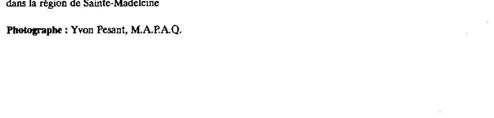
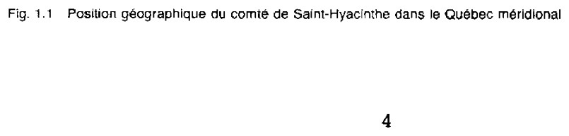
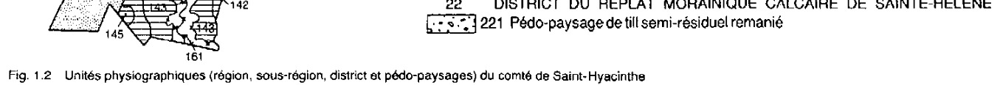
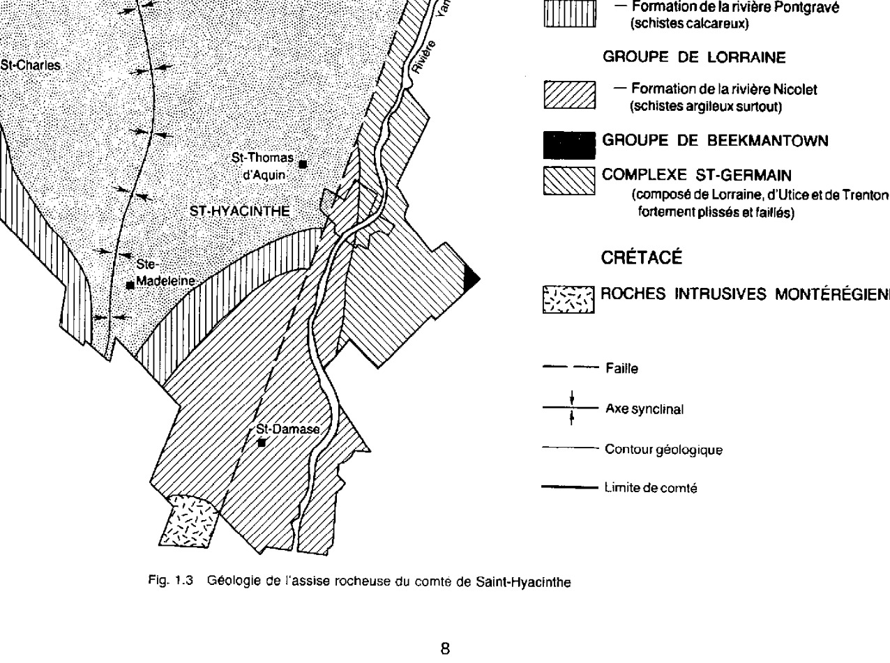
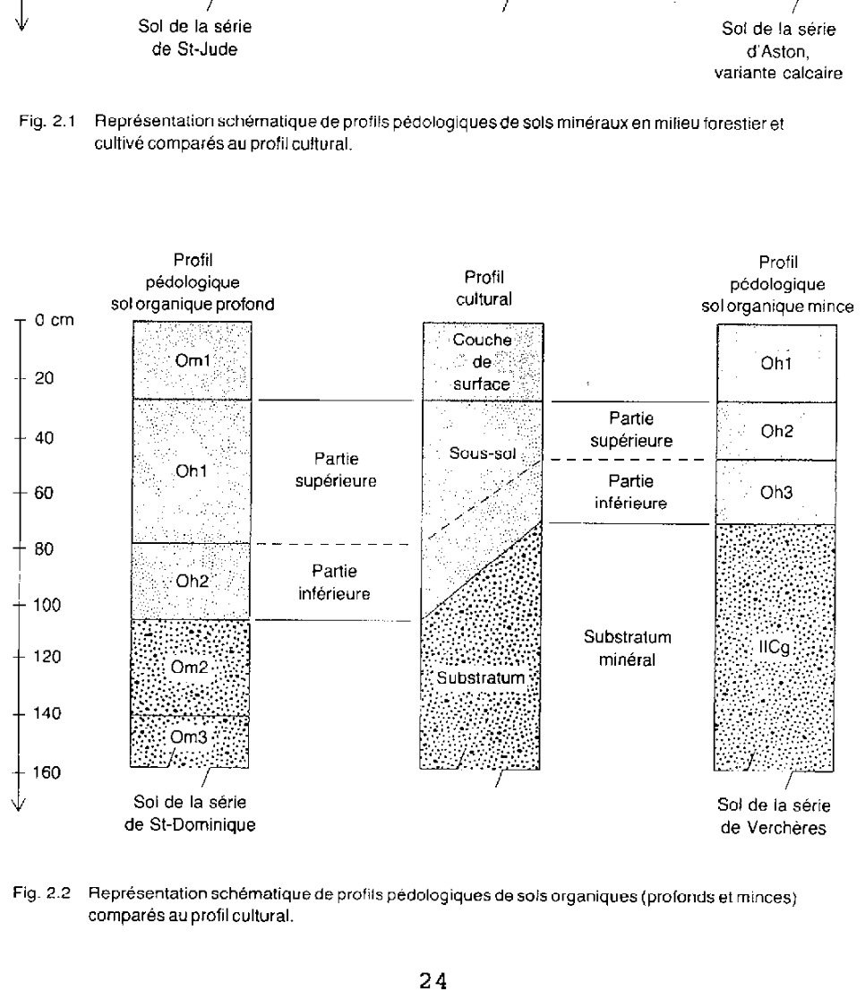
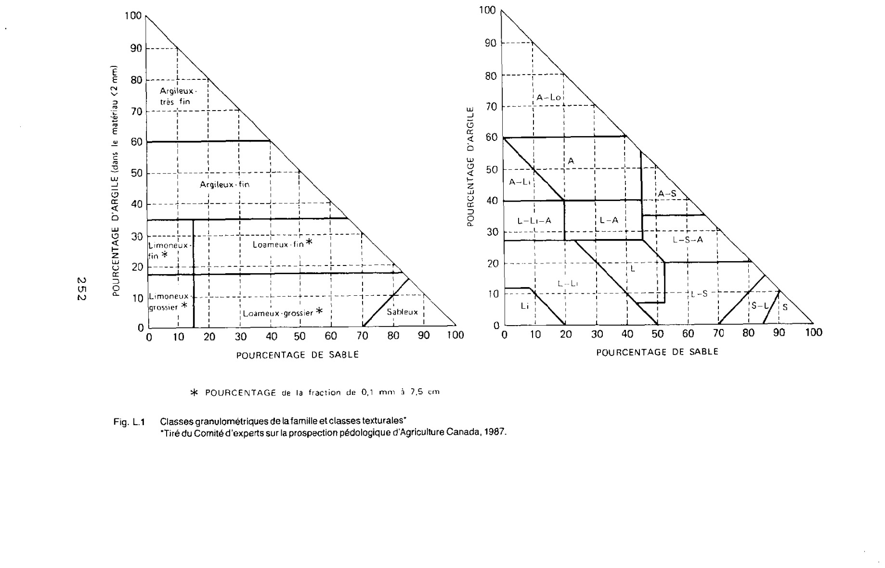
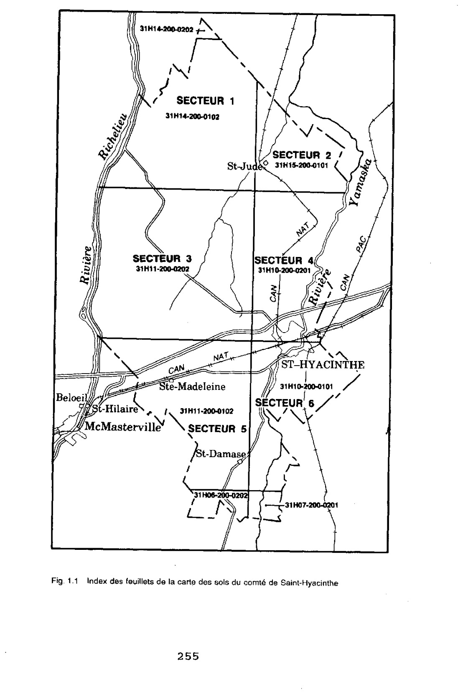

Illustration de la couverture
Vue aérienne vers le sud du comté de Saint-Hyacinthe dans la région de Sainte-Madeleine
Photographe : Yvon Pesant, M.A.P.A.Q.

RÉSUMÉ
Ce volume s'adresse avant tout à l'utilisateur désireux de connaître les caractéristiques, les limitations et le potentiel des sols de ce comté. Cette étude pédologique constitue le deuxième inventaire des sols du comté de Saint-Hyacinthe, elle est accompagnée d'une carte des sols, constituée de six feuillets publiées à l'échelle du $1 : 20\,000$.
Le secteur à l'étude, d'une superficie de $70\,660\text{ ha}$, est compris entre les latitudes $45^\circ 29'$ et $45^\circ 54'$ nord et les longitudes $72^\circ 52'$ et $73^\circ 12'$ ouest; il est entièrement compris dans la région des basses terres du Saint-Laurent et plus de $75\text{ \%}$ de ces terres ont une vocation agricole. Dans son ensemble, c'est une vaste plaine argileuse entaillée, ici et là, par l'érosion de quelques cours d'eau et surmontée de terrasses sableuses deltaïques. Seuls les monts Saint-Hilaire et Rougemont et l'escarpement de Saint-Dominique, au sud et à l'est du comté, viennent briser l'allure généralement uniforme de cette plaine. Ce comté est compris à l'intérieur de deux bassins hydrographiques, soit ceux des rivières Richelieu et Yamaska, où la plupart des matériaux qui forment les dépôts meubles furent déposés pendant ou après la mer de Champlain (soit il y a $12\,000$ ans), recouvrant alors les roches sédimentaires qui forment l'assise rocheuse.
Le climat général de la région est qualifié de continental tempéré. Quant à la végétation forestière, elle a été sévèrement et extensivement altérée par l'homme, aujourd'hui elle ne couvre plus que $25\text{ \%}$ du territoire et elle se retrouve particulièrement sur les sols sableux et loameux. Sur ces conditions édaphiques de nombreuses érablières sont présentes, ainsi que des forêts plus ou moins dégradées où dominent hêtre, érable rouge, érable à sucre, chêne rouge et pruche. Il y a aussi de nombreuses jeunes forêts de transition dominées par les trembles, les bouleaux et les pins.
Quarante-cinq séries de sols et variantes ont été reconnues, définies, cartographiées et classifiées selon les normes du Système canadien de classification des sols (C.E.P.P.A.C. 1987). Ces séries et leurs variantes ont particulièrement été différenciées par leur position physiographique, la texture et l'épaisseur des matériaux sur lesquels elles se sont développées, ainsi que par leur classe de drainage et leur développement génétique.
La carte finale des sols du comté de Saint-Hyacinthe comprend $1\,376$ délimitations regroupées en $100$ unités cartographiques, dont $14$ sont des unités de non sols, soit des types de terrain ou des unités d'utilisation des terres, ceux-ci représentent environ $6\text{ \%}$ du territoire. La superficie moyenne des délimitations est de $52,4\text{ ha}$, alors que la plus petite est $0,1\text{ ha}$ et la plus grande de $1\,897\text{ ha}$. Les sols minéraux et organiques couvrent, quant à eux, respectivement $92$ et $2\text{ \%}$. Parmi les sols minéraux, les argileux, les loameux, les sableux et les squelettiques-loameux ou sableux couvrent respectivement $29$, $30$, $32$ et $1\text{ \%}$ du comté.
Les sols ont été classés en sept classes selon leurs possibilités d'utilisation agricole. Aucun sol n'a été classé $1$, soit un sol ne comportant aucune limitation pour les cultures. Dans les classes $2$, $3$ et $4$, soit des sols considérées aptes à la production continue et à la récolte de grandes cultures, respectivement $62$, $29$ et $4\text{ \%}$ des sols ont ainsi été classés. Moins de $1\text{ \%}$ des sols ont été classés $5$, ceux-ci ne conviennent généralement qu'aux plantes fourragères vivaces et finalement, $3\text{ \%}$ ne conviennent à aucune de nos productions, soit des sols de classes $6$ et $7$.
SUMMARY
This volume is aimed at any user interested in finding the characteristics, the potential and the limitations of the soils of this county. It is the second soil survey of Verchères county. The report accompanies the soil map consisting of six sheet published at a scale of $1:20\,000$.
The $70\,660\text{ ha}$ study area is located between latitudes $45^\circ 29'$ and $45^\circ 54'$ north and longitudes $72^\circ 52'$ and $73^\circ 12'$ west. It is entirely part of the St. Lawrence lowlands and more than $75\text{ \%}$ of the land is agricultural. This vast clayey plain is occasionally cut by streams and covered with deltaic sands. In the southern part of the county, mounts Saint-Hilaire and Rougemont contrasts with the uniformity of the plain. The sedimentary bedrock was covered by Champlain sea deposits about $12\,000$ years ago.
The climate is temperate continental. About $25\text{ \%}$ of the area is forested, principal on the sandy and loamy soils. In this edaphics conditions, maple stands containing hemlock, elm, red oak and american beech are the most important along with young aspen, birch and red maple forests.
Forty five soil series and variants were mapped and classified according to the Canadian System of Soil Classification. Soils were differentiated on the basis of their position in the landscape, the texture and thickness of the parent material, their drainage and genetic development.
The soil map contains $1\,376$ delineations grouped into $100$ map units of which $14$ are non soils or miscellaneous land types covering $6\text{ \%}$ of the area. The delineations average $52,4\text{ ha}$ but range in size from $0,1$ to $1\,897\text{ ha}$. The area percentage covered by clayey, loamy, sandy and loamy or sandy skeletal are $29$, $30$, $32$ and $1$ respectively. Organic soils cover $2\text{ \%}$ of the area.
The soils are grouped into seven classes of soil capability for agriculture. There are no soils in class 1. Soils in class 2, 3 and 4 which are considered suitable for sustained production of cultivated crops represent $62$, $29$ and $4\text{ \%}$ of the area respectively. Soils suitable only for fodder crops are in class 5 and cover less than $1\text{ \%}$ of the area while unsuitable soils represented by classes 6 and 7 cover about $3\text{ \%}$ of the area.
iii
REMERCIEMENTS
Plusieurs personnes ont contribué à la réalisation de l'étude des sols du comté de Saint-Hyacinthe. Nous voulons leur offrir notre appréciation et souligner leur participation à différentes activités réalisées au long de cette étude.
Ainsi ont participé à la prospection et cartographie d'une partie des sols du comté, soit R. Marcoux, A. Brunelle, J.M. Cossette, M. Blackburn, M.C. Nolin, L. Lamontagne, A. Martin. et M. Deschênes, ils furent assistés au champ de F. Dupont, M.L. Couture, D. Gagné, C. Lévesque, R. Simard, J.Y. Drolet et de Y. Thibault.
Les analyses de laboratoire et l'échantillonnage des sols pour la physique ont été exécutés par C. Lévesque et D. Gagné de l'Équipe pédologique du Québec, Agriculture Canada, Sainte-Foy.
Pour la corrélation des sols du comté, avec ceux des comtés adjacents, nous avons bénéficié de la collaboration de J.M. Cossette, M.C. Nolin et L. Grenon de l'Équipe pédologique du Québec, Agriculture Canada, Sainte-Foy.
La mise en carte préliminaire a été effectuée par M. Deschênes de l'Équipe pédologique du Québec, Agriculture Canada, Sainte-Foy. La numérisation et le dessin des cartes finales ont été réalisés par la section de cartographie du Centre de recherches sur les terres, d'Agriculture Canada, Ottawa, sous la direction de B. Edwards.
La dactylographie sur traitement de texte a été confiée à M. Fortier de l'Équipe pédologique du Québec, Agriculture Canada, Sainte-Foy, alors que pour la mise en page de ce document, nous avons bénéficié de l'aide de J.M. Cossette.
INDEX DES UNITÉS CARTOGRAPHIQUES
AI2
Saint-Aimé, loam sableux fin
49
AI3
Saint-Aimé, loam
50
AI3h
Saint-Aimé, loam humifère
52
AIa2
Saint-Aimé, variante non calcaire, loam sableux fin
53
AIa3
Saint-Aimé, variante non calcaire, loam
55
AIb2
Saint-Aimé, substratum argileux calcaire, loam sableux fin
56
AIc3
Saint-Aimé, substratum argileux non calcaire, loam
58
AS1
Aston, sable fin loameux
59
AS2
Aston, loam sableux fin
61
ASa1
Aston, variante calcaire, sable fin loameux
62
ASa2
Aston, variante calcaire, loam sableux fin
64
BC3
Boucherville, loam
66
BR2w
Du Bourrelet, loam sableux fin, légèrement à modérément érodé
67
BR3w
Du Bourrelet, loam, légèrement à modérément érodé
69
CB3
Corbin, loam
72
CBa3
Corbin, variante non calcaire, loam
73
CH3h
Des Chenaux, loam humifère
75
CH4
Des Chenaux, loam limono-argileux
76
CL2gp
Charlemagne, loam sableux graveleux, légèrement à modérément pierreux
78
CL3gp
Charlemagne, loam graveleux, légèrement à modérément pierreux
79
CM3
Comtois, loam
81
CM4
Comtois, loam argileux
83
CO
Cousineau
84
CT2
Du Contour, loam sableux
87
CT3
Du Contour, loam
88
DA1
Saint-Damase, sable fin loameux
90
DA2
Saint-Damasc, loam sableux fin
92
DJ3
Du Jour, loam
93
DJ3b
Du Jour, loam, 3-8 % de pente
95
DJ4
Du Jour, loam argileux
96
DJ4b
Du Jour, loam argileux, 3-8 % de pente
98
DJ4p
Du Jour, loam argileux, légèrement à modérément pierreux
100
DO
Saint-Dominique
101
E
Zone d'excavation ou d'enlèvement de la couche de surface
103
FA2pnr
Farmington, loam sableux, légèrement à modérément pierreux, très mince sur roc et légèrement à modérément rocheux
104
FY1
Fleury, sable loameux fin
105
FY2
Fleury, loam sableux fin
107
FYa1
Fleury, variante non calcaire, sable fin loameux
109
FYa2
Fleury, variante non calcaire, loam sableux fin
110
H
Autoroute et route principale
112
HE2g
Sainte-Hélène, loam sableux grossier graveleux
112
HY3
Saint-Hyacinthe, loam limoneux
114
HY4
Saint-Hyacinthe, loam limono-argileux
116
JS1
Joseph, sable fin loameux
118
JS2
Joseph, loam sableux fin
119
JU1
Saint-Jude, sable loameux
121
KI2
Kierkoski, loam sableux fin
123
KI3
Kierkoski, loam
124
KI4
Kierkoski, loam argileux
125
LP4h
Laplaine, loam limono-argileux humifère
127
LR4
Saint-Laurent, loam limono-argileux
128
MC1
Michaudville, sable fin loameux
130
MC2
Michaudville, loam sableux fin
132
MS1
Massueville, sable fin loameux
133
MS2
Massueville, loam sableux fin
135
NC
Zone non cartographiée
137
NO
Nobel
137
O
Zone récréative de plein air
139
PR1
Prairie, sable fin loameux
140
PR2
Prairie, loam sableux fin
141
PS1
La Présentation, sable fin loameux
143
PV3
Providence, loam
145
PV4
Providence, loam argileux
146
PV41
Complexe de sols: Providence, loam argileux; Du Jour, loam; Charlemagne, loam sableux graveleux, légèrement à modérément pierreux
148
PV4b
Providence, loam argileux, 3-8 % de pente
150
PV4p
Providence, loam argileux, légèrement à modérément pierreux
151
PV5
Providence, argile limoneuse
153
R
Ravin escarpé
154
Ra
Ravin escarpé et Rideau, argile, modérément érodé
155
vi
Rb
Ravin escarpé et Yamaska,
loam sableux fin, modérément érodé
Rc
Ravin escarpé et Du Bourrelet,
Sainte-Rose ou Saint-Aimé, variante
non calcaire, loam, modérément érodé
RG2
Rougemont, loam sableux
RG2m
Rougemont, loam sableux fin, mince
sur roc
RG2qnk
Rougemont, loam sableux fin, très
pierreux, très mince sur roc et très
rocheux
Yamaska, loam sableux fin,
légèrement à modérément érodé
YK3w
Yamaska, loam, légèrement
à modérément érodé
Z
Eau
5.7 Matériaux loameux-grossiers (till) semi-résiduel généralement très minces (de 20 à 50 cm) parfois minces (de 50 à 100 cm) sur le roc . . . . . . . . 222
5.14 Matériaux squelettiques-loameux à loameux grossiers déposés en placage sur un matériau argileux . . . . . . . . . . . . . . 229
5.15 Matériaux organiques profonds (A) (> 160 cm) ou minces (B) (< 160 cm) accumulés sur un matériau argileux . . 230
UTILITÉS ET LIMITES DE CETTE ÉTUDE
La prospection pédologique se veut un outil pour aider les divers usagers du sol (Comité d'experts sur la prospection pédologique 1983). Elle a essentiellement pour but d'aider les agriculteurs, les vulgarisateurs et les pédologues à déterminer l'aptitude et la productivité des sols pour la grande culture, la paissance et l'affouragement. Les informations contenues dans le rapport permettent alors un meilleur choix, par exemple dans l'achat ou la location d'une terre ou dans la réalisation de transfert de techniques d'aménagement entre sols semblables, réduisant par le fait même les risques de l'aménagement de nouvelles terres. Elle renseigne l'ingénieur rural sur le type et le coût d'assainissement des sols de la région.
Elle est également utile aux ingénieurs-forestiers qui évaluent la productivité des sols forestiers parce qu'qu'elle peut les aider à mettre au point et à diriger des programmes de récolte et de reboisement. Les sols déterminent, dans une large mesure, le type et le volume de végétation accessible à la faune comme sources d'aliment et d'abri, en plus d'influer sur la qualité et la disponibilité de l'eau. Les données de prospection pédologique sont donc utiles aux biologistes en aménagement de la faune qui sont responsables de la planification, de la mise en valeur et de la gestion des ressources fauniques.
La prospection pédologique peut aider les planificateurs en aménagement du territoire à déterminer l'aptitude de certaines régions pour des utilisations concurrentielles, ou aider des ingénieurs à évaluer le degré de convenance de divers matériaux comme sources de remblai, de gravier ou de sable, pour la construction de pipelines ou de routes et pour d'autres types d'utilisation. Elle peut également aider les promoteurs et les acheteurs de maisons à déterminer les risques ou les limites de certains sols pour la construction domiciliaire.
Les renseignements contenus dans cette étude permettent donc la prise de décision concernant l'aménagement et la conservation des sols jusqu'au niveau de groupes contiguës d'exploitations agricoles. La carte des sols qui accompagne ce rapport sert de référence au repérage au champ et à l'établissement d'unités de gestion applicable à l'échelle d'une ferme. Cependant, il est important de noter que la précision de l'étudee ne s'applique pas aux fermes, car environ une ferme sur trois a fait l'objet de prospection. Seule une étude pédologique très détaillée (niveau 1), réalisée à une échelle de 1 : 5 000 ou plus grande, permet une telle précision.
Les utilisateurs doivent aussi comprendre que les sols, composant les unités cartographiques, présentent des variations de leur propriété qui peuvent dépasser celles décrites dans ce rapport. Les limites entre les délimitations de la carte représentent la meilleure évaluation du changement entre les sols, compte tenu de l'échelle de l'étude et de la qualité du fond de carte utilisé.
Nous voudrions aussi mettre en garde l'utilisateur qui voudrait agrandir l'échelle d'une partie ou de l'ensemble de la carte des sols. Cette pratique a pour conséquence d'amener les limites des délimitations à une précision dépassant cette obtenue par cette étude réalisée à l'échelle du 1 : 20 000.
Finalement, il faut que l'utilisateur sache qu'il peut retrouver, en inclusions dans certaines délimitations, des sols non identifiés dans l'unité cartographique, étant donné l'échelle de la carte et la nature des sols cartographiés.
COMMENT UTILISER LA CARTE DES SOLS ET LE RAPPORT
Ce rapport est un document d'information de base et il doit être utilisé avec la carte des sols. Pour utiliser la carte des sols et le rapport, de façon efficace, les procédures suivantes sont suggérées :
(1) Localiser votre secteur d'intérêt sur "l'index des feuillets de la carte" (fig. I.1) des sols publié à la fin de ce volume. Noter le numéro des feuillets sur lesquels se situe votre zone d'intérêt.
(2) Retirer du rapport le ou les feuillet(s), appropriée(s) et localiser précisément votre secteur d'intérêt. Étant donné que la carte des sols est sur une base topographique, les caractéristiques suivantes, telles que les zones urbaines, de même que les cours d'eau, les routes et les voies de chemin de fer, peuvent vous aider dans la localisation.
(3) Noter le symbole de l'unité cartographique des délimitations qui couvrent votre secteur d'intérêt. Le numéro de délimitation, situé au bas du symbole de l'unité, est unique pour chaque délimitation du comté et peut aussi servir à l'utilisateur pour localiser précisément le polygone d'intérêt.
(4) Consulter la légende de la carte pour connaître la désignation exacte des symboles qui représentent les unités cartographiques. Une section avec des "Notes explicatives concernant le symbole de la carte" apparaît à la droite de la carte des sols ainsi qu'à la section 3.3 de ce volume. Celle-ci permet de déduire certaines informations pédologiques du symbole utilisé pour représenter les unités cartographiques.
(5) Si l'information donnée par le symbole de l'unité cartographique d'une délimitation ne suffit pas, consulter le troisième chapitre de ce volume. Vous y trouverez une description générale des sols, composant l'unité cartographique, et certaines informations sur leurs limitations, leurs utilisations et leurs aménagements.
(6) Pour une information plus détaillée, concernant la classification taxonomique et la description morphologique, chimique et physique des séries de sols et de leurs variantes, ainsi que des variations des principaux descripteurs morphologiques, l'utilisateur doit se référer au Volume 2 intitulé "Étude pédologique du comté de Saint-Hyacinthe : Description et classification des séries de sols" (Lamontagne 1991).
INTRODUCTION
La prospection, la cartographie et la classification des sols du comté de Saint-Hyacinthe ont été réalisées grâce à la collaboration technique et financière du Ministère de l'Agriculture du Canada.
Cette étude fait partie d'un vaste programme de cartographie détaillée à l'échelle du 1 : 20 000 des sols entrepris par l'Équipe pédologique du Québec, Agriculture Canada, Sainte-Foy et qui touche un large secteur de la plaine de Montréal. À ce jour (1991), la prospection dans les comtés de Verchères (Lamontagne et Nolin 1990), de Richelieu (Nolin et Lamontagne 1990) et de Chambly (Martin et Nolin 1991) est terminée. Elle est présentement en cours dans le comté de Rouville et de Laprairie.
Cette étude pédologique constitue le deuxième inventaire des sols du comté de Saint-Hyacinthe. La prospection originale de ce comté a été réalisée durant les années 40 (Baril et Mailloux 1942), principalement pour les sols à fort potentiel pour la production de la betterave à sucre et du lin (Baril 1986). De cette prospection, seules une carte à l'échelle du 1 : 63 360 (niveau 3) et une légende étendue ont été publiées.
La décision de cartographier, à une échelle plus grande (niveau 2), les sols du comté de Saint-Hyacinthe fait suite à une forte demande d'information plus complète et détaillée. De même, les pressions démographiques, industrielles et récréatives sur les terres de la région ainsi que l'utilisation intensive des sols pour la production agricole et les risques de dégradation qui l'accompagnent demandent une meilleure connaissance de cette ressource afin de mieux la protéger.
La cartographie, à l'échelle du 1 : 20 000, a débuté en 1976 et fut terminée en 1980. Tout le comté a été prospecté à l'exception des îles Jeannette et des Cerfs au centre de la rivière Richelieu, de certains secteurs du mont Rougemont et d'autres d'accès difficiles en milieu urbain ou industriel. De cette étude, seuls un rapport préliminaire (Drolet 1984) et des cartes de sols préliminaires (Lamontagne et Cossette 1987) ont été rendus disponibles avant la publication de ce rapport final.
Ce volume contient la description et l'interprétation des unités cartographiques. Il s'adresse avant tout à l'utilisateur désireux de connaître les caractéristiques, les limitations et le potentiel des sols du comté. Il comprend cinq chapitres distincts.
Le premier chapitre donne une description de la géographie humaine (localisation, superficie, population et agriculture) et de la géographie physique (physiographie, géologie, dépôts de surface, climat et végétation) de l'aire à l'étude.
Le deuxième chapitre énonce quelques concepts et définitions de la pédologie moderne et commente le déroulement de la méthode de prospection et d'analyse des sols.
Le troisième chapitre présente les caractéristiques générales des unités cartographiques et quelques recommandations concernant leur aménagement et leur conservation. De plus, y est inclue une légende des sols et une explication du symbole désignant l'unité cartographique.
Le quatrième chapitre est consacré à l'interprétation des données pédologiques. Ainsi, chaque unité cartographique est classée selon ses possibilités d'utilisation agricole. Le système utilisé est décrit de façon détaillée.
Le cinquième chapitre présente 15 tableaux d'estimation des descripteurs physiques ainsi qu'une classification des sols pour l'ingénieur, ceci sur la base d'un regroupement des séries de sols et des variantes par groupe de matériaux à texture similaire.
Finalement un lexique a été placé à la fin de ce volume pour expliciter certains termes techniques. La définition des mots inclus dans ce lexique a été tirée ou adaptée du glossaire des termes de la science des sols (Direction générale de la recherche, Agriculture Canada 1976), du Manuel de description des sols sur le terrain (Day et McMenamin 1983), du Système canadien de classification des sols
par le comité d'experts de la prospection pédologique d'Agriculture Canada (C.E.P.P.A.C. 1987) et du document d'entrée des données sur la fiche-transect (Nolin 1983b).
La carte de sol qui accompagne le rapport est constituée de six feuillets publiés à l'échelle du 1 : 20 000 sur un fond topographique. La carte indique la localisation, la forme et l'étendue des différentes délimitations cartographiques, tandis que le symbole fournit des renseignements sur la texture de la couche de surface et sur certaines caractéristiques importantes pour l'aménagement (pente, pierrosité, roccositė, érosion hydrique et épaisseur du sol sur le roc). Ce rapport est non seulement utile aux agriculteurs et aux agronomes mais aussi à tous ceux qui sont intéressés à la planification et la gestion des terres.
CHAPITRE 1
DESCRIPTION GÉNÉRALE DU COMTÉ
1.1 LOCALISATION, SUPERFICIE ET POPULATION
Le comté de Saint-Hyacinthe est situé dans la plaine de Montréal entre la rive sud du fleuve Saint-Laurent et le plateau appalachien. De par sa position (fig. 1.1), il est borné à l'ouest, par la rivière Richelieu et le comté de Verchères, au nord, par le comté de Richelieu, à l'est, par la rivière Yamaska et le comté de Bagot et, au sud, par le comté de Rouville.
Cette région à l'étude s'étend dans ses axes les plus longs entre 45°29' et 45°54' de latitude nord et 72°52' et 73°12' de longitude ouest.
La superficie totale du comté est de 70 660 ha (Statistique Canada 1986), dont 50 400 ha sont consacrés à l'agriculture, principalement pour la grande culture et le pâturage amélioré. Au total, les fermes agricoles représentent 57 601 ha, soit 85 % du territoire inventorié.
La population du comté de Saint-Hyacinthe est de 63 600 habitants (Répertoire des municipalités 1985), celle-ci est avant tout urbaine, alors qu'une faible proportion, moins de 20 %, se retrouve en milieu rural. La population est principalement regroupée dans la ville de Saint-Hyacinthe et dans les villages de Saint-Denis-sur-Richelieu, Saint-Charles-sur-Richelieu, Sainte-Rosalie, Saint-Dominique, Sainte-Madeleine et Saint-Damase ainsi que dans une douzaine de paroisses réparties sur tout le territoire du comté. Ce territoire est aujourd'hui partie intégrante de deux municipalités régionales de comté (M.R.C.), soit celles des Maskoutains et de la Vallée-du-Richelieu.
1.2 AGRICULTURE
Le comté de Saint-Hyacinthe est une région à très forte vocation agricole et où le développement manufacturier et industriel est aussi bien
implanté. Une agriculture très moderne y est pratiquée, marquée par des cultures intensives et une grande mécanisation des pratiques culturales. Ainsi, lorsque l'on se promène le long des routes et rangs, on est frappé par le nombre de hauts silos qui témoignent de la fertilité des sols cultivés.
Au recensement de 1986 (Statistique Canada 1986), on comptait, dans le comté de Saint-Hyacinthe, 775 fermes. De ce nombre, 549 appartiennent à des "producteurs-propriétaires", 32 sont gérées par des "locataires" et finalement, 194 par des "mi-propriétaires, mi-locataires". Au total, 46 737 ha appartiennent en propre aux agriculteurs et 10 863 ha sont loués.
Les principales productions agricoles du comté de Saint-Hyacinthe sont les grandes cultures, les menus grains, les produits laitiers, les fruits et les légumes.
En 1986 (Statistique Canada 1986), on comptait 25 616 ha en maïs-grain, 6 653 ha en blé, 1 048 ha en avoine, 3 022 ha en orge, 832 ha en mélanges de céréales, 2 894 ha en maïs-ensilage et 7 962 ha en foin cultivé.
Quelques centaines d'hectares sont consacrés à la culture des fruits et des légumes. Parmi les légumes, la pomme de terre, le maïs sucré et les haricots ont la faveur des agriculteurs alors que pour les fruits, on parle surtout des fraises, des framboises et des pommes.
Dans les spécialités d'élevage, notons d'importantes productions de poules et poulets, de bovins et de veaux, de porcs et de visons et le maintien d'un important cheptel de vaches pour l'industrie laitière.
L'agriculture est aujourd'hui marquée par un regroupement des fermes et des superficies cultivées. L'agriculture au Québec prend l'allure de plus en plus d'une petite et moyenne entreprise

Fig. 1.1 Position géographique du comté de Saint-Hyacinthe dans le Québec méridional
cause des investissements qu'elle exige et de la plus-value des sols arables. Dans ce contexte, l'industrie agricole est une activité économique de première importance dans le comté de Saint-Hyacinthe.
1.3 UNITÉS PHYSIOGRAPHIQUES
Physiographiquement, le comté de Saint-Hyacinthe est entièrement compris dans la région des basses terres du Saint-Laurent (Lajoie 1975). Dans son ensemble, c'est une vaste plaine argileuse entaillée, ici et là, par l'érosion de quelques cours d'eau et surmontée de terrasses sableuses. Seul le mont Rougemont, au sud du comté, vient briser l'allure généralement uniforme (de 0 à 5 % de pente) de cette plaine. Les différentes unités physiographiques (sous-régions, districts et pédo-paysages) du comté sont représentées à la figure 1.2.
La première sous-région est la plaine étale de la vallée du Saint-Laurent qui occupe la majeure partie du comté à des altitudes variant entre 10 et 40 m. Cette sous-région se subdivise, d'est en ouest en six districts, soit ceux de la vallée fluviale du Proto-Saint-Laurent, du bassin du Proto-Lac-Saint-Pierre, des replats sableux de l'estuaire Post-Champlain, du chenal des rivières Salvail-Hurons des replats argileux de l'estuaire Post-Champlain et finalement du chenal de la rivière Yamaska.
Le district de la vallée fluviale du Proto-Saint-Laurent présente, dans le comté de Saint-Hyacinthe, une déclivité légère et graduelle vers le Richelieu. Il se situe dans les municipalités de Saint-Denis-sur-Richelieu et de Saint-Charles-sur-Richelieu. Ce milieu est le siège de cinq pédo-paysages : les chenaux d'érosion fluviale tapissés d'argile marine Champlain, les surfaces de déposition couvertes d'argile marine remaniée fluviatilement, des placages de sable, des traînées graveleuses d'origine glacielle et finalement des levées de débordement de texture loameuse. Ce district est séparé à l'est de celui des replats sableux de l'estuaire Post-Champlain par un escarpement d'environ 5 à 10 m de dénivellation.
Ce dernier se retrouve dans une partie des municipalités de Saint-Denis-sur-Richelieu, Saint-Jude, Saint-Charles, La Présentation et Sainte-Madeleine. Il est situé à l'aval du mont Saint-Hilaire et s'étend à des altitudes variant de 20 à 35 m. Il est constitué de quatre pédo-paysages, dont les principaux sont des terrasses sableuses, plus ou moins profondes, entrecoupées de matériaux déposés dans des vasières et des lagunes d'estuaire, constituées surtout de limon et d'argile stratifiée de sable très fin.
Au nord du comté, il y a le district du bassin du Proto-Lac-Saint-Pierre compris dans la municipalité de Saint-Denis-sur-Richelieu, à des altitudes variant de 30 à 35 m. Celui-ci se subdivise en deux pédo-paysages : le littoral formé de plages et de cordons sableux, puis la vasière constituée surtout de matériaux limoneux stratifiés.
Le district des replats argileux estuariens de l'époque Post-Champlain représente la portion maritime du vaste estuaire qui a succédé à la mer de Champlain lors de son retrait. Il occupe, en superficie, la majorité des municipalités de l'est du comté et se retrouve à des altitudes variant de 30 à 40 m. Les terres, composant ce district, se regroupent en cinq pédo-paysages : les chenaux d'érosion fluviatile tapissés d'argile marine Champlain et localement recouverts de matériau organique (tourbière), le littoral caractérisé par les dépôts sableux et les vasières ou lagunes constituées de matériaux limoneux à argileux stratifiés de sable très fin.
Le district du chenal des rivières Salvail-Hurons, traverse le centre du comté dans l'axe nord-sud. Il occupe ainsi une partie des municipalités de Saint-Jude, La Présentation et Sainte-Madeleine à des altitudes variant de 15 à 30 m. Il est formé de cinq pédo-paysages : un chenal tapissé d'argile marine, recouvert de matériaux organiques, de limon ou d'argile stratifiés d'origine estuarienne, de cordons alluviaux loameux ou sableux et finalement d'une zone de ravins et de terrains alluvionnaires souvent inondés au printemps.
Le district du chenal de la rivière Yamaska, quant à lui, longe les municipalités de Saint-Barnabé, Saint-Hyacinthe et Saint-Damase, à des altitudes variant entre 10 et 30 m. Il est formé de deux pédo-paysages : une zone de ravins et de terrasses alluviales récentes et une argile marine remaniée fluviatilement.
La deuxième sous-région est celle des terres hautes des rebords de la vallée du Saint-
LÉGENDE
RÉGIONS DES BASSES TERRES DU SAINT-LAURENT
SOUS-RÉGION DE LA PLAINE ÉTALE DE LA VALLÉE DU SAINT-LAURENT (10-40 m)
DISTRICT DE LA VALLÉE FLUVIALE DU PROTO-SAINT-LAURENT
111 Pédo-paysage des chenaux d'érosion tapissés d'argile marine
112 Pédo-paysage des haut-fonds recouverts d'argile marine remaniée
113 Pédo-paysage des trainées graveleuses d'origine glacielle
114 Pédo-paysage des cordons fluviaux sableux
115 Pédo-paysage des levées alluviales loameuses
DISTRICT DU BASSIN DU PROTO-LAC-SAINT-PIERRE
121 Pédo-paysage de la zone littorale
122 Pédo-paysage de la zone de vasières
DISTRICT DES REPLATS SABLEUX DE L'ESTUAIRE POST-CHAMPLAIN
131 Pédo-paysage des terrasses sableuses profondes (>75 cm)
132 Pédo-paysage des terrasses sableuses minces (<75 cm)
133 Pédo-paysage des levées alluviales ravinées
134 Pédo-paysage des vasières et des lagunes d'estuaire
DISTRICT DES REPLATS ARGILEUX DE L'ESTUAIRE POST-CHAMPLAIN
141 Pédo-paysage des tourbières
142 Pédo-paysage des chenaux d'érosion tapissés d'argile marine
143 Pédo-paysage des vasières et des lagunes d'estuaire
144 Pédo-paysage des cordons fluviaux sableux profonds (>75 cm)
145 Pédo-paysage des cordons fluviaux sableux minces (<75 cm)
DISTRICT DU CHENAIL DES RIVIÈRES SALVAIL-HURONS
151 Pédo-paysage des zones de ravinement et de terrain alluvionnaire
152 Pédo-paysage des marécages en bassin
153 Pédo-paysage des chenaux d'érosin tapissés d'argile marine
154 Pédo-paysage des vasières et des lagunes
155 Pédo-paysage des levées alluviales loameuses
156 Pédo-paysage des cordons fluviaux sableux
DISTRICT DU CHENAIL DE LA RIVIÈRE YAMASKA
161 Pédo-paysage des zones de ravinement et d'argile marine remaniée
162 Pédo-paysage des levées alluviales loameuses
SOUS-RÉGION DES TERRES HAUTES DES REBORDS DE LA VALLÉE DU SAINT-LAURENT (45 m et plus)
DISTRICT DES COLLINES MONTÉRÉGIENNES
211 Pédo-paysage du mont Rougemont
DISTRICT DU REPLAT MORAINIQUE CALCAIRE DE SAINTE-HÉLÈNE
221 Pédo-paysage de till semi-résiduel remanié

Fig. 1.2 Unités physiographiques (région, sous-région, district et pédo-paysages) du comté de Saint-Hyacinthe
Laurent qui se trouve à des altitudes supérieures à 45 m et qui comprend deux districts. Le district des collines montérégiennes avec le pédo-paysage du mont Rougemont qui s'étale depuis son piedmont jusqu'à son sommet (entre 45 et 350 m d'altitude) celui-ci est inclus dans la municipalité de Saint-Damase. Les matériaux sont surtout des sables grossiers d'origine marine, résiduel ou fluvio-glaciaire en association avec des affleurements rocheux. Quant au second district, c'est celui du replat morainique calcaire de Sainte-Hélène. De faible étendue, il est formé d'un pédo-paysage de till semi-résiduel remanié et de dépôts fluvio-glaciaires, il traverse l'est du comté, dans la municipalité de Saint-Dominique, à des altitudes variant entre 45 et 50 m.
2 000 pieds et qui a mis en contact deux formations de la même série sédimentaire (Complexe de Saint-Germain).
Finalement, il y a le mont Rougemont qui domine la plaine environnante (altitude 340 m) à environ 10 km au sud de Saint-Hyacinthe. De par son diamètre d'environ 4 km, il constitue l'une des plus grosses intrusions du groupe des montrégiennes. Ce groupe est caractérisé pétrographiquement par un assemblage de minéraux alcalins relativement rares. Ainsi, ce mont est caractérisé par un amas ultramafique composé surtout de pyroxénite et en quantité moindre de gabbro ferromagnésien (Philpotts 1976).
1.4 GÉOLOGIE DU SOCLE ROCHEUX
Les roches de la région à l'étude sont essentiellement des sédiments de la période Ordovicienne (450 millions d'années), reposant presque à plat et traversées au sud par un magma alcalin qui est à l'origine du mont Rougemont (fig. 1.3).
La plus grande partie de l'assise rocheuse appartient à la formation du Groupe de Richmond qui est caractéristique du vaste synclinal (Chambly-Fortierville) dominant du nord au sud, la tectonique des roches en affleurement dans les basses terres du Saint-Laurent (Clark 1964a et 1964b; Clark et Globensky 1977).
Dans l'angle sud-est du comté de Saint-Hyacinthe, on trouve quelques affleurements de roches plutôt plissés qui ont été soumis au mouvement orogénique appalachien mais qui stratigraphiquement appartiennent à l'avant pays. On parle ici de la crête de Saint-Dominique dominée, au niveau du comté, par la formation de Beekmantown. Entre ces formations, on retrouve des éléments stratigraphiques appartenant au Groupe de Lorraine, ainsi qu'au Complexe de Saint-Germain.
Parmi les éléments géologiques du comté, il y a les affleurements situés dans la rivière Yamaska près et en aval de Saint-Hyacinthe qu'on peut identifier à la subdivision de Breault de la formation de la rivière Nicolet. De plus, mentionnons la faille de Saint-Barnabé, de direction nord-sud, plus ou moins parallèle à la rivière Yamaska, à l'ouest de celle-ci qui a produit un déplacement d'environ
1.5 CHRONOLOGIE GÉOLOGIQUE DES MATÉRIAUX DE SURFACE
Cette chronologie historique des matériaux de surface a été reconstituée à la suite de la consultation d'un certain nombre de documents bibliographiques. Le tableau 1.1, quant à lui, présente une synthèse chronologique de l'information énoncée dans les paragraphes suivants.
La plupart des matériaux qui se retrouvent à la surface du comté de Saint-Hyacinthe furent déposés pendant ou après la mer de Champlain. Cette époque aurait débuté il y a 11 800 années pour s'étendre sur une période approximative de 2 000 à 3 000 années (Terasmae 1959; Karrow 1965; Gadd 1971; Prest 1975; Prest et Hode-Keyser 1977; Prichonnet 1977).
Avant cette époque de grande mer, la vallée du Saint-Laurent a connu plusieurs avancées glaciaires qui sont venues recouvrir l'assise rocheuse formée de roches sédimentaires relativement peu résistantes de la période Ordovicienne. Les schistes argileux ou calcaires des Groupes de Richmond, de Lorraine et du Complexe Saint-Germain couvrent environ 95 % de la roche en place du comté de Saint-Hyacinthe. Ces matériaux sédimentaires n'affleurent réellement que localement, là où ils se sont rapprochés de la surface sous l'effet des mouvements tectoniques ou de la mise à jour par l'érosion des dépôts de surface.
Ailleurs dans le comté, surgissent des roches ignées de la période Crétacée, localisées au

Fig. 1.3 — Géologie de l'assise rocheuse du comte de Saint-Hyacinthe
LÉGENDE
ORDOVICIEN
GROUPE DE RICHMOND
Formation de la rivière Bécancour (schistes argileux rouges et grès rouges)
Formation de la rivière Pontgravé (schistes calcaires)
GROUPE DE LORRAINE
Formation de la rivière Nicolet (schistes argileux surtout)
GROUPE DE BEEKMANTOWN
COMPLEXE ST-GERMAIN
(composé de Lorraine, d'Utice et de Trenton fortement plissés et faillés)
CRÉTACÉ
ROCHES INTRUSIVES MONTRÉGIENNES
Faille
Axe synclinal
Contour géologique
Limite de comté
mont Rougemont. Ces roches intrusives basiques sont peu fracturées et plus résistantes aux agents physiques que les formations sédimentaires (Dion 1977). Elles affleurent localement particulièrement là où les pentes sont abruptes (>15 % de pente).
Elson (1962) mentionne que seulement la dernière glaciation est bien représentée dans les dépôts du Pléistocène. Antérieurement au stade Two-Creeks, le glacier traversa la région en direction sud-ouest (LaSalle et Elson, 1962; Prichonnet 1977) et déposa un till généralement brun rougeâtre appelé, de façon informelle, "till de Saint-Jacques" par LaSalle (1981a et 1981b). Ce till, peu compact, arénacé et calcaire, tirerait sa couleur des matériaux du Groupe de Richmond (Queenston). Ce dépôt se compose d'une bonne proportion de particules fines (limons et argiles) et de petits fragments (<1 cm) de schiste, de micro-grès et de calcaire reposant généralement sur le roc, selon des épaisseurs variant de 1 à 6 m. Ce till fut ultérieurement remanié sous l'action des vagues et des courants des périodes marine, estuarienne ou fluviatile. Les sols de la série de Boucherville se composent de ces matériaux que l'on retrouve principalement au nord du mont Rougemont, sur des terrains légèrement inclinés.
Un autre genre de till, résultant du mélange de matériels glaciaires avec d'importantes quantités de calcaire cristallin, se retrouve dans la région des hautes terres de la vallée du Saint-Laurent. Ce dépôt est localisé à l'est du comté, sur la terrasse de Saint-Dominique. On parle alors d'un till remanié et/ou semi-résiduel qui repose, à une faible profondeur (<1 m), sur une assise rocheuse calcaire (Laplante 1959). Ce matériel loameux est un mélange hétérogène de particules fines et grossières ainsi que de fragments grossiers calcaires. La composition minérale de ce till ressemble beaucoup à celle de la roche sous-jacente, ce qui laisse à penser que les matériaux glaciaires n'ont pas été charriés sur de longues distances. Le calcaire de Trenton, principale roche en place observée sous ce matériau, est d'une texture plutôt fine et présente une bonne résistance à la désagrégation, une forte teneur en calcaire ce qui confère aux sols sous-jacents une couleur gris brunâtre ou grise. Les sols de la série de Farmington sont composés de ces matériaux.
On trouve aussi dans cette région les traces d'un dépôt d'origine fluvio-glaciaire (Laplante 1959). Celui-ci proviendrait d'un cours d'eau sous le glacier et présente un calibrage et une interstratification de sables, de graviers et de cailloux arrondis de plusieurs mètres d'épaisseur et repose sur des tills calcaires ou le roc (Complexe de Saint-Germain). La partie supérieure de ce matériau a été reprise par des courants fluviatiles. Les sols de la série de Sainte-Hélène se composent de ces matériaux.
Par la suite, le recul des glaciers et l'affaissement du socle rocheux amenèrent la mer à envahir la région. Cette période qui permit à l'Atlantique d'étendre un de ses bras jusque dans les basses terres du Saint-Laurent, marqua le début de l'épisode de la mer de Champlain. Cette mer a recouvert environ 53 500 km carré dont 36 500 au Québec (Elson 1969). On admet que le niveau maximum, atteint par cette mer, se situerait, selon les régions, entre 185 et 215 m. Certains auteurs mentionnent un niveau supérieur de 241 m (Prichonnet 1977). Il est donc évident que toute la région à l'étude fut inondée durant cette période.
Cette mer constituait un immense bassin de sédimentation pour toutes les particules provenant de la trituration des roches sous le passage des glaciers. Les apports aux bassins étaient de trois ordres, soit des affluents, principalement des rivières débouchant du Bouclier laurentien, deuxièmement de l'érosion des berges par l'action des vagues qui remaniaient les tills ou attaquaient la roche en place et finalement, des dépositions dues aux arrivées de glaces. Les sédiments déposés dans la mer de Champlain sont intimement associés aux dépôts glaciaires. Il est important de se rappeler que le fond de la mer était alors un paysage glaciaire inondé.
Dans la zone d'eau profonde et salée, les particules fines, en particulier les argiles, floculaient et se précipitaient, alors qu'à la marge du bassin, en zone littorale, des matériaux plus grossiers, soit surtout des sables, s'échouaient en formant les plages marines. On parle souvent "d'argile Leda" et de "sable Saxicava" pour dénommer ces deux types de dépôts de la mer de Champlain. Ces termes réfèrent aux principaux coquillages retrouvés à l'intérieur de ces matériaux.
Les dépôts de plage marine se retrouvent principalement dans le comté de Saint-Hyacinthe sur les terrasses inférieures et intermédiaires du mont Rougemont de 45 à 150 m d'altitude. Ces matériaux sont composés de sable plutôt grossier et graveleux, parfois même d'un gravier, déposés en lentilles et en couches d'épaisseurs variables, présentant parfois des stratifications entrecroisées ainsi que des fossiles. Les éléments sont habituellement arrondis à la suite de leur balayage par les vagues et l'épaisseur maximum du dépôt peut atteindre 10 m sur le till ou le roc; cependant les matériaux, ainsi déposés, sont généralement minces sur le roc dans le comté de Saint-Hyacinthe. Les sols de la série de Rougemont se composent de ces matériaux. Stobbe (1938) mentionne que les plages marines ont des épaisseurs toujours plus grandes et plus larges sur les pentes sud et ouest des montérégiennes, alors qu'elles deviennent très étroites et moins profondes sur les pentes nord et est, pour finalement disparaître complètement.
Les argiles marines se retrouvent au niveau de la plaine étale de la vallée du Saint-Laurent sur des terrains horizontaux à dépressionnaires. Ces matériaux se composent, à plus de 60 %, d'argile de couleur gris-bleu, collante, massive, contenant des carbonates et des fossiles avec d'occasionnelles traces de stratifications de limon ou de sable fin. D'après Karrow (1965), la fraction argileuse est surtout constituée de mica-illite et de montmorillonite, alors que les limons sont surtout constitués de quartz et de calcite. L'épaisseur de ce dépôt est variable. McGerrigle (1936) souligne que dans la plaine de Montréal, il atteint 15 m en moyenne, alors que LaSalle (1963) et Dion (1977) parlent de cas où les sondages ont atteint respectivement 30 et 45 m d'argile, soit sur le till ou sur le roc. Les sols des séries de Sainte-Rosalie, de Saint-Urbain, de Laplaine et de Rideau se composent de ces matériaux. À noter que les argiles marines ont été érodées par les courants fluviatiles du Proto-Saint-Laurent et du Proto-Yamaska; ainsi leur position horizontale ou dépressionnaire a favorisé, à certains endroits, l'accumulation de placages (<100 cm) de matériaux organiques à leur surface (ex : série de Verchères ou de Laplaine).
Suite au recul des glaciers vers le nord, il se produisit un relèvement isostatique de la croûte terrestre qui entraîna une régression marine, celle-ci était accompagnée d'une désalinisation progressive des eaux. C'est donc parfois progressivement, parfois plus rapidement, que la mer se retira de la vallée du Saint-Laurent. Poursuivant l'approche de Goldthwait (1933), McPherson (1967) reconnaît trois stades principaux dans le retrait du plan d'eau des basses terres du Saint-Laurent : les stades Rigaud, Montréal et Saint-Barthélémi durant lesquels les niveaux des eaux s'élevèrent respectivement à 60, 30 et 15 m d'altitude.
Le stade Rigaud-Montréal correspond à un estuaire d'eau douce ou légèrement saumâtre (Lac Lampsilis, Elson 1969) qui décroît en largeur de Montréal à Québec et dont la limite, à l'est, se confond avec la faille de Logan (terrasse de Saint-Dominique) à une période se situant entre 9 000 et 10 000 années (LaSalle 1973). Durant l'intervalle Rigaud-Montréal, se sont accumulés, dans la partie fluviale de l'estuaire, les sables des hautes terrasses que l'on retrouve en aval des monts Saint-Bruno (Bois de Verchères) et de Saint-Hilaire. Blanchard (1953) explique ainsi l'existence de ces terrasses topographiques : "ce sont des talus d'accumulation sous-marins accrochés aux accidents du relief qui émergeaient des vagues et modelés par les courants de marée qui circulaient à travers la mer de Champlain réduite alors à une faible épaisseur d'eau. Les courants étaient gênés dans leur propagation par les îles des collines montérégiennes; l'abri de ces obstacles constituait ainsi des zones calmes, des emplacements de remous propres aux dépôts des alluvions".
Ces dépôts sont des sables fins à moyens constitués principalement de quartz, feldspath, hornblende, magnétite et mica d'au maximum 3 m d'épaisseur, en moyenne 1,5 m (LaSalle 1963). Ils présentent une stratification entrecroisée typique d'une déposition fluviatile en milieu deltaïque et reposent sur des argiles bleues stratifiées (lits moyen de 1 cm), d'environ 3 m d'épaisseur avec une couche riche en limon de 0,5 à 1 m d'épaisseur en transition entre les deux dépôts. Les sols des séries d'Aston, de Saint-Damase, de La Présentation, de Fleury, de Michaudville, de Salvail, de Joseph, de Prairie, de Massueville, de Saint-Jude, de Sainte-Sophie et de Saint-Thomas se développent sur ces matériaux. Ces sols sont sur des terrains légèrement ondulés.
À la même époque, un détroit se forme graduellement dans la basse vallée du Richelieu,
entre les monts Saint-Bruno et Saint-Hilaire, formant des monticules au nord qui laissent voir clairement la course du détroit vers la mer. La terrasse qui s'étendu au nord du mont Saint-Hilaire servira à orienter un détroit qui se développera plus tard dans le lit des rivières Salvail et des Hurons et qui ira rejoindre l'estuaire entre les paroisses de Saint-Louis et Saint-Hugues, dans le comté de Richclicu.
Durant le même intervalle, dans la partie de l'estuaire plutôt maritime, à courant plus lent, une déposition d'argile, de limon et de sable fin plutôt stratifiée fut particulièrement active. Ces matériaux de couleur brunâtre à gris brunâtre, fortement moucheturés et stratifiés, reposent généralement sur l'argile marine entre 0,75 et 2 m de profondeur. Pour Lasalle (1963), les coquillages retrouvés dans ces dépôts rappellent un milieu d'estuaire peu profond. Les sols des séries de Du Bourrelet, de Sainte-Rose, d'Yamaska, de Corbin, de Saint-Aimé, de Kierkoski et de Saint-Hyacinthe se composent de ces matériaux.
L'étape suivante de la régression marine fut l'interstade Montréal-Saint-Barthélémy qui voit progressivement l'estuaire se transformer en un énorme réseau fluvial, ancêtre du Saint-Laurent actuel (Proto-Saint-Laurent) et qui est doué d'une recrudescence érosive et dépositionnelle. À ce moment un embranchement s'étendu vers l'est des rapides de Lachine jusqu'au bassin de Chambly où il bifurque vers le nord en suivant la vallée du Richelieu et en se ramifiant lorsqu'il rencontre le delta de Lanoraie qui émerge peu à peu. Cette section du Proto-Saint-Laurent montre, à la hauteur de Saint-Denis-sur-Richelieu, un évasement vers le nord-est où la dynamique littorale a pu coordonner les sables en demi-cercles durant toute la période de régression du plan d'eau (Nolin, 1982). Cette évasement prend la forme d'un hémicycle passant par Michaudville, Saint-Louis, Massueville et longeant les rives actuelles de la Yamaska jusqu'à la municipalité du même nom. Il rappelle, par sa forme, l'évasement du lac Saint-Pierre dans le réseau fluvial actuel du Saint-Laurent, d'où sa dénomination de Proto-Lac-Saint-Pierre (Nolin et al. 1981; Nolin 1982). Les sols des séries de Saint-Aimé et de Kierkoski, développés à partir de matériaux limoneux ou argileux-fins stratifiés, occupent la majeure partie des vasières et des lagunes d'estuaires. La zone littorale sableuse est occupée, quant à elle, par les sols sableux des séries de Fleury et de Michaudville, en placage sur des matériaux loameux stratifiés, de même que ceux de la série de Joseph.
On observe, à ce moment, la formation d'un escarpement prononcé qui découpe la plaine étale de la haute terrasse à l'aval du mont Saint-Hilaire, le long de laquelle s'accumulent des alluvions. Celles-ci sont constituées principalement des sables fins et limons, parfois stratifiés et reposent en placage ou couverture, plus ou moins épais (de 0,5 à 2 m), sur des argiles marines ou sur des argiles remaniées fluviatilement. Les sols des séries de Du Bourrelet, de Sainte-Rose, d'Yamaska, de Corbin et de Du Contour se composent de ces matériaux. Ce milieu est marqué d'une forte dénivellation, d'où émergent de nombreux chenaux de drainage (ravins), favorisant localement une érosion hydrique.
À la même époque, l'action érosive du Proto-Saint-Laurent favorisa l'émergence du chenal Salvail-Hurons et la progression de la rivière Yamaska vers l'estuaire principal. Associées à ces chenaux d'écoulement, on remarque la déposition d'alluvions le long des terrasses et la formation d'un réseau de ravins escarpés au fur et à mesure de l'encaissement de ces cours d'eau. Il y eut également, à cette époque, le début d'une accumulation de matériaux organiques dans l'ancien chenal parcouru par le Proto-Yamaska, au pied de la terrasse de Saint-Dominique. Ces matériaux sont composés surtout de tourbe forestière ou fennique, d'au maximum 4 m d'épaisseur et ils reposent sur l'argile marine. Les sols des séries de Cousineau, de Nobel, de Saint-Dominique et de Verchères se composent de ces matériaux.
Pendant ce temps, à l'extrémité nord du comté, le Proto-Saint-Laurent qui possède alors des branchements passant au sud-est et au nord du mont Saint-Bruno et qui se jettent dans la direction du Richelieu actuel, rencontre une accumulation sableuse qui émerge des courants, à l'entrée du lac Saint-Pierre. On parle alors du delta de Lanoraie (Pomerleau 1937; Blanchard 1947) dont les matériaux de construction proviennent du transport des alluvions des rivières L'Assomption, l'Ouareau, l'Achigan et du Proto-Saint-Laurent. Par la suite, le Saint-Laurent récent et moderne, ainsi que ses principaux tributaires, se formèrent et se rétrécirent
Tableau 1.1 Chronologie des dépôts superficiels et description des matériaux du comté de Saint-Hyacinthe et corrélation avec les séries de sols et les types de terrain
DÉPÔTS SUPERFICIELS
DESCRIPTION DES MATÉRIAUX
SOLS / NON-SOLS
ÉPOQUE POST-CHAMPLAIN
STADE SAINT-BARTHÉLEMI À NOS JOURS
(SAINT-LAURENT RÉCENT ET MODERNE)
Dépôts alluviaux
Matériaux de sable fin et de limon, parfois stratifiés se présentant sous forme de levées alluviales le long des basses terrasses de la rivière Yamaska. Situés à de faible altitude (<10 m), ces dépôts sont régulièrement soumis aux inondations printanières.
Comtois (CM)
Dépôts organiques
Matériaux organiques constitués de tourbe forestière ou fennique, peu à très décomposés, de 0,3 à 3 m d'épaisseur, sur une argile marine. Ces dépôts sont des marécages principalement concentrés dans le chenal de la Salvail-Hurons, creusés par le Proto-Saint-Laurent.
Cousineau (CO)
Saint-Dominique (DO)
Verchères (VE)
Des Chenaux (CH)
Érosion
Matériaux argileux, loameux ou sableux entaillés par l'action érosive des voies d'eau, le long des berges des rivières Richelieu, Yamaska, Salvail et Hurons. L'encaissement progressif de ces cours d'eau a permis la formation d'escarpements abrupts le long de ces voies d'eau et a favorisé la formation par l'action de l'érosion régressive de réseau de drainage raviné.
Matériaux organiques constitués de tourbe forestière ou fennique, peu à très décomposés de 0,4 à 4m d'épaisseur sur une argile marine. Ces dépôts forment des tourbières (bogs) principalement concentrées dans l'ancien chenal du Proto-Yamaska.
Cousineau (CO)
Nobel (NO)
Saint-Dominique (DO)
Verchères (VE)
Dépôts glaciaires
Matériaux hétérogènes constitués de sable, de limon et d'argile contenant une forte proportion de fragments grossiers (graviers, cailloux et pierres) aux formes et dimensions variées et d'origine pétrographique mixte. Ces dépôts ont été déposés par des glaces flottantes, remaniés par les courants fluviatiles et déposés en placage de 0,3 à 2 m d'épaisseur. Ils se présentent généralement sous forme de coteaux ou de buttes de 30 à 150 m de largeur, parfois ils sont isolés ou enlignés de façon discontinue.
Charlemagne (CL)
Du Contour (CT)
Du Jour (DJ)
Tableau 1.1 Chronologie des dépôts superficiels et description des matériaux du comté de Saint-Hyacinthe et corrélation avec les séries de sols et les types de terrain (suite)
DÉPÔTS SUPERFICIELS
DESCRIPTION DES MATÉRIAUX
SOLS / NON-SOLS
Dépôts fluviatiles
Matériaux argileux, constitués d'argile déposée dans la mer de Champlain et mis en suspension suite à l'érosion fluviale du lit en amont du Proto-Saint-Laurent, de l'érosion hydrique des hautes terrasses ou lors de glissements de terrain. Ces matériaux ont été légèrement remaniés par les courants fluviaux et redéposés dans les zones de hauts-fond ou de faible courant, principalement le long des rivières Richelieu, Yamaska, Salvail et Hurons. Ces dépôts d'argile sont de couleur brun grisâtre à brun, fortement marmorisés avec une structure hétérogène et ils incorporent des lits de sable, de la matière organique ou des taches de manganèse. Ils reposent en général sur l'argile marine en couverture de 0,5 à 5 m d'épaisseur.
Matériaux loameux profonds ou minces, constitués de sable et de limon, parfois stratifiés d'argile, déposés sous forme de cordons ou de levées alluviales, le long de terrains légèrement à modérément inclinés à la marge des anciens chenaux du Proto-Saint-Laurent. Ces dépôts sont déposés en placage (de 35 à 75 cm) ou en couverture (de 75 à 150 cm) sur l'argile (marine ou fluviatile) ou sur des matériaux loameux stratifiés (estuariens)ens.
Matériaux sableux minces, constitués de sable fin à moyen, déposés sous forme de cordons fluviaux en hémi-cercle dans la vallée du Proto-Saint-Laurent rappelant la zone littorale du lac Saint-Jean. Ces dépôts sont déposés en placage (<75 cm) sur un matériau loameux stratifié d'origine estuarienne.
Providence (PV)
Saint-Laurent (LR)
Des Chenaux (CH)
Yamaska (YK)
Sainte-Rose (RS)
Du Bourrelet (BR)
Corbin (CB, CBA)
Fleury (FY, FYa)
Michaudville (MC)
Salvail (SL)
Érosion
Matériaux argileux, loameux ou sableux entaillés par l'action érosive du Proto-Saint-Laurent à la marge de ces anciens chenaux. L'encaissement progressif de ce cours d'eau a permis la formation d'escarpements abrupts, le long de sa voie d'eau et à favorisé la formation par l'action de l'érosion régressive d'un réseau de drainage raviné.
Ravin (R, Ra, Rb, Rc)
Escarpement (X)
STADE MONTRÉAL - RIGAUD (LAC LAMPSILIS)
Dépôts estuariens
Matériaux argileux constitués d'argile, stratifiés de limon Klerkoski (KI) et de sable très fin, en placage (de 35 à 75 cm) sur l'argile marine, occupant les lagunes de la zone d'estuaire.
Matériaux limoneux profonds constitués de limon et de sable très fin, stratifiés d'argile, en couverture (>75 cm) sur Saint-Aimé (AI, AIa) l'argile marine, occupant les vasières de la zone d'estuaire.
Saint-Hyacinthe (HY)
Tableau 1.1 Chronologie des dépôts superficiels et description des matériaux du comté de Saint-Hyacinthe et corrélation avec les séries de sols et les types de terrain (suite)
DÉPÔTS SUPERFICIELS
DESCRIPTION DES MATÉRIAUX
SOLS / NON-SOLS
Dépôts estuariens
Matériaux limoneux minces constitués de limon et de sable très fin, stratifiés d'argile, en placage (de 35 à 75 cm) sur l'argile marine, occupant les vasières de la zone d'estuaire.
Saint-Aimé (AIb, AIc)
Dépôts fluviatiles
Matériaux loameux profonds constitués de sable très fin et de limon en couverture (de 75 à 150 cm) sur un matériau argileux stratifié d'origine estuarienne ou marine, se présentant sous forme de levées alluviales ou de cordons fluviaux le long des rivières Yamaska, Salvail et Hurons.
Matériaux loameux minces constitués de sable et de limon en placage (de 35 à 75 cm) sur un matériau argileux stratifié d'origine estuarienne ou marine, se présentant sous forme de levées alluviales ou de cordons fluviaux le long des rivières Yamaska, Salvail ou Hurons.
Matériaux sableux profonds constitués de sable fin à moyen à litage entrecroisé non fossilifère, déposés en terrasses deltaïques à l'aval du mont Saint-Hilaire, ou en cordons sableux dans la section fluviale du vaste estuaire qui a succédé à la mer de Champlain. Ces dépôts sont en couverture (de 75 à 200 cm) sur des matériaux loameux ou argileux d'origine marine ou estuarienne.
Matériaux sableux minces constitués de sable fin à moyen en placage (de 35 à 75 cm) sur un matériau argileux stratifié d'origine estuarienne ou marine, se présentant sous forme de cordons littoraux ou de plage dans la zone d'estuaire ou de cordons fluviaux le long des rivières Yamaska, Salvail et Hurons.
Matériaux sableux minces constitués de sable fin à très fin en placage (de 35 à 75 cm) sur un matériau loameux stratifié d'origine estuarienne, se présentant sous forme de cordons littoraux ou de plage dans la zone d'estuaire ou de cordons fluviaux le long des rivières Yamaska, Salvail et Hurons.
Aston (AS, ASa)
Saint-Damase (DA)
La Présentation (PS)
Fleury (FY, FYa)
Michaudville (MC)
Salvail (SL)
ÉPOQUE DE LA MER CHAMPLAIN
Dépôts marins
Matériaux argileux constitués d'argile lourde de couleur gris olivâtre, collante et plastique, fossilifère, occupant les chenaux d'érosion fluviale du Proto-Yamaska ou Proto-Saint-Laurent.
Tableau 1.1 Chronologie des dépôts superficiels et description des matériaux du comté de Saint-Hyacinthe et corrélation avec les séries de sols et les types de terrain (suite)
DÉPÔTS SUPERFICIELS
DESCRIPTION DES MATÉRIAUX
SOLS / NON-SOLS
Dépôts marins
Matériaux sableux constitués de sable grossier avec des fragments grossiers (graviers, cailloux ou pierres) dérivés, en majeure partie, de matériaux mis en place sous forme de cordons de plages par les courants littoraux de la mer de Champlain. Ces dépôts présentent parfois des stratifications entrecroisées et des fossiles, leur épaisseur, étant fonction de la rapidité de la régression marine, varie de moins de 1 m à plus de 10 m sur le till ou la roche en place des montérégiennes. Ils se retrouvent généralement sur des terrains avec des pentes de plus de 15 % de dénivellation autour du mont Rougemont.
Rougemont (RG, RGs)
ÉPOQUE PRÉ-MER DE CHAMPLAIN
Dépôts fluvio-glaciaires
Matériaux de lits de sable et de graviers qui originent d'un cours d'eau torrentiel sous un glacier, ce qui a favorisé le calibrage et l'inter-stratification des différentes composantes granulométriques. Ces dépôts se présentent sous forme d'eskers de faibles amplitudes et d'orientation sud-ouest, reposant sur le till ou l'assise rocheuse. La partie supérieure du dépôt fut reprise par des courants marins, estuariens et fluviatiles.
Sainte-Hélène (HE)
Dépôts glaciaires
Matériaux hétérogènes constitués d'une bonne proportion de limon et d'argile ainsi que de fragments grossiers (<1 cm) transportés et déposés par les glaciers. Ces dépôts, de couleur brun rougeâtre, originent de la formation du groupe de Richmond. Ils sont compacts, arénacés et calcaires, leur épaisseur varie de 1 à 6 m. La partie supérieure de ces dépôts fut remaniée par les courants marins, estuariens et fluviatiles.
Matériaux hétérogènes semi-résiduels constitués d'une bonne Farmington (FA) proportion de sable et de limon ainsi que de fragments grossiers calcaires, reposant à moins de 1 m sur une assise rocheuse (Formation de Trenton) d'où origine une partie des composantes granulométriques. La partie supérieure du dépôt fut reprise par les courants marins ou estuariens.
Boucherville (BC)
ASSISE ROCHEUSE
Roches ignées
Matériau de roches basiques sous forme de lacolite (mont Rougemont) affleurant localement et recouverts en partie de matériaux de sable d'origine marine ou résiduelle de moins de 0,1 m d'épaisseur.
Affleurements rocheux
et s'encaissèrent pour finalement occuper leurs lits actuels, après avoir définitivement entaillé, en coteaux parallèles, le delta de Lanoraie.
La fin de cette période permit la déposition d'argile à pâte moins forte et moins résistante que les argiles marines. Ces matériaux incorporent une proportion non négligeable de sable et de matière organique et présentent une absence de fossiles; leur épaisseur varie de 0,5 à 5 m et ils reposent sur l'argile marine, le sable ou le till. Lajoie (1974) mentionne que ces argiles proviendraient du remaniement fluvial d'argile marine mise en suspension lors de glissement comme semblent le suggérer l'assemblage structural hétérogène et certaines reliques pédologiques énumérées précédemment. Ces argiles remaniées se retrouvent principalement le long des cours d'eau actuels (Larochelle et al. 1970), soit le fleuve Saint-Laurent et les rivière Richelieu et Yamaska ainsi qu'un peu partout à travers la plaine étale de la vallée du Saint-Laurent, là où le Proto-Saint-Laurent a creusé et redéposé l'argile marine. Les sols des séries de Providence, de Rideau, de Des Chenaux et de Saint-Laurent se composent de ces matériaux. Ils possèdent, en général, une pente faiblement inclinée vers le fond des chenaux d'érosion fluviatile.
Cette période est aussi marquée par un phénomène de déposition assez important, soit l'échouage d'argile à blocaux (Lasalle 1963; Dionne 1972). Ce sont des matériaux apportés par des glaces flottantes. Ceux-ci sont composés de matériaux loameux-grossiers à skelettiques-loameux incorporant une bonne proportion de fragments grossiers d'origine, de formes et de dimensions variées. Ils sont distribués en crêtes basses, alignées dans le sens du réseau hydrographique ancien du Proto-Saint-Laurent. Ces matériaux sont d'épaisseurs variables, soit entre 0,3 et 3 m. On retrouve en-dessous une couche d'argile interstratifiée avec du sable qui repose généralement sur un matériau d'argile compact. Les sols des séries de Charlemagne, de Du Contour et de Du Jour se composent de ces matériaux.
Depuis le stade Saint-Barthélémy à nos jours, il y a eu l'accumulation de sables, de limons et d'argiles truffés de matière organique ainsi que des accumulations de matériaux organiques dans les marécages en bassins formés dans des chenaux creusés et abandonnés par le Proto-Saint-Laurent.
Les marécages, quant à eux, se formèrent à la suite de l'absence d'émissaires libres dans de longues dépressions ou cuvettes formant alors des lacs. Les eaux, ainsi emprisonnées dans ces bas-fonds, ont graduellement été envahies par la végétation qui finit par combler l'espace occupé par l'ancien lac. Ces matériaux, peu épais, sont composés de tourbe forestière ou fennique, d'au maximum 3 m d'épaisseur (McKibbin et Stobbe 1938; Lasalle 1963 et 1973). Le niveau de décomposition de ces tourbes varie de fabrique à humique et leur épaisseur va en décroissant du centre vers les côtés, de même que vers les extrémités des marécages. Ces dépôts sont principalement confinés aux chenaux étroits des rivières Salvail-Hurons. Les sols organiques des séries de Cousineau, de Saint-Dominique et de Verchères, ainsi que les sols minéraux des séries de Des Chenaux se composent de ces matériaux.
Finalement en bordure de la rivière Yamaska, on trouve une étroite bande d'alluvions récentes encaissées dans d'anciens méandres de la rivière et situées dans la plaine d'inondation printanière. Ces alluvions modernes et contemporaines auraient été déposées par la rivière au moment où toutes ses eaux, ralenties et chargées de fins débris en suspension, réintégraient son lit actuel. Ces matériaux se composent de limon ou de sable fin souvent stratifiés. Généralement, ils forment des terrains légèrement inclinés vers le cours d'eau. Les sols de la série de Comtois se composent de ces matériaux.
Le réseau hydrographique actuel est très jeune; les courants des rivières Yamaska et Richelieu transportent peu d'alluvions, outils indispensables au creusement. Par contre, certains processus d'érosion (ravinement) et d'accumulation continuent toujours d'être actifs le long de ces cours d'eau.
1.6 CLIMAT
Le comté de Saint-Hyacinthe possède des conditions climatiques parmi les plus favorables de la province de Québec, permettant la pratique de cultures très variées. Le climat général de la région est qualifié de continental tempéré. Continental, parce qu'il comporte des températures annuelles avec des écarts prononcés et des précipitations estivales assez fortes. Tempéré, étant donné que le climat, en général, n'est ni très chaud en été, ni très froid en hiver.
Tableau 1.2 Données de température et de précipitation de la station météorologique de Saint-Hyacinthe
Température
Précipitation
Maximum (>C)
Minimale (>C)
Moyenne (0>C)
Pluie (mm)
Neige (mm)
Totale (mm)
Janvier
- 5,9
-15,5
-10,6
28,1
45,3
73,4
Février
- 4,8
-14,2
- 9,4
17,0
39,6
56,6
Mars
1,9
- 6,9
- 2,5
58,9
32,3
91,2
Avril
10,3
0,5
5,3
57,8
9,5
67,4
Mai
19,3
7,6
13,4
79,7
0,0
79,7
Juin
24,0
12,9
18,4
78,4
0,0
78,4
Juillet
26,5
15,6
21,6
102,5
0,0
102,5
Août
24,8
14,4
19,6
103,2
0,0
103,2
Septembre
19,1
9,1
14,0
104,4
0,0
104,4
Octobre
13,1
3,9
8,5
70,4
0,6
71,0
Novembre
5,0
- 2,0
1,5
66,2
22,7
88,8
Décembre
- 3,3
-12,3
- 7,8
39,6
63,9
103,4
Annuel
11,0
1,3
6,1
808,4
205,9
1014,0
Tableau 1.3 Date de la dernière gelée de printemps, de la première gelée d'automne et de la longueur de la période sans gel à différents niveaux de probabilité pour les stations météorologiques de Saint-Hyacinthe et de Fleury
Niveau de probabilité (%)
Dernière gelée de printemps
Première gelée d'automne
Période sans gel (jours)
St-Hyacinthe
Fleury
St-Hyacinthe
Fleury
St-Hyacinthe
Fleury
A*
27 mai
1 juin
17 oct.
13 oct.
114
92
10
26 mai
1 juin
19 sept.
6 sept.
114
103
25
20 mai
27 mai
21 sept.
24 sept.
133
123
33
12 mai
17 mai
24 sept.
17 sept.
135
129
50
7 mai
11 mai
1 oct.
21 sept.
142
132
66
6 mai
7 mai
6 oct.
24 sept.
151
133
75
2 mai
7 mai
8 oct.
24 sept.
155
135
90
20 avril
3 mai
13 oct.
6 oct.
166
141
B**
20 avril
30 avril
17 oct.
13 oct.
168
155
* Gelée de printemps et d'automne la plus tardive et période sans gel la plus courte.
** Gelée de printemps et d'automne la plus précoce et période sans gel la plus longue.
La station de Saint-Hyacinthe (Service de météorologie du Québec 1982) présente une température annuelle moyenne de 6° C, avec une température maximale en été de l'ordre de 26° C et minimale en hiver de -15° C (tableau 1.2). Les précipitations sont d'environ 1 000 mm annuellement dont 80 % sont distribuées sous forme de pluie et le reste en neige. La plus grande partie des précipitations pluviales est observée durant les mois d'été (juin à septembre).
Le gel est un phénomène très important en agriculture. Le nombre de jours sans gel détermine, jusqu'à un certain point, le choix des cultures. Ainsi, l'apparition du dernier gel printanier et du premier gel automnal influe sur la date des plantations et des récoltes. Au tableau 1.3, on constate qu'il existe des écarts appréciables de la longueur de la saison sans gel dans le comté de Saint-Hyacinthe, soit de 13 à 32 jours dépendant que l'on se trouve au sud ou au nord.
Au niveau de la saison de croissance, Dubé et Chevrette (1980) ont traité l'ensemble des relevés journaliers couvrant la période 1967-1976 pour un groupe de stations météorologiques du Québec méridional. Les données qu'ils en ont dérivées nous donnent des indications précieuses quant à la régionalisation des cultures et la régie des productions. Toutefois, il convient d'utiliser ces données avec prudence, étant donné la courte période de temps sur laquelle elles s'appuient et les concepts utilisés (température seuil, degré-jour), qui n'exliquent que partiellement les mécanismes impliqués au niveau de la physiologie de la plante.
Pour le comté de Saint-Hyacinthe, on en retire donc les informations suivantes, à un niveau de probabilité de 90 % :
1- Début de la saison de croissance avec une température moyenne journalière > 5° C entre le 10 avril et le 14 avril.
2- Fin de la saison de croissance avec une température moyenne journalière de < 5° C entre le 5 novembre et le 9 novembre dans la partie nord-ouest du comté et entre le 31 octobre et le 4 novembre pour le reste du comté.
3- Durée de la saison de croissance avec une température moyenne journalière > 5° C de 201 à 208 jours.
4- La somme des degrés-jours annuels pour une température seuil de 5° C pour la culture des céréales et des plantes fourragères de 1 939 à 2 125 degrés-jours.
5- La somme des degrés-jours annuels pour une température seuil de 10° C pour la culture du maïs et des fèves de 1 064 à 1 211 degrés-jours au nord du comté et de 916 à 1 064 degrés-jours dans le sud.
Dubé (non publié) a également compilé des données concernant les unités thermiques-maïs (U.T.M.) durant la période 1970-1978. Ainsi, pour la station de Saint-Hyacinthe, on a pu obtenir en moyenne 3 115 U.T.M. alors que 8 années sur 10, on devrait obtenir plus de 2 932 U.T.M..
La température du sol régit la vitesse des réactions chimiques et donc influe grandement sur tous les processus vitaux. Des paramètres aussi importants que le temps des semences, le genre et le taux de fertilisation, l'absorption de l'eau et des éléments nutritifs pour les végétaux, la survivance des plantes et des insectes en hiver ainsi que l'occurrence des maladies sont influencés par la température du sol (Ouellet, 1976).
Lajoie (1975) range les sols de la région dans la zone "tempérée douce", où la température moyenne du sol, à 50 cm de profondeur, est de 8-15° C pour l'année et de 15-22° C pour la saison d'été.
Faire le bilan hydrique d'un sol consiste à comptabiliser, durant une certaine période de temps, les entrées et les sorties d'eau dans le système sol-plante. Messin (1971) a établi les bilans hydriques pour 153 stations météorologiques au Québec et il a pu produire des tableaux où se trouvent, pour chaque mois et chaque type de réserve facilement utilisable (R.F.U.), les fréquences absolues et relatives des mois déficitaires.
Pour le comté de Saint-Hyacinthe (tableau 1.4), c'est au mois d'août que les fréquences des déficits sont les plus élevées alors qu'un sol ayant une RFU de 2,5 pouces montre des déficits hydri-
ques environ 2 années sur 3. Les déficits sont observés dans bien des cas pour plusieurs mois consécutifs.
1.7 VÉGÉTATION FORESTIÈRE
Depuis plus de 300 ans, la végétation naturelle a été sévèrement et extensivement modifiée dans les basses terres du Saint-Laurent. De vastes étendues ont été déboisées et mises en cultures; quant aux zones demeurées boisées, elles ont subi des coupes sélectives à différents degrés.
Les agriculteurs ont toujours utilisé le bois de leur terre, soit comme bois de chauffage, particulièrement l'érable et le hêtre, soit comme bois de grandes dimensions comme la pruche pour la construction de bâtiments agricoles. La partie boisée des lots constitue généralement la limite de chaque terre et l'on remarque l'utilisation plus intense de la forêt en bordure immédiate de la section cultivée.
Ainsi, le déboisement, des pratiques sylvicoles intensives, particulièrement aux niveaux des érablières, le pâturage, les pratiques agricoles, l'action du feu avant et après l'établissement des infrastructures agricoles ont modifié et maintenu la végétation dans des conditions de successions instables rendant difficile l'identification de la composition initiale de la végétation arborescente.
Ce que l'on sait, c'est qu'initialement, la forêt primitive était vaste et remarquable dense, comprenant une grande variété d'arbres adaptés aux sols les plus divers. Les feuillus (érable, chêne, bouleau, frêne et orme) prédominaient, mais il est probable qu'à cette époque, les conifères (pin, pruche, sapin et épinette) couvraient une plus grande proportion du territoire boisé que de nos jours.
La forêt a exercé une grande influence sur l'évolution génétique des sols par le maintien et l'apport d'humus forestier, en favorisant l'aération du sol par les racines et en le protégeant contre les érosions hydrique ou éolienne.
Dans le comté de Saint-Hyacinthe, les principales zones demeurées boisées se trouvent sur les terrains sableux, en particulier sur ceux de la terrasse deltaïque située à l'aval du mont Saint-Hilaire ainsi que des terrasses alluviales le long du chenal des rivières Salvail-Hurons, de même que sur des terrains très humides et marécageux. Sur les sols argileux, il n'existe plus que quelques petits boisés reliques, ces terres fertiles ayant été, en grande partie, déboisées et mises en culture. De plus, quelques cordons de sable avec beaucoup de fragments grossiers, des sols minces sur roc de même que des terrains situés dans et près de ravins ou d'escarpements sont demeurés sous couvert forestier présentant trop de limitations pour l'agriculture.
Selon Thibault (1985), le comté de Saint-Hyacinthe occupe la région écologique de la rivière Richelieu, dans laquelle l'érable rouge (Acer rubrum) est l'espèce qui colonise le mieux les sols sableux. D'après la carte de Grandtner (1966), ce secteur de la plaine se situe à l'intérieur de deux domaines soit ceux de l'érablière à caryers et de l'érablière laurentienne. Du domaine de l'érablière à caryer, peu de parcelles de cette association subsistent aujourd'hui dans le comté. La forêt est plutôt fortement représentée par diverses sous-associations induites surtout par les conditions édaphiques, soit l'érablière à pruche, à orme, à chêne rouge, à hêtre à grandes feuilles, etc... Quant au domaine de l'érablière laurentienne il est marqué par l'abondance de jeunes forêts de transition, principalement rattachées à la tremblaie, à la bétulaie, à l'érablière rouge et par des tourbière oligotrophes. Dans ce domaine la proportion de résineux augmente à mesure que l'on s'avance vers l'est.
Sur les sols argileux et limoneux, à drainage mauvais et imparfait (sols des séries de Providence, de Du Jour et de Saint-Aimé) ainsi que sur les sols sableux minces déposés sur argile (sols des séries d'Aston et de Saint-Damase) ou sur un loam (sols des séries de Fleury et de Michaudville), la végétation arborescente est composée d'une forte proportion d'érables rouges (Acer rubrum), d'érables à sucre (Acer saccharum), de chênes rouges (Quercus rubra var. borealis), et, en proportion moindre, de tilleuls d'Amérique (Tillia americana), d'ormes blancs (Ulmus americana) et de frênes blancs (Fraxinus americana).
Sur les sols loameux-grossiers, à drainage mauvais et imparfait, surtout formés d'alluvions (sols des séries d'Yamaska, de Corbin, de Du
Bourrelet, de Sainte- Rose et de Du Contour), on observe les espèces arborescentes mentionnées précédemment avec des espèces de milieux plus riches, en nombre cependant restreint tels que le chênes à gros fruits (Quercus macrocarpa), le caryer cordiforme (Carya cordiformis), le noyer cendré (Juglans cinerea), le charme de Caroline (Carpinus caroliniana) et l'ostryer de Virginie (Ostrya virginiana).
Sur les sols sableux profonds ou minces (<75 cm) et podzolisés, la composition arborée varie selon le régime d'humidité qui va généralement de bien drainé (xérique), sur les bordures des terrasses, à mal drainé (hydrique), vers le centre, en passant par un état de drainage intermédiaire (mésique). Ainsi, sur les sols secs et bien drainés, des séries de Saint-Thomas et de Sainte-Sophie, il y a le pin blanc (Pinus strobus), le pin rouge (Pinus resinosa), le peuplier à grandes dents (Populus grandidentata), le chêne rouge (Quercus rubra var. borealis) et le bouleau blanc (Betula papyrifera) qui dominent la strate arborée en peuplement souvent presque pur. Dans d'autres secteurs, sur ces mêmes sols, nous retrouvons plutôt des peuplements typiques de l'érablière où l'érable à sucre (Acer saccharum), l'érable rouge (Acer rubrum) et le hêtre à grandes feuilles (Fagus grandifolia) dominent la strate arborescente. Au fur et à mesure que le gradient d'humidité s'accroît (mésique), l'érable rouge devient l'espèce dominante, à laquelle s'associent le bouleau jaune (Betula alleghaniensis), le bouleau gris (Betula populifolia) et les conifères, en particulier la pruche (Tsuga canadensis) et le sapin baumier (Abies balsamea). Ces espèces forment alors un peuplement plutôt mixte sur les sols des séries de Saint-Jude et de Joseph, de drainage imparfait à mauvais. Finalement, au centre des terrasses, en milieu humide (hydrique), la pruche domine en peuplement presque pur, comme espèces compagnes, le sapin baumier (Abies balsamea), l'épinette rouge (Picea rubens), l'érable rouge (Acer rubrum), le bouleau gris (Betula populifolia) et le bouleau jaune (Betula alleghaniensis) sur les sols des séries de Massueville, de La Présentation et de Salvail, à drainage mauvais, parfois très mauvais.
Dans les milieux très mal drainés, formés par des marécages ou des tourbières bombés (bogs), on retrouve souvent une tourbe de sphaigne en surface (Sphagnum spp.). Celle-ci repose sur des tourbes forestières ou fenniques plus ou moins décomposées, d'épaisseur variable sur des matériaux argileux, soit les sols des séries de Cousineau, de Nobel, de Saint-Dominique et de Verchères. Sur ces sols, on observe principalement l'érable rouge (Acer rubrum), le frêne noir (Fraxinus nigra), l'aulne rugueux (Alnus rugosa), quelques saules (Salix spp.) et le sapin baumier (Abies balsamea). En moins forte proportion, il y a le cèdre (Thuja occidentalis), le mélèze laricin (Larix laricina) et l'épinette rouge (Picea rubens).
Dans la plaine étale de la vallée du Saint-Laurent, sur les sols squelettiques-loameux (séries de Charlemagne) et sur les hautes terres des rebords de la vallée du Saint-Laurent, sur les sols squelettiques-sableux (série de Sainte-Hélène) ou loameux-grossiers (till) minces sur le roc (série de Farmington), on trouve une végétation à dominance feuillue, surtout des érablières.
Sur les sols squelettiques-loameux, souvent minces sur roc, du mont Rougemont, au drainage variable (imparfait à rapidement drainé), soit les sols des séries de Rougemont, on observe des forêts mixtes à forte dominance de feuillus (érables, chênes, parsemés de tilleuls et de noyers) ainsi que certains peuplements purs de chêne rouge (Quercus rubra) qui s'étalent sur les terrasses intermédiaires et supérieures de la montérégienne.
Dans l'ensemble du comté, là où la couverture forestière a été détruite, suite au défrichement, et s'est aujourd'hui reconstituée, de jeunes peuplements de succession occupent le terrain (Populus spp. et Betula spp.).
Tableau 1.4 Fréquences absolues et relatives des déficits hydriques calculés pour la station de Saint-Hyacinthe (Période 1939-1968)
Mois
RFU (po)
Totaux des déficits
nbr. mois traités
Fréquence des déficits (%)
2,5
3,5
4,5
5,5
2,5
3,5
4,5
5,5
Mars
0
0
0
0
30
0,0
0,0
0,0
0,0
Avril
0
0
0
0
30
0,0
0,0
0,0
0,0
Mai
0
0
0
0
30
0,0
0,0
0,0
0,0
Juin
13
7
2
0
30
43,3
23,3
6,7
0,0
Juillet
19
17
14
6
30
63,3
56,7
46,7
20,0
Août
20
20
16
13
30
66,7
66,7
53,3
43,3
Septembre
13
11
11
10
30
43,3
36,7
36,7
33,3
Octobre
2
2
2
2
30
6,7
6,7
6,7
6,7
Novembre
0
0
0
0
30
0,0
0,0
0,0
0,0
TOTAL (avr.-nov.)
67
57
45
31
240
27,9
23,7
18,7
12,9
(mai-oct.)
67
57
45
31
180
37,2
31,7
25,0
17,2
CHAPITRE 2
MÉTHODES DE PROSPECTION ET DE CLASSIFICATION
En inventaire comme en recherche, les résultats d'une étude ne peuvent être interprétés scientifiquement sans les associer à la démarche suivie pour les obtenir. Seront donc traités dans ce chapitre quelques-uns des concepts et principes de la pédologie moderne ayant servi de base à l'élaboration de la démarche suivie pour la réalisation de cette étude pédologique. Ces définitions et concepts ont été principalement tirés de Boulaine (1980), du Groupe de travail sur les systèmes cartographiques (1982), du manuel de prospection des sols publié par le Ministère de l'agriculture des États-Unis (Soil Survey Staff 1951) et de plusieurs autres auteurs cités par Nolin (1983-a). La démarche suivie dans la réalisation de cette étude est décrite dans ce chapitre.
2.1 DÉFINITIONS ET CONCEPTS
Avant d'aborder la description du déroulement de l'étude pédologique et des méthodes, instruments et techniques utilisés pour réaliser les objectifs, il convient de définir certains termes techniques (taxonomiques et cartographiques) souvent propres à la pédologie et d'énoncer certains concepts à la base des choix faits tout au long de cette étude. Il est à noter que la plupart de ces termes ont aussi été définis succinctement dans le lexique inclus à la fin de ce volume.
2.1.1 De la taxonomie
Les sols du comté de Saint-Hyacinthe ont été classés sur la base du concept de série de sols. La série de sols est la dernière catégorie dans le système canadien de classification des sols (C.E.P.P.A.C. 1987). Le niveau de généralisation le plus grand, dans ce système taxonomique, est l'ordre, suivi du grand groupe, du sous-groupe, de la famille et finalement, de la série.
La série de sols est définie comme un groupe de sols formé à partir d'un matériau originel particulier, possédant un nombre et un arrangement semblables d'horizons dont les propriétés, à l'exception de la texture de la couche de surface (horizon A), ne varient qu'entre certaines limites établies. Parmi ces propriétés, il y a la couleur, la structure, la réaction, la consistance et la composition chimique et minéralogique. Chaque série de sols est identifiée par le nom du lieu (ville, village ou autre trait géographique) près duquel, un sol de cette série a été reconnu ou cartographié pour la première fois.
La définition des séries de sols requiert, au préalable, le creusage de fosses de dimensions appropriées permettant l'observation des horizons en place dans les profils de sols concernés. C'est à l'intérieur de chacun de ces horizons que le pédologue doit identifier les principales propriétés caractéristiques de la nature et du degré d'évolution des sols. Le profil pédologique désigne (fig. 2.1) la séquence des couches horizontales, appelés horizons, apparaissant dans la coupe verticale du sol exposé. Ce profil s'étend en profondeur, de la couche de surface du sol à son matériau originel, au moins 1 m de profondeur (coupe-témoin), et correspond à la partie du dépôt meuble qui, depuis sa mise en place, a été peu modifiée par l'action du lessivage ou des racines des plantes. Les horizons du profil pédologique sont usuellement désignés par les lettres A, B, C ou IIC et se subdivisent par la suite en sous-horizons, lorsqu'une description plus fine est nécessaire.
Dans un profil forestier, l'horizon A (soit Ah, Ahe ou Ae), étant l'horizon de surface, peut être surmonté d'une litière forestière qui est désignée selon les horizons L, F et H. Ces horizons identifient la nature et le niveau de décomposition des matériaux formant la litière forestière.
Profil pédologique forestier
L–F–HPartie supérieure
AhPartie intermédiaire
AePartie inférieure
BfcjPartie supérieure
BfcPartie inférieure
Cg
Sol de la série de St-Jude
Profil cultural
Couche de surface
Sous-sol
Substratum
Profil pédologique cultivé
Ap
BgPartie supérieure
IIBgkPartie inférieure
IICkgSubstratum contrastant
Sol de la série d'Aston, variante calcaire

Fig. 2.1 Représentation schématique de profils pédologiques de sols minéraux en milieu forestier et cultivé comparés au profil cultural.
Profil pédologique sol organique profond
Om1
Oh1Partie supérieure
Oh2Partie inférieure
Om2
Om3
Sol de la série de St-Dominique
Profil cultural
Couche de surface
Sous-sol
Substratum
Profil pédologique sol organique mince
Oh1
Oh2Partie supérieure
Oh3Partie inférieure
IICgSubstratum minéral
Sol de la série de Verchères
Fig. 2.2 Représentation schématique de profils pédologiques de sols organiques (profonds et minces) comparés au profil cultural.
L'horizon A de surface peut être subdivisé en horizon Ap, Ah ou Ae. Les horizons Ap et Ah sont généralement foncés et contiennent une bonne quantité de matière organique. Les horizons Ap sont désignés lorsqu'ils sont cultivés; ils constituent généralement la couche de labour. L'horizon Ae est lessivé, de couleur claire et contient une faible quantité de matière organique. En milieu cultivé, cet horizon est souvent incorporé à l'horizon Ap.
L'horizon B, sous-jacent à l'horizon A, est caractérisé par l'enrichissement en matière organique et en sesquioxydes (Bh, Bhf, Bf) ou en argile (Bt) ou par le développement de la structure ou d'un changement de couleur indiquant soit une réduction (Bg), une hydrolyse ou une oxydation (Bm). La partie supérieure de cet horizon peut parfois être incorporée à l'horizon de labour (Ap). On définit le solum comme étant la partie du profil constituée des horizons A et B, ce qui représente la partie du matériau originel modifiée par l'altération et qui contient la plupart des horizons.
L'horizon C se retrouve normalement sous le B. Cet horizon est formé du matériau parental, relativement peu ou pas modifié par l'altération en comparaison du A et du B. Il est appelé Cg lorsqu'il a subi le processus de gleyification et Ck lorsqu'il est enrichi en carbonate; processus mis en évidence par une effervescence visible lorsque le sol est mis en contact avec l'acide chlorhydrique dilué. Les chiffres romains servent de préfixes aux désignations d'horizons et de couches pour indiquer les discontinuités de matériau parental dans le profil telles que diagnostiquées par un changement significatif de la texture, par exemple un matériau sableux sur un matériau argileux.
Au profil pédologique, forestier ou cultivé, on peut opposer le profil cultural (fig. 2.1) qui se définit comme l'ensemble des couches de terres individualisées par les différents instruments aratoires, les racines et les facteurs naturels réagissant à ses actions. Son épaisseur est, en général, d'un mètre. Le profil cultural est défini verticalement par trois sections : la couche de surface, le sous-sol et le substratum. La couche de surface est la couche supérieure d'un sol qui est ordinairement travaillée par les instruments aratoires (couche arable, horizon Ap), ou partie équivalente d'un sol (non cultivé), incluant la litière (L, F et H) et les horizons organo-minéraux sous-jacents (Ah, Ahe, Ae). Le sous-sol correspond techniquement aux horizons B du profil pédologique et correspond approximativement à la partie du solum située au-dessous de la couche arable. Le substratum fait référence à la partie du sol se trouvant sous le solum, soit les horizons C du profil pédologique. Il est qualifié de contrastant, s'il diffère significativement du solum par sa texture (IIC).
Dans le cas des sols organiques, l'exposition des sites se fait sur des profils d'une profondeur de 1,6 m (coupe-témoin) ou jusqu'au contact de la couche terrique (minimum 1 m). Le diagnostic de la classification du profil pédologique se fait sur la base de section du profil défini selon trois étages : l'étage supérieure (0-40 cm), intermédiaire (40-120 cm) et inférieure (120-160 cm). Lors de la description d'un profil cultural (fig. 2.2), les mêmes épaisseurs de section sont retenues pour désigner la couche de surface (étage supérieure), le sous-sol (étage intermédiaire) et le substratum (étage inférieure). Les horizons organiques contiennent plus de 30 % de matériaux organiques et sont désignés Of, Om ou Oh, selon une échelle croissante du degré de décomposition. Au niveau de la série, des facteurs tels que l'origine botanique du matériau parental (mousses, carex, joncs et matériaux ligneux), la teneur minérale du matériau organique, la teneur en calcaire du substratum minéral, l'abondance des fragments de bois, la classe de terre humide (Tarnocai 1979), la disposition et l'arrangement des couches organiques et minérales participent à la définition du concept.
Au cours de la prospection, le pédologue procède à l'examen de nombreux profils et à l'évaluation critique des corrélations possibles entre les propriétés caractéristiques de leurs principaux horizons diagnostiques. Il détermine aussi quels profils présentent un degré suffisant de similitude pour être considérés comme appartenant à une même série.
Lorsqu'un sol présente quelques caractéristiques significativement différentes d'une série décrite et que l'interprétation agricole ou non-agricole qui en résulte peut être sensiblement différente de la série décrite, il est considéré comme une variante de cette série de sols. Dans le comté de Saint-Hyacinthe, la définition des variantes des séries de sols s'est faite, en majorité, sur des carac-
téristiques du substratum. C'est ainsi que des variantes ont été introduites sur la base de la présence ou de l'absence de carbonates ou sur l'épaisseur du matériau parental. Par exemple, certains sols de la série de Saint-Aimé ont présenté un substratum non calcaire (A1a), d'autres un substratum contrastant argileux calcaire (A1b) ou non calcaire (A1c). Ces facteurs ont servi de base à la création de variantes de cette série.
De plus, les sols d'une même série, bien que semblables dans tous les horizons de leur profil, peuvent différer entre eux par la texture de leur horizon de surface. De même, ils peuvent aussi être différenciés par leur pente, leur pierrosité ou par toute autre caractéristique pouvant modifier l'utilisation de tels sols par l'homme. C'est d'ailleurs sur de telles différences, entre les sols d'une même série, que reposent les subdivisions appelées phases. La phase est une unité de sols en dehors du système de taxonomie des sols. C'est une unité fonctionnelle qui peut être désignée selon le besoin de la prospection (C.E.P.P.A.C. 1987). Dans ce contexte, les sols du comté de Saint-Hyacinthe ont été phasés sur la base de la texture de surface (5 classes), du qualificatif textural (humifère, graveleux, etc.), de la pente, de la pierrosité, de l'épaisseur sur l'assise rocheuse, de la roccosité et de l'érosion hydrique, chacune de ces phases ayant un maximum de 2 classes. Ces phases de la série représentent des propriétés qui influent sur le mode de gestion des sols concernés.
2.1.2 De la cartographie
L'étude des sols du comté de Saint-Hyacinthe en est une détaillée (1 : 20 000)/(niveau 2). Son but est de fournir de l'information nécessaire à la prise de décision concernant l'aménagement et la conservation des sols jusqu'au niveau des groupes d'exploitation de bassins versants, de grandes subdivisions urbaines ou de petits parcs nationaux. Cette échelle de cartographie est relativement récente au Québec et fait suite à des inventaires de niveau 3 (1 : 50 000 ou 1 : 63 360) réalisés dans l'ensemble du Québec méridional. Ces inventaires pédologiques avaient pour objectif de fournir de l'information pédologique nécessaire à la planification de la conservation de la ressource pour une utilisation extensive des terres ainsi que pour la planification générale au niveau des zones agricoles et des comtés, par exemple pour évaluer la possibilité d'y faire des grandes cultures, du pâturage, de la foresterie, du développement urbain ou rural intensif.
Sur la carte des sols du comté de Saint-Hyacinthe, 1 376 délimitations ont été définies. La délimitation cartographique est une zone unique sur une carte pédologique, limitée par une ligne continue, parfois appelée polygone. La délimitation cartographique diffère d'une unité cartographique parce qu'elle représente une partie réelle du paysage pédologique. Elle a un emplacement, alors qu'une unité cartographique n'en a pas.
L'unité cartographique est la représentation, sur une carte pédologique, des portions de paysage ayant des attributs, variant entre des limites plus ou moins étroites, déterminés par l'intensité du relevé et des objectifs généraux. Les unités cartographiques, dans un relevé et sur une carte pédologique, sont généralement répétitives et représentent ensemble un ensemble de propriétés pédologiques reliées entre elles, plutôt que des combinaisons de propriétés pédologiques sous forme de variables indépendantes. Une unité cartographique comprend toutes les délimitations qui contiennent exactement le même symbole. Bien qu'elles représentent des parties réelles du paysage, la plupart des unités cartographiques sont des concepts parce que le champ total de leurs propriétés est composé de l'agrégat de toutes les délimitations et qu'aucune de ces délimitations ne contient toutes les propriétés à la fois (Groupe de travail sur les systèmes cartographiques 1982). Dans ce rapport, l'unité cartographique a été nommée d'après sa principale composante (série de sols dominante).
Au niveau de la carte des sols du comté de Saint-Hyacinthe, les unités cartographiques sont généralement simples. Ce sont en fait des associations, c'est-à-dire des unités cartographiques dans lesquelles seulement une série de sols est identifiée dans la désignation de l'unité. Ces unités peuvent cependant inclure d'autres sols que ceux désignés dans la légende, mais ceux-ci sont soit peu contrastants soit en quantité trop restreinte pour affecter l'aménagement de l'unité. Ces inclusions sont décrites dans chaque unité cartographique selon leur abondance, leur degré de contraste et les propriétés qui les différencient le plus des sols désignés.
Le degré de contraste d'une inclusion, par rapport aux sols désignés dans la légende, repose sur le nombre de propriétés différentes, sur l'amplitude de ces différences (nombre de limites de classes les séparant), de l'importance des propriétés présentant des différences et de la position de ces différences dans le profil culturel. Par exemple, la texture, le drainage et la réaction sont parmi les propriétés les plus importantes tant pour l'identification des taxons que pour l'interprétation de leur potentiel. Des différences, au niveau de ces propriétés, comporteront beaucoup plus que des différences au niveau de la couleur, des mouchetures et de la consistance. De plus, les propriétés de la couche de surface et du sous-sol influent généralement plus sur le potentiel et l'aménagement que celles du substratum ou de la base du solum, du moins pour l'interprétation agronomique.
Sur cette base, quatre types d'inclusions ont été reconnus dans cette étude : les inclusions très semblables, semblables, dissemblables et contrastantes. Généralement, les variantes sont très semblables aux séries auxquelles elles sont associées car elles n'diffèrent que par quelques propriétés du substratum. Pour cette raison, elles sont souvent ignorées et groupées à ladite série dans l'estimation de la composition taxonomique d'une unité cartographique. Jusqu'à 45 % de sols très semblables peuvent être acceptés comme inclusions. Les sols semblables ont généralement des propriétés très voisines de celles des sols désignés malgré que certaines de leurs propriétés importantes peuvent différer d'au plus une limite de classe. En fait, leur potentiel et leur aménagement, pour différents types d'utilisation, sont semblables à ceux des sols dominant l'unité. Leur abondance doit être inférieure à 35 % de la composition taxonomique de l'unité. Les sols dissemblables ont un bon nombre de propriétés différant d'une à deux limites de classes, particulièrement au niveau du sous-sol. Habituellement, les sols dissemblables influent modérément sur la gestion de l'unité par rapport aux sols dominants. Les inclusions dissemblables ne peuvent dépasser 25 % de la composition taxonomique d'une unité. Les sols contrastants présentent quelques propriétés différant d'au moins trois limites de classes ou un très grand nombre de propriétés différant d'une à deux limites de classes. Ces sols exigent généralement une gestion totalement différente par rapport au sol dominant. Jusqu'à 15 % de sols contrastants sont tolérés comme inclusion dans une unité.
Quelques unités cartographiques sont composées de deux à trois séries ou variantes de séries de sols que l'on ne peut délimiter individuellement sur la carte à l'échelle de 1 : 20 000. Ce sont généralement des complexes de sols où l'ordre d'énumération des composantes reflète leur importance superficielle dans l'unité. Il se peut que certaines délimitations, appartenant à une unité cartographique composée, ne renferment pas l'un des sols qui désignent cette unité ou que l'ordre des composantes ne soit pas le même que celui exprimé dans la désignation de ladite unité. Il s'agit alors d'un groupe indifférencié de sols plutôt que d'un complexe de sols. Cependant, complexes et groupes indifférenciés de sols n'ont pas fait l'objet de distinction particulière dans cette étude parce qu'ils occupent des superficies négligeables par rapport aux unités simples et que l'importance relative des composantes affecte très peu l'aménagement de ces unités de sols.
Finalement on retrouve, sur la carte des sols du comté de Saint-Hyacinthe, deux autres types d'unités. Ce sont des unités de non-sols, c'est-à-dire non désignés par un sol. Il est à noter que si la définition de sol (C.E.P.P.A.C. 1987) était appliquée strictement, certains de ceux-ci se classeraient dans l'ordre des régosols. Il y a d'abord les unités qui désignent des types de terrain comme les zones de ravin (R), d'escarpements et de talus (X) puis celles qui représentent des types d'utilisation des terres comme les surfaces occupées par l'eau (Z) ou modifiées anthropiquement pour la construction urbaine ou industrielle (U), la récréation (O), le prélèvement de sable (S) ou de couche arable (E), etc.
Comme dans l'étude pédologique du comté de Témiscouata (Rochefort 1981), la légende des unités cartographiques utilisée dans le comté de Saint-Hyacinthe est une légende fermée. Ainsi, toutes les combinaisons de sols, de non-sols et de phases qui apparaissent, dans les délimitations de la carte, sont énumérées et décrites dans la légende.
Ce type de légende s'oppose à celui généralement utilisé dans les études pédologiques au Québec : légende incontrôlée. Dans de telles légendes, tous les sols et non-sols qui sont significatifs, tant en étendue qu'en caractéristiques, dans les unités simples ou composées, sont énumérés individuellement dans la légende. Ainsi, les parties de
paysage qui peuvent être délimitées cartographiquement sont désignées sur la carte par la combinaison des symboles des sols ou non-sols qui les composent. Ces combinaisons ne sont ni énumérées ni décrites dans la légende. De plus, les classes de phases décrivant les délimitations sont généralement indiquées dans le dénominateur du symbole et définies dans une section donnée de la légende.
Une légende fermée a donc été préférée à une légende incontrôlée 1) afin de simplifier le symbole de la légende; 2) d'augmenter la lisibilité de la carte; 3) d'améliorer la compréhension générale de la distribution géographique des sols dans le paysage et 4) de décrire la variabilité et l'étendue des unités, leur potentiel, leur aménagement et leur conservation et non uniquement celles des séries, ce qui est essentiel dans une prospection de niveau 2 où l'unité cartographique est l'unité de gestion "Management unit".
2.2 DÉROULEMENT DE L'ÉTUDE PÉDOLOGIQUE
Conformément à ses objectifs qui étaient de connaître la nature des sols et leur répartition dans tout le territoire du comté de Saint-Hyacinthe, cette étude pédologique détaillée, réalisée à une échelle de 1 : 20 000, fut menée sur tous les sols à l'exception de ceux des îles Jeannotte et des Cerfs situés au centre de la rivière Richelieu, au niveau de la municipalité de Saint-Charles-sur-Richelieu, une partie du mont Rougemont (accessibilité réduite) et des zones urbanisées ou industrielles (modification anthropique, accessibilité réduite).
Entreprise en 1976 par les responsables du projet, cette étude des sols a commencé par la consultation des documents existants sur les sols, la géologie, la géomorphologie (dépôts meubles) du territoire à cartographier. Suite à ce relevé bibliographique, une première esquisse cartographique a été réalisée au moyen de la photo-interprétation, celle-ci fut effectuée sur des photographies aériennes en noir et blanc à l'échelle du 1 : 40 000.
Cette phase initiale du projet fut suivie, à l'été de la même année, d'un levé de reconnaissance. La méthode de prospection utilisée était la carte-ghie libre "Free Survey". À cette fin, on a utilisé l'échantillonnage fortuit qui consiste à localiser les coupes naturelles (bord de rivière, etc...) ou artificielles (sablières, gravières, excavation, fossé de drainage, etc...) et à effectuer la description des profils de la coupe. Au total, une centaine de profils de sols, creusés à la pelle, ont été observés sur une profondeur moyenne de 1 m. La plupart de ces sites se situaient près des voies d'accès et à des positions jugées représentatives des unités définies. Pour tous ces profils, une description morphologique des horizons de sol a été faite et enregistrée sur fiche SISCan semi-détaillée (Working Group on Soil Survey Data 1975) et chacun d'eux a été classé au niveau taxonomique de la série (C.E.P.P.A.C. 1987). Au cours de ces randonnées, plusieurs observations ont été faites sur la déclivité (pourcentage de pente), l'allure des pentes, le relief relatif, le modelé du terrain et son régime d'humidité ainsi que sur tout autre trait géomorphologique ou géographique susceptible de servir de repère à la délimitation des unités de sols sur les photos aériennes. Cette étape a permis la réalisation d'une légende préliminaire des sols du comté de Saint-Hyacinthe et celle-ci fut annuellement mise à jour, suivant l'évolution de la cartographie dans le comté.
La cartographie détaillée des sols a débuté à la fin de l'été 1976 et s'est poursuivie jusqu'en 1980. On peut estimer à 5 personnes/année le temps nécessaire pour réaliser la prospection pédologique du comté de Saint-Hyacinthe.
À la fin de la première saison de terrain, 55 profils complets ont été échantillonnés dans les aires jugées représentatives des unités retenues afin d'évaluer les propriétés chimiques et physiques des séries de sols composant ces unités et de permettre la mise à jour de la première légende provisoire des sols.
La méthode de cartographie utilisée, lors de la prospection pédologique détaillée, est celle de la cartographie libre. Le pédologue distribue subjectivement ses points où il observe les sols aux endroits et à la fréquence qu'il juge représentatifs de la complexité de l'unité cartographique étudiée. Généralement les sites observés étaient concentrés à l'intérieur des polygones de sols et très peu de contours ont été vérifiés par ce réseau d'observation. Environ 90 % des délimitations ont fait l'objet d'au moins une observation. Cette approche cartographique était précédée d'une photo-interprétation sur des photos noir et blanc
1 : 20 000 et d'une modification, soit du contour ou du contenu, suite aux résultats obtenus au champ. À la fin de chaque saison de terrain, les pédologues finalisent les limites de sols sur les photographies aériennes, et désignent chacune de celles-ci, d'un symbole d'unité cartographique.
À partir de 1978 et jusqu'à la fin du projet, l'enregistrement des données s'est effectué sur une fiche de terrain (Lamontagne 1978) adaptée de la fiche détaillée SISCan (Dumanski 1978). Les objectifs de cette fiche était de retenir que les descriptions utilisées par les pédologues, lors de la prise de données au champ et d'ordonner ceux-ci dans un ordre qui répondait à la prise de données sur le terrain et au besoin, lors de la consultation ou de la comptabilisation des résultats. Ces cinq années de prospection détaillée ont ainsi permis l'enregistrement de plusieurs milliers de sites sur cette fiche quotidienne.
Au fur et à mesure que les étapes de cartographie progressent, les traits des premières esquisses cartographiques deviennent des limites entre unités cartographiques et, à la fin, l'ensemble devient un contour d'unités cartographiques (Boulaine 1980). Pour équilibrer la carte, simplifier le travail de dessin, raccourcir le rapport et ménager le crédit dont il dispose, le responsable du projet ne tient pas compte de certaines unités trop petites en les regroupant à des unités semblables contiguës ou en les désignant du symbole d'une unité semblable. Boulaine (1980) désigne cette étape "condensation des unités cartographiques". Cette étape peut être parallèlement accompagnée d'une étape de condensation des unités taxonomiques. Une fois cette opération de condensation terminée, le pédologue responsable de la mise en carte effectue le transfert des contours des photographies aériennes au fond de carte. La numérisation et la préparation de la carte finale pour publication ont été réalisées par la Section de la cartographie du Centre de recherches sur les terres d'Agriculture Canada, à Ottawa. Ce service permet, outre de dériver des cartes pour différentes interprétations, d'évaluer la superficie de chaque polygone (délimitation cartographique) (tableau 2.1).
Dans le but de compléter la banque de données analytiques des séries retenues dans la légende, 140 profils supplémentaires complets et près de 300 profils partiels ont été échantillonnés (échantillonnage subjectif ou fortuit), dont quelques-uns pour la caractérisation des propriétés physiques (densité, porosité, conductivité hydraulique, teneur en eau, etc...).
La carte finale du comté de Saint-Hyacinthe comprend 1 376 délimitations cartographiques qui sont regroupées en 100 unités cartographiques, définies au chapitre 3, dont sept sont des unités de non-sols, soit des types de terrain (ex. ravin, escarpement) et sept, des unités d'utilisation des terres (ex. urbain, récréatif, etc.). La superficie moyenne des délimitations cartographiques est 52 ha; la plus petite est de 0,1 ha et la plus grande de 1 897 ha. Les données planimétriques, décrivant les unités cartographiques du comté de Saint-Hyacinthe, sont présentées aux tableaux 2.1 à 2.3. La légende des sols du comté de Saint-Hyacinthe comprend 45 séries ou variantes qui ont été décrites dans le volume 2, (Lamontagne 1991).
Toutes ces étapes ont permis la rédaction d'un rapport préliminaire des sols du comté de Saint-Hyacinthe (Drolet 1984) qui a précédé ce document final. De plus, des cartes de sols préliminaires (Lamontagne et Cossette 1987) ont aussi été distribuées afin de diffuser le plus rapidement possible l'information aux utilisateurs désireux de les consulter.
2.3 LES MÉTHODES ANALYTIQUES
Les analyses de laboratoire constituent un élément essentiel d'une prospection pédologique. En plus de corroborer certaines hypothèses concernant la nature des sols (texture, réaction, etc.), elles sont fréquemment utilisées dans les diagnostics d'interprétation.
2.3.1 Liste des méthodes et références
Toutes les analyses, dont les résultats sont publiés dans ce rapport, ont été effectuées au laboratoire de l'Équipe pédologique du Québec, d'Agriculture Canada, Sainte-Foy. La plupart des méthodes d'analyse utilisées sont celles recommandées par la Commission canadienne de pédologie et contenues dans le Manuel de méthodes d'échantillonnage et d'analyse des sols (McKeague 1977). Dans les paragraphes qui vont suivre, les numéros
de section du manuel, correspondant aux méthodes d'analyse utilisées, seront indiqués entre parenthèses. D'autre part, certaines méthodes analytiques proviennent du Manuel des méthodes d'analyse des sols et des fumiers publié par le Conseil des productions végétales du Québec (Nault et Guilbault 1985).
Tous les sols ont été séchés à l'air et passés au tamis de 2 mm avant l'analyse (1.2). De plus, certaines analyses exigent un certain degré de mouture. Ainsi, pour l'analyse du carbone organique, le sol doit être moulu de façon à passer à travers un tamis de 35 mailles au pouce.
L'analyse granulométrique des particules < 2 mm a été réalisée par la méthode de l'hydromètre (2.12) avec pré-traitement (2.112) pour éliminer les carbonates et la matière organique lorsque les échantillons de sols présentaient de grandes quantités de ces substances.
La réaction du sol a été mesurée dans l'eau (3.13) avec un rapport sol/eau de 1 à 2. Le dosage du carbone organique (C Org) a été effectué par oxydation par voie humide (Walkley-Black) (3.613). La capacité d'échange cationique (CEC) a été déterminée avec l'acétate d'ammonium à pH 7 (3.32) alors que les cations échangeables (Ca, Mg, K et Na) ont été extraits suivant la méthode décrite par Nault et Guilbault (1985).
2.3.2 Interprétation des résultats analytiques
Certains résultats analytiques, présentés dans ce volume, servent généralement pour la classification et la cartographie des sols; c'est le cas notamment pour la granulométrie, le carbone organique, le pH au chlorure de calcium. Cependant, la plupart de ces propriétés, de même que la capacité d'échange, les cations échangeables et le phosphore assimilable représentent également des caractéristiques utiles à l'évaluation générale du potentiel de fertilité des sols.
Donc, les résultats analytiques offrent une grande possibilité d'interprétation des sols. L'analyse granulométrique a pour but de déterminer la composition du sol d'après la grosseur des particules qui le constituent; on distingue alors les fragments grossiers (> 2 mm), le sable, le limon et l'argile en allant du plus grossier au plus fin.
La réaction du sol est exprimée en unités de pH et l'optimum se situe, selon les types de sols et les cultures, entre les valeurs 5,6 et 7,6 (moyennement acide à modérément alcalin), lorsque mesurée dans l'eau. Le pH est l'expression de la teneur en ions hydrogène d'une solution. De fait, cet élément règle, dans une large mesure, l'activité chimique et microbiologique d'un sol.
La matière organique (C Org. x 1 724) provient de l'activité biologique, animale et végétale, qui s'est progressivement installée dans et sur ce sol. D'autre part, elle conditionne l'évolution de cette activité de manière absolument décisive. Ce sont ces matériaux organiques qui, liant entre elles les particules du sol, lui confèrent une structure et qui, soit par leur activité chimique propre, soit par l'intermédiaire de l'activité microbienne, rendent assimilables les éléments minéraux qui constituent la nutrition des plantes (Magny et Baur, 1962). Sa valeur nutritionnelle peut être remplacée par les fertilisants, mais non ses bénéfices physiques, soit une meilleure stabilité de la structure du sol et un bon préservatif contre l'érosion.
La capacité d'échange cationique (CEC) d'un sol exprime le potentiel d'un sol à retenir les cations échangeables. Dans une certaine mesure, elle est indicatrice du rendement envisagé, à la suite d'applications d'engrais minéraux. Des facteurs tels que la matière organique, les particules d'argile et les colloïdes influencent grandement la CEC; ceux-ci permettent de retenir, entre autres, des éléments tels que Ca, Mg, K, Na, H et Al à leur périphérie sous forme d'ions. La CEC est exprimée en terme de milliéquivalents par 100 g de sol (mequiv/100 g). De façon générale, deux groupes de cations adsorbés dans le sol ont un effet opposé sur la réaction du sol. Ainsi, l'hydrogène et l'aluminium tendent à dominer les sols acides, alors que la plupart des autres cations, entre autres, le calcium, le magnésium, le potassium et le sodium (appelés bases échangeables) neutralisent l'acidité des sols. La proportion de la CEC occupée par ces bases est appelée le pourcentage de saturation en bases, le reste du complexe adsorbant étant alors occupé par les ions d'hydrogène et d'aluminium.
Le phosphore constitue un des éléments indispensables à la vie des végétaux tant pour la croissance, l'entretien des tissus, et la multiplication des cellules que pour la fructification. En fait, il joue un rôle essentiel à tous les stades du cycle végétatif. Il devient donc important d'en connaître les quantités disponibles immédiatement dans le sol (phosphore assimilable). Sa valeur est exprimée en kilogramme/hectare (kg/ha).
Tableau 2.1 Données planimétriques décrivant les unités cartographiques du comté de Saint-Hyacinthe
Symbole de l'unité cartographique
Nombre de délimitations
Superficie totale de l'unité (ha)
% de la superficie terrestre du comté
Superficie de la plus petite délimitation (ha)
Superficie de la plus grande délimitation (ha)
Superficie moyenne des délimitations (ha)
% estimé de la superficie en forêt
AI2
16
670,93
0,93
9,26
153,72
41,93
30
AI3
5
708,92
0,98
12,32
526,36
141,78
10
AI3h
1
8,68
0,01
8,68
8,68
----
100
AIa2
7
519,35
0,74
2,15
235,45
74,19
10
AIa3
19
1198,46
1,66
1,87
812,62
62,97
25
AIb2
7
612,74
0,85
14,88
230,89
87,53
15
AIC3
9
500,24
0,69
2,52
202,92
55,58
5
AS1
13
703,94
0,98
5,20
223,01
54,15
40
AS2
37
1422,52
1,97
1,29
269,79
38,45
25
ASa1
4
170,66
0,24
4,74
60,36
42,66
35
ASa2
12
2371,06
3,29
26,83
562,36
197,58
30
BC3
4
46,46
0,06
1,52
17,14
11,62
10
8R2w
16
1290,11
0,40
0,56
111,40
18,13
80
BR3w
21
164,62
0,23
0,93
29,73
7,84
60
CB3
7
1626,66
2,26
11,37
873,86
232,38
5
CBa3
14
558,59
0,77
6,21
102,53
39,91
20
CH3h
3
283,58
0,39
74,81
115,97
94,53
5
CH4
3
27,87
0,04
0,90
18,34
9,29
5
CL2gp
3
59,74
0,08
7,41
28,21
19,91
10
CL3gp
10
216,62
0,30
0,32
101,73
21,66
10
CM3
27
45,15
0,06
0,20
6,00
1,67
5
CM4
5
10,31
0,01
0,87
3,74
2,06
30
CO
5
465,21
0,64
14,23
286,04
93,04
5
CT2
18
696,71
0,97
1,22
347,84
38,71
10
CT3
74
2964,33
4,11
2,11
250,70
40,06
10
DA1
23
1328,56
1,84
3,06
288,26
57,76
40
DA2
31
1018,49
1,41
2,85
147,10
32,85
30
DJ3
27
868,44
1,20
0,78
142,73
32,16
10
DJ3b
4
36,78
0,05
4,48
16,86
9,20
15
DJ4
55
1262,37
1,75
1,46
150,32
22,95
5
DJ4b
8
94,06
0,13
2,67
32,07
11,76
5
DJ4p
7
346,81
0,48
2,76
215,45
49,54
20
DO
2
356,49
0,49
96,07
260,42
178,25
70
E
5
85,47
0,12
4,56
30,60
17,09
5
FA2pnr
1
27,02
0,04
27,02
27,02
----
100
FY1
20
1271,52
1,74
3,55
202,12
63,58
40
FY2
12
1252,46
1,74
3,04
435,00
104,37
65
FYal
5
203,08
0,28
9,35
138,57
40,62
25
FYa2
6
142,71
0,20
1,72
40,17
23,79
40
H
2
249,76
0,35
37,69
212,07
124,88
0
HE2g
1
17,83
0,02
17,83
17,83
----
90
HY3
43
5027,93
6,97
1,00
1111,01
116,93
5
HY4
32
3855,22
5,34
2,47
1323,78
120,48
5
JS1
17
875,03
1,21
0,20
300,31
51,47
70
JS2
20
1588,17
2,20
1,39
700,57
79,41
25
JU1
56
2180,87
3,02
1,79
508,74
38,94
70
KI2
10
625,58
0,87
4,03
224,38
62,56
5
KI3
10
2080,96
2,89
8,84
1013,11
208,10
5
KI4
14
1604,41
2,22
5,04
456,47
114,60
0
LP4h
5
91,56
0,13
2,55
41,69
18,31
5
LR4
11
271,34
0,38
3,23
74,56
24,67
5
MC1
33
965,75
1,34
2,35
171,59
29,27
70
MC2
14
997,20
1,38
3,12
648,12
71,23
70
MS1
28
2188,29
3,03
3,90
1032,55
78,15
75
MS2
15
726,70
1,01
4,67
191,50
48,45
60
Tableau 2.1 — Données planimétriques décrivant les unités cartographiques du comté de Saint-Hyacinthe (suite)
Symbole de l'unité cartographique
Nombre de délimitations
Superficie totale de l'unité (ha)
% de la superficie terrestre du comté
Superficie de la plus petite délimitation (ha)
Superficie de la plus grande délimitation (ha)
Superficie moyenne des délimitations (ha)
% estimé de la superficie en forêt
NC
3
462,70
0,64
12,44
432,79
154,23
95
NO
2
44,97
0,06
3,50
41,44
22,48
10
O
3
102,50
0,14
2,59
80,71
34,17
5
PR1
6
791,04
1,10
15,43
484,33
131,84
75
PR2
5
193,42
0,27
5,64
139,24
38,68
55
PS1
14
521,45
0,72
3,48
187,64
37,25
60
PV3
12
263,24
0,36
4,25
100,59
21,94
10
PV4
18
1587,95
2,20
1,85
485,50
88,22
5
PV4l
2
106,78
0,15
35,27
72,51
53,39
5
PV4b
13
472,26
0,65
4,49
209,08
36,33
5
PV4p
7
229,64
0,32
0,64
68,72
32,81
0
PV5
13
1178,68
1,63
5,15
464,16
90,67
5
R
32
312,00
0,43
0,25
140,00
9,75
35
RG2
3
25,03
0,04
7,52
9,69
8,34
50
RG2m
1
32,03
0,04
32,03
32,03
—
80
RG2gnk
2
148,20
0,21
8,23
139,97
74,10
100
RGs1g
3
106,45
0,15
2,87
68,01
35,48
40
RGs2g
2
50,77
0,07
22,13
28,64
25,39
75
RI3
6
107,54
0,15
2,14
47,49
17,92
10
RI4
48
567,08
0,79
0,42
50,63
11,81
5
RI5
3
79,67
0,11
7,04
47,82
26,56
5
RO4
36
2162,83
3,00
0,63
399,55
60,08
5
RO5
14
1226,00
1,70
2,97
295,85
87,57
5
RS2
11
526,35
0,73
5,37
251,62
47,85
25
RS3
23
745,31
1,03
1,93
212,79
32,40
30
RS3b
7
97,16
0,13
2,42
34,05
13,88
75
Ra
36
522,19
0,72
0,13
129,40
14,51
30
Rb
6
34,81
0,05
0,35
16,61
5,80
85
Rc
8
1077,15
1,49
4,36
647,52
134,64
65
S
9
84,96
0,12
1,72
43,31
9,44
5
SL1
22
423,95
0,59
4,04
69,02
19,27
60
SP1
20
292,21
0,41
0,57
54,29
14,61
85
TH1
21
272,98
0,38
1,29
44,57
13,00
95
TH1b
4
157,41
0,22
7,50
95,35
39,35
90
U
15
2694,92
3,74
4,80
1484,43
179,66
10
UB3
11
1109,69
1,54
11,80
420,12
100,88
0
UB4
18
2970,87
4,12
2,45
1896,62
164,05
0
UB5
5
777,50
1,08
23,29
465,95
155,50
0
VE
1
139,60
0,20
139,20
139,60
—
0
X2
10
97,92
0,14
1,25
24,20
9,79
55
X3
4
68,77
0,10
5,44
36,48
17,19
10
X4
2
16,21
0,02
7,30
8,91
8,11
0
YK2W
7
237,18
0,33
3,77
81,64
33,88
90
YK3W
18
276,33
0,38
1,48
61,04
15,35
50
Z
13
751,51
1,04
0,22
391,75
57,81
0
0,13
1896,62
52,42
25
TOTAL
1376
72129,62
96,96
Tableau 2.2 Données planimétriques décrivant les unités cartographiques du comté de Saint-Hyacinthe groupées selon la granulométrie du matériau originel et le type d'unité
Groupement des unités cartographiques selon la texture du matériau parental
Nombre d'unités cartographiques
Nombre de délimitations
Superficie totale du groupe (ha)
% de la superficie terrestre du comté
Superficie moyenne des délimitations (ha)
% estimé de la superficie en forêt
SOLS MINÉRAUX
Argileux
27
399
20955,68
29,05
52,52
5
Argileux (unité simple)
26
397
20848,90
28,90
52,52
5
Argileux profonds
26
397
20848,90
28,90
52,52
5
Argileux-très fin
15
245
13346,70
18,50
54,48
5
Argileux-fin
5
40
4622,40
6,41
115,56
5
Argileux-fin/très fin
6
112
2879,80
3,99
25,71
10
Argileux (unité composée)
1
2
106,78
0,14
53,39
1
Loameux
21
392
21412,85
29,69
54,62
10
Loameux profonds
12
229
13912,95
19,29
60,76
10
Limoneux-fin
2
75
8883,15
12,32
118,44
5
Limoneux-grossier
7
80
3159,79
4,38
39,50
20
Loameux-fin
1
4
46,46
0,06
11,62
10
Loameux-grossier
2
78
1823,55
2,53
23,38
45
Loameux minces
9
155
7499,90
10,40
48,39
15
Limoneux-grossier/arg.
2
16
1112,98
1,54
69,56
10
Loameux-grossier/arg.
6
138
6359,90
8,81
46,09
15
Loameux-grossier/roc
1
1
27,02
0,03
-
100
Sableux
28
457
23328,65
32,34
51,05
50
Sableux profonds
12
197
9423,34
13,06
47,83
65
Sableux minces
16
260
13905,31
19,28
53,00
45
Sableux/argileux
8
140
7571,49
10,50
54,08
35
Sableux/loameux
8
120
6333,82
8,78
52,78
60
Squelettique
6
20
499,45
0,69
24,97
45
Squelettiques profonds
3
5
74,89
0,10
14,98
60
Squelettiques-loameux
2
4
57,06
0,07
14,27
65
Squelettiques-sableux
1
1
17,83
0,02
-
90
Squelettiques minces
3
15
424,54
0,58
28,30
40
Squelettiques-loameux/roc
1
2
148,20
0,20
74,10
100
Squelettiques-loameux/arg.
2
13
276,36
0,38
21,26
10
SOLS ORGANIQUES
Organiques profonds
4
10
1006,27
1,40
100,63
25
Organiques profonds
2
4
401,46
0,56
100,37
60
Organiques minces/arg.
2
6
604,81
0,83
100,80
1
NON-SOLS
Types de terrain
10
85
4175,21
5,79
49,12
20
Types de terrain
5
51
957,60
1,33
18,78
65
Types d'utilisation des terres
5
34
3217,61
4,46
94,63
10
Tableau 2.3 Données planimétriques décrivant la classe texturale de la couche de surface des unités cartographiques du comté de Saint-Hyacinthe
Classe de texture de la couche de surface
Code de la classe de texture
Nombre d'unités cartographiques
Nombre de délimitations
Superficie totale (ha)
% de la superficie terrestre du comté
Superficie moyenne des délimitations (ha)
% estimé de la superficie en forêt
SFL - SL
1
16
289
12453,19
17,3
43,09
60
LSF - LS
2
27
281
15462,18
21,4
55,02
40
L, Lli - LA
3
21
355
18710,29
25,9
52,71
10
LLiA - LA
4
16
279
15586,01
21,6
55,86
5
ALi - A
5
5
71
3784,04
5,2
53,30
5
Humifère
h
3
9
383,82
0,5
42,60
5
Tourbeux
T
4
10
1006,27
1,4
100,63
5
Non désigné
-
7
69
3992,31
5,5
57,86
20
Eau
-
1
13
751,51
1,0
57,81
0
CHAPITRE 3
DESCRIPTION GÉNÉRALE DES UNITÉS CARTOGRAPHIQUES
Cette section est consacrée à la description des unités cartographiques du comté de Saint-Hyacinthe. Jumelées à la carte des sols, ces descriptions sont très utiles pour déterminer le potentiel des sols du comté ainsi que l'aménagement requis pour les rendre aptes à la production agricole ou à d'autres types d'utilisation. De plus, elles renferment de l'information concernant les risques et les types de dégradation qui peuvent les affecter et un éventail de moyens préconisés actuellement par les chercheurs et les praticiens de la science du sol pour prévenir ou freiner ce mal persistant et insidieux qui afflige toutes les parties du pays et coûte aux Canadiens plus de 3,0 millions de dollars par jour. (Conseil des sciences du Canada 1986). Une légende des sols inclut dans ce chapitre permet au lecteur de comprendre les facteurs de différenciations utilisés dans cette étude des sols du comté de Saint-Hyacinthe pour identifier et classer les séries de sols et leurs variantes.
3.1 STRUCTURE DE DESCRIPTION DES UNITÉS
Le format utilisé pour la rédaction de cette section est celui de fiches individuelles pour chaque unité cartographique. Ces fiches se veulent les plus complètes possible afin d'éviter à l'utilisateur de lire le rapport en entier pour extraire et comprendre les informations pédologiques recherchées. Un style narratif a été préféré à un style mécanographique car il permet de mieux pondérer les propos énoncés, surtout ceux concernant l'aménagement et la conservation des sols. Afin de favoriser une localisation rapide de l'information pédologique à l'intérieur de la fiche et d'assurer une homogénéité dans la présentation de celle-ci, une structure et une phraséologie systématiques ont été adoptées.
La fiche comprend neuf paragraphes. Les unités sont décrites selon l'ordre alphabétique du symbole. Le plan généralement suivi est le suivant :
PLAN DE DESCRIPTION DES UNITÉS CARTOGRAPHIQUES
TITRE
DÉSIGNATION DE L'UNITÉ
Voir "Notes explicatives concernant le symbole de la carte", section 3.3
Superficie totale de l'unité en hectare
PARAGRAPHE 1
DESCRIPTION GÉNÉRALE DE L'UNITÉ
Énumération et proportion (%) des sols dominant l'unité
Description typique du terrain :
Pente (type et classe (%))
Pierrosité
Profondeur au socle rocheux
Drainage
Érosion hydrique
Description du matériau parental :
Classe granulométrique
Couleur
Description des fragments grossiers (abondance/dimension/lithologie)
Calcaire/non calcaire
Épaisseur sur un matériau contrastant
Position physiographique et localisation des délimitations dans les municipalités du comté
Données planimétriques :
Nombre de délimitations
Forme des délimitations
Superficie des délimitations :
(moyenne, minimale et maximale)
Estimation du pourcentage de la superficie de l'unité sous couvert forestier
PARAGRAPHE 2
DESCRIPTION DU PROFIL TYPIQUE DU ou DES SOL(s) DOMINANT(s)
Description du profil dans son milieu principal (cultivé/forestier/humide) :
Couche de surface (globalement ou par section (partie supérieure/intermédiaire/inférieure)
Sous-sol (partie supérieure)
Substratum (/contrastant)
Description de la couche de surface du profil dans son milieu secondaire (cultivé/forestier/humide)
Descripteurs morphologiques utilisés
Texture
Réaction
Couleur
Degré de marmorisation
Degré d'agrégation
Consistance à l'état humide ou trempé
Calcaire
Épaisseur ou profondeur moyenne (cm)
Variation des descripteurs par rapport au profil typique
PARAGRAPHE 3
DESCRIPTION DES INCLUSIONS
Énumération des inclusions
Classification des inclusions
Différenciation des inclusions
Localisation des inclusions dans l'unité
PARAGRAPHE 4
DESCRIPTION DU RÉGIME HYDRIQUE
Profondeur moyenne du gley
Perméabilité (couche de surface/sous-sol/substratum)
Ruissellement
Inondation
Évolution de la nappe phréatique au cours de la saison de végétation
Réserve en eau utile
PARAGRAPHE 5
DESCRIPTION DU NIVEAU DE FERTILITÉ DE L'UNITÉ (parfois absent)
Classe de contenu en matière organique
Classe de réaction du sol
Classe de capacité d'échange cationique
Classe de contenu en calcium (Ca) échangeable
Classe de contenu en magnésium (Mg) échangeable
Classe de contenu en potassium (K) échangeable
Classe de contenu en phosphore (P) assimilable
PARAGRAPHE 6
POSSIBILITÉS D'UTILISATION AGRICOLE
Sous-classe de possibilités d'utilisation agricole
Énumération des facteurs limitatifs
Niveau de rendement et aptitudes pour diverses cultures
PARAGRAPHE 7
TRAVAUX D'AMÉNAGEMENT REQUIS
Travaux de drainage :
Drainage souterrain
Pose de filtre autour du drain
Station de pompage
Drainage de surface
Travaux d'aplanissement
Travaux d'épierrage
Irrigation et conservation de l'eau
Fertilisation, amendements organiques et chaulage
PARAGRAPHE 8
RISQUES DE DÉGRADATION ET PRATIQUES DE CONSERVATION
Énumération des risques de dégradation :
Perte de matière organique
Perte de structure
Battance
Compaction
Érosion hydrique
Érosion éolienne
Instabilité des berges
Affaissement des sols organiques
Techniques de conservation :
Gestion de la matière organique
Rotation des cultures
Travail minimal du sol
Culture sans travail du sol
Culture sur billon
Limite de la charge et de la circulation
Profondeur des labours et préservation de la couche arable
Culture de couverture
Culture en travers de la pente
Culture en bandes
Voie d'eau engazonnée
Régie de la puissance
Terrasses
Brise-vent
Contrôle de la nappe phréatique
Irrigation de surface
PARAGRAPHE 9
UTILISATIONS NON AGRICOLES (parfois absent)
Potentiel pour l'acériculture
Potentiel pour la foresterie
Potentiel pour la récréation
Potentiel pour la production de sauvagine
Potentiel comme source de matériau pour la construction de routes
Potentiel pour la construction domiciliaire
Le paragraphe sur le niveau de fertilité de la couche de surface de sols cultivés présente la classe dominante (médiane) de différents descripteurs chimiques de chacune des unités cartographiques. Ces statistiques ont été calculées à partir des données analytiques, parfois normalisées par une transformation logarithmique obtenue suite à un échantillonnage aléatoire ou dirigé, réalisé dans quatre comtés de la plaine de Montréal, soit ceux de Saint-Hyacinthe, Richelieu, Verchères et Chambly. Plusieurs centaines d'échantillons ont donc participé à définir les classes des différents descripteurs chimiques et en moyenne 15 échantillons par unité participent à préciser la classe de chaque descripteur. Pour connaître l'étendue de chacune des classes des différents descripteurs, référer au lexique. Ce type d'échantillonnage tient compte d'une grande diversité de cultures et de modes de gestion des terres. Le paragraphe est, avant tout, destiné à refléter le niveau de fertilité moyen des sols d'une unité suite à un aménagement suivi et de comparer ces résultats globalement d'une unité à l'autre. Il ne sert donc pas à établir les recommandations pour les besoins d'engrais des sols. Seules les analyses des échantillons prélevés à cette fin sont suffisamment précises pour jouer ce rôle. Évidemment, si une recommandation doit être faite sans information aucune, les valeurs présentées dans ce paragraphe peuvent alors servir de guide dans la prise de décision.
Les différentes brochures publiées par le Conseil des Productions Végétales du Québec (CPVQ), traitant de la régie des sols, ont été utilisées pour commenter les principaux travaux correctifs à apporter pour réduire les limitations rencontrées sur chaque unité cartographique ou réduire les risques de dégradation. Ainsi, le cahier des normes pour le drainage souterrain (CPVQ 1984a), les façons culturales (Coté et al. 1982), le rapport de la journée d'information sur la chaux agricole (Dubé et al. 1980), le rapport de la journée d'information sur la conservation des sols (CPVQ 1984b), le rapport du colloque sur les fumiers (Dubé et al. 1982), l'érosion par l'eau (Mehuys 1981), le symposium sur la pomme de terre traitant de la conservation des sols (CPVQ 1986), le bulletin technique # 13 sur la dégradation des sols agricoles (Gosselin et al. 1986) de même qu'un article scientifique traitant de l'irrigation souterraine (Hoyningen Huene von et al. 1985) ont servi de références aux propos émis dans cette section.
En raison du manque de données sur les sols organiques au Québec, peu d'interprétations ont été faites jusqu'à présent sur ces sols dans les rapports pédologiques antérieurs. Une tentative d'interprétation sera améiorée dans ce rapport à l'aide du guide d'utilisation des tourbières au Québec et dans les maritimes (Parent 1980), du
système d'interprétation du potentiel agricole des sols organiques utilisé dans le comté de Simcoe en Ontario (Leeson et al. 1969) et de la brochure fédérale traitant de la mise en production des sols organiques (Jasmin et al. 1977). Cependant, afin d'établir une certaine uniformité dans l'évaluation de ces sols par rapport aux autres sols du comté, le système de classement des sols selon leur possibilité agricole de l'Inventaire des Terres du Canada (ITC 1972) tel qu'il a été modifié par Marshall et al. (1979) pour les basses terres du Saint-Laurent sera utilisé en respectant l'intensité des limitations souvent particulières aux sols organiques.
3.2 LÉGENDE DES SÉRIES DE SOLS
Les sols du comté de Saint-Hyacinthe ont été différenciés au niveau de la série selon leur position physiographique, leur granulométrie et l'épaisseur des matériaux sur lesquels ils se sont développés, ainsi que leur classe de drainage et leur développement génétique. Dans les matériaux argileux, où des conditions de mauvais drainage semblent prévaloir, la perméabilité du matériau parental, la consistance, l'intensité de la réduction et de la marmorisation du substratum ont aussi servi de critères, de différenciation. Les variantes de séries de sols sont définies par la variation d'un descripteur morphologique du substratum (présence de carbonates, texture, couleur). La terminologie utilisée pour la description des matériaux dans la légende correspond aux classes granulométriques de la famille; de même, l'abréviation précédant le nom de la série correspond au sous-groupe du système de classification des sols (C.E.P.P.A.C 1987).
SOLS MINÉRAUX
SOLS DE BASSE ALTITUDE (<10 m)
A. Sols développés sur un matériau loameux
I. Matériau limoneux-grossier
(a) Imparfaitement à mal drainé BE.GL Comtois (CE)
SOLS DE LA PLAINE ÉTALE DE LA VALLÉE DU SAINT-LAURENT (de 10 à 50 m)
A. Sols développés sur un matériau argileux généralement mal drainé
I. Matériau argileux-très fin
(a) Matériau très perméable et très collant
Substratum calcaire GH.O Saint-Urbain (UB)
Substratum non calcaire GH.O Sainte-Rosalie (RO)
(b) Matériau peu perméable, très collant et très mal drainé à mal drainé
1. Surface tourbeuse ou humifère et substratum généralement calcaire GH.O Laplaine (I.P)
(c) Matériau peu perméable, ferme à très ferme et très moucheturé G.O Rideau (RI) GH.O Providence (PV)
II. Matériau argileux-fin
(a) Matériau incorporant des débris organiques peu décomposés GH.O Des Chenaux (CH)
(b) Matériau stratifié de lamelles ou des lits de loam sableux très fin ou de loam limoneux
Substratum perméable et calcaire GH.O Kierkoski (KI)
III. Matériau argileux-fin déposé en placage sur un matériau argileux-très fin
(a) Matériau incorporant dans le solum un lit contrastant sableux de 5 à 40 cm d'épaisseur GH.O Saint-Laurent (LR)
(b) Matériau argileux-fin incorporant dans le solum de 1 à 20 % (par volume) de fragments grossiers GH.O Du Jour (DJ)
B. Sols développés sur un matériau loameux
I. Matériau limoneux-fin
(a) Matériau stratifié de lits ou de lamelles de loam limono-argileux G.O Saint-Hyacinthe (HY)
II. Matériau limoneux-grossier généralement mal drainé
(a) Matériau stratifié de lamelles ou de lits de loam sableux très fin ou de loam limoneux et de loam limono-argileux
Substratum calcaire GH.O Saint-Aimé (AI)
2. Substratum non calcaire GH.OSaint-Aimé, variante non calcaire (AIa)
III. Matériau limoneux-grossier en placage sur un matériau argileux généralement mal drainé
Matériau stratifié de lamelles de loam sableux très fin ou de loam limoneux et de loam limono-argileux
Substratum non calcaire GH.OFleury, variante calcaire (FYa)
D. Sols développés sur un matériau squelettique
I. Matériau squelettique-loameux déposé en placage sur un matériau argileux
(a) Imparfaitement à mal drainé BS.GL Charlemagne (CL)
SOLS DES HAUTES TERRES DES REBORDS DE LA VALLÉE DU SAINT-LAURENT (>50 m)
A. Sols développés sur un matériau loameux
I. Matériau loameux-grossier déposé en placage (ou semi-résiduel) sur une assise rocheuse calcaire (calcaire de Trenton)
(a) Bien à imparfaitement drainé BM.O Farmington (FA)
B. Sols développés sur un matériau squelettique
I. Matériau squelettique-sableux interstratifié de sable
(a) Très rapidement à bien drainé BM.O Sainte-Hélène (HE)
SOLS DES HAUTES TERRES DU REBORD DES MONTÉRÉGIENNES (>50 m)
A. Sols développés sur un matériau sableux
I. Matériau sableux grossier profond
(a) Imparfaitement à rapidement drainé PHF.O Rougemont, variante sableux (RGs)
B. Sols développés sur un matériau squelettique-loameux
I. Matériau squelettique-loameux
(a) Bien à modérément drainé PHF.O Rougemont (RG)
SOLS ORGANIQUES
SOLS DE LA PLAINE ÉTALE DE LA VALLÉE DU SAINT-LAURENT
(de 10 à 50 m)
A. Matériau organique mince (<160 cm) sur un matériau minéral
I. Matériau très décomposé constitué de tourbe forestière accumulée en placage sur un matériau argileux
(a) Occupant les marécages en bassin ou de bordure H.TE Verchères (VE)
II. Matériau assez décomposé constitué de tourbe forestière ou fennique accumulée en couverture sur un matériau argileux
(a) Occupant les marécages de bassin ou de bordure M.TE Cousineau (CO)
B. Matériau organique profond (>160 cm)
I. Matériau très décomposé constitué de tourbe forestière en placage sur un matériau assez à très décomposé constitué de tourbe fennique
(a) Occupent les marécages en bassin, en transition vers les tourbières oligotrophes bombées (bogs) H.ME Nobel (NO)
II. Matériau assez à très décomposé constitué de tourbe forestière en placage sur un matériau assez décomposé de tourbe fennique
(a) Occupent les marécages en bassin, en transition vers les tourbières oligotrophes bombées (bogs) M.TY Saint-Dominique (DO)
3.3 NOTES EXPLICATIVES CONCERNANT LE SYMBOLE DE LA CARTE
Afin de permettre aux utilisateurs de la carte de déduire certaines informations pédologiques du symbole utilisé pour représenter les unités cartographiques, certaines règles ont été adoptées. Ces règles seront expliquées dans les paragraphes qui vont suivre.
Les deux premières lettres majuscules du symbole de l'unité cartographique représentent le code de la série de sols dominant l'unité.
Symbole Description
Ex:
Al3 Saint-Aimé, loam JS1 Saint-Joseph, sable fin loameux
Les unités de non-sols (types de terrain et unités d'utilisation des terres) sont indiquées par une ou deux lettres majuscules.
Symbole Description
Ex:
R Ravins escarpé U Zone construite urbaine ou industrielle Z Eau
Dans le cas d'une variante d'une série de sols, une lettre minuscule est ajoutée à la suite des deux lettres majuscules du symbole de la série.
Symbole Description
Ex:
Ala3 Saint-Aimé, variante non calcaire, loam ASa1 Aston, variante calcaire, sable fin loameux
Le chiffre qui suit les premières lettres du symbole sert à indiquer la classe texturale (phase) de la couche de surface. On considère cinq classes texturales, soit :
Classe
Texture
1
Sable grossier, sable, sable fin, sable très fin, sable grossier loameux, sable loameux, sable fin loameux.
2
Loam sableux grossier, loam sableux, loam sableux fin, sable très fin loameux.
X2 Escarpement et talus, loam sableux fin Ala3 Saint-Aimé, variante non calcaire, loam RO5 Sainte-Rosalie, argile limoneuse
La quantité de matière organique et l'abondance des fragments grossiers (>2 mm) de la couche de surface sont considérées comme des qualificatifs de la classe texturale et sont indiquées respectivement par les lettres h et g et suivent immédiatement le chiffre de la classe texturale dans le symbole.
Chaque série de sols a une classe de pente qui lui est propre. Cependant, il peut arriver que localement ce caractère physique du terrain puisse changer sans que les propriétés mêmes du profil de sols soient significativement changées. La règle est donc de ne faire apparaître, dans le symbole, que les classes de pente non typiques de la série de sols, la classe typique faisant partie de la définition même de la série. Les classes de pente sont indiquées dans le symbole par les lettres majuscules (pente simple) ou minuscule (pente complexe) les chiffres ou lettres désignant les classes texturales.
Pente simple
Pente complexe
Classe de pente (%)
B
b
3-8
SymboleDescription
Ex: DJ4b : Du Jour, loam argileux, de 3 à 8 % de pente
Les phases de pierrosité, d'érosion hydrique, de contact lithique et de roccosité sont indiquées par les lettres minuscules suivantes:
Symbole
Classe
p
légèrement à modérément pierreux
q
très pierreux
w
légèrement à modérément érodé
m
mince sur roc, contact lithique entre 50 et 100 cm de profondeur
n
très mince sur roc, contact lithique entre 20 et 50 cm de profondeur
r
légèrement à modérément rocheux
k
très rocheux
Symbole
Description
Ex: RG2qnk
Rougemont, loam sableux fin, très pierreux, très mince sur le roc et très rocheux
YK2w
Yamaska, loam sableux fin, légèrement à modérément érodé
FA2pnr
Farmington, loam sableux, légèrement à modérément pierreux, très mince sur roc et légèrement à modérément rocheux
Lorsque plus d'un sol occupent significativement une unité cartographique, on considère l'unité cartographique comme complexe. Afin d'éviter l'emploi d'un symbole trop long, ces unités sont indiquées par le symbole du sol dominant suivi de deux chiffres dont le premier est la classe texturae du sol dominant.
Symbole
Description
Ex: PV41
Complexe de sols : Providence, loam argileux, Du Jour, loam, Charlemagne, loam sableux graveleux, légèrement à modérément pierreux
Sur la carte, à l'intérieur de chaque délimitation cartographique, on retrouve un numéro en dessous du symbole de l'unité cartographique. Ce numéro est unique pour chaque délimitation de la carte et peut servir à l'identification et au repérage de celle-ci, lorsque l'utilisateur se sert de la carte des sols comme base géographique pour la compilation de données d'interprétation (rendements de culture, résultats d'analyse, etc.). Ce numéro fournit donc aux divers utilisateurs de la carte une base géographique commune pour échanger de l'information.
SECTION 3.4
DESCRIPTION
DES
UNITÉS
CARTOGRAPHIQUES
AI2 — SAINT-AIMÉ, LOAM SABLEUX FIN (671 ha)
Cette unité cartographique est dominée par les sols de la série de Saint-Aimé (75 %). Le terrain se présente généralement en pente simple, parfois complexe (faiblement ondulée), variant de 0 à 3 %. La pierrosité est nulle. Les sols, composant cette unité, sont profonds et mal drainés. Ils se sont développés sur un matériau limoneux-grossier (stratifié), brun grisâtre, calcaire. Ils se retrouvent dans la plaine étale de la vallée du Saint-Laurent où ils occupent les districts du bassin du Proto-Lac-Saint-Pierre ou des replats sableux ou argileux de l'estuaire Post-Champlain, principalement dans les municipalités de Saint-Jude et de Saint-Barnabé. Ils se présentent sous forme de vasières et de lagunes. En tout, 16 délimitations composent cette unité cartographique. Elles sont généralement de forme étirée à oblongue, irrégulière et couvrent une superficie moyenne de 42 ha variant de 9 à 154 ha. Approximativement, 30 % de la superficie totale de l'unité est sous couvert forestier.
DESCRIPTION DU PROFIL TYPIQUE
Dans un profil typique cultivé de la série de Saint-Aimé, la couche de surface est un loam sableux fin, faiblement acide, brun grisâtre très foncé, massif et très friable d'environ, 30 cm d'épaisseur. La partie supérieure du sous-sol est un loam sableux très fin, stratifié de lamelles de loam limono-argileux, brun grisâtre, neutre, très moucheté, massif ou peu structuré et très friable, d'environ 15 cm d'épaisseur. Le substratum, à une profondeur moyenne de 85 cm, est un loam sableux très fin, stratifié de lamelles ou de lits de loam limono-argileux, brun grisâtre, modérément alcalin, très moucheté, massif, très friable ou assez collant et calcaire. En certains endroits, le sous-sol et le substratum sont un loam sableux fin ou un loam limoneux, stratifiés de lamelles ou de lits de loam limono-argileux.
DESCRIPTION DES INCLUSIONS
Sont inclus dans cette unité des sols de la série de Saint-Aimé, variante non calcaire, de Sainte-Rose et de Fleury. Les sols de Saint-Aimé, variante non calcaire, sont des inclusions très semblables, sauf qu'ils possèdent un substratum non calcaire. Les sols de Sainte-Rose sont des sols semblables, car ils possèdent un sous-sol et un substratum loameux-grossiers. Les sols de Fleury sont dissemblables, ils ont un sous-sol sableux.
DESCRIPTION DU RÉGIME HYDRIQUE
Dans les sols de cette unité, la profondeur moyenne du gley se situe à 30 cm de la surface. La perméabilité est généralement modérée dans tout le profil. Le ruissellement est lent à très lent. Au printemps et lors des automnes pluvieux, la nappe phréatique se situe souvent en surface. En l'absence de drainage souterrain, cette nappe peut persister dans la zone de contrôle (120 cm) durant une bonne partie de la saison de végétation. La réserve en eau utile est modérée à élevée.
DESCRIPTION DU NIVEAU DE FERTILITÉ
En général, la couche de surface cultivée des sols composant l'unité AI2 possède les caractéristiques chimiques suivantes : le contenu en matière organique est faible, la réaction, faiblement acide et la capacité d'échange cationique, faible. Le contenu du calcium, du magnésium, du potassium et du phosphore est faible.
POSSIBILITÉS D'UTILISATION AGRICOLE
La sous-classe de possibilités d'utilisation agricole des sols de l'unité AI2 est 2Wd. Le mauvais drainage et la mauvaise structure de la couche de surface constituent les principales limites à leur productivité. Aménagés convenablement, ces sols donnent des rendements moyennement élevés à élevés pour une vaste gamme de cultures adaptées à la région (maïs grain, blé, orge, luzerne, fléole des prés, brome inerme, haricots, pois, etc.).
TRAVAUX D'AMÉNAGEMENT REQUIS
Ces sols répondent généralement assez bien au drainage souterrain. Il est parfois nécessaire d'utiliser un drain avec filtre pour empêcher l'entrée des sables fins.
des particules fines et l'obstruction du système de drainage. Le drainage de surface est primordial à l'exécution d'un semis hâtif, car il permet d'évacuer rapidement l'eau qui a tendance à stagner en surface au printemps, à la fonte des neiges, ou lors de pluies de longue durée. De plus, le drainage superficiel ajoute à l'efficacité du drainage souterrain en assurant une répartition uniforme de la prêcipitation et en favorisant ainsi son infiltration. Les dépressions doivent être éliminées par des travaux de modelage conçus et réalisés avec un souci de conservation de l'eau et du sol (déplacement minimal du sol arable et réduction du ruissellement) afin de favoriser l'infiltration en période de déficit hydrique.
RISQUES DE DÉGRADATION ET PRATIQUES DE CONSERVATION
Contenant peu d'humus et d'argile dans la couche de surface, les sols de cette unité présentent une faible stabilité structurale. Ils ont souvent tendance à la battance, ce qui a pour effet de réduire la capacité d'infiltration de la couche de surface. De plus, le niveau de fertilité est plutôt faible. L'amélioration de la stabilité structurale, de l'activité biologique et du niveau de fertilité nécessiteront l'incorporation régulière d'amendements organiques (résidus de culture, fumiers, engrais vert, etc.), la rotation des cultures faisant intervenir la prairie, la fertilisation minérale et quelquefois le chaulage. Le niveau du potassium est particulièrement à surveiller sur ces sols.
La monoculture intensive en rang peut entraîner une perte de matière organique et amplifier les problèmes de battance. Les pratiques culturales de conservation (travail minimal du sol, culture sans travail du sol, culture sur billon, etc.) effectuées sous de bonnes conditions d'humidité s'ajoutent aux méthodes de conservation énumérées plus haut pour freiner ou prévenir la dégradation de ces sols. De plus, la détérioration, parfois rapide des fossés et des cours d'eau, peut être un problème. Des mesures de protection qui permettront une plus grande stabilité des talus (pente 2:1) et du fond des cours d'eau devraient être prises pour assurer leur longévité (engazonnement des talus et des bordures, aménagement des sorties de drainage, restriction de l'accès aux animaux, etc.).
AI3 -- SAINT-AIMÉ, LOAM (709 ha)
Cette unité cartographique est dominée par les sols de la série de Saint-Aimé (75 %). Le terrain se présente généralement en pente simple, parfois complexe (faiblement ondulée), variant de 0 à 3 %. La pierrosité est nulle. Les sols, composant cette unité, sont profonds et mal drainés. Ils se sont développés sur un matériau limoneux-grossier (stratifié), gris olivâtre, calcaire. Ils se retrouvent dans la plaine étale de la vallée du Saint-Laurent où ils occupent les districts du bassin du Proto-Lac-Saint-Pierre ou des replats argileux de l'estuaire Post-Champlain, principalement dans les municipalités de Saint-Jude et de Saint-Barnabé. En tout, cinq délimitations composent cette unité cartographique. Elles sont généralement de forme étirée à allongée, en fuseau, irrégulière et couvrent une superficie moyenne de 142 ha variant de 12 à 526 ha. Approximativement, 10 % de la superficie totale de unité est sous couvert forestier.
DESCRIPTION DU PROFIL TYPIQUE
Dans un profil typique cultivé de la série de Saint-Aimé, la couche de surface est un loam, neutre, brun grisâtre très foncé, assez à très structuré et très friable, d'environ 20 cm d'épaisseur. La partie supérieure du sous-sol est un loam, stratifié de lamelles ou de lits de loam argileux, brun grisâtre, neutre, très moucheturé, massif ou peu structuré et très friable d'environ, 15 cm d'épaisseur. Le substratum, à une profondeur moyenne de 85 cm, est un loam, stratifié de lamelles ou de lits de loam argileux, gris, modérément alcalin, très moucheturé, massif, très friable ou peu collant et calcaire. En certains endroits, la couche de surface est un loam limoneux; en d'autres endroits, le sous-sol ou le substratum est un loam sableux fin ou un loam limoneux, stratifiés de lamelles ou de lits de loam argileux.
DESCRIPTION DES INCLUSIONS
Sont inclus dans cette unité les sols de la série de Saint-Hyacinthe, de Sainte-Rose et de Fleury. Les sols de Saint-Hyacinthe et de Sainte-Rose sont des inclusions semblables. Les sols de
Saint-Hyacinthe possèdent un sous-sol et un substratum limoneux-fins, non calcaires, alors que les sols de Sainte-Rose ont un sous-sol et un substratum loameux-grossiers. Les sols de Fleury sont dissemblables, car ils ont un sous-sol sableux.
DESCRIPTION DU RÉGIME HYDRIQUE
Dans les sols de cette unité, la profondeur moyenne du gley se situe à 20 cm de la surface. La perméabilité est modérée dans tout le profil. Le ruissellement est généralement lent à très lent, parfois nul. Au printemps et lors des automnes pluvieux, la nappe phréatique se situe dans la zone de contrôle (120 cm) alors que, durant la majeure partie de la saison de végétation, même s'il n'y a pas de drains souterrains, cette nappe se rencontre au-delà de cette zone. La réserve en eau utile est modérée à très élevée.
DESCRIPTION DU NIVEAU DE FERTILITÉ
En général, la couche de surface cultivée des sols composant l'unité AI3 possède les caractéristiques chimiques suivantes : le contenu en matière organique est modéré, la réaction, neutre et la capacité d'échange cationique, modérée. Le contenu du calcium et du potassium, faible alors que celui du magnésium et du phosphore, modéré.
POSSIBILITÉS D'UTILISATION AGRICOLE
La sous-classe de possibilités d'utilisation agricole des sols de l'unité AI3 est 2Wd. Le mauvais drainage et la mauvaise structure de la couche de surface constituent les principales limites à leur productivité. Aménagés convenablement, ces sols donnent des rendements moyennement élevés à élevés pour une vaste gamme de cultures adaptées à la région (maïs grain, blé, orge, luzerne, fléole des prés, brome inerme, haricots, pois, etc.).
TRAVAUX D'AMÉNAGEMENT REQUIS
Ces sols répondent généralement assez bien au drainage souterrain. Il est parfois nécessaire d'utiliser un drain avec filtre pour empêcher l'entrée des particules fines et l'obstruction du système de drainage. Le drainage de surface est primordial à l'exécution d'un semis hâtif, car il permet d'évacuer rapidement l'eau qui a tendance à stagner en surface au printemps, à la fonte des neiges, ou lors de pluies de longue durée. De plus, le drainage superficiel ajoute à l'efficacité du drainage souterrain en assurant une répartition uniforme de la précipitation et en favorisant ainsi son infiltration. Les dépressions doivent être éliminées par des travaux de modelage conçus et réalisés avec un souci de conservation de l'eau et du sol (déplacement minimal du sol arable et réduction du ruissellement) afin de favoriser l'infiltration en période de déficit hydrique.
RISQUES DE DÉGRADATION ET PRATIQUES DE CONSERVATION
Contenant peu d'humus et d'argile dans la couche de surface, les sols de cette unité présentent une faible stabilité structurale. Ils ont souvent tendance à la battance, ce qui a pour effet de réduire la capacité d'infiltration de la couche de surface. De plus, le niveau de fertilité est plutôt faible. L'amélioration de la stabilité structurale, de l'activité biologique et du niveau de fertilité nécessiteront l'incorporation régulière d'amendements organiques (résidus de culture, fumier, engrais vert, etc.), la rotation des cultures faisant intervenir la prairie et la fertilisation minérale.
La monoculture intensive en rang utilisant des façons culturales principales peut entraîner une perte de matière organique et amplifier les problèmes de battance. Les pratiques culturales de conservation (travail minimal du sol, culture sans travail du sol, culture sur billon, etc.) effectuées sous de bonnes conditions d'humidité s'ajoutent aux méthodes de conservation énumérées plus haut pour freiner ou prévenir la dégradation de ces sols. De plus, la détérioration, parfois rapide des fossés et des cours d'eau peut être un problème. Des mesures de protection qui permettront une plus grande stabilité des talus (pente 2:1) et du fond des cours d'eau devraient être prises pour assurer leur longévité (engazonnement des talus et des bordures, aménagement des sorties de drainage, restriction de l'accès aux animaux, etc.).
AI3h -- SAINT-AIMÉ, LOAM HUMIFÈRE (9 ha)
Cette unité cartographique est dominée par les sols de la série de Saint-Aimé (75 %). Le terrain se présente généralement en pente simple, parfois complexe (faiblement ondulée), variant de 0 à 3 %. La pierrosité est nulle. Les sols, composant cette unité, sont profonds et très mal à mal drainés. Ils se sont développés sur un matériau limoneux-grossier (stratifié), gris olivâtre, calcaire. Ils se retrouvent dans la plaine étale de la vallée de Saint-Laurent où ils occupent le district du bassin du Proto-Saint-Laurent, principalement dans la municipalité de Saint-Jude. En tout, une délimitation compose cette unité cartographique. Elle est de forme allongée, en fuseau, irrégulier et couvre une superficie de 9 ha. La superficie totale de l'unité (100 %) est sous couvert forestier.
DESCRIPTION DU PROFIL TYPIQUE
Dans un profil typique de la série de Saint-Aimé, sous couvert forestier, la couche de surface est un loam humifère, très fortement acide, noir, riche en humus, très structuré et très friable, d'environ 10 cm d'épaisseur. La partie supérieure du sous-sol est un loam, stratifié de lamelles ou de lits de loam argileux ou de loam limono-argileux, brun grisâtre, neutre, très moucheturé, massif ou peu structuré et très friable, d'environ 15 cm d'épaisseur. Le substratum, à une profondeur moyenne de 85 cm, est un loam, stratifié de lamelles ou de lits de loam argileux ou de loam limono-argileux, gris, modérément alcalin, très moucheturé, massif, très friable ou peu collant et calcaire. En milieu cultivé, la couche de surface est un loam humifère, faiblement acide, brun grisâtre très foncé, assez à très structuré et très friable, d'environ 25 cm d'épaisseur. En certains endroits, la couche de surface est un loam limoneux humifère; en d'autres endroits, le sous-sol ou le substratum est un loam sableux fin ou un loam limoneux, stratifié de lamelles ou de lits de loam argileux ou de loam limono-argileux.
DESCRIPTION DES INCLUSIONS
Sont inclus dans cette unité, les sols de la série de Fleury. Les sols de Fleury sont dissémblables, car ils ont un sous-sol sableux.
DESCRIPTION DU RÉGIME HYDRIQUE
Dans les sols de cette unité, le gley se situe près de la surface. La perméabilité est modérée dans tout le profil. Le ruissellement est généralement lent à nul. Au printemps et lors des automnes pluvieux, la nappe phréatique se situe dans le solum alors que, durant la majeure partie de la saison de végétation, lorsque ces sols ne sont pas drainés souterrainement, cette nappe demeure dans la zone de contrôle (120 cm). La réserve en eau utile est modérée à très élevée.
DESCRIPTION DU NIVEAU DE FERTILITÉ
En général, la couche de surface cultivée des sols composant l'unité AI3h possède les caractéristiques chimiques suivantes : le contenu en matière organique est élevé, la réaction, neutre et la capacité d'échange cationique, élevée. Le contenu du phosphore et du potassium est faible, alors que celui du calcium et du magnésium est élevé.
POSSIBILITÉS D'UTILISATION AGRICOLE
La sous-classe de possibilités d'utilisation agricole des sols de l'unité AI3h est 3W'. Le mauvais drainage constitue la principale limite à leur productivité. Aménagés convenablement, ces sols donnent des rendements moyennement ou assez élevés pour une vaste gamme de cultures adaptées à la région (maïs grain, blé, orge, luzerne, fléole des prés, brome inerme, etc.). Plusieurs cultures horticoles réussissent bien sur ces sols riches en matière organique.
TRAVAUX D'AMÉNAGEMENT REQUIS
Ces sols répondent généralement assez bien au drainage souterrain. Il est parfois nécessaire d'utiliser un drain avec filtre pour empêcher l'entrée des particules fines et l'obstruction du système de
drainage. Le drainage de surface est primordial à l'exécution d'un semis hâtif, car il permet d'évacuer rapidement l'eau qui a tendance à stagner en surface au printemps, à la fonte des neiges, ou lors de pluies de longue durée. De plus, le drainage superficiel ajoute à l'efficacité du drainage souterrain en assurant une répartition uniforme de la précipitation et en favorisant ainsi son infiltration. Les dépressions doivent être éliminées par des travaux d'aplanissement conçus et réalisés avec un souci de conservation de l'eau et du sol (déplacement minimal du sol arable et réduction du ruissellement).
Possédant une couche de surface très riche en matière organique, les sols de cette unité présentent un niveau de fertilité élevé. De par leur contenu en humus, ces sols se situent à mi-chemin entre les sols minéraux et les sols organiques et doivent donc être aménagés en tenant compte de cette situation. Ainsi, il arrive fréquemment que la réaction de la couche de surface soit au niveau optimum pour les sols minéraux ce qui entraînent une déficience de certains éléments mineurs. Ceux-ci doivent donc être vérifiés et corrigés selon les exigences des cultures. De plus, la couche de surface de ces sols présente une richesse naturelle en azote. Celle-ci est responsable de la maturation lente et de la verse des céréales. Il faut donc avoir recours aux engrais commerciaux riches en phosphore et en potasse pour assurer un équilibre nutritif et fournir aux plantes un milieu propice à leur croissance. Le pouvoir d'adsorption de certains pesticides est élevé sur ces sols, de sorte qu'ils doivent souvent être appliqués en quantité plus grande pour être efficaces.
RISQUES DE DÉGRADATION ET PRATIQUES DE CONSERVATION
La détérioration parfois rapide des fossés et des cours d'eau peut s'avérer un problème sur ces sols. Des mesures de protection qui permettront une plus grande stabilité des talus (pente 2:1) et du fond des cours d'eau devront être prises pour assurer leur longévité (engazonnement des talus et des bordures, aménagement des sorties de drainage, restriction de l'accès aux animaux, etc.). Il faut éviter de circuler sur ces sols lorsqu'ils sont saturés d'eau, car on risque de s'enliser et de dégrader la structure de la couche de surface. Il faut éviter également, durant ces périodes, d'y faire paître le bétail.
Ai2 -- SAINT-AIMÉ, VARIANTE NON CALCAIRE, LOAM SABLEUX FIN (519 ha)
Cette unité cartographique est dominée par les sols de la série de Saint-Aimé, variante non calcaire (75 %). Le terrain se présente généralement en pente simple, parfois complexe (faiblement ondulée), variant de 0 à 3 %. La pierrosité est nulle. Les sols, composant cette unité, sont profonds et mal drainés. Ils se sont développés sur un matériau limoneux-grossier (stratifié), grisâtre, non calcaire. Ils se retrouvent dans la plaine étale de la vallée du Saint-Laurent où ils occupent les replats argileux de l'estuaire Post-Champlain, principalement dans la municipalité de Saint-Jude. En tout, sept délimitations composent cette unité cartographique. Elles sont généralement de forme étirée à oblongue, irrégulière et couvrent une superficie moyenne de 74 ha variant de 2 à 235 ha. Approximativement, 10 % de la superficie totale de l'unité est sous couvert forestier.
DESCRIPTION DU PROFIL TYPIQUE
Dans un profil typique cultivé de la série de Saint-Aimé, variante non calcaire, la couche de surface est un loam sableux fin, moyennement acide, brun grisâtre très foncé, massif à peu structuré et très friable, d'environ 25 cm d'épaisseur. La partie supérieure du sous-sol est un loam sableux très fin, stratifié de lamelles de loam argileux, brun grisâtre à brun olivâtre clair, neutre, très moucheté, massif ou peu structuré et très friable, d'environ 15 cm d'épaisseur. Le substratum, à une profondeur moyenne de 90 cm, est un loam sableux très fin, stratifié de lamelles ou de lits de loam limono-argileux, gris, faiblement alcalin, très moucheté, massif et friable ou assez collant, généralement non calcaire. En certains endroits, la couche de surface est un loam sableux ou un loam limoneux. En d'autres endroits, le sous-sol ou le substratum est un loam sableux fin ou un loam, stratifié de loam limono-argileux.
DESCRIPTION DES INCLUSIONS
Sont inclus dans cette unité les sols des séries de Saint-Aimé, de Sainte-Rose et de Du Contour. Les sols de Saint-Aimé sont des inclusions très semblables sauf qu'ils ont un substratum non calcaire. Les sols de Sainte-Rose sont des sols semblables, car ils possèdent un sous-sol et un substratum loameux-grossiers, alors que les sols de Du Contour sont contrastants, ils ont un sous-sol loameux-grossier et un substratum argileux.
DESCRIPTION DU RÉGIME HYDRIQUE
Dans les sols de cette unité, la profondeur moyenne du gley se situe à 30 cm de la surface. La perméabilité est généralement modérée dans tout le profil. Le ruissellement est lent à très lent. Au printemps et lors des automnes pluvieux, la nappe phréatique se situe près de la surface. En l'absence de drains souterrains, cette nappe peut persister dans la zone de contrôle durant une bonne partie de la saison de végétation. La réserve en eau utile est modérée à élevée.
DESCRIPTION DU NIVEAU DE FERTILITÉ
En général, la couche de surface cultivée des sols composant l'unité Aia2 possède les caractéristiques chimiques suivantes : le contenu en matière organique est modéré, la réaction, moyennement acide et la capacité d'échange cationique, faible. Le contenu du calcium, du magnésium, du potassium et du phosphore est faible.
POSSIBILITÉS D'UTILISATION AGRICOLE
La sous-classe de possibilités d'utilisation agricole des sols de l'unité Aia2 est 2Wd. Le mauvais drainage et la mauvaise structure de la couche de surface constituent les principales limites à leur productivité. Aménagés convenablement, ces sols donnent des rendements moyennement élevés à élevés pour une vaste gamme de cultures adaptées à la région (maïs grain, blé, orge, luzerne, fléole des prés, brome inerme, haricots, pois, etc.).
TRAVAUX D'AMÉNAGEMENT REQUIS
Ces sols répondent généralement assez bien au drainage souterrain. Il est parfois nécessaire d'utiliser un drain avec filtre pour empêcher l'entrée des particules fines et l'obstruction du système de drainage. Le drainage de surface est primordial à l'exécution d'un semis hâtif, car il permet d'évacuer rapidement l'eau qui a tendance à stagner en surface au printemps, à la fonte des neiges, ou lors de pluies de longue durée. De plus, le drainage superficiel ajoute à l'efficacité du drainage souterrain en assurant une répartition uniforme de la précipitation et en favorisant ainsi son infiltration. Les dépressions doivent être éliminées par des travaux de modelage conçus et réalisés avec un souci de conservation de l'eau et du sol (déplacement minimal du sol arable et réduction du ruissellement) afin de favoriser l'infiltration en période de déficit hydrique.
RISQUES DE DÉGRADATION ET PRATIQUES DE CONSERVATION
Contenant peu d'humus et d'argile dans la couche de surface, les sols de cette unité présentent une faible stabilité structurale. Ils ont souvent tendance à la battance, ce qui a pour effet de réduire la capacité d'infiltration de la couche de surface. De plus, le niveau de fertilité est plutôt faible. L'amélioration de la stabilité structurale, de l'activité biologique et du niveau de fertilité nécessiteront l'incorporation régulière d'amendements organiques (résidus de culture, fumiers, engrais vert, etc.), la rotation des cultures faisant intervenir la prairie, la fertilisation minérale et quelquefois le chaulage. Le niveau du potassium et du phosphore est particulièrement à surveiller sur ces sols.
La monoculture intensive en rang peut entraîner une perte de matière organique et amplifier les problèmes de battance. Les pratiques culturales de conservation (travail minimal du sol, culture sans travail du sol, culture sur billon, etc.) effectuées sous de bonnes conditions d'humidité s'ajoutent aux méthodes de conservation énumérées plus haut pour freiner ou prévenir la dégradation de ces sols. De plus, la détérioration, parfois rapide des fossés et des cours d'eau, peut être un problème. Des mesures de protection qui permettront une grande stabilité des talus (pente 2:1) et du fond des
cours d'eau devraient être prises pour assurer leur longévité (engazonnement des talus et des bordures, aménagement des sorties de drainage, restriction de l'accès aux animaux, etc.).
AIa3 -- SAINT-AIMÉ, VARIANTE NON CALCAIRE, LOAM (1 196 ha)
Cette unité cartographique est dominée par les sols de la série de Saint-Aimé, variante non calcaire (75 %). Le terrain se présente généralement en pente simple, parfois complexe (faiblement ondulée), variant de 0 à 3 %. La pierrosité est nulle. Les sols, composant cette unité, sont profonds et mal drainés. Ils se sont développés sur un matériau limoneux-grossier (stratifié), gris olivâtre, non calcaire. Ils se retrouvent dans la plaine étale de la vallée du Saint-Laurent où ils occupent les districts des replats sableux de l'estuaire Post-Champlain et du chenal des rivières Salvail-Hurons, principalement dans les municipalités de Saint-Jude et de La Présentation. En tout, 19 délimitations composent cette unité cartographique. Elles sont généralement de forme oblongue à étirée, irrégulière et couvrent une superficie moyenne de 63 ha variant de 2 à 813 ha. Approximativement, 25 % de la superficie totale de l'unité est sous couvert forestier.
DESCRIPTION DU PROFIL TYPIQUE
Dans un profil typique cultivé de la série de Saint-Aimé, variante non calcaire, la couche de surface est un loam, faiblement acide, brun grisâtre très foncé, très structuré et très friable, d'environ 20 cm d'épaisseur. La partie supérieure du sous-sol est un loam sableux très fin, stratifié de lamelles ou de lits de loam limono-argileux, brun grisâtre, neutre, très moucheté, massif ou peu structuré et très friable, d'environ 20 cm d'épaisseur. Le substratum, à une profondeur moyenne de 80 cm, est un loam sableux très fin, stratifié de lamelles ou de lits de loam limono-argileux, gris olivâtre, faiblement alcalin, très moucheté, massif et friable ou assez collant. En certains endroits, la couche de surface est un loam sableux fin ou un loam argileux; en d'autres endroits, le sous-sol ou le substratum est un loam sableux fin ou un loam, stratifiés de loam limono-argileux ou de loam argileux.
DESCRIPTION DES INCLUSIONS
Sont inclus dans cette unité les sols des séries de Saint-Aimé, de Sainte-Rose et de Fleury. Les sols de Saint-Aimé sont très semblables, mais ils ont un substraturn calcaire. Les sols de Sainte-Rose sont des inclusions semblables, sauf qu'ils possèdent un sous-sol et un substratum loameux-grossiers. Les sols de la série de Fleury sont dissemblables, car ils possèdent un sous-sol sableux.
DESCRIPTION DU RÉGIME HYDRIQUE
Dans les sols de cette unité, la profondeur moyenne du gley se situe à 10 cm de la surface. La perméabilité est modérée dans tout le profil. Le ruissellement est généralement lent à très lent, parfois nul. Au printemps et lors des automnes pluvieux, la nappe phréatique se situe dans le solum alors que, durant la majeure partie de la saison de végétation, même s'il n'y a pas de drains souterrains, cette nappe se situe au-delà de la zone de contrôle (120 cm). La réserve en eau utile est modérée à très élevée.
DESCRIPTION DU NIVEAU DE FERTILITÉ
En général, la couche de surface cultivée des sols composant l'unité AIa3 possède les caractéristiques chimiques suivantes : le contenu en matière organique est modéré, la réaction, faiblement acide et la capacité d'échange cationique, modérée. Le contenu en magnésium, du potassium et du phosphore est faible, alors que celui du calcium est modéré.
POSSIBILITÉS D'UTILISATION AGRICOLE
La sous-classe de possibilités d'utilisation agricole des sols de l'unité AIa3 est 2Wd. Le mauvais drainage et la mauvaise structure de la couche de surface constituent les principales limites à leur productivité. Aménagés convenablement, ces sols donnent des rendements moyennement élevés à élevés pour une vaste gamme de cultures adaptées à la région (maïs grain, blé, orge, luzerne, fléole des prés, brome inerme, haricots, pois, etc.).
TRAVAUX D'AMÉNAGEMENT REQUIS
Ces sols répondent généralement assez bien au drainage souterrain. Il est parfois nécessaire d'utiliser un drain avec filtre pour empêcher l'entrée des particules fines et l'obstruction du système de drainage. Le drainage de surface est primordial à l'exécution d'un semis hâtif, car il permet d'évacuer rapidement l'eau qui a tendance à stagner en surface au printemps, à la fonte des neiges, ou lors de pluies de longue durée. De plus, le drainage superficiel ajoute à l'efficacité du drainage souterrain en assurant une répartition uniforme de la précipitation et en favorisant ainsi son infiltration. Les dépressions doivent être éliminées par des travaux de modelage conçus et réalisés avec un souci de conservation de l'eau et du sol (déplacement minimal du sol arable et réduction du ruissellement) afin de favoriser l'infiltration en période de déficit hydrique.
RISQUES DE DÉGRADATION ET PRATIQUES DE CONSERVATION
Contenant peu d'humus et d'argile dans la couche de surface, les sols de cette unité présentent une faible stabilité structurale. Ils ont souvent tendance à la battance, ce qui a pour effet de réduire la capacité d'infiltration de la couche de surface. De plus, le niveau de fertilité est plutôt faible. L'amélioration de la stabilité structurale, de l'activité biologique et du niveau de fertilité nécessiteront l'incorporation régulière d'amendements organiques (résidus de culture, fumier, engrais vert, etc.), la rotation des cultures faisant intervenir la prairie et la fertilisation minérale. Le niveau du potassium est particulièrement à surveiller sur ces sols.
La monoculture intensive en rang peut entraîner une perte de matière organique et amplifier les problèmes de battance. Les pratiques culturales de conservation (travail minimal du sol, culture sans travail du sol, culture sur billon, etc.) effectuées sous de bonnes conditions d'humidité s'ajoutent aux méthodes de conservation énumérées plus haut pour freiner ou prévenir la dégradation de ces sols. De plus, la détérioration, parfois rapide des fossés et des cours d'eau peut être un problème. Des mesures de protection qui permettront une grande stabilité des talus (pente 2:1) et du fond des cours d'eau devraient être prises pour assurer leur longévité (engazonnement des talus et des bordures, aménagement des sorties de drainage, restriction de l'accès aux animaux, etc.).
Cette unité cartographique est dominée par les sols de la série de Saint-Aimé, substratum argileux calcaire (75 %). Le terrain se présente généralement en pente simple, variant de 0 à 3 %. La pierrosité est nulle. Les sols, composant cette unité, sont profonds et mal drainés. Ils se sont développés sur un matériau limoneux-grossier (stratifié), gris olivâtre, déposé en placage mince (moins de 75 cm d'épaisseur) sur un matériau argileux, calcaire. Ils se retrouvent dans la plaine étale de la vallée du Saint-Laurent où ils occupent le district des replats sableux de l'estuaire Post-Champlain, principalement dans les municipalités de Saint-Jude et de Saint-Denis-sur-Richelieu. En tout, sept délimitations composent cette unité cartographique. Elles sont généralement de forme oblongue, irrégulière et couvrent une superficie moyenne de 88 ha variant de 15 à 231 ha. Approximativement, 15 % de la superficie totale de l'unité est sous couvert forestier.
DESCRIPTION DU PROFIL TYPIQUE
Dans un profil typique cultivé de la série de Saint-Aimé, substratum argileux calcaire, la couche de surface est un loam sableux fin, moyennement acide, brun grisâtre très foncé, peu structuré à massif et très friable, d'environ 25 cm d'épaisseur. La partie supérieure du sous-sol est un loam limoneux, stratifié de lamelles de loam limono-argileux, neutre, gris olivâtre, très moucheturé, massif à peu structuré et très friable, d'environ 15 cm d'épaisseur. Le substratum contrastant, à une profondeur moyenne de 75 cm, est une argile limoneuse, modérément alcaline, grise, très moucheturée, massive, friable ou très collante et calcaire. En certains endroits, la couche de surface est un loam sablo-argileux; en d'autres endroits, le sous-sol est un loam, stratifié de loam argileux ou de loam
limono-argileux ou le substratum est une argile lourde.
DESCRIPTION DES INCLUSIONS
Sont inclus dans cette unité, les sols des séries d'Aston, variante calcaire, de Kierkoski et de Fleury. Les sols de Kierkoski et d'Aston, variante calcaire, constituent des inclusions dissemblables, alors que les sols de Fleury sont contrastants. Les sols de Kierkoski possèdent un sous-sol argileux et ceux d'Aston, variante calcaire, ont un sous-sol sableux. Les sols de Fleury ont un sous-sol sableux et un substratum loameux.
DESCRIPTION DU RÉGIME HYDRIQUE
Dans les sols de cette unité, la profondeur moyenne du gley se situe à 30 cm de la surface. La perméabilité est modérée dans tout le profil. Le ruissellement est généralement lent à très lent. Au printemps et lors des automnes pluvieux, la nappe phréatique se situe dans la zone de contrôle (120 cm). Durant la majeure partie de la saison de végétation, même en l'absence de drains souterrains, cette nappe se situe au-delà de cette zone. La réserve en eau utile est modérée à élevée, selon l'épaisseur du matériau limoneux-grossier sur le matériau argileux.
DESCRIPTION DU NIVEAU DE FERTILITÉ
En général, la couche de surface cultivée des sols composant l'unité Aib2 possède les caractéristiques chimiques suivantes : le contenu en matière organique est modéré, la réaction, faiblement acide et la capacité d'échange cationique, faible. Le contenu du calcium, du magnésium et du potassium est faible, alors que celui du phosphore est modéré.
POSSIBILITÉS D'UTILISATION AGRICOLE
La sous-classe de possibilités d'utilisation agricole des sols de l'unité AIb2 est 2Wd. Le mauvais drainage et la mauvaise structure de la couche de surface constituent les principales limites à leur productivity. Aménagés convenablement, ces sols donnent des rendements moyennement élevés à élevés pour une vaste gamme de cultures adaptées à la région (maïs grain, blé, orge, luzerne, fléole des prés, brome inerme, haricots, pois, etc.).
TRAVAUX D'AMÉNAGEMENT REQUIS
Ces sols répondent généralement assez bien au drainage souterrain. Le drainage de surface est primordial à l'exécution d'un semis hâtif, car il permet d'évacuer rapidement l'eau qui a tendance à stagner en surface au printemps, à la fonte des neiges, ou lors de pluies de longue durée. De plus, le drainage superficiel ajoute à l'efficacité du drainage souterrain en assurant une répartition uniforme de la précipitation et en favorisant ainsi son infiltration. Les dépressions doivent être éliminées par des travaux de modelage conçus et réalisés avec un souci de conservation de l'eau et du sol (déplacement minimal du sol arable et réduction du ruissellement) afin de favoriser l'infiltration en période de déficit hydrique.
RISQUES DE DÉGRADATION ET PRATIQUES DE CONSERVATION
Contenant peu d'humus et d'argile dans la couche de surface, les sols de cette unité présentent une faible stabilité structurale. Ils ont souvent tendance à la battance, ce qui a pour effet de réduire la capacité d'infiltration de la couche de surface. De plus, le niveau de fertilité est généralement faible. Ces sols bénéficieraient d'apports réguliers d'amendements organiques (résidus de culture, fumier, engrais vert, etc.) afin d'améliorer la stabilité structurale et d'augmenter l'activité biologique. À cette pratique, s'ajoutent la rotation des cultures faisant intervenir la prairie, la fertilisation minérale et quelquefois le chaulage. Le niveau du magnésium et du potassium est particulièrement à surveiller sur ces sols.
La monoculture intensive en rang peut entraîner une perte de matière organique et amplifier les problèmes de battance. Les pratiques culturales de conservation (travail minimal du sol, culture sans travail du sol, culture sur billon, etc.) effectuées sous de bonnes conditions d'humidité s'ajoutent aux méthodes de conservation énumérées plus haut pour freiner ou prévenir la dégradation de
ces sols. De plus, la détérioration, parfois rapide des fossés et des cours d'eau peut être un problème. Des mesures de protection qui permettront une plus grande stabilité des talus (pente 2:1) et du fond des cours d'eau devraient être prises pour assurer leur longévité (engazonnement des talus et des bordures, aménagement des sorties de drainage, restriction de l'accès aux animaux, etc.).
AlC3 -- SAINT-AIMÉ, SUBSTRATUM ARGILEUX NON CALCAIRE, LOAM (500 ha)
Cette unité cartographique est dominée par les sols de la série de Saint-Aimé, substratum argileux non calcaire (75 %). Le terrain se présente généralement en pente simple, variant de 0 à 3 %. La pierrosité est nulle. Les sols, composant cette unité, sont profonds et mal drainés. Ils se sont développés sur un matériau limoneux-grossier (stratifié), gris olivâtre, déposé en placage (moins de 75 cm d'épaisseur), sur un matériau argileux, non calcaire. Ils se retrouvent dans la plaine étale de la vallée du Saint-Laurent où ils occupent les districts des replats argileux de l'estuaire Post-Champlain et du chenal de la rivière Yamaska, principalement dans la municipalité de Saint-Damase. En tout, neuf délimitations composent cette unité cartographique. Elles sont généralement de forme étirée à oblongue, irrégulière et couvrent une superficie moyenne de 56 ha variant de 3 à 203 ha. Approximativement, 5 % de la superficie de l'unité est sous couvert forestier.
DESCRIPTION DU PROFIL TYPIQUE
Dans un profil typique cultivé de la série de Saint-Aimé, substratum argileux non calcaire, la couche de surface est un loam, faiblement acide, brun grisâtre très foncé, très structuré et très friable, d'environ 20 cm d'épaisseur. La partie supérieure du sous-sol est un loam sableux fin, stratifié de lamelles ou de lits de loam limono-argileux, neutre, brun grisâtre, très moucheté, massif à peu structuré et friable, d'environ 15 cm d'épaisseur. Le substratum contrastant, à une profondeur moyenne de 75 cm, est une argile limoneuse, faiblement alcaline, gris olivâtre, très mouchetée, massive et ferme ou très collante. En certains endroits, le sous-sol est un loam sableux très fin, stratifié de lamelles ou de lits de loam limono-argileux ou de loam argileux.
DESCRIPTION DES INCLUSIONS
Sont inclus dans cette unité, les sols des séries de Corbin, variante non calcaire et de Du Contour. Les sols de Corbin, variante non calcaire et de Du Contour, sont des inclusions semblables, sauf qu'ils possèdent un sous-sol loameux-grossier.
DESCRIPTION DU RÉGIME HYDRIQUE
Dans les sols de cette unité, la profondeur moyenne du gley se situe à 10 cm de la surface. La perméabilité est modérée dans tout le profil. Le ruissellement est généralement lent à très lent. Au printemps et lors des automnes pluvieux, la nappe phréatique se situe dans le sol, alors que, durant la majeure partie de la saison de végétation, même s'il n'y a pas de drains souterrains, cette nappe se situe dans la zone de contrôle (120 cm). La réserve en eau utile est modérée à très élevée, selon l'épaisseur du matériau limoneux-grossier sur le matériau argileux.
DESCRIPTION DU NIVEAU DE FERTILITÉ
En général, la couche de surface cultivée des sols composant l'unité AlC3 possède les caractéristiques chimiques suivantes : le contenu en matière organique est modéré, la réaction, faiblement acide et la capacité d'échange cationique, modérée. Le contenu du calcium, du magnésium, du potassium et du phosphore est faible.
POSSIBILITÉS D'UTILISATION AGRICOLE
La sous-classe de possibilités d'utilisation agricole des sols de l'unité AlC3 est 2Wd. Le mauvais drainage et la mauvaise structure de la couche de surface constituent les principales limites à leur productivité. Aménagés convenablement, ces sols donnent des rendements moyennement élevés à élevés pour une vaste gamme de cultures adaptées
à la région (maïs grain, blé, orge, luzerne, fléole des prés, brome inerme, haricots, pois, etc.).
TRAVAUX D'AMÉNAGEMENT REQUIS
Ces sols répondent généralement assez bien au drainage souterrain. Le drainage de surface est primordial à l'exécution d'un semis hâtif, car il permet d'évacuer rapidement l'eau qui a tendance à stagner en surface au printemps, à la fonte des neiges, ou lors de pluies de longue durée. De plus, le drainage superficiel ajoute à l'efficacité du drainage souterrain en assurant une répartition uniforme de la précipitation et en favorisant ainsi son infiltration. Les dépressions doivent être éliminées par des travaux de modelage conçus et réalisés avec un souci de conservation de l'eau et du sol (déplacement minimal du sol arable et réduction du ruissellement) afin de favoriser l'infiltration en période de déficit hydrique.
RISQUES DE DÉGRADATION ET PRATIQUES DE CONSERVATION
Contenant peu d'humus et d'argile avec cependant assez de limon dans la couche de surface, les sols de cette unité présentent une faible stabilité structurale. Ils ont souvent tendance à la battance, ce qui a pour effet de réduire la capacité d'infiltration. De plus, le niveau de fertilité est plutôt faible. L'amélioration de la stabilité structurale, de l'activité biologique et du niveau de fertilité nécessiteront l'incorporation régulière d'amendements organiques (résidus de culture, fumier, engrais vert, etc.), la rotation des cultures faisant intervenir la prairie, la fertilisation minérale et quelquefois le chaulage.
La monoculture intensive en rang peut entraîner une perte de matière organique et amplifier les problèmes de battance. Les pratiques culturales de conservation (travail minimal du sol, culture sans travail du sol, culture sur billon, etc.) effectuées sous de bonnes conditions d'humidité s'ajoutent aux méthodes de conservation énumérées plus haut pour freiner ou prévenir la dégradation de ces sols. De plus, la détérioration, parfois rapide des fossés et des cours d'eau peut être un problème. Des mesures de protection qui permettront une plus grande stabilité des talus (pente 2:1) et du fond des cours d'eau devraient être prises pour assurer leur longévité (engazonnement des talus et des bordures, aménagement des sorties de drainage, restriction de l'accès aux animaux, etc.).
AS1 -- ASTON, SABLE FIN LOAMEUX (704 ha)
Cette unité cartographique est dominée par les sols de la série d'Aston (75 %). Le terrain se présente généralement en pente simple, parfois complexe (faiblement ondulée), variant de 1 à 3 %. La pierrosité est nulle. Les sols, composant cette unité, sont profonds et mal drainés. Ils se sont développés sur un matériau sableux, brun grisâtre, incorporant de 0 à 10 % de fragments grossiers (par volume), déposé en placage (moins de 75 cm d'épaisseur), sur un matériau argileux, non calcaire. Ils se retrouvent dans la plaine étale de la vallée du Saint-Laurent où ils occupent les districts des replats sableux ou argileux de l'estuaire Post-Champlain, principalement dans les municipalités de La Présentation, de Sainte-Madeleine et de Saint-Charles-sur-Richelieu. En tout, 13 délimitations composent cette unité cartographique. Elles sont généralement de forme étirée à oblongue, irrégulière et couvrent une superficie moyenne de 54 ha variant de 5 à 223 ha. Approximativement, 40 % de la superficie totale de l'unité est sous couvert forestier.
DESCRIPTION DU PROFIL TYPIQUE
Dans un profil typique cultivé de la série d'Aston, la couche de surface est un sable fin loameux, moyennement acide, brun grisâtre très foncé, peu structuré et très friable, d'environ 30 cm d'épaisseur. La partie supérieure du sous-sol est un sable, moyennement acide, brun grisâtre, très moucheturé, particulaire et très friable, d'environ 20 cm d'épaisseur. Le substrat contrastant, à une profondeur moyenne de 65 cm, est une argile lourde, faiblement alcaline, gris olivâtre, très moucheturée, peu structurée à massive et ferme ou assez collante. En certains endroits, le sous-sol est un sable loameux.
Cette unité cartographique est dominée par les sols de la série d'Aston, variante calcaire (75 %). Le terrain se présente généralement en pente complexe (faiblement ondulée), parfois simple, variant de 1 à 3 %. La pierrosité est nulle. Les sols, composant cette unité, sont profonds et mal drainés. Ils se sont développés sur un matériau sableux, gris brunâtre clair, déposé en placage (moins de 75 cm d'épaisseur), sur un matériau argileux, calcaire. Ils se retrouvent dans la plaine étale de la vallée du Saint-Laurent où ils occupent les districts sableux et argileux de l'estuaire Post-Champlain, principalement dans les municipalités de Saint-Jude, de Notre-Dame-de-Saint-Hyacinthe et de Saint Damase. En tout, 12 délimitations composent cette unité cartographique. Elles sont généralement de forme étirée à allongée, irrégulière et couvrent une superficie moyenne de 198 ha variant de 27 à 562 ha. Approximativement, 30 % de la superficie totale de l'unité est sous couvert forestier.
RISQUES DE DÉGRADATION ET PRATIQUES DE CONSERVATION
Sans utilisation de méthodes de conservation, ces sols sont susceptibles d'être érodés par le vent, surtout s'ils sont utilisés pour la culture intensive en rang (maïs, pomme de terre, légumes, etc.). La gestion de la matière organique, la rotation des cultures, les pratiques culturales de conservation du sol et de l'eau (travail minimum du sol, culture sans travail du sol, culture sur sillon, aplanissement, etc.), l'irrigation, l'utilisation de cultures de couverture, de cultures en bandes et de brise-vent constituent autant de techniques pour prévenir ou freiner ce type de dégradation du sol. De plus, la détérioration parfois rapide des fossés et des cours d'eau peut être un problème. Des mesures de protection qui permettront une plus grande stabilité des talus (pente 3-4;1) et du fond des cours d'eau devront être prises pour assurer leur longévité (engazonnement des talus et des bordures, aménagement des sorties de drainage, restriction de l'accès aux animaux, etc.).
position des drains, certains chercheurs suggèrent le contrôle de la nappe et l'utilisation du système de drainage à des fins d'irrigation. Toutes ces considérations devraient faire l'objet une attention particulière de la part du concepteur du réseau de drainage. Dans certains cas, l'irrigation de surface peut s'avérer utile, mais sa rentabilité demeure incertaine et est fonction du prix de revient de la culture. Les pratiques culturales visant à conserver l'eau (travail minimum du sol, résidus en surface, etc.) sont donc préférables à toutes les formes d'irrigation. Comme ces sols ont une faible capacité de rétention des éléments fertilisants, ils sont facilement lessivés. La réaction du sol ainsi que le contenu du potassium, du phosphore, du calcium et du magnésium doivent être vérifiés régulièrement, afin d'assurer aux plantes un milieu propice à leur croissance.
DESCRIPTION DU PROFIL TYPIQUE
Dans un profil typique cultivé de la série d'Aston, variante calcaire, la couche de surface est un loam sableux fin, faiblement acide, brun grisâtre très foncé, massif et très friable, d'environ 30 cm d'épaisseur. La partie supérieure du sous-sol est un sable, neutre, gris brunâtre clair, peu moucheturé, particulaire ou massif et meuble, d'environ 15 cm d'épaisseur. Le substratum contrastant, à une profondeur moyenne de 80 cm, est une argile lourde, modérément alcaline, gris olivâtre, peu moucheturée, massive, friable ou assez collante et calcaire.
DESCRIPTION DES INCLUSIONS
Sont inclus dans cette unité, les sols des séries de Saint-Damase, de Saint-Aimé, substratum argileux calcaire, de Kierkoski et de Saint-Urbain. Les sols de Saint-Damase sont semblables, mais ils ont un sous-sol plus acide. Les sols de Saint-Aimé, substratum argileux calcaire, sont dissemblables, car
rapide des fossés et des cours d'eau peut être un problème. Des mesures de protection qui permettront une plus grande stabilité des talus (pente 3-4:1) et du fond des cours d'eau devront être prises pour assurer leur longévité (engazonnement des talus et des bordures, aménagement des sorties de drainage, restriction de l'accès aux animaux, etc.).
BC3 -- BOUCHERVILLE, LOAM (46 ha)
Cette unité cartographique est dominée par les sols de la série de Boucherville (85 %). Le terrain se présente généralement en pente simple, parfois complexe (faiblement ondulée), variant de 1 à 3 %. La pierrosité est nulle, parfois légère. Les sols, composant cette unité, sont généralement profonds et mal drainés. Ils se sont développés sur un matériau loameux-fin, brunâtre, calcaire, incorporant de 0 à 20 % (par volume) de graviers fins à moyens (schistes, micro-grès et calcaires). Ils se retrouvent sur les terres hautes des rebords de la vallée du Saint-Laurent, où ils occupent le district des collines montérégiennes, principalement dans la municipalité de Saint-Damase. En tout, quatre délimitations composent cette unité cartographique. Elles sont généralement de forme oblongue à allongée en fuseau, irrégulière et couvrent une superficie moyenne de 12 ha variant de 2 à 17 ha. Approximativement, 10 % de la superficie totale de l'unité est sous couvert forestier.
DESCRIPTION DU PROFIL TYPIQUE
Dans un profil typique cultivé de la série de Boucherville, la couche de surface est un loam, neutre, brun grisâtre très foncé, peu structuré et très friable, d'environ 30 cm d'épaisseur. La partie supérieure du sous-sol est un loam argileux, faiblement alcalin, brun grisâtre, très moucheté, peu structuré et friable, d'environ 15 cm d'épaisseur. Le substratum, à une profondeur moyenne de 60 cm, est un loam sablo-argileux, modérément alcalin, brun grisâtre, très moucheté, massif, friable à ferme ou peu collant et calcaire. En certains endroits, le sous-sol est un loam sablo-argileux ou une argile; en d'autres endroits, le substratum est un loam argileux.
DESCRIPTION DES INCLUSIONS
Sont inclus dans cette unité, les sols des séries de Rougemont et de Du Jour. Les sols de Du Jour sont des inclusions dissemblables, car ils possèdent un sous-sol et un substratum argileux-fins. Ceux de Rougemont sont contrastants, car ils ont un sous-sol et un substratum skelettiques-loameux.
DESCRIPTION DU RÉGIME HYDRIQUE
Dans les sols de cette unité, la profondeur moyenne du gley se situe à 30 cm de la surface. La perméabilité est modérée dans la couche de surface et lente dans le sous-sol et le substratum. Le ruissellement est généralement très lent à nul. Au printemps, lors d'automnes pluvieux, ou lors de fortes précipitations estivales, la nappe d'eau se maintient dans la couche de surface. Cette nappe perchée s'élimine plus par ruissellement, écoulement hypodermique et évapotranspiration que par écoulement souterrain. Durant la majeure partie de la saison de végétation, même s'il n'y a pas de drains souterrains, cette nappe se situe au-delà de la zone de contrôle (120 cm). La réserve en eau utile est modérée à très élevée.
DESCRIPTION DU NIVEAU DE FERTILITÉ
En général, la couche de surface cultivée des sols composant l'unité BC3 possède les caractéristiques chimiques suivantes : le contenu en matière organique est modéré, la réaction, neutre et la capacité d'échange cationique, modérée. Le contenu du calcium est modéré, celui du potassium et du magnésium est faible, alors que celui du phosphore est très faible.
POSSIBILITÉS D'UTILISATION AGRICOLE
La sous-classe de possibilités d'utilisation agricole des sols de l'unité BC3 est 3WD. Le mauvais drainage et la mauvaise structure, principalement du sous-sol et du substratum, constituent les principales limites à leur productivité. Aménagés convenablement, ces sols donnent des rendements moyennement à assez élevés pour une vaste gamme de cultures adaptées à la région (mais grain, blé, orge, luzerne, fléole des prés, brome inerme, etc.).
TRAVAUX D'AMÉNAGEMENT REQUIS
Dans ces sols, le drainage souterrain a une efficacité réduite étant donné la lente perméabilité. Le drainage de surface est donc primordial sur ces sols afin d'évacuer, dans un délai raisonnable, le surplus d'eau qui ne s'infiltre pas. De plus, il permet l'exécution d'un semis hâtif, car il permet d'évacuer rapidement l'eau qui a tendance à stagner en surface au printemps, à la fonte des neiges, ou lors de pluies de longue durée. Le drainage superficiel ajoute à l'efficacité du drainage souterrain en assurant une répartition uniforme de la précipitation et en favorisant ainsi son infiltration. Dans l'exécution des fossés, des précautions doivent cependant être prises pour éviter la remontée de cailloux ou de pierres en surface. Les dépressions doivent être éliminées par des travaux de modelage conçus et réalisés avec un souci de conservation de l'eau et du sol (déplacement minimal du sol arable et réduction du ruissellement), afin de favoriser l'infiltration en période de déficit hydrique et réduire les risques d'érosion hydrique. Une faible pierrosité de surface pourrait exiger un épierrement occasionnel. Le niveau de fertilité de ces sols est généralement bon. Cependant, le niveau de phosphore et de potassium est à surveiller. De plus, l'acidification lente de la couche de surface, suite à une application trop forte d'engrais azotés peut entraîner un besoin de chaux, afin de maintenir le pH à un niveau optimal.
RISQUES DE DÉGRADATION ET PRATIQUES DE CONSERVATION
La monoculture intensive en rang peut entraîner une perte de matière organique. De plus, lorsque les travaux du sol ou la récolte sont effectués sous de mauvaises conditions d'humidité et au moyen d'une machinerie lourde, il y a a risque de dégradation de la structure et de compaction de la couche de surface et parfois du sous-sol. L'incorporation régulière d'amendements organiques (résidus de culture, fumiers, engrais vert, etc.), des pratiques culturales de conservation (travail minimal du sol, culture sans travail du sol, culture sur billon, etc.) effectuées à des périodes convenables et la rotation des cultures aideront à prévenir ou à réduire ces types de dégradation qui, à long terme, diminuent la productivité du sol.
BR2w — DU BOURRELET, LOAM SABLEUX FIN, LÉGÈREMENT À MODÉRÉMENT ÉRODÉ (290 ha)
Cette unité cartographique est dominée par les sols de la série de Du Bourrelet (65 %). Le terrain entaillé par quelques rigolets et ravins peu profonds se présente généralement en pente complexe (faiblement ondulée à ondulée), variant de 1 à 3 % sur les replats des terrasses et de 3 à 8 % en bordure des ravins. La pierrosité est nulle. L'érosion hydrique est légère à modérée. Les sols, composant cette unité, sont profonds et imparfaitement à mal drainés. Ils se sont développés sur un matériau loameux-grossier, brun grisâtre, incorporant de 0 à 10 % (par volume) de fragments grossiers, déposé en couverture (plus de 100 cm d'épaisseur), sur un matériau loameux parfois argileux, non calcaire. Ils se retrouvent dans la plaine étale de la vallée de Saint-Laurent où ils occupent les districts des replats sableux de l'estuaire Post-Champlain et du chenal des rivières Salvail-Hurons, principalement dans les municipalités de Saint-Jude et de La Présentation. En tout, 16 délimitations composent cette unité cartographique. Elles sont généralement de forme étirée, irrégulière et couvrent une superficie moyenne de 111 ha variant de 1 à 18 ha. Approximativement, 80 % de la superficie totale de l'unité est sous couvert forestier.
DESCRIPTION DU PROFIL TYPIQUE
Dans un profil typique de la série de Du Bourrelet, sous couvert forestier, la couche de surface est un loam sableux fin, très fortement acide, brun très foncé, enrichi en humus, assez à très structuré et très friable, d'environ 5 cm d'épaisseur. La partie supérieure du sous-sol est un loam sableux fin, très fortement acide, brun jaunâtre foncé, massif et très friable, d'environ 10 cm d'épaisseur. Le substratum, à une profondeur moyenne de 80 cm, est un loam sableux très fin, stratifié de lamelles ou de lits de loam limono-argileux, moyennement acide, gris olivâtre, très moucheturé, massif et friable ou peu collant. En certains endroits, la couche de surface ou le sous-sol est un sable fin loameux, un loam sableux ou un loam; en d'autres endroits, le substratum est un
loam limoneux ou un loam sableux fin, stratifiés de lamelles ou de lits de loam limono-argileux ou d'argile limoneuse.
DESCRIPTION DES INCLUSIONS
Sont inclus dans cette unité, les sols des séries de Michaudville, de Sainte-Rose et de Saint-Aimé, variante non calcaire. Les sols de Michaudville et de Sainte-Rose sont des inclusions semblables. Les sols de Sainte-Rose possèdent un sous-sol moins acide, alors que ceux de Michaudville ont un sous-sol sableux. Les sols de Saint-Aimé, variante non calcaire, sont dissemblables, car ils ont un sous-sol et un substratum limoneux-grossiers. De nombreux ravins sont inclus dans cette unité, alors que les sols de Sainte-Rose et de Saint-Aimé, variante non calcaire, occupent les parties basses de l'unité.
DESCRIPTION DU RÉGIME HYDRIQUE
Dans les sols de cette unité, la profondeur moyenne du gley se situe à 30 cm de la surface. La perméabilité est modérée dans tout le profil. Le ruissellement est généralement rapide à modéré. Au printemps et lors des automnes pluvieux, la nappe phréatique se situe dans le substratum alors que, durant la majeure partie de la saison de végétation, même lorsque ces sols ne sont pas drainés artificiellement, cette nappe se situe au-delà de la zone de contrôle (120 cm). La réserve en eau utile est basse à modérée.
DESCRIPTION DU NIVEAU DE FERTILITÉ
En général, la couche de surface cultivée des sols composant l'unité BR2w possède les caractéristiques chimiques suivantes: le contenu en matière organique est modéré, la réaction, moyennement acide et la capacité d'échange cationique, modérée. Le contenu du potassium est modéré, celui du calcium et du phosphore est faible, alors que celui du magnésium est très faible.
POSSIBILITÉS D'UTILISATION AGRICOLE
La sous-classe de possibilités d'utilisation agricole des sols de l'unité BR2w est 3Fwt(m). Ils subissent l'effet cumulatif de plusieurs désavantages qui, pris individuellement, ne sont pas assez sérieux pour motiver un déclassement. D'autre part, étant donné la grande variabilité pédologique de cette unité cartographique, il se peut que certaines des limitations énumérées ci-dessous ne s'appliquent qu'à une partie des sols de l'unité. Un problème modéré de fertilité, un excès d'humidité périodique et des pentes supérieures à 5 % constituent les principales limites à leur productivité. Développés sur un matériau loameux-grossier, ces sols présentent une faible capacité d'échange cationique dans la couche de surface et le sous-sol. De plus, la réaction plutôt acide de la couche de surface et du sous-sol s'accompagne fréquemment d'un débalancement nutritif important. Généralement, les pentes interfèrent peu avec l'utilisation de la machinerie agricole, mais elles peuvent causer une érosion hydrique légère ou un manque d'uniformité dans la distribution de l'humidité, la germination de la semence et la croissance des plantes. Aménagés convenablement, ces sols donnent des rendements moyennement ou assez élevés pour une vaste gamme de cultures adaptées à la région (maïs grain, blé, orge, luzerne, fléole des prés, brome inerme, etc.). Cependant, dans les sols où la réaction est trop acide, le lotier corniculé et le trèfle ladino sont mieux adaptés que la luzerne.
TRAVAUX D'AMÉNAGEMENT REQUIS
Ces sols n'ont généralement pas besoin d'être drainés souterrainement. Cependant, ils bénéficieront d'un bon drainage de surface qui assurera une répartition uniforme de la précipitation, favorisant ainsi son infiltration. Il permettra d'évacuer rapidement l'eau accumulée en surface, lors de pluies de longue durée. Les dépressions doivent être éliminées par des travaux de modelage conçus et réalisés avec un souci de conservation de l'eau et du sol (déplacement minimal de sol arable et réduction du ruissellement), afin de favoriser l'infiltration en période de déficit hydrique. En effet, comme leur capacité de rétention d'eau n'est pas toujours élevée et qu'une bonne partie des eaux de précipitation est éliminée par ruissellement, ils peuvent souffrir d'un manque d'humidité en saison.
loameux-grossier, brun grisâtre, incorporant de 0 à 10 % (par volume) de fragments grossiers, déposé en couverture (plus de 100 cm d'épaisseur), sur un matériau loameux parfois argileux, non calcaire. Ils se retrouvent dans la plaine étale de la vallée du Saint-Laurent où ils occupent le district du chenal des rivières Salvail-Hurons, principalement dans les municipalités de Saint-Jude et de La Présentation. En tout, 21 délimitations composent cette unité cartographique. Elles sont de forme étirée à oblongue, irrégulière et couvrent une superficie moyenne de 8 ha variant de 1 à 30 ha. Approximativement, 60 % de la superficie totale de l'unité est sous couvert forestier.
DESCRIPTION DU PROFIL TYPIQUE
Dans un profil typique de la série de Du Bourrelet, sous couvert forestier, la couche de surface est un loam, très fortement acide, brun très foncé, enrichi en humus, assez à très structuré et très friable, d'environ 10 cm d'épaisseur. La partie supérieure du sous-sol est un sable très fin loameux, très fortement acide, brun jaunâtre, massif et très friable, d'environ 15 cm d'épaisseur. Le substratum, à une profondeur moyenne de 80 cm, est un loam sableux très fin, parfois stratifié de lamelles ou de lits de loam limono-argileux, moyennement acide, très moucheturé, massif et friable ou peu collant. En certains endroits, le sous-sol est un loam sableux fin ou un loam limoneux; en d'autres endroits, le substratum est un loam, stratifié de lamelles ou de lits de loam argileux ou de loam limono-argileux.
DESCRIPTION DES INCLUSIONS
Sont inclus dans cette unité, les sols des séries de Michaudville, de Sainte-Rose, de Saint-Aimé, variante non calcaire et de Saint-Thomas. Les sols de Michaudville et de Sainte-Rose sont des inclusions semblables. Les sols de Sainte-Rose possèdent un sous-sol moins acide, alors que ceux de Michaudville ont un sous-sol sableux. Les sols de Saint-Aimé, variante non calcaire et de Saint-Thomas sont dissemblables; le premier possède un sous-sol et un substratum limoneux-grossiers, alors que ceux de Saint-Thomas sont sableux. De nombreux ravins sont inclus dans cette unité, alors que sols de Sainte-Rose et de Saint-Aimé, variante non calcaire, occupent les parties basses de l'unité et ceux de Saint-Thomas les parties les plus élevées.
DESCRIPTION DU RÉGIME HYDRIQUE
Dans les sols de cette unité, la profondeur moyenne du gley se situe à 30 cm de la surface. La perméabilité est modérée dans tout le profil. Le ruissellement est généralement rapide à modéré. Au printemps et lors des automnes pluvieux, la nappe phréatique se situe dans le substratum alors que, durant la majeure partie de la saison de végétation, même lorsque ces sols ne sont pas drainés artificiellement, cette nappe se situe au-delà de la zone de contrôle (120 cm). La réserve en eau utile est basse à élevée.
DESCRIPTION DU NIVEAU DE FERTILITÉ
En général, la couche de surface cultivée des sols composant l'unité BR3w possède les caractéristiques chimiques suivantes : le contenu en matière organique est faible, la réaction, moyennement acide et la capacité d'échange cationique, modérée. Le contenu du potassium est modéré, alors que celui du calcium, du phosphore et du magnésium est faible.
POSSIBILITÉS D'UTILISATION AGRICOLE
La sous-classe de possibilités d'utilisation agricole des sols de l'unité BR3w est 3Fwt(m). Ils subissent l'effet cumulatif de plusieurs désavantages qui, pris individuellement, ne sont pas assez sérieux pour motiver un déclassement. D'autre part, étant donné la grande variabilité pédologique de cette unité cartographique, il se peut que certaines des limitations énumérées ci-dessous ne s'appliquent qu'à une partie des sols de l'unité. Un problème modéré de fertilité, un excès d'humidité périodique et des pentes supérieures à 5 % constituent les principales limites à leur productivité. Développés sur un matériau loameux-grossier, ces sols présentent une faible capacité d'échange cationique dans la couche de surface et le sous-sol. De plus, la réaction plutôt acide de la couche de surface et du sous-sol s'accompagne fréquemment d'un débalancement nutritif important. Généralement, les pentes interfèrent peu avec l'utilisation de la machinerie
et, deuxièmement de réduire le débit et la vitesse de l'eau sur le parcours. Le débit et la vitesse d'écoulement peuvent être réduits par des travaux effectués dans le ravin : remplissage des rigolets (1 m de profondeur et moins), engazonnement des voies d'eau, barrages temporaires de retenue, etc..
UTILISATIONS NON AGRICOLES
Ce type de sol supporte en maints endroits de belles érablières. Celles-ci sont naturellement bien adaptées et il y aurait lieu de les entretenir et d'y développer une saine acériculture.
CB3 -- CORBIN, LOAM (1 627 ha)
Cette unité cartographique est dominée par les sols de la série de Corbin (75 %). Le terrain se présente généralement en pente simple, parfois complexe, (faiblement inclinée), variant de 1 à 3 %. La pierrosité est nulle. Les sols, composant cette unité, sont profonds et mal drainés. Ils se sont développés sur un matériau loameux-grossier, olive, déposé en placage (moins de 75 cm d'épaisseur), sur un matériau argileux, calcaire. Ils se retrouvent dans la plaine étale de la vallée du Saint-Laurent où ils occupent les districts des replats argileux de l'estuaire Post-Champlain, principalement dans la municipalité de Saint-Damase. En tout, sept délimitations composent cette unité cartographique. Elles sont généralement de forme étirée à oblongue, irrégulière et couvrent une superficie moyenne de 232 ha, variant de 11 à 874 ha. Approximativement, 5 % de la superficie totale de l'unité est sous couvert forestier.
DESCRIPTION DU PROFIL TYPIQUE
Dans un profil typique cultivé de la série de Corbin, la couche de surface est un loam, neutre, olive foncé, peu structuré et très friable d'environ 30 cm d'épaisseur. La partie supérieure du sous-sol est un loam sableux très fin, neutre, olive, assez moucheturé, massif et friable, d'environ 15 cm d'épaisseur. Le substratum contrastant, à une profondeur moyenne de 50 cm, est une argile lourde, parfois une argile limoneuse, stratifiées de
lamelles ou de lits de loam sableux très fin, faiblement alcaline, olive, assez moucheturée, massive ou friable, assez collante et calcaire. En certains endroits, la couche de surface ou le sous-sol est un loam sableux fin ou un loam limoneux.
DESCRIPTION DES INCLUSIONS
Sont inclus dans cette unité, les sols des séries de Du Contour, d'Aston, variante calcaire et de Saint-Urbain. Les sols de Du Contour et d'Aston, variante calcaire, sont des inclusions semblables, alors que ceux de Saint-Urbain sont dissemblables. Les sols de Du Contour possèdent un sous-sol loameux-grossier constitué de sable plus grossier avec un peu de graviers, ceux d'Aston, variante calcaire, ont un sous-sol sableux. Les sols de Saint-Urbain ont un sous-sol argileux et ils occupent généralement les parties basses de l'unité.
DESCRIPTION DU RÉGIME HYDRIQUE
Dans les sols de cette unité, la profondeur moyenne du gley se situe à 15 cm de la surface. La perméabilité est modérée dans tout le profil. Le ruissellement est généralement lent à très lent. Au printemps et lors des automnes pluvieux, la nappe phréatique se situe dans le solum alors que, durant la majeure partie de la saison de végétation, même s'il n'y a pas de drains souterrains, cette nappe se retire au-delà de la zone de contrôle (120 cm). La réserve en eau utile est basse à élevée, selon l'épaisseur du matériau loameux-grossier sur le matériau argileux.
DESCRIPTION DU NIVEAU DE FERTILITÉ
En général, la couche de surface cultivée des sols composant l'unité CB3 possède les caractéristiques chimiques suivantes : le contenu en matière organique est faible, la réaction, neutre et la capacité d'échange cationique, modérée. Le contenu du calcium, du magnésium, du potassium et du phosphore est modéré.
POSSIBILITÉS D'UTILISATION AGRICOLE
La sous-classe de possibilités d'utilisation agricole des sols de l'unité CB3 est 2Wd. Le mau-
vais drainage et la mauvaise structure de la couche de surface constituent les principales limites à leur productivité. Aménagés convenablement, ces sols donnent des rendements moyennement élevés à élevés pour une vaste gamme de cultures adaptées à la région (maïs grain, blé, orge, luzerne, fléole des prés, brome inerme, haricots, pois, etc.).
TRAVAUX D’AMÉNAGEMENT REQUIS
Ces sols répondent généralement assez bien au drainage souterrain. Le drainage de surface est primordial à l'exécution d'un semis hâtif, car il permet d'évacuer rapidement l'eau qui a tendance à stagner en surface au printemps, à la fonte des neiges, ou lors de pluies de longue durée. De plus, le drainage superficiel ajoute à l'efficacité du drainage souterrain en assurant une répartition uniforme de la précipitation et en favorisant ainsi son infiltration. Les dépressions doivent être éliminées par des travaux de modelage conçus et réalisés avec un souci de conservation de l'eau et du sol (déplacement minimal du sol arable et réduction du ruissellement), afin de favoriser l'infiltration en période de déficit hydrique.
RISQUES DE DÉGRADATION ET PRATIQUES DE CONSERVATION
Contenant peu d'humus et d'argile dans la couche de surface, les sols de cette unité présentent une faible stabilité structurale. Ils ont souvent tendance à la battance, ce qui a pour effet de réduire la capacité d'infiltration de la couche de surface. Le niveau de fertilité de ces sols est généralement bon. L'amélioration de la stabilité structurale, de l'activité biologique et du niveau de fertilité nécessiteront l'incorporation régulière d'amendements organiques (résidus de culture, fumier, engrais vert, etc.), la rotation des cultures faisant intervenir la prairie, la fertilisation minérale et quelquefois le chaulage.
La monoculture intensive en rang peut entraîner une perte de matière organique et amplifier les problèmes de battance. Les pratiques culturales de conservation (travail minimal du sol, culture sans travail du sol, culture sur billon, etc.) effectuées sous de bonnes conditions d'humidité s'ajoutent aux méthodes de conservation énumérées
plus haut pour freiner ou prévenir la dégradation de ces sols. De plus, la dégradation, parfois rapide des fossés et des cours d'eau peut être un problème. Des mesures de protection qui permettront une grande stabilité des talus (pente 2:1) et du fond des cours d'eau devraient être prises pour assurer leur longévité (engazonnement des talus et des bordures, aménagement des sorties de drainage, restriction de l'accès aux animaux, etc.).
CBa3 — CORBIN, VARIANTE NON CALCAIRE, LOAM (559 ha)
Cette unité cartographique est dominée par les sols de la série de Corbin, variante non calcaire (75 %). Le terrain se présente généralement en pente simple, parfois complexe (faiblement ondulée), variant de 1 à 3 %. La pierrosité est nulle. Les sols, composant cette unité, sont profonds et mal drainés. Ils se sont développés sur un matériau loameux-grossier, brun grisâtre clair, déposé en placage (moins de 75 cm d'épaisseur), sur un matériau argileux, non calcaire. Ils se retrouvent dans la plaine étale de la vallée du Saint-Laurent où ils occupent les districts des replats argileux de l'estuaire Post-Champlain et du chenal des rivières Salvail-Hurons, principalement dans les municipalités de Saint-Damase et de La Présentation. En tout, 14 délimitations composent cette unité cartographique. Elles sont généralement de forme oblongue à étirée, irrégulière et couvrent une superficie moyenne de 40 ha, variant de 6 à 103 ha. Approximativement, 20 % de la superficie totale de l'unité est sous couvert forestier.
DESCRIPTION DU PROFIL TYPIQUE
Dans un profil typique cultivé de la série de Corbin, variante non calcaire, la couche de surface est un loam, fortement acide, brun grisâtre très foncé peu structuré à massif et très friable, d'environ 20 cm d'épaisseur. La partie supérieure du sous-sol est un loam sableux très fin, faiblement acide, brun à brun grisâtre, très moucheté, massif et friable, d'environ 20 cm d'épaisseur. Le substratum contrastant, à une profondeur moyenne de 60 cm, est une argile lourde, parfois une argile limoneuse ou un loam limono-argileux, stratifiée de
lamelles ou de lits de loam sableux très fin, neutre, gris olivâtre à olive, très moucheté, massif, ferme ou peu collant. En certains endroits, l'horizon de surface est un loam sableux fin ou le sous-sol est un sable loameux fin ou un loam limoneux; en d'autres endroits, on peut observer, dans le solum, de 1 à 5 % de fragments grossiers (par volume).
DESCRIPTION DES INCLUSIONS
Sont inclus dans cette unité, les sols des séries de Du Contour, d'Aston, de Saint-Hyacinthe et de Sainte-Rosalie. Les sols de Du Contour et d'Aston sont des inclusions semblables, alors que ceux de Saint-Hyacinthe et de Sainte-Rosalie sont dissemblables. Les sols de Du Contour possèdent un sous-sol loameux-grossier, constitué de sable plus grossier avec un peu de graviers; ceux d'Aston, variante calcaire ont un sous-sol sableux. Les sols de Saint-Hyacinthe ont un sous-sol et un substrat limoneux-fins, alors que ceux de Sainte-Rosalie ont un sous-sol argileux, ces derniers sols occupent généralement les parties basses de l'unité.
DESCRIPTION DU RÉGIME HYDRIQUE
Dans les sols de cette unité, la profondeur moyenne du gley se situe à 15 cm de la surface. La perméabilité est modérée dans tout le profil. Le ruissellement est généralement lent à très lent. Au printemps et lors des automnes pluvieux, la nappe phréatique se situe dans le solum alors que, durant la majeure partie de la saison de végétation, même s'il n'y a pas de drains souterrains, cette nappe se retire au-delà de la zone de contrôle (120 cm). La réserve en eau utile est basse à élevée, selon l'épaisseur du matériau loameux-grossier sur le matériau argileux.
DESCRIPTION DU NIVEAU DE FERTILITÉ
En général, la couche de surface cultivée des sols composant l'unité CBa3 possède les caractéristiques chimiques suivantes : le contenu en matière organique est faible, la réaction, moyennement acide et la capacité d'échange cationique, faible. Le contenu du calcium, du magnésium et du potassium est faible, alors que celui du phosphore est très faible.
POSSIBILITÉS D'UTILISATION AGRICOLE
La sous-classe de possibilités d'utilisation agricole des sols de l'unité CBa3 cst 2Wd. Le mauvais drainage et la mauvaise structure de la couche de surface constituent les principales limites à leur productivité. Aménagés convenablement, ces sols donnent des rendements moyennement élevés à élevés pour une vaste gamme de cultures adaptées à la région (maïs grain, blé, orge, luzerne, fléole des prés, brome inerme, haricots, pois, etc.).
TRAVAUX D'AMÉNAGEMENT REQUIS
Ces sols répondent généralement assez bien au drainage souterrain. Le drainage de surface est primordial à l'exécution d'un semis hâtif, car il permet d'évacuer rapidement l'eau qui a tendance à stagner en surface au printemps, à la fonte des neiges, ou lors de pluies de longue durée. De plus, le drainage superficiel ajoute à l'efficacité du drainage souterrain en assurant une répartition uniforme de la précipitation et en favorisant ainsi son infiltration. Les dépressions doivent être éliminées par des travaux de modelage conçus et réalisés avec un souci de conservation de l'eau et du sol (déplacement minimal du sol arable et réduction du ruissellement), afin de favoriser l'infiltration en période de déficit hydrique.
RISQUES DE DÉGRADATION ET PRATIQUES DE CONSERVATION
Contenant peu d'humus et d'argile dans la couche de surface, les sols de cette unité présentent une faible stabilité structurale. Ils ont souvent tendance à la battance, ce qui a pour effet de réduire la capacité d'infiltration de la couche de surface. De plus, le niveau de fertilité est plutôt faible. L'amélioration de la stabilité structurale, de l'activité biologique et du niveau de fertilité nécessiteront l'incorporation régulière d'amendements organiques (résidus de culture, fumier, engrais vert, etc.), la rotation des cultures faisant intervenir la prairie, la fertilisation minérale et quelquefois le chaulage. Le niveau du phosphore est particulièrement à surveiller sur ces sols.
La monoculture intensive en rang peut entraîner une perte de matière organique et amplifier les problèmes de battance. Les pratiques culturales de conservation (travail minimal du sol, culture sans travail du sol, culture sur billon, etc.) effectuées sous de bonnes conditions d'humidité s'ajoutent aux méthodes de conservation énumérées plus haut pour freiner ou prévenir la dégradation de ces sols. De plus, la détérioration, parfois rapide des fossés et des cours d'eau peut être un problème. Des mesures de protection qui permettront une grande stabilité des talus (pente 2:1) et du fond des cours d'eau devraient être prises pour assurer leur longévité (engazonnement des talus et des bordures, aménagement des sorties de drainage, restriction de l'accès aux animaux, etc.).
CH3h -- DES CHENAUX, LOAM HUMIFÈRE (284 ha)
Cette unité cartographique est dominée par les sols de la série de Des Chenaux (85 %). Le terrain se présente généralement en pente simple, (dépressionnaire), variant de 0 à 2 %. La pierrosité est nulle. Les sols, composant cette unité, sont profonds et très mal drainés. Ils se sont développés sur un matériau argileux-fin, (souvent stratifié et incorporant une forte proportion de débris organiques, peu décomposés), gris olivâtre, non calcaire. Ils se retrouvent dans la plaine étale de la vallée du Saint-Laurent où ils occupent le district du chenal des rivières Salvail-Hurons, principalement dans la municipalité de Sainte-Madeleine. En tout, trois délimitations composent cette unité cartographique. Elles sont généralement de forme étirée à oblongue, irrégulière et couvrent une superficie moyenne de 95 ha variant de 75 à 116 ha. Approximativement, 5 % de la superficie totale de l'unité est sous couvert forestier.
DESCRIPTION DU PROFIL TYPIQUE
Dans un profil typique cultivé de la série de Des Chenaux, la couche de surface est un loam humifère, moyennement acide, brun très foncé, très structuré et très friable, d'environ 20 cm d'épaisseur. La partie supérieure du sous-sol est un loam limono-argileux à une argile limoneuse, enrichie en humus, faiblement acide, gris olivâtre, très moucheturée, amorphe et assez structurée et friable, d'environ 20 cm d'épaisseur. Le substratum, à une profondeur de 60 cm, est une argile limoneuse, enrichie en humus, neutre, brun grisâtre foncé, assez moucheturée, amorphe, friable ou collante. En certains endroits, le sous-sol et le substratum sont stratifiés de loam sableux très fin.
DESCRIPTION DES INCLUSIONS
Sont inclus dans cette unité les sols des séries de Verchères et de Cousineau. Les sols de Verchères et de Cousineau sont des inclusions contrastantes. Les sols de Verchères possèdent une couche de surface et un sous-sol de matériau organique humique, alors que ceux de Cousineau sont mésiques. Généralement on retrouve ces sols dans les basses parties de cette unité.
DESCRIPTION DU RÉGIME HYDRIQUE
Dans les sols de cette unité, la profondeur moyenne du gley se situe près de la surface. La perméabilité est rapide dans tout le profil. Le ruissellement est très lent à nul. Au printemps et lors des automnes pluvieux, la nappe phréatique se situe près de la surface. Durant la majeure partie de la saison de végétation, lorsque estos sols ne sont pas drainés artificiellement, cette nappe persiste dans la zone de contrôle (120 cm). La réserve en eau utile de ces sols est élevée à très élevée.
DESCRIPTION DU NIVEAU DE FERTILITÉ
En général, la couche de surface cultivée des sols composant l'unité CH3h possède les caractéristiques chimiques suivantes : le contenu en matière organique est élevé, la réaction, moyennement acide et la capacité d'échange cationique, élevée. Le contenu du calcium et du magnésium est modéré, alors que celui du potassium et du phosphore est faible.
POSSIBILITÉS D'UTILISATION AGRICOLE
La sous-classe de possibilités d'utilisation agricole des sols de l'unité CH3h est 4W'I. Le très
mauvais drainage et les risques d'inondations printanières constituent les principales limites à leur productivité. Aménagés convenablement, ces sols donnent des rendements s'échelonnant de faibles à moyens pour une gamme restreinte de cultures (blé, orge, luzerne, fléole des prés, brome inerme, etc.). Là où l'excès d'humidité persiste, l'alpiste roseau est mieux adapté que la fléole des prés et le brome inerme.
TRAVAUX D'AMÉNAGEMENT REQUIS
Pour être utilisables pour l'agriculture, ces sols nécessitent souvent d'importants travaux de drainage. La première opération à réaliser, lorsque cela n'est pas déjà fait, est de creuser de gros émissaires permettant l'évacuation des eaux du bassin de réception vers les cours d'eau importants. La présence d'une nappe phréatique élevée, durant une bonne partie de la saison de végétation, réduit l'efficacité du drainage souterrain. Le drainage de surface est primordial à l'exécution d'un semis hâtif, car il permet d'évacuer rapidement l'eau qui a tendance à stagner en surface au printemps, à la fonte des neiges, lors des inondations ou lors de pluies de longue durée. De plus, il ajoute à l'efficacité du drainage souterrain en assurant une répartition uniforme de la précipitation et en favorisant ainsi son infiltration. Les dépressions doivent être éliminées par des travaux de modelage conçus et réalisés avec un souci de conservation de l'eau et du sol (déplacement minimal du sol arable et réduction du ruissellement).
Possédant une couche de surface très riche en matière organique, les sols de cette unité présentent un niveau de fertilité élevé. Cependant, comme ils sont assez souvent exploités depuis peu, ils nécessitent un chulage régulier, afin d'élever le pH à un niveau optimum pour la production agricole. De par leur contenu en humus, ces sols se situent à mi-chemin entre les sols minéraux et les sols organiques et doivent donc être aménagés en tenant compte de cette situation. Ainsi, il n'est pas souhaité d'élever le pH de ces sols au niveau optimum des sols minéraux, car il y a alors risque de déficience de certains éléments mineurs. La couche de surface de ces sols présente une richesse naturelle en azote. Celle-ci est responsable de la maturation lente et de la verse des céréales. Il faut donc avoir recours aux engrais commerciaux riches en phosphore et en potasse pour assurer aux plantes un équilibre nutritif et un milieu propice à leur croissance. Le pouvoir d'adsorption de certains pesticides est élevé sur ces sols, de sorte qu'ils doivent souvent être appliqués en quantité plus grande pour être efficaces.
RISQUES DE DÉGRADATION ET PRATIQUES DE CONSERVATION
Il faut éviter de circuler sur ces sols lorsqu'ils sont saturés d'eau, car on peut s'y enfoncer facilement et on risque d'endommager la structure de la couche de surface. Il faut éviter également, durant ces périodes, d'y faire paître le bétail.
UTILISATIONS NON AGRICOLES
Ces sols présentent un certain potentiel pour la production de sauvagine. Il faut tenir compte de cette possibilité dans un plan d'aménagement intégré du territoire.
CH4 -- DES CHENAUX, LOAM LIMONO-ARGILEUX (28 ha)
Cette unité cartographique est dominée par les sols de la série de Des Chenaux (85 %). Le terrain se présente généralement en pente simple, (dépressionnaire), parfois complexe (faiblement ondulée), variant de 0 à 3 %. La pierrosité est nulle. Les sols, composant cette unité, sont profonds et mal à très mal drainés. Ils se sont développés sur un matériau argileux-fin (souvent stratifié et incorporant une forte proportion de débris organiques, peu décomposés), gris olivâtre, non calcaire. Ils se retrouvent dans la plaine étale de la vallée du Saint-Laurent où ils occupent les districts de la vallée fluviale du Saint-Laurent et du replat argileux de l'estuaire Post-Champlain, principalement dans les municipalités de Saint-Jude, de Saint-Denis-sur-Richelieu et de Notre-Dame-de-Saint-Hyacinthe. En tout, trois délimitations composent cette unité cartographique. Elles sont généralement de forme étirée, irrégulière et couvrent une superficie moyenne de 9 ha, variant de 1 à 18 ha. Approxi-
mativement, 5 % de la superficie totale de l'unité est sous couvert forestier.
DESCRIPTION DU PROFIL TYPIQUE
Dans un profil typique cultivé de la série de Des Chenaux, la couche de surface est un loam limono-argileux, moyennement acide, brun grisâtre très foncé, massif à peu structuré et friable, d'environ 20 cm d'épaisseur. La partie supérieure du sous-sol est une argile limoneuse, stratifiée de lamelles ou de lits de loam limoneux ou de loam sableux très fin, faiblement acide, gris brunâtre clair, très moucheturée, massive à assez structurée et friable, d'environ 20 cm d'épaisseur. Le substratum, à une profondeur moyenne de 75 cm, est une argile limoneuse, stratifiée de lamelles ou de lits de loam sableux très fin ou de loam limoneux, neutre, gris olivâtre, très moucheturée, massive, friable ou assez collante. En certains endroits, le sous-sol ou le substratum est un loam limono-argileux.
DESCRIPTION DES INCLUSIONS
Sont inclus dans cette unité, les sols de Providence et de Saint-Urbain. Ces sols sont des inclusions semblables, sauf qu'ils possèdent un sous-sol et un substratum argileux-très fins. Les sols de Providence occupent généralement les parties hautes de l'unité.
DESCRIPTION DU RÉGIME HYDRIQUE
Dans les sols de cette unité, la profondeur moyenne du gley se situe à 15 cm de la surface. La perméabilité est rapide dans tout le profil. Le ruissellement est très lent à nul. Au printemps et lors des automnes pluvieux, la nappe phréatique se situe près de la surface alors que, durant la majeure partie de la saison de végétation, même lorsque ces sols sont drainés souterrainement, cette nappe se retrouve dans la zone de contrôle (120 cm). La réserve en eau utile est élevée à très élevée.
DESCRIPTION DU NIVEAU DE FERTILITÉ
En général, la couche de surface cultivée des sols composant l'unité CH4 possède les caractéristiques chimiques suivantes : le contenu en matière organique est modéré, la réaction, faiblement acide et la capacité d'échange cationique, modérée. Le contenu du phosphore est très faible, celui du calcium et du potassium est faible, alors que celui du magnésium est élevé.
POSSIBILITÉS D'UTILISATION AGRICOLE
La sous-classe de possibilités d'utilisation agricole des sols de l'unité CH4 est 3W'. Le très mauvais drainage constitue la principale limite à leur productivité. Aménagés convenablement, ces sols donnent des rendements moyennement ou assez élevés pour une vaste gamme de cultures adaptées à la région (maïs grain, blé, orge, luzerne, fléole des prés, brome inerme, etc.).
TRAVAUX D'AMÉNAGEMENT REQUIS
Pour être utilisables pour la grande culture, ces sols nécessitent d'importants travaux de drainage. La première opération à réaliser, lorsque cela n'est pas déjà fait, est de creuser de gros émissaires permettant l'évacuation des eaux du bassin de réception vers les cours d'eau importants et par la suite l'installation de systèmes de drainage souterrain. Ces sols répondent généralement bien au drainage souterrain. Une station de pompage peut être nécessaire si l'émissaire n'est pas assez profond pour évacuer les eaux de drainage souterrain et qu'il est techniquement et économiquement difficile d'en construire un. Le drainage superficiel ajoute à l'efficacité du drainage souterrain. Il contribuera à assurer une répartition uniforme de la précipitation favorisant ainsi son infiltration, et l'évacuation rapide de l'eau accumulée en surface, particulièrement au printemps, à la fonte des neiges, ou lors de pluies de longue durée. Les dépressions doivent être éliminées par des travaux de modelage conçus et réalisés avec un souci de conservation de l'eau et du sol (déplacement minimal de sol arable et réduction du ruissellement). Le niveau de fertilité de ces sols est généralement bon. Cependant le phosphore est l'élément le plus déficient de ces sols et doit être corrigé régulièrement. De plus, comme ces sols sont exploités depuis peu, un chaulage régulier est souvent requis pour porter le pH à son niveau optimum, de même que pour freiner l'acidification de la couche de surface résultant d'applica-
tions importantes d'engrais azotés qu'exigent certaines cultures.
de 7 à 28 ha. Approximativement, 10 % de la superficie totale de l'unité est sous couvert forestier.
RISQUES DE DÉGRADATION ET PRATIQUES DE CONSERVATION
La monoculture intensive en rang peut entraîner une perte de matière organique. De plus, lorsque les travaux du sol ou la récolte sont effectués sous de mauvais conditions d'humidité et au moyen d'une machinerie lourde, il y a risque de dégradation de la structure et de compaction de la couche de surface et parfois du sous-sol. L'incorporation régulière d'amendements organiques (résidus de culture, fumier, engrais vert, etc.), des pratiques culturales de conservation (travail minimal du sol, culture sans travail du sol, culture sur billon, etc.) effectuées à des périodes convenables et la rotation des cultures aideront à prévenir ou réduire les types de dégradation qui, à long terme, diminuent la productivité du sol.
DESCRIPTION DU PROFIL TYPIQUE
Dans un profil typique cultivé de la série de Charlemagne, la couche de surface est un loam sableux graveleux, fortement acide, brun grisâtre très foncé, peu à assez structuré et très friable, d'environ 25 cm d'épaisseur. La partie supérieure du sous-sol est un loam sableux graveleux, moyennement acide, brun jaunâtre, particulaire et très friable, d'environ 15 cm d'épaisseur. Le substrat contrastant, à une profondeur moyenne de 65 cm, est une argile lourde, neutre, brun grisâtre, très moucheturée, peu structurée à massive et ferme. En certains endroits, la couche de surface ou le sous-sol est un loam sableux ou un sable loameux, très graveleux; en d'autres endroits, le substrat est un loam argileux incorporant de 0 à 10 % (par volume) de fragments grossiers.
Sont inclus dans cette unité, les sols des séries de Du Jour et de Providence. Les sols de Du Jour et de Providence sont contrastants, car ils ont un sous-sol argileux. Généralement, on retrouve les sols de Providence dans les parties basses de l'unité.
Cette unité cartographique est dominée par les sols de la série de Charlemagne (65 %). Le terrain se présente généralement en pente complexe (faiblement ondulée à ondulée), variant de 1 à 8 %. La pierrosité est de classe légère à modérée, parfois très pierreuse. Les sols, composant cette unité, sont profonds et imparfaitement à mal drainés. Ils se sont développés sur un matériau squelettique-loameux, brun grisâtre, incorporant de 10 à 50 % (par volume) de fragments grossiers, de formes et de dimensions variées et de pétrographies mixtes (grès, schiste argileux, calcaire, quartz, etc.), déposé en placage (moins de 75 cm d'épaisseur), sur un matériau argileux, non calcaire. Ils se retrouvent dans la plaine étale de la vallée du Saint-Laurent où ils occupent le district de la vallée fluviale du Proto-Saint-Laurent, principalement dans la municipalité de Saint-Denis-sur-Richelieu. En tout, trois délimitations composent cette unité cartographique. Elles sont généralement de forme étirée, irrégulière et couvrent une superficie moyenne de 20 ha variant
DESCRIPTION DU RÉGIME HYDRIQUE
Dans les sols de cette unité, la profondeur du gley se situe à 30 cm de la surface. La perméabilité est rapide dans le solum, alors qu'elle est généralement lente à modérée dans le substrat. Le ruissellement est modéré à lent. Au printemps et lors des automnes pluvieux, la nappe qui est perchée se situe au niveau du substrat, alors que durant la majeure partie de la saison de végétation, même lorsque ces sols ne sont pas drainés souterrainement, cette nappe se situe au-delà de la zone de contrôle (120 cm). La réserve en eau utile est très basse à modérée, selon l'épaisseur du matériau squelettique-loameux sur le matériau argileux.
(faiblement ondulée à ondulée), variant de 1 à 8 %. La pierrosité est légère, parfois modérée. Les sols, composant cette unité, sont profonds et imparfaitement à mal drainés. Ils se sont développés sur un matériau squelettique-loameux, brun grisâtre, incorporant de 10 à 50 % (par volume) de fragments grossiers, de formes et de dimensions variées et de pétrographies mixtes (grès, schiste argileux, calcaire et quartz, etc.), déposé en placage (moins de 75 cm d'épaisseur), sur un matériau argileux, non calcaire. Ils se retrouvent dans la plaine étale de la vallée du Saint-Laurent où ils occupent la vallée fluviale du Proto-Saint-Laurent, principalement dans les municipalités de Saint-Denis-sur-Richelieu et de Saint-Charles-sur-Richelieu. En tout, 10 délimitations composent cette unité cartographique. Elles sont généralement de forme étirée à oblongue, irrégulière et couvrent une superficie moyenne de 22 ha variant de 0,5 à 102 ha. Approximativement, 10 % de la superficie totale de l'unité est sous couvert forestier.
Généralement, on retrouve les sols de la série de Providence dans les basses parties de l'unité.
DESCRIPTION DU RÉGIME HYDRIQUE
Dans les sols de cette unité, la profondeur moyenne du gley se situe à 25 cm de la surface. La perméabilité est rapide dans le solum, alors qu'elle est généralement lente dans le substratum. Le ruissellement est modéré à lent. Au printemps et lors des automnes pluvieux, la nappe qui est perchée se situe au niveau du substratum, alors que durant la majeure partie de la saison de végétation, même s'il n'y a pas de drains souterrains, cette nappe se situe au-delà de la zone de contrôle (120 cm). La réserve en eau utile est basse à modérée.
DESCRIPTION DU PROFIL TYPIQUE
Dans un profil typique cultivé de la série de Charlemagne, la couche de surface est un loam graveleux, faiblement acide, brun foncé, massif à peu structuré et très friable, d'environ 20 cm d'épaisseur. La partie supérieure du sous-sol est un loam sableux graveleux, moyennement acide, brun jaunâtre foncé, particulaire et très friable, d'environ 20 cm d'épaisseur. Le substratum contrastant, à une profondeur moyenne de 60 cm, est une argile lourde, neutre, brun grisâtre, très moucheturée, peu structurée à massive et friable. En certains endroits, le sous-sol est un sable loameux ou un loam sableux fin, graveleux, parfois très graveleux; en d'autres endroits, le substratum est un loam argileux incorporant de 0 à 10 % (par volume) de fragments grossiers.
DESCRIPTION DU NIVEAU DE FERTILITÉ
En général, la couche de surface cultivée des sols composant l'unité CL3gp possède les caractéristiques chimiques suivantes : le contenu en matière organique est faible, la réaction, faiblement acide et la capacité d'échange cationique, élevée. Le contenu du phosphore et du magnésium est faible, alors que celui du calcium et du potassium est élevé.
POSSIBILITÉS D'UTILISATION AGRICOLE
La sous-classe de possibilités d'utilisation agricole des sols de l'unité CL3gp est 3Ptm. Ils subissent l'effet cumulatif de plusieurs désavantages qui, pris individuellement, ne sont pas assez sérieux pour motiver un déclassement. D'autre part, étant donné la grande variabilité pédologique de cette unité cartographique, il se peut que certaines des limitations énumérées ci-dessous s'appliquent qu'à une partie des sols de l'unité. Une pierrosité légère, parfois modérée en surface, un problème mineur de fertilité et d'aridité constituent les principales limites à leur productivité. Développés sur un matériau squelettique-loameux, ces sols présentent une faible capacité d'échange cationique dans le sous-sol. De plus la réaction, plutôt acide de la couche de surface et du sous-sol, s'accompagne fréquemment d'un débalancement nutritif mineur. Aménagés convenablement, ces sols donnent des
DESCRIPTION DES INCLUSIONS
Sont inclus dans cette unité, les sols des séries de Du Jour, de Providence et de Du Contour. Les sols de Providence et de Du Jour sont contrastants, car ils ont un sous-sol argileux. Les sols de Du Contour sont semblables, car ils ont un sous-sol loameux-grossier avec quelques fragments grossiers.
rendements moyennement ou assez élevés pour une vaste gamme de cultures adaptées à la région (maïs grain, blé, orge, luzerne, fléole des prés, brome inerme, etc.).
TRAVAUX D'AMÉNAGEMENT REQUIS
Ces sols n'ont généralement pas besoin d'être drainés souterrainement. Cependant, ils bénéficieront d'un bon drainage de surface qui assurera une répartition uniforme de la précipitation, favorisant ainsi son infiltration et l'évacuation rapide de l'eau accumulée en surface au printemps, à la fonte des neiges, ou lors de pluies de longue durée. Les dépressions doivent être éliminées par des travaux de modelage conçus et réalisés avec un souci de conservation de l'eau et du sol (déplacement minimal de sol arable et réduction du ruissellement), afin de favoriser l'infiltration en période de déficit hydrique. En effet, étant donné leur faible capacité de rétention d'eau, ces sols peuvent souffrir d'un manque d'humidité en saison sèche. Dans certains cas, l'irrigation de surface peut s'avérer utile, mais sa rentabilité demeure incertaine et est fonction du prix de revient de la culture. Les pratiques culturales visant à conserver l'eau (travail minimum du sol, résidus en surface, etc.) sont donc préférables à toutes les formes d'irrigation. Des travaux d'épierrement, peu coûteux mais réguliers, suffiront à réduire les problèmes qu'entraînent les pierres en surface lors de la récolte de certaines cultures. Le chaulage et la fertilisation minérale ou organique contribueront à l'augmentation des rendements. Comme ces sols ont une faible capacité de rétention des éléments fertilisants, ils sont facilement lessivés. La réaction du sol ainsi que le contenu du phosphore et du magnésium doivent être vérifiés régulièrement, afin d'assurer aux plantes un milieu propice à leur croissance.
RISQUES DE DÉGRADATION ET PRATIQUES DE CONSERVATION
La monoculture intensive en rang peut entraîner une perte de matière organique et une dégradation de la structure qui peut parfois se traduire par la compaction du sol. L'incorporation régulière d'amendements organiques (résidus de culture, fumier, engrais vert, etc.), des pratiques culturales de conservation (travail minimal du sol, culture sans travail du sol, culture sur billon, etc.) effectuées à des périodes convenables et la rotation des cultures aideront à prévenir ou à réduire ce type de dégradation du sol, tout en augmentant l'activité biologique et le niveau de fertilité de la couche de surface.
CM3 -- COMTOIS, LOAM (45 ha)
Cette unité cartographique est dominée par les sols de la série de Comtois (90 %). Le terrain se présente généralement en pente complexe (faiblement ondulé), parfois simple (inclinée), variant de 1 à 5 %. La pierrosité est nulle. Les sols, composant cette unité, sont profonds et imparfaitement à mal drainés. Ils sont légèrement érodés par l'eau. Ils se sont développés sur un matériau limoneux-grossier, brun grisâtre, non calcaire. Ils se retrouvent dans la plaine étale de la vallée du Saint-Laurent où ils occupent le district du chenal de la rivière Yamaska, principalement dans la municipalité de Saint-Damase. En tout, 27 délimitations composent cette unité cartographique. Elles sont généralement de forme étirée, irrégulière et couvrent une superficie moyenne de 2 ha variant de 0,5 à 6 ha. Approximativement, 5 % de la superficie totale de l'unité est sous couvert forestier.
DESCRIPTION DES PROFILS TYPIQUES
Dans un profil typique cultivé de la série de Comtois, la couche de surface est un loam à loam limoneux, moyennement acide, brun grisâtre foncé, assez structuré et très friable, d'environ 30 cm d'épaisseur. La partie supérieure du sous-sol est un loam limoneux à loam, faiblement acide, brun grisâtre foncé, peu moucheté, peu structuré et très friable, d'environ 30 cm d'épaisseur. Le substratum, à une profondeur moyenne de 100 cm, est un loam limoneux, parfois stratifié de lamelles de loam limono-argileux, neutre, brun grisâtre, peu moucheté, massif à peu structuré, friable ou peu collant et non calcaire. En certains endroits, la couche de surface est un loam sableux très fin ou un loam limono-argileux; en d'autres endroits, le sous-sol ou le substratum est un loam à loam argileux.
DESCRIPTION DES INCLUSIONS
Sont inclus dans cette unité, les sols des séries de Saint-Aimé, variante non calcaire. Les sols de Saint-Aimé, variante non calcaire, sont des inclusions semblables, car ils possèdent un sous-sol et un substratum limoneux-grossiers stratifié. On retrouve généralement les sols de Saint-Aimé, variante non calcaire, en bordure du talus délimitant la haute de la basse terrasse.
DESCRIPTION DU RÉGIME HYDRIQUE
Dans les sols de cette unité, la profondeur moyenne du gley se situe entre 40 et 120 cm. La perméabilité est modérée à rapide dans tout le profil. Le ruissellement est généralement modéré à lent. Au printemps ou lors des automnes pluvieux, de même que lors de certaines crues estivales, une partie de la levée alluviale est complètement inondée. Cette nappe s'abaisse à mesure que l'eau se retire. Cependant, étant donné leur position, la nappe phréatique peut persister à l'intérieur de la zone de contrôle (120 cm) durant une bonne partie de la saison de végétation. La réserve en eau utile est basse à élevée.
DESCRIPTION DU NIVEAU DE FERTILITÉ
En général, la couche de surface cultivée des sols composant l'unité CM3 possède les caractéristiques chimiques suivantes : le contenu en matière organique est faible, la réaction, moyennement acide et la capacité d'échange cationique, modéré. Le contenu du calcium, du magnésium, du potassium et du phosphore est faible.
POSSIBILITÉS D'UTILISATION AGRICOLE
La sous-classe de possibilités d'utilisation agricole des sols de l'unité CM3 est 3WId. Un drainage déficient, les risques d'inondations printanières et la mauvaise structure de la couche de surface constituent les principales limites à leur productivité. Aménagés convenablement, ces sols donnent des rendements moyennement ou assez élevés pour une vaste gamme de cultures adaptées à la région (maïs grain, blé, orge, luzerne, fléole des prés, brome inerme, etc.). Les inondations du terrain qui se produisent régulièrement à la fin d'avril ou au début de mai, sur la majeure partie des sols de cette unité, réduisent la longueur de la saison de végétation. Des variétés de maïs grain plus hâtives devront donc être utilisées, sinon on leur préférera les céréales.
TRAVAUX D'AMÉNAGEMENT REQUIS
La présence d'une nappe phréatique élevée, durant une bonne partie de la saison de végétation, réduit l'efficacité du drainage souterrain. Il est parfois nécessaire d'utiliser un drain avec filtre pour empêcher l'entrée des particules fines et l'obstruction du système de drainage. Le drainage de surface est primordial à l'exécution d'un semis hâtif, car il permet l'évacuation rapide de l'eau qui a tendance à stagner en surface au printemps, à la fonte des neiges, ou lors des inondations. De plus, le drainage superficiel ajoutera à l'efficacité du drainage souterrain. Il assurera une répartition uniforme de l'eau de précipitations, favorisant ainsi son infiltration. Les dépressions doivent être éliminées par des travaux de modelage conçus et réalisés avec un souci de conservation de l'eau et du sol (déplacement minimal de sol arable et réduction du ruissellement).
RISQUES DE DÉGRADATION ET PRATIQUES DE CONSERVATION
Contenant peu d'humus et d'argile dans la couche de surface, les sols de cette unité présentent une faible stabilité structurale. Ils ont souvent tendance à la battance, ce qui a pour effet de réduire la capacité d'infiltration de la couche de surface. De plus, le niveau de fertilité est plutôt faible. L'amélioration de la stabilité structurale, de l'activité biologique et du niveau de fertilité nécessiteront l'incorporation régulière d'amendements organiques (résidus de culture, fumier, engrais vert, etc.), la rotation des cultures faisant intervenir la prairie, la fertilisation minérale et le chaulage. Le niveau du potassium et du phosphore doit être vérifié régulièrement sur ces sols.
La monoculture intensive en rang peut entraîner une perte de matière organique et amplifier les problèmes de battance. Les pratiques culturales de conservation (travail minimal du sol, culture sans travail du sol, culture sur billon, etc.)
effectuées sous de bonnes conditions d'humidité s'ajoutent aux méthodes de lutte énumérées plus haut pour freiner ou prévenir la dégradation de ces sols. De plus, la détérioration, parfois rapide des fossés et des cours d'eau peut être un problème. Des mesures de protection qui permettront une grande stabilité des talus (pente 2:1) et du fond des cours d'eau devraient être prises pour assurer leur longévité (engazonnement des talus et des bordures, aménagement des sorties de drainage, restriction de l'accès aux animaux, etc.).
CM4 -- COMTOIS, LOAM ARGILEUX (10 ha)
Cette unité cartographique est dominée par les sols de la série de Comtois (90 %). Le terrain se présente généralement en pente complexe (faiblement ondulée), parfois simple (inclinée), variant de 1 à 5 %. La pierrosité est nulle. Les sols, composant cette unité, sont profonds et imparfaitement à mal drainés. Ils sont légèrement érodés par l'eau. Ils se sont développés sur un matériau limoneux-grossier, brun grisâtre, non calcaire. Ils se retrouvent dans la plaine étale de la vallée du Saint-Laurent où ils occupent le district de la rivière Yamaska, principalement dans les municipalités de Saint-Damase et de Saint-Barnabé. En tout, cinq délimitations composent cette unité cartographique. Elles sont généralement de forme étirée, irrégulière et couvrent une superficie moyenne de 2 ha variant de 1 à 4 ha. Approximativement, 30 % de la superficie totale de l'unité est sous couvert forestier.
DESCRIPTION DU PROFIL TYPIQUE
Dans un profil typique cultivé de la série de Comtois, la couche de surface est un loam argileux à loam limono-argileux, faiblement acide, brun grisâtre foncé, assez structuré et très friable, d'environ 25 cm d'épaisseur. La partie supérieure du sous-sol est un loam limoneux à loam limono-argileux, faiblement acide, brun grisâtre foncé, peu moucheté, peu structuré et très friable, d'environ 30 cm d'épaisseur. Le substratum, à une profondeur moyenne de 100 cm, est un loam limoneux à loam limono-argileux, neutre, brun grisâtre foncé, peu moucheté, massif à peu structuré, friable ou peu collant et non calcaire. En certains endroits, la couche de surface est un loam limoneux; en d'autres endroits, le sous-sol ou le substraturn est un loam, un loam sableux très fin ou un loam argileux.
DESCRIPTION DES INCLUSIONS
Sont inclus, dans cette unité, les sols de la série de Saint-Aimé, variante non calcaire. Les sols de Saint-Aimé, variante non calcaire, sont des inclusions semblables, car ils possèdent un sous-sol et un substratum limoneux-grossiers stratifiés. On retrouve généralement les sols de Saint-Aimé, variante non calcaire, en bordure du talus délimitant la haute de la basse terrasse.
DESCRIPTION DU RÉGIME HYDRIQUE
Dans les sols de cette unité, la profondeur moyenne du gley se situe entre 40 et 120 cm. La perméabilité est modérée à rapide dans tout le profil. Le ruissellement est généralement modéré à lent. Au printemps ou lors des automnes pluvieux, de même que lors de certaines crues estivales, une partie de la levée alluviale est complètement inondée. Cette nappe s'abaisse à mesure que l'eau se retire. Cependant, étant donné leur position, la nappe phréatique peut persister à l'intérieur de la zone de contrôle (120 cm) durant une bonne partie de la saison de végétation. La réserve en eau utile est modérée à très élevée.
DESCRIPTION DU NIVEAU DE FERTILITÉ
En général, la couche de surface cultivée des sols composant l'unité CM4 possède les caractéristiques chimiques suivantes : le contenu en matière organique est faible, la réaction, faiblement acide et la capacité d'échange cationique, modérée. Le contenu du calcium, du magnésium, du potassium et du phosphore est faible.
POSSIBILITÉS D'UTILISATION AGRICOLE
La sous-classe de possibilités d'utilisation agricole des sols de l'unité CM4 est 3WId. Un drainage déficient, les risques d'inondations printanières et la mauvaise structure de la couche de surface constituent les principales limites à leur
productivité. Aménagés convenablement, ces sols donnent des rendements moyennement ou assez élevés pour une vaste gamme de cultures adaptées à la région (maïs grain, blé, orge, luzerne, fléole des prés, brome inerme, etc.). Les inondations du terrain qui se produisent régulièrement à la fin d'avril ou au début de mai, sur la majeure partie des sols de cette unité, réduisent la longueur de la saison de végétation. Des variétés de maïs grain plus hâtives devront donc être utilisées, sinon on les préférera les céréales.
TRAVAUX D'AMÉNAGEMENT REQUIS
La présence d'une nappe phréatique élevée, durant une bonne partie de la saison de végétation, réduit l'efficacité du drainage souterrain. Il est parfois nécessaire d'utiliser un drain avec filtre pour empêcher l'entrée des particules fines et l'obstruction du système de drainage. Le drainage de surface est primordial à l'exécution d'un semis hâtif, car il permet l'évacuation rapide de l'eau qui a tendance à stagner en surface au printemps, à la fonte des neiges, ou lors des inondations. De plus, le drainage superficiel ajoutera à l'efficacité du drainage souterrain. Il assurera une répartition uniforme de l'eau de précipitation, favorisant ainsi son infiltration. Les dépressions doivent être éliminées par des travaux de modelage conçus et réalisés avec un souci de conservation de l'eau et du sol (déplacement minimal de sol arable et réduction du ruissellement).
RISQUES DE DÉGRADATION ET PRATIQUES DE CONSERVATION
Contenant peu d'humus et d'argile dans la couche de surface, les sols de cette unité présentent une faible stabilité structurale. Ils ont souvent tendance à la battance, ce qui a pour effet de réduire la capacité d'infiltration de la couche de surface. De plus, le niveau de fertilité est plutôt faible. L'amélioration de la stabilité structurale, de l'activité biologique et du niveau de fertilité nécessiteront l'incorporation régulière d'amendements organiques (résidus de culture, fumier, engrais vert, etc.), la rotation des cultures faisant intervenir la prairie, la fertilisation minérale et le chaulage. Le niveau du potassium et du phosphore doit être vérifié régulièrement sur ces sols.
La monoculture intensive en rang peut entraîner une perte de matière organique et amplifier les problèmes de battance. Les pratiques culturales de conservation (travail minimal du sol, culture sans travail du sol, culture sur billon, etc.) effectuées sous de bonnes conditions d'humidité s'ajoutent aux méthodes de lutte énumérées plus haut pour freiner ou prévenir la dégradation de ces sols. De plus, la détérioration, parfois rapide des fossés et des cours d'eau peut être un problème. Des mesures de protection qui permettront une grande stabilité des talus (pente 2:1) et du fond des cours d'eau devraient être prises pour assurer leur longévité (engazonnement des talus et des bordures, aménagement des sorties de drainage, restriction de l'accès aux animaux, etc.).
CO -- COUSINEAU (465 ha)
Cette unité cartographique est dominée par les sols de la série de Cousineau (70 %). Le terrain se présente généralement en pente simple (dépressionnaire), parfois complexe (faiblement ondulée), variant de 0 à 2 %. La pierrosité est nulle. Les sols, composant cette unité, sont profonds et très mal drainés. Ils se sont développés sur un matériau organique assez décomposé (tourbe forestière ou fennique), brun foncé, incorporant de 0 à 10 % de fragments grossiers (par volume), constitué principalement de débris de bois peu décomposés, déposé en couverture de moins de 160 cm d'épaisseur sur un matériau argileux, gris verdâtre, généralement non calcaire. Ils se retrouvent dans la plaine étale de la vallée du Saint-Laurent où ils occupent des marécages en bassin ou de bordure dans les districts des replats argileux de l'estuaire Post-Champlain et du chenal de la rivière Yamaska, principalement dans les municipalités de Sainte-Madeleine, de Saint-Hyacinthe-le-Confesseur et de Notre-Dame-de-Saint-Hyacinthe. En tout, cinq délimitations composent cette unité cartographique. Elles sont généralement de forme oblongue à étirée, irrégulière et couvrent une superficie moyenne de 93 ha variant de 14 à 286 ha. Approximativement, 5 % de la superficie totale de l'unité est sous couvert forestier.
CT2 -- DU CONTOUR, LOAM SABLEUX (697 ha)
Cette unité cartographique est dominée par les sols de la série de Du Contour (65 %). Le terrain se présente généralement en pente simple, parfois complexe (faiblement ondulée), variant de 1 à 3 %. La pierrosité est nulle, parfois légère. Les sols, composant cette unité, sont profonds et mal drainés. Ils se sont développés sur un matériau loameux-grossier, brun grisâtre, incorporant de 0 à 20 % (par volume) de fragments grossiers, de formes et de dimensions variées et de pétrographies mixtes, déposé en placage (moins de 75 cm d'épaisseur), sur un matériau argileux, non calcaire. Ils se retrouvent dans la plaine étale de la vallée du Saint-Laurent où ils occupent les districts de la vallée fluviale du Proto-Saint-Laurent, des replats sableux et argileux de l'estuaire Post-Champlain et du chenal de la rivière Yamaska, principalement dans les municipalités de Saint-Denis-sur-Richelieu, de Saint-Charles-sur-Richelieu et de Saint-Damase. En tout, 18 délimitations composent cette unité cartographique. Elles sont généralement de forme étirée à oblongue, irrégulière et couvrent une superficie moyenne de 39 ha variant de 1 à 348 ha. Approximativement, 10 % de la superficie totale de l'unité est sous couvert forestier.
DESCRIPTION DU PROFIL TYPIQUE
Dans un profil typique cultivé de la série de Du Contour, la couche de surface est un loam sableux, parfois graveleux, faiblement acide, brun grisâtre très foncé, peu structuré à massif et très friable, d'environ 30 cm d'épaisseur. La partie supérieure du sous-sol est un loam sableux, faiblement acide, brun grisâtre à brun olivâtre clair, très moucheté, massif à peu structuré et très friable, d'environ 10 cm d'épaisseur. Le substratum contrastant, à une profondeur moyenne de 70 cm, est une argile lourde, neutre, gris olivâtre, très mouchetée, massive et ferme ou assez collante. En certains endroits, la couche de surface ou le sous-sol est un sable loameux ou un loam sablo-argileux, parfois graveleux.
DESCRIPTION DES INCLUSIONS
Sont inclus dans cette unité, les sols des séries de Du Jour, de Providence et d'Aston. Les sols d'Aston sont des inclusions semblables, alors que ceux de Du Jour et de Providence sont contrastants. Les sols d'Aston possèdent un sous-sol sableux et ceux de Du Jour et de Providence ont un sous-sol argileux. Les sols de Providence occupent généralement les basses parties de l'unité.
DESCRIPTION DU RÉGIME HYDRIQUE
Dans les sols de cette unité, la profondeur moyenne du gley se situe à 30 cm de la surface. La perméabilité est rapide dans le solum et lente à modérée dans le substratum. Le ruissellement est généralement lent à très lent. Au printemps et lors des automnes pluvieux, la nappe phréatique se situe dans le solum, alors que durant la majeure partie de la saison de végétation, même s'il n'y a pas de drains souterrains, cette nappe se situe au-delà de la zone de contrôle (120 cm). La réserve en eau utile est basse à élevée, selon l'épaisseur du matériau loameux-grossier, sur le matériau argileux.
DESCRIPTION DU NIVEAU DE FERTILITÉ
En général, la couche de surface cultivée des sols composant l'unité CT2 possède les caractéristiques chimiques suivantes : le contenu en matière organique est modéré, la réaction, faiblement acide et la capacité d'échange cationique, modérée. Le contenu du calcium, du magnésium, du potassium et du phosphore est faible.
POSSIBILITÉS D'UTILISATION AGRICOLE
La sous-classe de possibilités d'utilisation agricole des sols de l'unité CT2 est 2Wf(m). Le mauvais drainage et un problème mineur de fertilité constituent les principales limites à leur productivité. Développés sur un matériau loameux-grossier, ces sols présentent une faible capacité d'échange cationique dans la couche de surface et le sous-sol. De plus, la réaction plutôt acide de la couche de surface et du sous-sol s'accompagnent fréquemment d'un débalancement nutritif mineur. Aménagés convenablement, ces sols donnent des rendements
DESCRIPTION DU PROFIL TYPIQUE
Dans un profil typique cultivé de la série de Du Contour, la couche de surface est un loam, moyennement acide, brun grisâtre très foncé, massif à peu structuré et très friable d'environ 30 cm d'épaisseur. La partie supérieure du sous-sol est un loam sableux, faiblement acide, brun grisâtre, très moucheturé, massif et friable d'environ 15 cm d'épaisseur. Le substratum contrastant, à une profondeur moyenne de 65 cm, est une argile lourde, parfois stratifiée de lamelles ou de lits de loam sableux fin, neutre, gris olivâtre, très moucheturée, massive et ferme ou assez collante. En certains endroits, la couche de surface ou le sous-sol est un sable loameux ou un loam sablo-argileux.
DESCRIPTION DES INCLUSIONS
Sont inclus, dans cette unité, les sols des séries de Du Jour, de Saint-Hyacinthe, de Sainte-Rose et d'Aston. Les sols d'Aston sont des inclusions semblables alors que ceux de Sainte-Rose sont dissemblables et que ceux de Du Jour et de Saint-Hyacinthe sont contrastants. Les sols d'Aston possèdent un sous-sol sableux. Les sols de Sainte-Rose ont un substratum loameux-grossier. Les sols de Saint-Hyacinthe ont un sous-sol limoneux-fin, alors que ceux de Du Jour présentent un sous-sol argileux. Les sols de Saint-Hyacinthe et de Du Jour occupent généralement les parties basses de l'unité.
DESCRIPTION DU RÉGIME HYDRIQUE
Dans les sols de cette unité, la profondeur moyenne du gley se situe à 30 cm de la surface. La perméabilité est rapide dans le solum et lente à modérée dans le substratum. Le ruissellement est généralement lent. Au printemps et lors des automnes pluvieux, la nappe phréatique se situe dans le solum, alors que durant la majeure partie de la saison de végétation, même l'absence de drains souterrains, cette nappe se situe au-delà de la zone de contrôle (120 cm). La réserve en eau utile est basse à élevée selon l'épaisseur du matériau loameux-grossier sur le matériau argileux.
DESCRIPTION DU NIVEAU DE FERTILITÉ
En général, la couche de surface cultivée des sols composant l'unité CT3 possède les caractéristiques chimiques suivantes : en moyenne, le contenu en matière organique est modéré, la réaction moyennement acide et la capacité d'échange cationique est modérée. Le contenu du calcium, du potassium et du phosphore est faible alors que celui du magnésium est modéré.
POSSIBILITÉS D'UTILISATION AGRICOLE
La sous-classe de possibilités d'utilisation agricole des sols de l'unité CT3 est 2Wf(m). Le mauvais drainage et un problème mincur de fertilité constituent les principales limites à leur productivité. Développés sur un matériau loameux-grossier, ces sols présentent une faible capacité d'échange cationique dans la couche de surface et le sous-sol. De plus la réaction plutôt acide de la couche de surface et du sous-sol s'accompagne fréquemment d'un débalancement nutritif mineur. Aménagés convenablement, ils donnent des rendements moyennement élevés à élevés pour une vaste gamme de cultures adaptées à la région (maïs grain, blé, orge, luzerne, fléole des prés, brome inerme, haricots, pois, etc.).
TRAVAUX D'AMÉNAGEMENT REQUIS
Ces sols répondent généralement assez bien au drainage souterrain. Le drainage de surface est primordial à l'exécution d'un semis hâtif, car il permet l'évacuation rapide de l'eau qui a tendance à stagner en surface au printemps, à la fonte des neiges, ou lors d'événement pluvieux de longue durée. De plus, il assurera une répartition uniforme de l'eau de précipitation, favorisant ainsi son infiltration. Les dépressions doivent être éliminées par des travaux de modelage conçus et réalisés avec un souci de conservation de l'eau et du sol (déplacement minimal de sol arable et réduction du ruissellement), afin de favoriser l'infiltration en période de déficit hydrique. En effet, étant donné leur faible capacité de rétention d'eau, ces sols peuvent souffrir d'un manque d'humidité lorsqu'ils ont été drainés. Dans ces sols, où il y a un substratum contrastant argileux près de la zone de position des drains, certains chercheurs suggèrent le contrôle de la
DESCRIPTION DU RÉGIME HYDRIQUE
Dans les sols de cette unité, la profondeur moyenne du gley se situe à 30 cm de la surface. La perméabilité est rapide dans le solum et modérée à lente dans le substratum. Le ruissellement est généralement lent à très lent. Au printemps et lors des automnes pluvieux, la nappe phréatique se situe dans le solum, alors que durant la majeure partie de la saison de végétation, même en l'absence de drains souterrains, cette nappe se situe au-delà de la zone de contrôle (120 cm). La réserve en eau utile est basse à modérée, selon l'épaisseur du matériau sableux sur le matériau argileux.
DESCRIPTION DU NIVEAU DE FERTILITÉ
En général, la couche de surface cultivée des sols composant l'unité DA1 possède les caractéristiques chimiques suivantes : le contenu en matière organique est faible, la réaction moyennement acide et la capacité d'échange cationique est faible. Le contenu du calcium, du magnésium, du potassium et du phosphore est faible.
POSSIBILITÉS D'UTILISATION AGRICOLE
La sous-classe de possibilités d'utilisation agricole des sols de l'unité DA1 est 3WF(m). Le mauvais drainage et un problème modéré de fertilité constituent les principales limites à leur productivité. Développés sur un matériau sableux, ces sols présentent une faible capacité d'échange cationique dans la couche de surface et les sous-sol. De plus la réaction plutôt acide de la couche de surface et du sous-sol s'accompagnent fréquemment d'un débalancement nutritif mineur. Aménagés convenablement, ils donnent des rendements moyennement ou assez élevés pour une vaste gamme de cultures adaptées à la région (maïs grain, blé, orge, luzerne, fléole des prés, brome inerme, haricots, pois, etc.).
TRAVAUX D'AMÉNAGEMENT REQUIS
Ces sols répondent généralement assez bien au drainage souterrain. Le drainage souterrain redoublera d'efficacité s'il est accompagné d'un drainage de surface qui contribuera à assurer une répartition uniforme de la précipitation, favorisant ainsi son infiltration et l'évacuation rapide de l'eau accumulée en surface, lors d'événement pluvieux de longue durée. Les dépressions doivent être éliminées par des travaux d'aplanissement conçus et réalisés avec un souci de conservation de l'eau et du sol (déplacement minimal de sol arable et réduction du ruissellement), afin de favoriser l'infiltration en période de déficit hydrique. En effet, étant donné leur faible capacité de rétention d'eau, ces sols peuvent souffrir d'un manque d'humidité lorsqu'ils ont été drainés. Dans ces sols, où il y a un substratum contrastant argileux près de la zone de position des drains, certains chercheurs suggèrent le contrôle de la nappe et l'utilisation du système de drainage à des fins d'irrigation. Ces techniques demeurent cependant à l'état expérimental et leur rentabilité et efficacité n'ont pas été encore clairement démontrées. Toutes ces considérations devraient faire l'objet d'une attention particulière de la part du concepteur du réseau de drainage. Dans certains cas, l'irrigation de surface peut s'avérer utile, mais sa rentabilité demeure incertaine et est fonction du prix de revient de la culture. Même sans irrigation, les rendements des cultures peuvent être économiquement acceptables en saison normale à humide, moins en saison sèche. Les pratiques culturales visant à conserver l'eau (travail minimum du sol, résidus en surface, etc.) sont donc préférables à toutes les formes d'irrigation. Comme ces sols ont une faible capacité de rétention des éléments fertilisants, ils sont facilement lessivés. La réaction du sol ainsi que le contenu du calcium, du magnésium et du phosphore doivent être vérifiés régulièrement, afin d'assurer aux plantes un milieu propice à leur croissance.
RISQUES DE DÉGRADATION ET PRATIQUES DE CONSERVATION
Sans utilisation de méthodes de lutte, ces sols sont susceptibles d'être érodés par le vent, surtout s'ils sont utilisés pour la culture intensive en rang (maïs, pomme de terre, légumes, etc.). La gestion de la matière organique, la rotation des culture, les pratiques culturales de conservation du sol et de l'eau (travail minimum du sol, culture sans travail du sol, culture sur billon, aplanissement, etc.), l'irrigation, l'utilisation de culture de couverture, de culture en bandes et de brise-vent constituent autant de techniques pour prévenir ou freiner
ce type de dégradation du sol. De plus, la détérioration parfois rapide des fossés et des cours d'eau peut être un problème sur ces sols. Des mesures de protection qui permettront une plus grande stabilité des talus (pente 3-4:1) et du fond des cours d'eau devront être prises pour assurer leur longévité (engazonnement des talus et des bordures, aménagement des sorties de drainage, restriction de l'accès aux animaux, etc.).
DA2 -- SAINT-DAMASE, LOAM SABLEUX FIN (1 018 hectares)
Cette unité cartographique est dominée par les sols de la série de Saint-Damase (65 %). Le terrain se présente généralement en pente simple, parfois complexe (faiblement ondulée), variant de 1 à 3 %. La pierrosité est nulle. Les sols, composant cette unité, sont profonds et mal à imparfaitement drainés. Ils se sont développés sur un matériau sableux, brun grisâtre, incorporant de 0 à 10 % (par volume) de fragments grossiers, déposé en placage (moins de 75 cm d'épaisseur), sur un matériau argileux, non calcaire. Ils se retrouvent dans la plaine étale de la vallée du Saint-Laurent où ils occupent les districts de la vallée fluviale du Proto-Saint-Laurent et des replats sableux et argileux de l'estuaire Post-Champlain, principalement dans les municipalités de Saint-Jude, Saint-Denis-sur-Richelieu, Sainte-Madeleine, Notre-Dame-de-Saint-Hyacinthe et Saint-Damase. En tout, 31 délimitations composent cette unité cartographique. Elles sont généralement de forme étirée à oblongue, irrégulière et couvrent une superficie moyenne de 33 ha variant de 3 à 147 ha. Approximativement, 30 % de la superficie totale de l'unité est sous couvert forestier.
DESCRIPTION DU PROFIL TYPIQUE
Dans un profil typique cultivé de la série de Saint-Damase, la couche de surface est un loam sableux fin, faiblement acide, brun grisâtre très foncé, massif et très friable d'environ 25 cm d'épaisseur. La partie supérieure du sous-sol est un sable fin, faiblement acide, brun jaunâtre foncé, très moucheté, massif à particulaire et très friable d'environ 15 cm d'épaisseur. Le substrat contrastant, à une profondeur moyenne de 70 cm, est une argile limoneuse, parfois stratifiée de lamelles ou de lits de sable fin, faiblement alcaline, gris olivâtre, très moucheturée, peu structurée à massive et ferme. En certains endroits, le sous-sol est un sable loameux; en d'autres endroits, la partie inférieure de la couche de surface est un sable loameux lessivé, gris, de 3 cm d'épaisseur.
DESCRIPTION DES INCLUSIONS
Sont inclus, dans cette unité, des sols des séries d'Aston et de La Présentation; ce sont des inclusions semblables. Les sols d'Aston possèdent un sous-sol moins acide et ceux de La Présentation ont un sous-sol plus acide, podzolisé.
DESCRIPTION DU RÉGIME HYDRIQUE
Dans les sols de cette unité, la profondeur moyenne du gley se situe à 30 cm de la surface. La perméabilité est rapide dans le solum et modérée à lente dans le substrat. Le ruissellement est généralement lent à très lent. Au printemps et lors des automnes pluvieux, la nappe phréatique se situe dans le solum, alors que durant la majeure partie de la saison de végétation, même en l'absence de drains souterrains, cette nappe se situe au-delà de la zone de contrôle (120 cm). La réserve en eau utile est basse à modérée, selon l'épaisseur du matériau sableux sur le matériau argileux.
DESCRIPTION DU NIVEAU DE FERTILITÉ
En général, la couche de surface cultivée des sols composant l'unité DA2 possède les caractéristiques chimiques suivantes : le contenu en matière organique est modéré, la réaction, moyennement acide et la capacité d'échange cationique, faible. Le contenu du calcium, du magnésium, du potassium et du phosphore est faible.
POSSIBILITÉS D'UTILISATION AGRICOLE
La sous-classe de possibilités d'utilisation agricole des sols de l'unité DA2 est 2Wf(m). Le mauvais drainage et un problème mineur de fertilité constituent les principales limites à leur productivité.
DESCRIPTION DU PROFIL TYPIQUE
Dans un profil typique cultivé de la série de Du Jour, la couche de surface est un loam, modérément acide, brun grisâtre très foncé, assez structuré à massif et très friable d'environ 25 cm d'épaisseur. La partie supérieure du sous-sol est un loam sablo-argileux, neutre, brun grisâtre, très moucheturé, peu structuré à massif et ferme d'environ 15 cm d'épaisseur. Le substratum contrastant, à une profondeur moyenne de 70 cm, est une argile lourde, parfois stratifiée de lamelles ou de lits de loam sableux très fin, gris olivâtre, neutre, très moucheturée, massive et ferme ou assez collante. En certains endroits, la couche de surface est un loam argileux; en d'autres endroits, le sous-sol est une argile, une argile sableuse ou un loam argileux ou le substratum est calcaire.
DESCRIPTION DES INCLUSIONS
Sont inclus, dans cette unité, les sols des séries de Providence, de Sainte-Rosalie, de Du Contour et d'Aston. Les sols de Providence et de Sainte-Rosalie sont des inclusions semblables, alors que ceux d'Aston et de Du Contour sont contrastants. Les sols d'Aston ont un sous-sol sableux et alors que celui des sols de Du Contour est loameux-grossier. Les sols de Providence et de Sainte-Rosalie ont un sous-sol argileux-très fin, sans fragments grossiers. Les sols de Providence et de Sainte-Rosalie sont généralement situés dans les parties basses de l'unité, alors que ceux d'Aston et de Du Contour se retrouvent sur les parties les plus élevées.
DESCRIPTION DU RÉGIME HYDRIQUE
Dans les sols de cette unité, la profondeur moyenne du gley se situe à 25 cm de la surface. La perméabilité est modérée dans la couche de surface et modérée à lente dans le reste du profil. Le ruissellement est généralement lent à très lent. Au printemps et lors des automnes pluvieux, la nappe phréatique se situe près de la couche de surface alors que, durant la majeure partie de la saison de végétation, même lorsque ces sols ne sont pas drainés artificiellement ou souterrainement, cette nappe se situe au-delà de la zone de contrôle (120 cm). La réserve en eau utile est modérée à très élevée.
DESCRIPTION DU NIVEAU DE FERTILITÉ
En général, la couche de surface cultivée des sols composant l'unité DJ3 possède les caractéristiques chimiques suivantes : le contenu en matière organique est modéré, la réaction moyennement acide et la capacité d'échange cationique, modérée. Le contenu du phosphore est très faible, alors que celui du calcium, du magnésium et du potassium est faible.
POSSIBILITÉS D'UTILISATION AGRICOLE
La sous-classe de possibilités d'utilisation agricole des sols de l'unité DJ3 est 3WD. Le mauvais drainage, la mauvaise structure, particulièrement du solum, et parfois une pierrosité en surface, constituent les principales limites à leur production. Aménagés convenablement, ces sols donnent des rendements moyennement ou assez élevés pour une vaste gamme de cultures adaptées à la région (maïs grain, blé, orge, luzerne, fléole des prés, brome inerme, etc.).
TRAVAUX D'AMÉNAGEMENT REQUIS
Dans ces sols, le drainage souterrain a une efficacité réduite étant donné la perméabilité plutôt lente du profil. Le drainage de surface est donc primordial sur ces sols, afin d'évacuer, dans un délai raisonnable, le surplus d'eau qui ne s'infiltre pas et permettre ainsi un semis plus hâtif, effectué sous des conditions optimales d'humidité. Il augmente alors l'efficacité du drainage souterrain. Des travaux mineurs d'épierrement suffiront à réduire les problèmes qu'entraînent les pierres en surface lors de la récolte de certaines cultures. Le niveau de fertilité de ces sols est généralement bon. Cependant le chaulage et la fertilisation minérale ou organique sont essentiels à l'obtention de rendements acceptables. La réaction du sol ainsi que le contenu du phosphore doivent être vérifiés régulièrement, spécialement si ces sols ont été mis en production depuis peu, afin d'assurer aux plantes un milieu propice à leur croissance.
RISQUES DE DÉGRADATION ET PRATIQUES DE CONSERVATION
La monoculture intensive en rang peut entraîner une perte de matière organique. De plus, lorsque les travaux du sol ou la récolte sont effectués sous de mauvais conditions d'humidité et au moyen d'une machinerie lourde, il y a risque de dégradation de la structure et de compaction de la couche de surface et parfois du sous-sol. L'incorporation régulière d'amendements organiques (résidus de culture, fumier, engrais vert, etc.), des pratiques culturales de conservation (travail minimal du sol, culture sans travail du sol, culture sur billon, etc.) exécutées à des périodes convenables et la rotation des cultures aideront à prévenir ou à réduire ces types de dégradation qui, à long terme, réduisent la productivité du sol.
DESCRIPTION DU PROFIL TYPIQUE
Dans un profil typique cultivé de la série de Du Jour, la couche de surface est un loam, moyennement acide, brun grisâtre très foncé, assez structuré à massif et très friable d'environ 25 cm d'épaisseur. La partie supérieure du sous-sol est un loam sablo-argileux, neutre, brun grisâtre, très moucheté, peu structuré à massif et ferme d'environ 15 cm d'épaisseur. Le substratum contrastant, à une profondeur moyenne de 70 cm, est une argile lourde, parfois stratifiée de lamelles ou de lits de loam sableux très fin, gris olivâtre, neutre, très mouchetée, massive et ferme ou assez collante. En certains endroits, la couche de surface est un loam argileux; en d'autres endroits, le sous-sol est une argile, une argile sableuse ou un loam argileux.
DJ3b -- DU JOUR, LOAM, 3-8 % DE PENTE (37 hectares)
Cette unité cartographique est dominée par les sols de la série de Du Jour (70 %). Le terrain se présente généralement en pente simple (faiblement à modérément inclinée), variant de 3 à 8 %. La pierrosité est nulle, parfois légère. Les sols, composant cette unité, sont profonds et mal à imparfaitement drainés. Ils se sont développés sur un matériau argileux-fin, brun grisâtre, incorporant de 0 à 20 % (par volume) de fragments grossiers, déposé en placage (moins de 75 cm d'épaisseur), sur un matériau argileux, non calcaire. Ils se retrouvent dans la plaine étale de la vallée des Saint-Laurent où ils occupent les districts de la vallée fluviale du Proto-Saint-Laurent, des replats argileux de l'estuaire Post-Champlain et du chenal de la rivière Yamaska, principalement dans les municipalités de Saint-Denis-sur-richelieu et de Saint-Charles-sur-Richelieu. En tout, quatre délimitations composent cette unité cartographique. Elles sont généralement de forme étirée, irrégulière et couvrent une superficie moyenne de 9 ha variant de 4 à 17 ha. Approximativement, 15 % de la superficie totale de l'unité est sous couvert forestier.
DESCRIPTION DES INCLUSIONS
Sont inclus, dans cette unité, les sols des séries de Providence, de Rideau et de Du Contour. Les sols de Providence et de Rideau sont des inclusions semblables, alors que ceux de Du Contour sont contrastants. Les sols du Contour ont un sous-sol loameux-grossier et ceux de Providence et de Rideau ont un sous-sol argileux-très fin, sans fragments grossiers. Les sols de Providence et de Rideau sont généralement situés dans les parties basses de l'unité alors que ceux de Du Contour se retrouvent sur les parties les plus élevées.
DESCRIPTION DU RÉGIME HYDRIQUE
Dans les sols de cette unité, la profondeur moyenne du gley se situe à 25 cm de la surface. La perméabilité est modérée dans la couche de surface et modérée à lente dans le reste du profil. Le ruissellement est généralement lent à très lent. Au printemps et lors des automnes pluvieux, la nappe phréatique se situe près de la couche de surface alors que, durant la majeure partie de la saison de végétation, même lorsque ces sols ne pas drainés artificiellement ou souterrainement, cette nappe se situe au-delà de la zone de contrôle (120 cm). La réserve en eau utile est modérée à élevée.
DESCRIPTION DU NIVEAU DE FERTILITÉ
En général, la couche de surface cultivée des sols composant l'unité DJ3b possède les caractéristiques chimiques suivantes : le contenu en matière organique est modéré, la réaction moyennement acide et la capacité d'échange cationique modérée. Le contenu du phosphore est très faible, celui du calcium faible, alors que celui du magnésium et du potassium est modéré.
POSSIBILITÉS D'UTILISATION AGRICOLE
La sous-classe de possibilités d'utilisation agricole des sols de l'unité DJ3b est 3Wdt. Le mauvais drainage, la mauvaise structure de la couche de surface et la présence de pente interférant peu avec l'utilisation de la machinerie agricole, mais pouvant causer une érosion hydrique légère, constituent les principales limites à leur productivité. Aménagés convenablement, ces sols donnent des rendements moyennement ou assez élevés pour une vaste gamme de cultures adaptées à la région (maïs grain, blé, orge, luzerne, fléole des prés, brome inerme, etc.).
TRAVAUX D'AMÉNAGEMENT REQUIS
Dans ces sols, le drainage souterrain a une efficacité réduite étant donné la lente perméabilité. Le drainage de surface est primordial à l'exécution d'un semis hâtif, car il permet l'évacuation rapide de l'eau qui pourrait stagner en surface au printemps, à la fonte des neiges, ou lors d'événement pluvieux de longue durée. De plus, le drainage superficiel ajoute à l'efficacité du drainage souterrain en assurant une répartition uniforme de la précipitation et en favorisant ainsi son infiltration. Les dépressions doivent être éliminées par des travaux de modelage conçus et réalisés avec un souci de conservation de l'eau et du sol (déplacement minimal du sol arable et réduction du ruissellement), afin de favoriser l'infiltration en période de déficit hydrique et réduire les risques d'érosion hydrique.
RISQUES DE DÉGRADATION ET PRATIQUES DE CONSERVATION
Bien que le niveau de fertilité de la couche de surface de ces sols est généralement bon, à l'exception du phosphore qui doit être vérifié régulièrement, ils bénéficieraient de l'application d'amendements organiques (résidus de culture, fumier, engrais vert, etc.), afin d'améliorer la stabilité et l'activité biologique. À cette pratique, s'ajoutent la rotation des cultures, faisant intervenir la prairie et la fertilisation minérale.
La monoculture intensive en rang peut entraîner une perte de matière organique et amplifier les problèmes de battance. Les pratiques culturales de conservation (travail minimal du sol, culture sans travail du sol, culture sur billon, etc.) effectuées sous de bonnes conditions d'humidité, s'ajoutent aux méthodes de lutte énumérées plus haut pour freiner ou prévenir la dégradation de ces sols.
Dans les zones exposées à des pentes supérieures à 5 %, il y a a risque d'érosion hydrique, lorsqu'on pratique une monoculture de maïs grain dans le sens de la pente. L'emploi d'une couverture de graminées ou de légumineuses dans le système de rotation et la culture en travers de la pente constituent d'excellents moyens pour diminuer ce type de dégradation. La couverture végétale diminue alors la force d'impact de la pluie, augmente l'infiltration de l'eau et ralentit la vitesse de ruissellement. La surpuissance et le tassement par piétinement à cause d'une charge trop forte d'animaux ou à des conditions trop humides du sol sont à éviter, car ce sont des pratiques qui diminuent le taux d'infiltration. Évidemment, la mise à du sol lors de labour, de jachères d'été ou, à l'occasion d'un planage, peut entraîner des pertes considérables de l'horizon de surface par l'érosion hydrique.
DJ4 -- DU JOUR, LOAM ARGILEUX (1 262 ha)
Cette unité cartographique est dominée par les sols de la série de Du Jour (70 %). Le terrain se présente généralement en pente simple, parfois complexe (faiblement ondulée), variant de 1 à 3 %. La pierrosité est nulle, parfois légère. Les sols,
composant cette unité, sont profonds et mal drainés. Ils se sont développés sur un matériau argileux-fin, brun grisâtre, incorporant de 0 à 20 % (par volume) de fragments grossiers, déposé en placage (moins de 75 cm d'épaisseur), sur un matériau argileux, non calcaire. Ils se retrouvent dans la plaine étale de la vallée du Saint-Laurent où ils occupent les districts de la vallée fluviale du Proto-Saint-Laurent, des replats argileux de l'estuaire Post-Champlain et du chenal de la rivière Yamaska, principalement dans les municipalités de Saint-Denis-sur-Richelieu, de Saint-Hyacinthe-le-Confesseur, Notre-Dame-de-Saint-Hyacinthe et de Saint-Damase. En tout, 55 délimitations composent cette unité cartographique. Elles sont généralement de forme oblongue à étirée, irrégulière et couvrent une superficie moyenne de 23 ha variant de 1 à 150 ha. Approximativement, 5 % de la superficie totale de l'unité est sous couvert forestier.
DESCRIPTION DU PROFIL TYPIQUE
Dans un profil typique cultivé de la série de Du Jour, la couche de surface est un loam argileux, faiblement acide, brun grisâtre très foncé, peu structuré à massif et très friable d'environ 30 cm d'épaisseur. La partie supérieure du sous-sol est un loam sablo-argileux, neutre, brun grisâtre, très moucheté, peu structuré à massif et ferme d'environ 20 cm d'épaisseur. Le substratum contrastant, à une profondeur moyenne de 70 cm, est une argile lourde, gris olivâtre, neutre, parfois stratifiée de lamelles ou de lits de loam sableux très fin, très moucheturée, massive et ferme ou assez collante. En certains endroits, la couche de surface est un loam, un loam sablo-argileux ou une argile sableuse; en d'autres endroits, le sous-sol est une argile, une argile sableuse ou un loam argileux, ou le substratum est calcaire.
DESCRIPTION DES INCLUSIONS
Sont inclus, dans cette unité, les sols des séries de Providence, de Sainte-Rosalie, de Rideau, de Du Contour et d'Aston. Les sols de Providence, de Sainte-Rosalie et de Rideau sont des inclusions semblables, alors que ceux de Du Contour et d'Aston sont contrastants. Les sols du Contour possèdent un sous-sol loameux-grossier, alors que celui d'Aston est sableux. Les sols de Providence, de Sainte-Rosalie et de Rideau ont un sous-sol argileux-très fin, sans fragments grossiers. Les sols de Providence, de Sainte-Rosalie et de Rideau sont généralement situés dans les parties basses de l'unité et ceux de Du Contour et d'Aston, sur les parties les plus élevées.
DESCRIPTION DU RÉGIME HYDRIQUE
Dans les sols de cette unité, la profondeur moyenne du gley se situe à 30 cm de la surface. La perméabilité est modérée à rapide dans la couche de surface et modérée à lente dans le reste du profil. Le ruissellement est généralement lent à très lent. Au printemps et lors des automnes pluvieux, la nappe phréatique se situe dans le solum alors que, durant la majeure partie de la saison de végétation, même en l'absence de drains souterrains, cette nappe se situe au-delà de la zone de contrôle (120 cm). La réserve en eau utile est élevée à très élevée.
DESCRIPTION DU NIVEAU DE FERTILITÉ
En général, la couche de surface cultivée des sols composant l'unité DJ4 possède les caractéristiques chimiques suivantes : le contenu en matière organique est modéré, la réaction, faiblement acide et la capacité d'échange cationique, modérée. Le contenu du phosphore est très faible, celui du potassium est faible, alors que celui du calcium et du magnésium est respectivement modéré et très élevé.
POSSIBILITÉS D'UTILISATION AGRICOLE
La sous-classe de possibilités d'utilisation agricole des sols de l'unité DJ4 est 3WD. Le mauvais drainage, la mauvaise structure, particulièrement du sous-sol, et parfois une légère pierrosité en surface, constituent les principales limites à leur productivité. Aménagés convenablement, ces sols donnent des rendements moyennement ou assez élevés pour une vaste gamme de cultures adaptées à la région (maïs grain, blé, orge, luzerne, fléole des prés, brome inerme, etc.).
TRAVAUX D'AMÉNAGEMENT REQUIS
Dans ces sols, le drainage souterrain a une efficacité réduite étant donné la perméabilité plutôt lente du profil. Le drainage de surface est donc primordial sur ces sols, afin d'évacuer, dans un délai raisonnable, le surplus d'eau qui ne s'infiltre pas et permettre ainsi un semis plus hâtif effectué sous des conditions optimales d'humidité. Il augmente alors l'efficacité du drainage souterrain. Des travaux mineurs d'épierrement suffiront à réduire les problèmes qu'entraîne la présence de pierres en surface lors de la récolte de certaines cultures. Le niveau de fertilité de ces sols est généralement très bon. Cependant, le niveau du phosphore est à surveiller sur ces sols. De plus, l'acidification lente de la couche de surface à la suite d'une application très forte d'engrais azotés, peut entraîner un besoin de chulage, afin de maintenir le pH à un niveau optimal.
RISQUES DE DÉGRADATION ET PRATIQUES DE CONSERVATION
La monoculture intensive en rang peut entraîner une perte de matière organique. De plus, lorsque les travaux du sol ou la récolte sont effectués sous de mauvaises conditions d'humidité et au moyen d'une machinerie lourde, il y a risque de dégradation de la structure et de compaction de la couche de surface et parfois du sous-sol. L'incorporation régulière d'amendements organiques (résidus de culture, fumier, engrais vert, etc.), des pratiques culturales de conservation (travail minimal du sol, culture sans travail du sol, culture sur billon, etc.) effectuées à des périodes convenables et la rotation des cultures aideront à prévenir ou à réduire ces types de dégradation qui, à long terme, diminuent la productivité du sol.
DJ4b -- DU JOUR, LOAM ARGILEUX, 3-8 % DE PENTE (94 ha)
Cette unité cartographique est dominée par les sols de la série de Du Jour (70 %). Le terrain se présente généralement en pente simple (faiblement à modérément inclinée), variant de 3 à 8 %. La pierrosité est nulle, parfois légère. Les sols, composant cette unité, sont profonds et mal à imparfaitement drainés. Ils sont développés sur un matériau argileux-fin, brun grisâtre, incorporant de 0 à 20 % (par volume) de fragments grossiers, déposé en placage (moins de 75 cm d'épaisseur), sur un matériau argileux, non calcaire. Ils se retrouvent dans la plaine étale de la vallée du Saint-Laurent où ils occupent les districts de la vallée fluviale du Proto-Saint-Laurent et des replats argileux de l'estuaire Post-Champlain, principalement dans les municipalités de Saint-Charles-sur-Richelieu et de Notre-Dame-de-Saint-Hyacinthe. En tout, huit délimitations composent cette unité cartographique. Elles sont généralement de forme étirée, irrégulière et couvrent une superficie moyenne de 12 ha variant de 3 à 32 ha. Approximativement, 5 % de la superficie totale de l'unité est sous couvert forestier.
DESCRIPTION DU PROFIL TYPIQUE
Dans un profil typique cultivé de la série de Du Jour, la couche de surface est un loam argileux, faiblement acide, brun grisâtre très foncé, peu structuré à massif et friable d'environ 30 cm d'épaisseur. La partie supérieure du sous-sol est un loam sablo-argileux, neutre, brun grisâtre à brun olivâtre clair, assez moucheté, peu structuré à massif et friable d'environ 10 cm d'épaisseur. Le substratum contrastant, à une profondeur moyenne de 70 cm, est une argile lourde, parfois stratifiée de lamelles ou de lits de sable, gris olivâtre, neutre, très moucheturée, massive et ferme à très ferme. En certains endroits, la couche de surface est un loam ou une argile; en d'autres endroits, le sous-sol est une argile, une argile sableuse ou un loam argileux.
DESCRIPTION DES INCLUSIONS
Sont inclus, dans cette unité, les sols des séries de Providence et de Rideau. Les sols de Providence et de Rideau sont des inclusions semblables, car ils possèdent un sous-sol argileux-très fin, sans fragments grossiers. Les sols de Providence et de Rideau sont généralement situés dans les parties basses de l'unité.
DESCRIPTION DU RÉGIME HYDRIQUE
Dans les sols de cette unité, la profondeur moyenne du gley se situe à 30 cm de la surface. La perméabilité est modérée à rapide dans la couche de surface et modérée à lente dans le reste du profil. Le ruissellement est généralement modéré à lent. Au printemps et lors des automnes pluvieux, la nappe phréatique se situe dans la zone de contrôle (120 cm) alors que, durant la majeure partie de la saison de végétation, même l'absence de drains souterrains, cette nappe se situe au-delà de cette zone. La réserve en eau utile est élevée à très élevée.
DESCRIPTION DU NIVEAU DE FERTILITÉ
En général, la couche de surface cultivée des sols composant l'unité DJ4b possède les caractéristiques chimiques suivantes : le contenu en matière organique est modéré, la réaction, faiblement acide et la capacité d'échange cationique, modérée. Le contenu du phosphore est très faible, celui du potassium est faible, alors que celui du calcium et du magnésium est respectivement modéré et très élevé.
POSSIBILITÉS D'UTILISATION AGRICOLE
La sous-classe de possibilités d'utilisation agricole des sols de l'unité DJ4b est 3Wdt. Le mauvais drainage, la mauvaise structure de la couche de surface et la présence de pente interférant peu avec l'utilisation de la machinerie agricole, mais pouvant causer une érosion hydrique légère, constituent les principales limites à leur productivité. Aménagés convenablement, ces sols donnent des rendements moyennement ou assez élevés pour une vaste gamme de cultures adaptées à la région (maïs grain, blé, orge, luzerne, fléole des prés, brome inerme, etc.).
TRAVAUX D'AMÉNAGEMENT REQUIS
Dans ces sols, le drainage souterrain a une efficacité réduite étant donné la lente perméabilité. Le drainage de surface est primordial à l'exécution d'un semis hâtif, car il permet l'évacuation rapide de l'eau qui pourrait stagner en surface au printemps,
à la fonte des neiges, ou lors de pluies de longue durée. De plus, le drainage superficiel ajoute à l'efficacité du drainage souterrain en assurant une répartition uniforme de la précipitation et en favorisant ainsi son infiltration. Les dépressions doivent être éliminées par des travaux de modelage conçus et réalisés avec un souci de conservation de l'eau et du sol (déplacement minimal du sol arable et réduction du ruissellement), afin de favoriser l'infiltration en période de déficit hydrique et réduire les risques d'érosion hydrique.
RISQUES DE DÉGRADATION ET PRATIQUES DE CONSERVATION
Bien que le niveau de fertilité de la couche de surface de ces sols est généralement bon, à l'exception du phosphore qui doit être vérifié régulièrement, ils bénéficieraient de l'application d'amendements organiques (résidus de culture, fumier, engrais vert, etc.), afin d'améliorer la stabilité et l'activité biologique. À cette pratique s'ajoute la rotation des cultures, faisant intervenir la prairie et la fertilisation minérale.
La monoculture intensive en rang peut entraîner une perte de matière organique et amplifier les problèmes de battance. Les pratiques culturales de conservation (travail minimal du sol, culture sans travail du sol, culture sur billon, etc.) effectuées sous de bonnes conditions d'humidité, s'ajoutent aux méthodes de lutte énumérées plus haut pour freiner ou prévenir la dégradation de ces sols.
Dans les zones exposées à des pentes supérieures à 5 %, il y a risque d'érosion hydrique lorsqu'on pratique une monoculture de maïs grain dans le sens de la pente. L'emploi d'une couverture de graminées ou de légumineuses dans le système de rotation et la culture en travers de la pente constituent d'excellents moyens pour diminuer ce type de dégradation. La couverture végétale diminue alors la force d'impact de la pluie, augmente l'infiltration de l'eau et ralentit la vitesse de ruissellement. La surpuissance et le tassement par piétinement à cause d'une charge trop forte d'animaux ou à des conditions trop humides du sol sont à éviter, car ce sont des pratiques qui diminuent le taux d'infiltration. Évidemment, la mise au nu du sol lors de labour, de jachères d'été ou, à l'occasion d'un
planage, peut entraîner des pertes considérables de l'horizon de surface par érosion hydrique.
est un loam argileux ou une argile, ou le substratum est calcaire.
DJ4p -- DU JOUR, LOAM
ARGILEUX, LÉGÈREMENT
À MODÉRÉMENT
PIEREUX
(347 ha)
DESCRIPTION DES INCLUSIONS
Sont inclus, dans cette unité, les sols des séries de Providence, de Saint-Hyacinthe et de Charlemagne. Les sols de Providence sont des inclusions semblables, ceux de Saint-Hyacinthe sont dissemblables, alors que ceux de Charlemagne sont contrastants. Les sols de Charlemagne possèdent un sous-sol squelettique-loameux, alors que les sols de Saint-Hyacinthe ont un sous-sol limoneux-fin. Les sols de Providence ont un sous-sol argileux-très fin, sans fragments grossiers. Les sols de Providence et de Saint-Hyacinthe sont généralement situés dans les parties basses de l'unité et ceux de Charlemagne sur les parties les plus élevées.
Cette unité cartographique est dominée par les sols de la série de Du Jour (70 %). Le terrain se présente généralement en pente complexe (faiblement ondulée), parfois simple (faiblement inclinée), variant de 1 à 5 %. La pierrosité est légère à modérée. Les sols, composant cette unité, sont profonds et mal drainés. Ils se sont développés sur un matériau argileux-fin, brun grisâtre, incorporant de 0 à 30 % (par volume) de fragments grossiers, déposé en placage (moins de 75 cm d'épaisseur), sur un matériau argileux, non calcaire. Ils se retrouvent dans la plaine étale de la vallée du Saint-Laurent où ils occupent la vallée fluviale du Proto-Saint-Laurent, principalement dans les municipalités de Saint-Denis-sur-Richelieu et Saint-Charlessur-Richelieu. En tout, sept délimitations composent cette unité cartographique. Elles sont généralement de forme étirée, irrégulière et couvrent une superficie moyenne de 50 ha variant de 3 à 215 ha. Approximativement, 20 % de la superficie totale de l'unité est sous couvert forestier.
DESCRIPTION DU RÉGIME HYDRIQUE
Dans les sols de cette unité, la profondeur moyenne du gley se situe à 30 cm de la surface. La perméabilité est modérée à rapide dans la couche de surface et modérée à lente dans le reste du profil. Le ruissellement est généralement lent à très lent. Au printemps et lors des automnes pluvieux, la nappe phréatique se situe dans le solum alors que, durant la majeure partie de la saison de végétation, même en l'absence de drains souterrains, cette nappe se situe au-delà de la zone de contrôle (120 cm). La réserve en eau utile est élevée à très élevée.
DESCRIPTION DU PROFIL TYPIQUE
Dans un profil typique cultivé de la série de Du Jour, la couche de surface est un loam argileux, parfois graveleux, faiblement acide, brun grisâtre très foncé, peu à assez structuré et très friable à friable d'environ 25 cm d'épaisseur. La partie supérieure du sous-sol est un loam sablo-argileux, neutre, brun grisâtre, très moucheturé, peu structuré à massif et friable d'environ 10 cm d'épaisseur. Le substratum contrastant, à une profondeur moyenne de 70 cm, est une argile lourde, parfois stratifiée de lamelles ou de lits de loam sableux très fin, gris olivâtre, neutre, très moucheturée, massive et ferme ou assez collante. En certains endroits, la couche de surface est un loam ou un loam sablo-argileux, parfois graveleux; en d'autres endroits, le sous-sol
DESCRIPTION DU NIVEAU DE FERTILITÉ
En général, la couche de surface cultivée des sols composant l'unité DJ4p possède les caractéristiques chimiques suivantes : le contenu en matière organique est modéré, la réaction, faiblement acide et la capacité d'échange cationique, modérée. Le contenu du phosphore est faible, celui du calcium et du magnésium modéré alors que le potassium est élevé.
POSSIBILITÉS D'UTILISATION AGRICOLE
La sous-classe de possibilités d'utilisation agricole des sols de l'unité DJ4p est 3WDp. Le mauvais drainage, la mauvaise structure, particulièrement du solum, et une pierrosité légère à modérée en surface constituent les principales limites à leur productivité. Aménagés convenablement, ces sols donnent des rendements moyennement ou assez élevés pour une vaste gamme de cultures adaptées à la région (maïs grain, blé, orge, luzerne, fléole des prés, brome inerme, etc.).
TRAVAUX D'AMÉNAGEMENT REQUIS
Dans ces sols, le drainage souterrain a une efficacité réduite étant donné la perméabilité plutôt lente du profil. Le drainage de surface est donc primordial sur ces sols, afin d'évacuer, dans un délai raisonnable, le surplus d'eau qui ne s'infiltre pas et permettre ainsi un semis plus hâtif, effectué sous des conditions optimales d'humidité. Il augmente alors l'efficacité du drainage souterrain. Des travaux mineurs d'épierrement suffiront à réduire les problèmes qu'entraîne la présence de pierres en surface, lors de la récolte de certaines cultures. Le niveau de fertilité de ces sols est généralement très bon. Cependant, le niveau du phosphore est à surveiller sur ces sols. De plus, l'acidification lente de la couche de surface à la suite d'une application trop forte d'engrais azotés, peut entraîner un besoin de chaulage, afin de maintenir le pH à un niveau optimal.
RISQUES DE DÉGRADATION ET PRATIQUES DE CONSERVATION
La monoculture intensive en rang peut entraîner une perte de matière organique. De plus, lorsque les travaux du sol ou la récolte sont effectués sous de mauvais conditions d'humidité et au moyen d'une machinerie lourde, il y a risque de dégradation de la structure et de compaction de la couche de surface et parfois du sous-sol. L'incorporation régulière d'amendements organiques (résidus de culture, fumier, engrais vert, etc.), des pratiques culturales de conservation (travail minimal du sol, culture sans travail du sol, culture sur billon, etc.) effectuées à des périodes convenables et la rotation des cultures aideront à prévenir ou à réduire les types de dégradation qui, à long terme, diminuent la productivité du sol.
DO -- SAINT-DOMINIQUE (356 ha)
Cette unité cartographique est dominée par les sols de la série de Saint-Dominique (70 %). Le terrain se présente généralement en pente simple (dépressionnaire), parfois complexe (faiblement ondulée), variant de 0 à 2 %. La pierrosité est nulle. Les sols, composant cette unité, sont profonds et très mal drainés. Ils se sont développés sur un matériau organique assez décomposé (tourbe forestière ou fennique), brun foncé, incorporant de 0 à 20 % de fragments grossiers (par volume), constitués principalement de débris de bois peu décomposés, déposé en couverture de plus de 160 cm d'épaisseur sur un matériau argileux, gris verdâtre, généralement non calcaire. Ils se retrouvent dans la plaine étale de la vallée du Saint-Laurent où ils occupent des marécages en bassin ou de bordure dans les districts des replats argileux de l'estuaire Post-Champlain et du chenal de la rivière Yamaska, principalement dans les municipalités de La Présentation et de Saint-Hyacinthe-le-Confesseur. En tout, deux délimitations composent cette unité cartographique. Elles sont généralement de forme oblongue à étirée, irrégulière et couvrent une superficie moyenne de 178 ha variant de 96 à 260 ha. Approximativement, 70 % de la superficie totale de l'unité est sous couvert forestier.
DESCRIPTION DU PROFIL TYPIQUE
Dans un profil typique cultivé de la série de Saint-Dominique, la couche de surface est organique, assez décomposée, très fortement acide, brun foncé, assez structurée et très friable d'environ 30 cm d'épaisseur. La partie supérieure du sous-sol est organique, assez décomposée, moyennement acide, brun foncé, peu structurée et très friable d'environ 90 cm d'épaisseur. Le substratum, à une profondeur moyenne de 120 cm, est organique, assez décomposé, moyennement acide, brun jaunâtre foncé, massif et peu collant. Le substratum minéral, à une profondeur de plus de 160 cm, est une argile, neutre à faiblement alcaline, réduite, gris verdâtre, massive et assez à très collante. En certains endroits, la couche de surface et une partie du
FA2pnr -- FARMINGTON, LOAM SABLEUX, LÉGÈREMENT À MODÉGÉRÉMENT PIERREUX, TRÈS MINCE SUR ROC ET LÉGÈREMENT À MODÉGÉRÉMENT ROCHEUX (27 ha)
Cette unité cartographique est dominée par les sols de la série de Farmington (80 %). Le terrain se présente généralement en pente complexe (faiblement ondulée à légèrement vallonnée) parfois simple, variant de 1 à 8 %. La classe de pierrosité est légère à modérée, parfois très pierreuse et celle de la roccosité est légère à modérée, parfois très rocheuse. Les sols, composant cette unité, sont très minces sur le roc (calcaire de Trenton) et bien à imparfaitement drainés. Ils se sont développés sur un matériau loameux-grossier, brun foncé, incorporant de 1 à 40 % (par volume) de fragments grossiers à pétrographie mixte (grès, schistes, calcaires et dolomies), calcaire. Ils se retrouvent dans les terres hautes des rebords de la vallée du Saint-Laurent où ils occupent le district du replat morainique de Sainte-Hélène, principalement dans la municipalité de Saint-Hyacinthe-le-Confesseur. En tout, une délimitation compose cette unité cartographique. Elle est de forme allongée en fuseau, irrégulière et couvre une superficie de 27 ha. La superficie totale de l'unité (100 %) est sous couvert forestier.
DESCRIPTION DU PROFIL TYPIQUE
Dans un profil typique de la série de Farmington, sous couvert forestier, la couche de surface est un loam sableux, parfois graveleux, faiblement acide à neutre, brun très foncé, enrichi en humus, très structuré et très friable d'environ 10 cm d'épaisseur. La partie supérieure du sous-sol est un loam sableux graveleux, faiblement alcalin, brun jaunâtre, peu à assez structuré et très friable d'environ 20 cm d'épaisseur. En moyenne, l'assise rocheuse se situe à 60 cm, faiblement consolidée, elle est constituée principalement de calcaire, brun jaunâtre à gris foncé appartenant au groupe de Trenton. En certains endroits, l'assise rocheuse se situe entre 10 et 40 cm de la surface; en d'autres endroits, la couche de surface est un loam ou un loam graveleux ou le sous-sol est un loam sableux fin graveleux.
DESCRIPTION DES INCLUSIONS
Sont inclus, dans cette unité, les sols de la série de Sainte-Hélène. Ces sols sont des inclusions contrastantes, car ils possèdent un sous-sol et un substratum squelettique-sableux. Les sols de Sainte-Hélène occupent des cordons situés sur les parties hautes de cette unité.
DESCRIPTION DU RÉGIME HYDRIQUE
Dans les sols de cette unité, la profondeur moyenne du gley se situe généralement à plus de 50 cm de la surface. La perméabilité est rapide dans tout le profil. Le ruissellement est généralement modéré à lent. Au printemps et lors des automnes pluvieux, la nappe phréatique est perchée et se situe au niveau de l'assise rocheuse soit en moyenne à 60 cm, puis elle s'élimine par écoulement hypodermique ou par évapotranspiration. Durant la majeure partie de la période de végétation, cette nappe se situe au-delà de la zone de contrôle (120 cm). La réserve en eau utile est basse à modérée, selon l'épaisseur du matériau loameux-grossier sur l'assise rocheuse calcaire.
DESCRIPTION DU NIVEAU DE FERTILITÉ
En général, la couche de surface cultivée des sols composant l'unité FA2pnr possède les caractères chimiques suivants : le contenu en matière organique est modéré, la réaction, neutre et la capacité d'échange cationique, modérée. Le contenu du calcium est modéré, celui du magnésium, faible, alors que celui du potassium et du phosphore est très faible.
POSSIBILITÉS D'UTILISATION AGRICOLE
La sous-classe de possibilités d'utilisation agricole des sols de l'unité FA2pnr est 6R'MPv(t). Ces sols comportent des facteurs tellement limitatifs qu'ils ne sauraient se prêter à la production continue de récoltes annuelles de grande culture. Les
limitations à la culture sont attribuables à une limitation grave suite à la présence d'affleurement rocheux et d'une épaisseur trop faible de sol sur le roc, des limitations modérées dues à une aridité et une pierrosité modérées et finalement, une limitation légère apparaît par suite d'un microrelief variable qui accentue, par endroits, le potentiel d'aridité du sol par la présence de buttes excessivement drainées ou de dépressions où les sols sont trop minces; tous ces facteurs constituent les principales limites à leur productivité. Toutefois, avec l'utilisation de pratiques culturales judicieuses, ils peuvent servir à la production de plantes fourragères ou de certaines cultures spécialisées adaptées aux conditions qui prévalent sur ces sols.
TRAVAUX D'AMÉNAGEMENT REQUIS
Ces sols n'ont généralement pas besoin d'être drainés souterrainement. Cependant, ils bénéficieront d'un bon drainage de surface qui contribuera à assurer une répartition uniforme de la précipitation. Dans l'exécution des fossés, des précautions doivent cependant être prises pour éviter la remontée de pierres en surface. Les dépressions doivent être éliminées par des travaux de modelage conçus et réalisés avec un souci de conservation de l'eau et du sol (déplacement minimal de sol arable et réduction du ruissellement), afin de favoriser l'infiltration en période de déficit hydrique et réduire les risques d'érosion hydrique. En effet, étant donné leur faible épaisseur sur le roc, ces sols peuvent souffrir d'un manque d'humidité en saison sèche de plus, l'érosion hydrique peut être accentuée là où les sols sont particulièrement minces, en association avec les affleurements rocheux qui font converger les eaux de surface. Dans certains cas, l'irrigation de surface peut s'avérer utile, mais sa rentabilité demeure incertaine et est fonction du prix de revient de la culture. Les pratiques culturales, visant à conserver l'eau (travail minimum du sol, résidus en surface, etc.), sont donc préférables à toutes les formes d'irrigation. Des travaux d'épierrement seront nécessaire pour réduire les problèmes qu'entraînent les pierres en surface, si la récolte de certaines cultures est pratiqués.
Comme ces sols sont peu épais, ils sont donc facilement lessivés. Le contenu du potassium et du phosphore doit être vérifié régulièrement, afin d'assurer aux plantes un milieu propice à leur croissance. Comme ces sols présentent des oxydes de fer et d'aluminium au niveau du sous-sol, une grande partie du phosphore appliqué sous forme d'engrais est immobilisé et rendu non assimilable par la plante. De plus, grandes quantités seront généralement nécessaires pour atteindre les résultats escomptés. L'incorporation régulière d'amendements organiques (résidus de culture, fumiers, engrais vert, etc.) est essentielle à l'amélioration de l'activité biologique et le niveau de fertilité.
RISQUES DE DÉGRADATION ET PRATIQUES DE CONSERVATION
Pour contrer les problèmes d'érosion hydrique, l'emploi d'une couverture de graminées ou de légumineuses dans le système de rotation et la culture en travers de la pente constituent d'excellents moyens pour diminuer ces risques. La couverture végétale diminue alors la force d'impact de la pluie, augmente l'infiltration de l'eau et ralentit la vitesse de ruissellement.
UTILISATIONS NON AGRICOLES
Ce type de sol supporte surtout des forêts, dont de belles érablières. Celles-ci sont naturellement bien adaptées et il y aurait avantage de continuer d'y développer une saine acériculture, tout comme une couverture forestière protège bien ces sols contre l'érosion hydrique.
FY1 -- FLEURY, SABLE FIN LOAMEUX (1 272 ha)
Cette unité cartographique est dominée par les sols de la série de Fleury (80 %). Le terrain se présente généralement en pente complexe (faiblement ondulée), parfois simple, variant de 0 à 2 %. La pierrosité est nulle. Les sols, composant cette unité, sont profonds et mal drainés. Ils se sont développés sur un matériau sableux constitué principalement de sable fin, brun grisâtre, déposé en placage (moins de 75 cm d'épaisseur), sur un matériau loameux, calcaire. Ils se retrouvent dans la plaine étale de la vallée du Saint-Laurent où ils
DESCRIPTION DES INCLUSIONS
Sont inclus, dans cette unité, des sols des séries de Michaudville et de Saint-Aimé. Les sols de Michaudville sont semblables à ceux de la série de Fleury, alors que ceux de Saint-Aimé constituent des inclusions dissemblables. Les sols de la série de Michaudville ont un sous-sol plus acide et ceux de Saint-Aimé, ont un sous-sol loamcux. Généralement, on retrouve les sols de la série de Saint-Aimé, dans les dépressions et ceux des séries de Michaudville, au sommet des cordons littoraux, parfois inclus dans l'unité.
DESCRIPTION DU RÉGIME HYDRIQUE
Dans les sols de cette unité, la profondeur moyenne du gley se situe à 40 cm sous la surface. La perméabilité est rapide dans le solum et modérée dans le substratum. Le ruissellement est lent à très lent. Au printemps et lors des automnes pluvieux, la nappe phréatique se situe près de la surface. Lorsque ces sols ne sont pas drainés souterrainement, cette nappe persiste dans la zone de contrôle (120 cm) durant une partie de la saison de végétation. La réserve en eau utile de ces sols est basse à élevée, selon l'épaisseur du matériau sableux, sur le matériau loameux.
DESCRIPTION DU NIVEAU DE FERTILITÉ
En général, la couche de surface cultivée des sols composant l'unité FY2 possède les caractéristiques chimiques suivantes : le contenu en matière organique est modéré, la réaction, faiblement acide et la capacité d'échange cationique, faible. Le contenu du calcium, du magnésium et du potassium est faible, alors que celui du phosphore est modéré.
POSSIBILITÉS D'UTILISATION AGRICOLE
La sous-classe de possibilités d'utilisation agricole des sols de l'unité FY2 est 2Wf(m). Le mauvais drainage et un problème mineur de fertilité constituent les principales limites à leur productivité. Développés sur un matériau sableux, ces sols présentent une faible capacité d'échange cationique dans la couche de surface et le sous-sol. De plus la réaction plutôt acide de la couche de surface et du sous-sol s'accompagne fréquemment d'un débalancement nutritif mineur. Aménagés convenablement, ces sols donnent des rendements moyennement élevés à élevés pour une vaste gamme de cultures adaptées à la région (maïs grain, blé, orge, luzerne, fléole des prés, brome inerme, haricots, pois, etc.).
TRAVAUX D'AMÉNAGEMENT REQUIS
Ces sols répondent généralement assez bien au drainage souterrain. Il est parfois nécessaire d'utiliser un drain avec filtre pour empêcher l'entrée des particules fines et l'obstruction du système de drainage. Le drainage superficiel ajoutera à l'efficacité du drainage souterrain. Il assurera une répartition uniforme de l'eau de précipitation, favorisant ainsi son infiltration et l'évacuation rapide de l'eau accumulée en surface, lors de pluies de longue durée. Les dépressions doivent être éliminées par des travaux de modelage conçus et réalisés avec un souci de conservation de l'eau et du sol (déplacement minimal du sol arable et réduction du ruissellement), afin de favoriser l'infiltration en période de déficit hydrique. En effet, étant donné leur faible capacité de rétention d'eau, ces sols peuvent souffrir d'un manque d'humidité lorsqu'ils ont été drainés. Dans les sols, où il y a un substratum contrastant loameux près de la zone de position des drains, certains chercheurs suggèrent le contrôle de la nappe et l'utilisation du système de drainage à des fins d'irrigation. Toutes ces considérations devraient faire l'objet d'une attention particulière de la part du concepteur du réseau de drainage. Dans certains cas, l'irrigation de surface peut s'avérer utile, mais sa rentabilité demeure incertaine et est fonction du prix de revient de la culture. Les pratiques culturales, visant à conserver l'eau (travail minimum du sol, résidus en surface, etc.), sont donc préférables à toutes les formes d'irrigation. Comme ces sols ont une faible capacité de rétention des éléments fertilisants, ils sont facilement lessivés. La réaction du sol ainsi que le contenu du magnésium et du phosphore doivent être vérifiés régulièrement, afin d'assurer aux plantes un milieu propice à leur croissance.
pente complexe (faiblement ondulée), parfois simple, variant de 0 à 2 %. La pierrosité est nulle. Les sols, composant cette unité, sont profonds et mal drainés. Ils se sont développés sur un matériau sableux constitué principalement de sable fin, brun grisâtre, déposé en placage (moins de 75 cm d'épaisseur), sur un matériau loameux, non calcaire. Ils se retrouvent dans la plaine étale de la vallée du Saint-Laurent où ils occupent les districts des replats sableux et argileux de l'estuaire Post-Champlain, principalement dans les municipalités de Saint-Jude et de Saint-Denis-sur-Richelieu. En tout, six délimitations composent cette unité cartographique. Elles sont généralement de forme étirée à oblongue, irrégulière et couvrent une superficie moyenne de 24 ha variant de 2 à 40 ha. Approximativement, 40 % de la superficie totale de l'unité est sous couvert forestier.
DESCRIPTION DU PROFIL TYPIQUE
Dans un profil typique cultivé de la série de Fleury, variante non calcaire, la couche de surface est un loam sableux fin, moyennement acide, brun grisâtre très foncé, amorphe, meuble, d'environ 30 cm d'épaisseur. La partie supérieure du sous-sol est un sable fin, moyennement acide, brun jaunâtre clair, assez moucheturé, amorphe, meuble, d'environ 20 cm d'épaisseur. Le substratum contrastant, à une profondeur de 95 cm, est un loam limono-argileux, stratifié de lamelles ou de lits de loam sableux fin, neutre, gris, peu moucheturé, amorphe, très friable ou peu collant, non calcaire. En certains endroits, les lits de loam sableux fin du substratum contrastant sont dominants, alors que ceux de loam limono-argileux sont secondaires; en d'autres endroits, la couche de surface est un sable loameux fin.
DESCRIPTION DES INCLUSIONS
Sont inclus, dans cette unité, des sols des séries de Michaudville et de Saint-Aimé, variante non calcaire. Les sols de Michaudville sont semblables à ceux de la série de Fleury, variante non calcaire, sauf qu'ils ont un sous-sol plus acide. Les sols de Saint-Aimé, variante non calcaire constituent des inclusions dissemblables, car ils ont un sous-sol loameux. Généralement, on retrouve les sols de la série de Saint-Aimé, variante non calcaire dans les dépressions et ceux de la série de Michaudville, au sommet des cordons litorraux parfois inclus dans l'unité.
DESCRIPTION DU RÉGIME HYDRIQUE
Dans les sols de cette unité, la profondeur moyenne du gley se situe à 40 cm sous la surface. La perméabilité est rapide dans le solum et modérée dans le substratum. Le ruissellement est lent à très lent. Au printemps et lors des automnes pluvieux, la nappe phréatique se situe près de la surface. Lorsque ces sols ne sont pas drainés souterrainement, cette nappe persiste dans la zone de contrôle (120 cm) durant une partie de la saison de végétation. La réserve en eau utile de ces sols est basse à élevée, selon l'épaisseur du matériau sableux sur le matériau loameux.
DESCRIPTION DU NIVEAU DE FERTILITÉ
En général, la couche de surface cultivée des sols composant l'unité FYa2 possède les caractéristiques chimiques suivantes : le contenu en matière organique est faible, la réaction, moyennement acide et la capacité d'échange cationique, faible. Le contenu du calcium et du magnésium est faible, alors que celui du phosphore et du potassium est très faible.
POSSIBILITÉS D'UTILISATION AGRICOLE
La sous-classe de possibilités d'utilisation agricole des sols de l'unité FYa2 est 2Wf(m). Le mauvais drainage et un problème mineur de fertilité constituent les principales limites à leur productivité. Développés sur un matériau sableux, ces sols présentent une faible capacité d'échange cationique dans la couche de surface et le sous-sol. De plus la réaction plutôt acide de la couche de surface et du sous-sol s'accompagne fréquemment d'un débalancement nutritif mineur. Aménagés convenablement, ces sols donnent des rendements moyennement élevés à élevés pour une vaste gamme de cultures adaptées à la région (maïs grain, blé, orge, luzerne, fléole des prés, brome inerme, haricots, pois, etc.).
TRAVAUX D'AMÉNAGEMENT REQUIS
Ces sols n'ont généralement pas besoin d'être drainés souterrainement. Cependant, ils bénéficieront d'un bon drainage de surface qui contribuera à assurer une répartition uniforme de la précipitation, favorisant ainsi son infiltration et à l'évacuation rapide de l'eau accumulée en surface, lors de pluies de longue durée. Dans l'exécution des fossés, des précautions doivent cependant être prises pour éviter la remontée de pierres en surface. Les dépressions doivent être éliminées par des travaux de modelage conçus et réalisés avec un souci de conservation de l'eau et du sol (déplacement minimal du sol arable et réduction du ruissellement), afin de favoriser l'infiltration en période de déficit hydrique et réduire les risques d'érosion hydrique. En effet, étant donné leur faible capacité de rétention d'eau, ces sols souffrent d'un manque d'humidité en saison sèche. Dans certains cas, l'irrigation de surface peut s'avérer utile, mais sa rentabilité demeure incertaine et est fonction du prix de revient de la culture. Les pratiques culturales visant à conserver l'eau (travail minimum du sol, résidus en surface, etc.) sont donc préférables à toutes les formes d'irrigation. Des travaux peu coûteux mais réguliers d'épierrement suffiront à réduire les problèmes qu'entraînent les pierres en surface lors de la récolte de certaines cultures.
Comme ils ont une faible capacité de rétention des éléments fertilisants, ils sont facilement lessivés. La réaction du sol ainsi que le contenu du calcium, du magnésium, du potassium et du phosphore doivent être vérifiés régulièrement, afin d'assurer aux plantes un milieu propice à leur croissance. Comme ces sols présentent des oxydes de fer et d'aluminium au niveau du sous-sol, une grande partie du phosphore appliqué sous forme d'engrais est immobilisé et rendu non assimilable par la plante. De plus grandes quantités seront généralement nécessaires pour atteindre les résultats escomptés. L'incorporation régulière d'amendements organiques (résidus de culture, fumiers, engrais vert, etc.), et le chaulage sont essentiels à l'amélioration de l'activité biologique et du niveau de fertilité.
RISQUES DE DÉGRADATION ET PRATIQUES DE CONSERVATION
La monoculture intensive en rang peut entraîner une perte de matière organique et de la structure pouvant parfois se traduire par des problèmes de compaction. L'incorporation régulière d'amendements organiques (résidus de culture, fumier, engrais vert, etc.), des pratiques culturales de conservation (travail minimal du sol, culture sans travail du sol, culture sur billon, etc.) exécutées à des périodes convenables et la rotation des cultures aideront à prévenir ou réduire ce type de dégradation du sol, tout en augmentant l'activité biologique et le niveau de fertilité de la couche de surface. De plus, la détérioration, parfois rapide des fossés et des cours d'eau est souvent un problème sur ces sols. Des mesures de protection qui permettront une plus grande stabilité des talus (pente 3:1) et du fond des cours d'eau devraient être prises pour assurer leur longévité (engazonnement des talus et des bordures, aménagement des sorties de drainage, restriction de l'accès aux animaux, etc.). L'emploi d'une couverture de graminées ou de légumineuses dans le système de rotation et la culture en travers de la pente constituent d'excellents moyens pour diminuer les risques d'érosion. La couverture végétale diminue alors la force d'impact de la pluie, augmente l'infiltration de l'eau et ralentit la vitesse de ruissellement.
UTILISATIONS NON AGRICOLES
Ce type de sol supporte, en maints endroits, de belles érablières. Celles-ci sont naturellement bien adaptées et il y aurait avantage de continuer d'y développer une saine acériculture. De plus, depuis de nombreuses années, certaines étendues de ces sols sont occupées par des gravières, fournissant un excellent matériau de remblais pour la construction de routes.
HY3 -- SAINT-HYACINTHE, LOAM LIMONEUX (5 027 ha)
Cette unité cartographique est dominée par les sols de la série de Saint-Hyacinthe (75 %). Le terrain se présente généralement en pente complexe
(faiblement ondulée), variant de 0 à 3 %. La porosité est nulle. Les sols, composant cette unité, sont profonds et mal drainés. Ils se sont développés sur un matériau limoneux-fin (stratifié), brun grisâtre, non calcaire. Ils se retrouvent dans la plaine étale de la vallée du Saint-Laurent où ils occupent les districts des replats argileux de l'estuaire Post-Champlain et du chenal des rivières Salvail-Hurons, principalement dans les municipalités de Saint-Jude, de La Présentation, Saint-Charles-sur-Richelieu et de Saint-Barnabé. En tout, 43 délimitations composent cette unité cartographique. Elles sont généralement de forme oblongue à étirée, irrégulière et couvrent une superficie moyenne de 117 ha variant de 1 à 111 ha. Approximativement, 5 % de la superficie totale de l'unité est sous couvert forestier.
Du Contour possèdent un soús-sol loameux-grossier et occupent les parties les plus élevées de l'unité.
DESCRIPTION DU RÉGIME HYDRIQUE
Dans les sols de cette unité, la profondeur moyenne du gley se situe à 30 cm de la surface. La perméabilité est modérée dans tout le profil. Le ruissellement est généralement lent. Au printemps, lors des automnes pluvieux ou lors de fortes précipitations estivales, la nappe d'eau se maintient dans la partie supérieure du solum. Durant la majeure partie de la saison de végétation, lorsque ces sols sont drainés souterrainement, cette nappe se situe au-delà de la zone de contrôle (120 cm). La réserve en eau utile est élevée à très élevée.
DESCRIPTION DU PROFIL TYPIQUE
Dans un profil typique cultivé de la série de Saint-Hyacinthe, la couche de surface est un loam limoneux, faiblement acide, brun grisâtre foncé à brun olivâtre, peu à assez structuré et très friable, d'environ 30 cm d'épaisseur. La partie supérieure du sous-sol est un loam limono-argileux, stratifié de lamelles ou de lits de loam limoneux, neutre, brun grisâtre, très moucheté, assez à très structuré et très friable, d'environ 20 cm d'épaisseur. Le substratum, à une profondeur moyenne de 75 cm, est un loam limono-argileux, stratifié de lamelles ou de lits de loam limoneux, neutre, gris olivâtre à gris brunâtre clair, très moucheté, massif et ferme ou assez collant. En certains endroits, la couche de surface est un loam ou le sous-sol est un loam argileux; en d'autres endroits, le substratum est une argile limoneuse, stratifiée de loam limoneux.
DESCRIPTION DU NIVEAU DE FERTILITÉ
En général, la couche de surface cultivée des sols composant l'unité HY3 possède les caractéristiques chimiques suivantes : le contenu en matière organique est faible, la réaction, neutre et la capacité d'échange cationique, modérée. Le contenu du potassium et du phosphore est faible, celui du calcium, modéré, alors celui du magnésium est élevé.
POSSIBILITÉS D'UTILISATION AGRICOLE
La sous-classe de possibilités d'utilisation agricole des sols de l'unité HY3 est 2Wd. Le mauvais drainage et la mauvaise structure de la couche de surface constituent les principales limites à leur productivité. Aménagés convenablement, ces sols donnent des rendements moyennement élevés à élevés pour une vaste gamme de cultures adaptées à la région (maïs grain, blé, orge, luzerne, fléole des prés, brome inerme, haricots, pois, etc.).
DESCRIPTION DES INCLUSIONS
Sont inclus, dans cette unité, les sols de la série de Kierkoski, de Saint-Aimé, variante non calcaire et de Du Contour. Les sols de Kierkoski et de Saint-Aimé, variante non calcaire, sont des inclusions semblables, alors que ceux de Du Contour sont dissemblables. Les sols de Kierkoski possèdent un sous-sol et un substratum argileux-fins alors que ceux des sols de Saint-Aimé, variante non calcaire sont limoneux-grossiers. Les sols de
TRAVAUX D'AMÉNAGEMENT REQUIS
Ces sols répondent généralement assez bien au drainage souterrain. Le drainage de surface est primordial à l'exécution d'un semis hâtif, car il permet l'évacuation rapide de l'eau qui a tendance à stagner en surface au printemps, à la fonte des neiges, ou lors de pluies de longue durée. De plus,
le drainage superficiel ajoute à l'efficacité du drainage souterrain en assurant une répartition uniforme de la précipitation et en favorisant ainsi son infiltration. Les dépressions doivent être éliminées par des travaux de modelage conçus et réalisés avec un souci de conservation de l'eau et du sol (déplacement minimal du sol arable et réduction du ruissellement), afin de favoriser l'infiltration en période de déficit hydrique.
RISQUES DE DÉGRADATION ET PRATIQUES DE CONSERVATION
Dépourvus d'humus et contenant peu d'argile et beaucoup de limon dans la couche de surface, les sols de cette unité présentent une faible stabilité structurale. Ils ont souvent tendance à la battance, ce qui a pour effet de réduire la capacité d'infiltration. L'amélioration de la stabilité structurale, de l'activité biologique et du niveau de fertilité nécessitera l'incorporation régulière d'amendements organiques (résidus de culture, fumier, engrais vert, etc.), la rotation des cultures faisant intervenir la prairie, la fertilisation minérale et quelquefois, le chaulage. Le niveau du potassium et du phosphore est particulièrement à surveiller sur ces sols.
La monoculture intensive en rang peut entraîner une perte de matière organique et amplifier les problèmes de battance. Les pratiques culturales de conservation (travail minimal du sol, culture sans travail du sol, culture sur billon, etc.) effectuées sous de bonnes conditions d'humidité s'ajoutent aux méthodes de conservation énumérées plus haut pour freiner ou prévenir la dégradation de ces sols. De plus, la détérioration, parfois rapide des fossés et des cours d'eau peut être un problème. Des mesures de protection qui permettront une grande stabilité des talus (pente 2:1) et du fond des cours d'eau devraient être prises pour assurer leur longévité (engazonnement des talus et des bordures, aménagement des sorties de drainage, restriction de l'accès aux animaux, etc.).
Cette unité cartographique est dominée par les sols de la série de Saint-Hyacinthe (75 %). Le terrain se présente généralement en pente complexe (faiblement ondulée), variant de 0 à 3 %. La porosité est nulle. Les sols, composant cette unité, sont profonds et mal drainés. Ils se sont développés sur un matériau limoneux-fin (stratifié), brun grisâtre, non calcaire. Ils se retrouvent dans la plaine étale de la vallée du Saint-Laurent où ils occupent les districts des replats argileux de l'estuaire Post-Champlain et du chenal des rivières Salvail-Hurons, principalement dans les municipalités de Saint-Jude, de La Présentation, de Saint-Charles-sur-Richelieu et de Saint-Barnabé. En tout, 32 délimitations composent cette unité cartographique. Elles sont généralement de forme oblongue à étirée, irrégulière et couvrent une superficie moyenne de 120 ha variant de 2 à 1 324 ha. Approximativement, 5 % de la superficie totale de l'unité est sous couvert forestier.
DESCRIPTION DU PROFIL TYPIQUE
Dans un profil typique cultivé de la série de Saint-Hyacinthe, la couche de surface est un loam limono-argileux, neutre, brun grisâtre foncé, peu structuré à massif et très friable, d'environ 30 cm d'épaisseur. La partie supérieure du sous-sol est un loam limono-argileux, stratifié de lamelles ou de lits de loam sableux très fin, neutre, brun grisâtre foncé à brun olivâtre, très moucheturé, peu structuré à massif et friable, d'environ 20 cm d'épaisseur. Le substratum contrastant, à une profondeur moyenne de 75 cm, est un loam limono-argileux stratifié de lamelles ou de lits de loam limoneux, neutre à faiblement alcalin, gris olivâtre, très moucheturé, massif et ferme ou assez collant. En certains endroits, la couche de surface ou le sous-sol est un loam argileux; en d'autres endroits, le substratum est une argile limoneuse stratifiée de loam limoneux.
DESCRIPTION DES INCLUSIONS
Sont inclus, dans cette unité, les sols de la série de Kierkoski, de Saint-Aimé, variante non calcaire et de Du Jour. Les sols de Kierkoski et de Saint-Aimé, variante non calcaire, sont des inclusions semblables, alors que ceux de Du Jour sont dissemblables. Les sols de Kierkoski possèdent un sous-sol et un substrat argileux-fins, alors que ceux des sols de Saint-Aimé, variante non calcaire, sont limoneux-grossiers. Les sols du Jour possèdent un sous-sol argileux-fin avec un peu de fragments grossiers.
DESCRIPTION DU RÉGIME HYDRIQUE
Dans les sols de cette unité, la profondeur moyenne du gley se situe à 30 cm de la surface. La perméabilité est rapide dans la couche de surface et modérée dans le reste du profil. Le ruissellement est généralement lent. Au printemps ou lors des automnes pluvieux, la nappe phréatique se situe dans le solum alors que, durant la majeure partie de la saison de végétation, lorsque ces sols sont drainés souterrainement, cette nappe se situe au-delà de la zone de contrôle (120 cm). La réserve en eau utile est très élevée.
DESCRIPTION DU NIVEAU DE FERTILITÉ
En général, la couche de surface cultivée des sols composant l'unité HY4 possède les caractéristiques chimiques suivantes : le contenu en matière organique est modéré, la réaction, faiblement acide et la capacité d'échange cationique, modérée. Le contenu du phosphore est faible, celui du calcium, du magnésium et du potassium est modéré.
POSSIBILITÉS D'UTILISATION AGRICOLE
La sous-classe de possibilités d'utilisation agricole des sols de l'unité HY4 est 2Wd. Le mauvais drainage et la mauvaise structure de la couche de surface constituent les principales limites à leur productivité. Aménagés convenablement, ces sols donnent des rendements moyennement élevés à élevés pour une vaste gamme de cultures adaptées à la région (maïs grain, blé, orge, luzerne, fléole des prés, brome inerme, haricots, pois, etc.).
TRAVAUX D'AMÉNAGEMENT REQUIS
Ces sols répondent généralement assez bien au drainage souterrain. Le drainage de surface est primordial à l'exécution d'un semis hâtif, car il permet l'évacuation rapide de l'eau qui a tendance à stagner en surface au printemps, à la fonte des neiges, ou lors de pluies de longue durée. De plus, le drainage superficiel ajoute à l'efficacité du drainage souterrain en assurant une répartition uniforme de la précipitation et en favorisant ainsi son infiltration. Les dépressions doivent être éliminées par des travaux de modelage conçus et réalisés avec un souci de conservation de l'eau et du sol (déplacement minimal du sol arable et réduction du ruissellement), afin de favoriser l'infiltration en période de déficit hydrique.
RISQUES DE DÉGRADATION ET PRATIQUES DE CONSERVATION
Dépourvus d'humus et contenant beaucoup de limons dans la couche de surface, les sols de cette unité présentent une faible stabilité structurale. Ils ont souvent tendance à la battance, ce qui a pour effet de réduire la capacité d'infiltration. L'amélioration de la stabilité structurale, de l'activité biologique et du niveau de fertilité nécessitera l'incorporation régulière d'amendements organiques (résidus de culture, fumier, engrais vert, etc.), la rotation des cultures faisant intervenir la prairie, la fertilisation minérale et quelquefois, le chaulage. Le niveau du phosphore est particulièrement à surveiller sur ces sols.
La monoculture intensive en rang peut entraîner une perte de matière organique et amplifier les problèmes de battance. Les pratiques culturales de conservation (travail minimal du sol, culture sans travail du sol, culture sur billon, etc.) effectuées sous de bonnes conditions d'humidité s'ajoutent aux méthodes de conservation énumérées plus haut pour freiner ou prévenir la dégradation de ces sols.
TRAVAUX D'AMÉNAGEMENT REQUIS
Ces sols répondent généralement assez bien au drainage souterrain. Il est souvent nécessaire d'utiliser un drain avec filtre pour empêcher l'entrée des particules fines et l'obstruction du système de drainage. Le drainage superficiel ajoutera à l'efficacité du drainage souterrain. Il assurera une répartition uniforme de l'eau de précipitation, favorisant ainsi son infiltration et l'évacuation rapide de l'eau accumulée en surface lors de pluies de longue durée. Les dépressions doivent être éliminées par des travaux de modelage conçus et réalisés avec un souci de conservation de l'eau et du sol (déplacement minimal du sol arable et réduction du ruissellement), afin de favoriser l'infiltration en période de déficit hydrique. En effet, étant donné leur faible capacité de rétention d'eau, ces sols peuvent souffrir d'un manque d'humidité lorsqu'ils ont été drainés. Dans les sols, où il y a un substrat contrastant argileux près de la zone de position des drains, certains chercheurs suggèrent le contrôle de la nappe et l'utilisation du système drainage à des fins d'irrigation. Toutes ces considérations devraient faire l'objet d'une attention particulière de la part du concepteur du réseau de drainage. Dans certains cas, l'irrigation de surface peut s'avérer utile, mais sa rentabilité demeure incertaine et est fonction du prix de revient de la culture. Les pratiques culturales, visant à conserver l'eau (travail minimum du sol, résidus en surface, etc.), sont donc préférables à toutes les formes d'irrigation. Comme ces sols ont une faible capacité de rétention des éléments fertilisants, ils sont facilement lessivés. La réaction du sol ainsi que le contenu du calcium, du magnésium, du potassium et du phosphore doivent être vérifiés régulièrement, afin d'assurer aux plantes un milieu propice à leur croissance.
RISQUES DE DÉGRADATION ET PRATIQUES DE CONSERVATION
Sans utilisation de méthodes de conservation, ces sols sont susceptibles d'être érodés par le vent, surtout s'ils sont utilisés pour la culture intensive en rang (maïs, pomme de terre, légumes, etc.). La gestion de la matière organique, la rotation des cultures, les pratiques culturales de conservation du sol et de l'eau (travail minimum du sol, culture sans travail du sol, culture sur billon, aplainissement,
etc.), l'irrigation, l'utilisation de culture de couverture, de culture en bandes et de brise-vent constituent autant de techniques pour prévenir ou freiner ce type de dégradation du sol. De plus, la détérioration parfois rapide des fossés et des cours d'eau peut être un problème. Des mesures de protection qui permettront une plus grande stabilité des talus (pente 3-4:1) et du fond des cours d'eau devront être prises pour assurer leur longévité (engazonnement des talus et des bordures, aménagement des sorties de drainage, restriction de l'accès aux animaux, etc.).
JS2 -- JOSEPH, LOAM SABLEUX FIN (1 588 ha)
Cette unité cartographique est dominée par les sols de la série de Joseph (65 %). Le terrain se présente généralement en pente simple (horizontale), parfois complexe, variant de 1 à 3 %. La pierrosité est nulle. Les sols, composant cette unité, sont profonds et mal drainés. Ils se sont développés sur un matériau sableux, grisâtre, non calcaire, généralement supérieur à 1 m de profondeur. Ils se retrouvent dans la plaine étale de la vallée du Saint-Laurent où ils occupent le district des replats sableux de l'estuaire Post-Champlain, principalement dans les municipalités de Saint-Jude et de La Présentation. En tout, 20 délimitations composent cette unité cartographique. Elles sont généralement de forme oblongue à étirée, irrégulière et couvrent une superficie moyenne de 79 ha variant de 1 à 701 ha. Approximativement, 25 % de la superficie totale de l'unité est sous couvert forestier.
DESCRIPTION DU PROFIL TYPIQUE
Dans un profil typique cultivé de la série de Joseph, la couche de surface est un loam sableux fin, moyennement acide, brun grisâtre très foncé, amorphe et très friable, d'environ 30 cm d'épaisseur. La partie supérieure du sous-sol est un sable fin, faiblement acide, assez moucheté, gris brunâtre clair, amorphe et très friable, d'environ 20 cm d'épaisseur. Le substrat, à une profondeur moyenne de 80 cm, est un sable fin, neutre, réduit, gris foncé, amorphe et très friable. Occasionnellement, il y a un lit contrastant loameux de 5 à
10 cm d'épaisseur dans la partie inférieure du sous-sol ou dans le substratum; en certains endroits, la couche de surface est un loam.
DESCRIPTION DES INCLUSIONS
Sont inclus, dans cette unité, les sols des séries de Massueville, de Prairie et de Saint-Jude. Ces sols sont des inclusions semblables. Les sols des séries de Massueville et de Saint-Jude ont un sous-sol plus acide, podzolisé, tandis que ceux de la série de Prairie ont un sous-sol plus moucheturé et plus loameux, parce qu'ils présentent fréquemment des lits contrastants dans la partie supérieure du sous-sol. Les sols de la série de Saint-Jude occupent les buttes dans cette unité.
DESCRIPTION DU RÉGIME HYDRIQUE
Dans les sols de cette unité, la profondeur moyenne du gley se situe à 20 cm de la surface. La perméabilité est rapide dans tout le profil. Le ruissellement est lent à très lent. Au printemps et lors des automnes pluvieux, la nappe phréatique se situe près de la surface. Lorsque ces sols ne sont pas drainés souterrainement, cette nappe persiste dans la zone de contrôle (120 cm) durant une bonne partie de la saison de végétation. La réserve en eau utile est basse.
DESCRIPTION DU NIVEAU DE FERTILITÉ
En général, la couche de surface cultivée des sols composant l'unité JS2 possède les caractéristiques chimiques suivantes : le contenu en matière organique est modéré, la réaction, moyennement acide et la capacité d'échange cationique, modérée. Le contenu du calcium et du magnésium est faible et celui du potassium et du phosphore est modéré.
POSSIBILITÉS D'UTILISATION AGRICOLE
La sous-classe de possibilités d'utilisation agricole des sols de l'unité JS2 est 2Wf(m). Le mauvais drainage et un problème mineur de fertilité constituent les principales limites à leur productivité. Développés sur un matériau sableux, ces sols présentent une faible capacité d'échange cationique dans la couche de surface et le sous-sol. De plus la réaction plutôt acide de la couche de surface et du sous-sol s'accompagne fréquemment d'un débalancement nutritif mineur. Aménagés convenablement, ces sols donnent des rendements moyennement élevés à élevés pour une vaste gamme de cultures adaptées à la région (maïs grain, blé, orge, luzerne, fléole des prés, brome inerme, haricots, pois, etc.).
TRAVAUX D'AMÉNAGEMENT REQUIS
Ces sols répondent généralement assez bien au drainage souterrain. Il est souvent nécessaire d'utiliser un drain avec filtre pour empêcher l'entrée des particules fines et l'obstruction du système de drainage. Le drainage superficiel ajoutera à l'efficacité du drainage souterrain. Il assurera une répartition uniforme de l'eau de précipitation, favorisant ainsi son infiltration et l'évacuation rapide de l'eau accumulée en surface lors de pluies de longue durée. Les dépressions doivent être éliminées par des travaux de modelage conçus et réalisés avec un souci de conservation de l'eau et du sol (déplacement minimal du sol arable et réduction du ruissellement), afin de favoriser l'infiltration en période de déficit hydrique. En effet, étant donné leur faible capacité de rétention d'eau, ces sols peuvent souffrir d'un manque d'humidité lorsqu'ils ont été drainés. Dans ces sols, où il y a un substratum contrastant argileux près de la zone de position des drains, certains chercheurs suggèrent le contrôle de la nappe et l'utilisation du système de drainage à des fins d'irrigation. Toutes ces considérations devraient faire l'objet d'une attention particulière de la part du concepteur du réseau de drainage. Dans certains cas, l'irrigation de surface peut s'avérer utile, mais sa rentabilité demeure incertaine et est fonction du prix de revient de la culture. Les pratiques culturales visant à conserver l'eau (travail minimum du sol, résidus en surface, etc.) sont donc préférables à toutes les formes d'irrigation. Comme ces sols ont une faible capacité de rétention des éléments fertilisants, ils sont facilement lessivés. La réaction du sol ainsi que le contenu du calcium, du magnésium, du potassium et du phosphore doivent être vérifiés régulièrement, afin d'assurer aux plantes un milieu propice à leur croissance.
constituent autant de techniques pour prévenir ou freiner ce type de dégradation du sol. De plus, la détérioration parfois rapide des fossés et des cours d'eau peut être un problème. Des mesures de protection qui permettront une plus grande stabilité des talus (pente 3-4:1) et du fond des cours d'eau devront être prises pour assurer leur longévité (engazonnement des talus et des bordures, aménagement des sorties de drainage, restriction de l'accès aux animaux, etc.).
KI2 -- KIERKOSKI, LOAM SABLEUX FIN (626 ha)
Cette unité cartographique est dominée par les sols de la série de Kierkoski (80 %). Le terrain se présente généralement en pente simple (horizontale), variant de 0 à 2 %. La pierrosité est nulle. Les sols, composant cette unité, sont profonds et mal drainés. Ils se sont développés sur un matériau argileux-fin (stratifié), gris olivâtre, calcaire. Ils se retrouvent dans la plaine étale de la vallée du Saint-Laurent où ils occupent les districts du bassin du Proto-Lac-Saint-Pierre et des replats sableux de l'estuaire Post-Champlain, principalement dans les municipalités de Saint-Jude et de Saint-Denis-sur-Richelieu. En tout, 10 délimitations composent cette unité cartographique. Elles sont généralement de forme étirée à oblongue, irrégulière et couvrent une superficie moyenne de 63 variant de 4 à 224 . Approximativement, 5 % de la superficie totale de l'unité est sous couvert forestier.
DESCRIPTION DU PROFIL TYPIQUE
Dans un profil typique cultivé de la série de Kierkoski, la couche de surface est un loam sableux fin, moyennement acide, brun grisâtre très foncé, peu structuré à massif et très friable, d'environ 30 cm d'épaisseur. La partie supérieure du sous-sol est un loam limono-argileux, stratifié de lamelles ou de lits de loam sableux très fin, neutre, gris olivâtre, assez à très moucheturé, peu à assez structuré et friable, d'environ 20 cm d'épaisseur. Le substratum, à une moyenne de 85 cm, est une argile limoneuse, stratifiée de lamelles ou de lits de loam sableux très fin, faiblement alcaline, gris olivâtre, assez moucheturée, friable ou assez collante et calcaire. En certains endroits, la couche de surface est un loam sableux ou un loam; en d'autres endroits, le sous-sol est une argile limoneuse, stratifiée de lamelles ou de lits de loam sableux très fin ou de loam limoneux.
DESCRIPTION DES INCLUSIONS
Sont inclus dans cette unité, les sols des séries d'Aston, variante calcaire et de Saint-Aimé, variante substratum argileux calcaire. Les sols de Saint-Aimé, variante substratum argileux calcaire, ont des inclusions semblables, ils possèdent un sous-sol limoneux-grossier. Les sols d'Aston, variante calcaire, sont dissemblables, car ils ont un sous-sol sableux. Les sols d'Aston, variante calcaire, occupent les parties les plus élevées de l'unité.
DESCRIPTION DU RÉGIME HYDRIQUE
Dans les sols de cette unité, la profondeur moyenne du gley se situe à 30 cm de la surface. La perméabilité est modérée à rapide dans tout le profil. Le ruissellement est généralement lent à très lent. Au printemps et lors des automnes pluvieux, la nappe phréatique se situe dans le substratum alors que, durant la majeure partie de la saison de végétation, même lorsque ces sols ne sont pas drainés souterrainement, cette nappe se situe au-delà de la zone de contrôle (120 cm). La réserve en eau utile est élevée.
DESCRIPTION DU NIVEAU DE FERTILITÉ
En général, la couche de surface cultivée des sols composant l'unité KI2 possède les caractéristiques chimiques suivantes : le contenu en matière organique est modéré, la réaction, moyennement acide et la capacité d'échange cationique, faible. Le contenu du calcium, du magnésium est faible, alors que celui du potassium et du phosphore est modéré.
POSSIBILITÉS D'UTILISATION AGRICOLE
La sous-classe de possibilités d'utilisation agricole des sols de l'unité KI2 est 2Wd. Le mauvais drainage et la mauvaise structure de la couche de surface constituent les principales limites à leur
productivité. Aménagés convenablement, ces sols donnent des rendements moyennement élevés à élevés pour une vaste gamme de cultures adaptées à la région (maïs grain, blé, orge, luzerne, fléole des prés, brome inerme, haricots, pois, etc.).
TRAVAUX D'AMÉNAGEMENT REQUIS
Ces sols répondent généralement assez bien au drainage souterrain. Le drainage de surface est primordial à l'exécution d'un semis hâtif, car il permet d'évacuer rapidement l'eau qui a tendance à stagner en surface au printemps, à la fonte des neiges, ou lors de pluies de longue durée. De plus, le drainage superficiel ajoute à l'efficacité du drainage souterrain en assurant une répartition uniforme de la précipitation et en favorisant ainsi son infiltration. Les dépressions doivent être éliminées par des travaux de modelage conçus et réalisés avec un souci de conservation de l'eau et du sol (déplacement minimal du sol arable et réduction du ruissellement).
RISQUES DE DÉGRADATION ET PRATIQUES DE CONSERVATION
Contenant peu d'humus et d'argile dans la couche de surface, les sols de cette unité présentent une faible stabilité structurale. Ils ont souvent tendance à la battance, ce qui a pour effet de réduire la capacité d'infiltration de la couche de surface. Bien que le niveau de fertilité soit généralement bon, ils gagneraient à être enrichis par des amendements organiques (résidus de culture, fumier, engrais vert, etc.) afin d'améliorer la stabilité structurale et d'augmenter l'activité biologique. À cette pratique, s'ajoutent la rotation des cultures, faisant intervenir la prairie, la fertilisation minérale et quelquefois, le chaulage.
La monoculture intensive en rang peut entraîner une perte de matière organique et amplifier les problèmes de battance. Les pratiques culturales de conservation (travail minimal du sol, culture sans travail du sol, culture sur billon, etc.) effectuées sous de bonnes conditions d'humidité s'ajoutent aux méthodes de conservation énumérées plus haut pour freiner ou prévenir la dégradation des sols.
KI3 -- KIERKOSKI, LOAM (2 081 ha)
Cette unité cartographique est dominée par les sols de la série de Kierkoski (80 %). Le terrain se présente généralement en pente simple (horizontale), variant de 0 à 2 %. La pierrosité est nulle. Les sols, composant cette unité, sont profonds et mal drainés. Ils se sont développés sur un matériau argileux-fin (stratifié), gris olivâtre, calcaire. Ils se retrouvent dans la plaine étale de la vallée du Saint-Laurent où ils occupent les districts des replats sableux et argileux de l'estuaire Post-Champlain, principalement dans les municipalités de Sainte-Madeleine et de Saint-Barnabé. En tout, 10 délimitations composent cette unité cartographique. Elles sont généralement de forme étirée à oblongue, irrégulière et couvrent une superficie moyenne de 208 ha variant de 9 à 1 013 ha. Approximativement, 5 % de la superficie totale de l'unité est sous couvert forestier.
DESCRIPTION DU PROFIL TYPIQUE
Dans un profil typique cultivé de la série de Kierkoski, la couche de surface est un loam, faiblement acide, brun grisâtre très foncé, peu à assez structuré et très friable, d'environ 30 cm d'épaisseur. La partie supérieure du sous-sol est un loam limono-argileux, stratifié de lamelles ou de lits de loam sableux très fin, neutre, brun grisâtre, assez à très moucheté, peu à assez structuré et friable, d'environ 20 cm d'épaisseur. Le substratum, à une profondeur moyenne de 80 cm, est une argile limoneuse, stratifiée de lamelles ou de lits de loam sableux très fin, faiblement alcaline, gris olivâtre, assez mouchetée, ferme ou assez collante et calcaire. En certains endroits, la couche de surface est un loam limoneux ou un loam sableux fin; en d'autres endroits, le sous-sol est une argile limoneuse, stratifiée de lamelles ou de lits de loam sableux très fin ou de loam limoneux.
DESCRIPTION DES INCLUSIONS
Sont inclus dans cette unité, les sols des séries de Saint-Hyacinthe, d'Aston, variante calcaire, et de Saint-Aimé, variante substratum argileux calcaire. Les sols de Saint-Hyacinthe et de Saint-
Aimé, variante substratum argileux calcaire, sont des inclusions semblables. Les sols de Saint-Hyacinthe possèdent un sous-sol et un substratum limoneux-fins, alors que les sols de Saint-Aimé, variante substratum argileux calcaire ont un sous-sol limoneux-grossier. Les sols d'Aston, variante calcaire, sont dissemblables, car ils ont un sous-sol sableux. Les sols d'Aston, variante calcaire, occupent les parties les plus élevées de l'unité.
DESCRIPTION DU RÉGIME HYDRIQUE
Dans les sols de cette unité, la profondeur moyenne du gley se situe à 30 cm de la surface. La perméabilité est modérée dans la couche de surface et modérée à rapide dans le reste du profil. Le ruissellement est généralement lent à très lent. Au printemps et lors des automnes pluvieux, la nappe phréatique se situe dans le substratum alors que, durant la majeure partie de la saison de végétation, même lorsque ces sols ne sont pas drainés artificiellement, cette nappe se situe au-delà de la zone de contrôle (120 cm). La réserve en eau utile est élevée à très élevée.
DESCRIPTION DU NIVEAU DE FERTILITÉ
En général, la couche de surface cultivée des sols composant l'unité KI3 possède les caractéristiques chimiques suivantes : le contenu en matière organique est modéré, la réaction, faiblement acide et la capacité d'échange cationique, modérée. Le contenu du calcium est faible, alors que celui du magnésium, du potassium et du phosphore est modéré.
POSSIBILITÉS D'UTILISATION AGRICOLE
La sous-classe de possibilités d'utilisation agricole des sols de l'unité KI3 est 2Wd. Le mauvais drainage et la mauvaise structure de la couche de surface constituent les principales limites à leur productivité. Aménagés convenablement, ces sols donnent des rendements moyennement élevés à élevés pour une vaste gamme de cultures adaptées à la région (maïs grain, blé, orge, luzerne, fléole des prés, brome inerme, haricots, pois, etc.).
TRAVAUX D'AMÉNAGEMENT REQUIS
Ces sols répondent généralement assez bien au drainage souterrain. Le drainage de surface est primordial à l'exécution d'un semis hâtif, car il permet d'évacuer rapidement l'eau qui a tendance à stagner en surface au printemps, à la fonte des neiges, ou lors de pluies de longue durée. De plus, le drainage superficiel ajoute à l'efficacité du drainage souterrain en assurant une répartition uniforme de la précipitation et en favorisant ainsi son infiltration. Les dépressions doivent être éliminées par des travaux de modelage conçus et réalisés avec un souci de conservation de l'eau et du sol (déplacement minimal du sol arable et réduction du ruissellement).
RISQUES DE DÉGRADATION ET PRATIQUES DE CONSERVATION
Contenant peu d'humus et d'argile dans la couche de surface, les sols de cette unité présentent une faible stabilité structurale. Ils ont souvent tendance à la battance, ce qui a pour effet de réduire la capacité d'infiltration de la couche de surface. Bien que le niveau de fertilité soit généralement bon, ils gagneraient à être enrichis par des amendements organiques (résidus de culture, fumier, engrais vert, etc.) afin d'améliorer la stabilité structurale et d'augmenter l'activité biologique. À cette pratique, s'ajoutent la rotation des cultures faisant intervenir la prairie, la fertilisation minérale et quelquefois le chaulage.
La monoculture intensive en rang peut entraîner une perte de matière organique et amplifier les problèmes de battance. Les pratiques culturales de conservation (travail minimal du sol, culture sans travail du sol, culture sur billon, etc.) effectuées sous de bonnes conditions d'humidité s'ajoutent aux méthodes de conservation énumérées plus haut pour freiner ou prévenir la dégradation de ces sols.
KI4 -- KIERKOSKI, LOAM ARGILEUX (1 604 ha)
Cette unité cartographique est dominée par les sols de la série de Kierkoski (80 %). Le terrain
se présente généralement en pente simple (horizontale), variant de 0 à 2 %. La pierrosité est nulle. Les sols, composant cette unité, sont profonds et mal drainés. Ils se sont développés sur un matériau argileux-fin (stratifié), gris olivâtre, calcaire. Ils se retrouvent dans la plaine étale de la vallée du Saint-Laurent où ils occupent les districts des replats sableux et argileux de l'estuaire Post-Champlain, principalement dans les municipalités de La Présentation, de Sainte-Madeleine, de Saint-Barnabé et de Saint-Damase. En tout, 14 délimitations composent cette unité cartographique. Elles sont généralement de forme oblongue à étirée, irrégulière et couvrent une superficie moyenne de 115 ha variant de 5 à 456 ha.
DESCRIPTION DU PROFIL TYPIQUE
Dans un profil typique cultivé de la série de Kierkoski, la couche de surface est un loam argileux, faiblement acide, gris très foncé, peu à assez structuré et friable, d'environ 30 cm d'épaisseur. La partie supérieure du sous-sol est une argile limoneuse, stratifiée de lamelles ou de lits de loam sableux très fin, neutre, gris olivâtre, très moucheturée, assez peu structurée et friable, d'environ 30 cm d'épaisseur. Le substratum, à une profondeur moyenne de 75 cm, est une argile limoneuse, stratifiée de lamelles ou de lits de loam sableux très fin, faiblement alcaline, gris olivâtre, assez à très moucheturée, friable ou assez collante et calcaire. En certains endroits, la couche de surface est un loam limono-argileux; en d'autres endroits, le sous-sol est un loam limono-argileux, stratifié de lamelles ou de lits de loam sableux très fin ou de loam limoneux.
DESCRIPTION DES INCLUSIONS
Sont inclus dans cette unité, des sols des séries de Saint-Hyacinthe et de Saint-Urbain; ce sont des inclusions semblables. Les sols de Saint-Urbain possèdent un sous-sol et un substratum argileux-très fins, alors que ceux des sols de Saint-Hyacinthe, sont limoneux-fins.
DESCRIPTION DU RÉGIME HYDRIQUE
Dans les sols de cette unité, la profondeur moyenne du gley se situe à 30 cm de la surface. La perméabilité est rapide à modérée dans tout le profil. Le ruissellement est généralement lent à très lent. Au printemps et lors des automnes pluvieux, la nappe phréatique se situe dans le substratum alors que, durant la majeure partie de la saison de végétation, lorsque ces sols sont drainés souterrainement, cette nape se situe au-delà de la zone de contrôle (120 cm). La réserve en eau utile est élevée à très élevée.
DESCRIPTION DU NIVEAU DE FERTILITÉ
En général, la couche de surface cultivée des sols composant l'unité KI4 possède les caractéristiques chimiques suivantes : le contenu en matière organique est modéré, la réaction, faiblement acide et la capacité d'échange cationique, modérée. Le contenu du phosphore est faible, celui du calcium et du potassium modéré, alors que celui du magnésium est élevé.
POSSIBILITÉS D'UTILISATION AGRICOLE
La sous-classe de possibilités d'utilisation agricole des sols de l'unité KI4 est 2W. Le mauvais drainage constitue la principale limite à leur productivité. Aménagés convenablement, ces sols donnent des rendements moyennement élevés à élevés pour une vaste gamme de cultures adaptées à la région (maïs grain, blé, orge, luzerne, fléole des prés, brome inerme, etc.).
TRAVAUX D'AMÉNAGEMENT REQUIS
Ces sols répondent généralement très bien au drainage souterrain. Le drainage superficiel ajoutera à l'efficacité du drainage souterrain. Il assurera une répartition uniforme de l'eau de précipitation, favorisant ainsi son infiltration, et l'évacuation rapide de l'eau accumulée en surface, lors de pluies de longue durée. Les dépressions doivent être éliminées par des travaux de modelage conçus et réalisés avec un souci de conservation de l'eau et du sol (déplacement minimal du sol arable et réduction du ruissellement). Le niveau de fertilité
de ces sols est, en général, très bon. Quelquefois, un chaulage peut être requis pour élever le pH à son niveau optimum, suite à une légère acidification de la couche de surface, résultant des fortes applications d'engrais azotés qu'exige la culture du maïs.
RISQUES DE DÉGRADATION ET PRATIQUES DE CONSERVATION
La monoculture intensive en rang peut entraîner une perte de matière organique. De plus, lorsque les travaux du sol ou la récolte sont effectués sous de mauvais conditions d'humidité et au moyen d'une machinerie lourde, il y a risque de dégradation de la structure et de compaction de la couche de surface et parfois du sous-sol. L'incorporation régulière d'amendements organiques (résidus de culture, fumier, engrais vert, etc.), des pratiques culturales de conservation (travail minimal du sol, culture sans travail du sol, culture sur billon, etc.) effectuées à des périodes convenables et la rotation des cultures aideront à prévenir ou à limiter ces types de dégradation qui, à long terme, réduisent la productivité du sol.
Cette unité cartographique est dominée par les sols de la série de Laplaine (80 %). Le terrain se présente généralement en pente simple (dépressionnaire), variant de 0 à 2 %. La pierrosité est nulle. Les sols, composant cette unité, sont profonds et mal à très mal drainés. Ils se développés sur un matériau argileux-très fin, gris olivâtre. Ils se retrouvent dans la plaine étale de la vallée du Saint-Laurent où ils occupent le district des replats argileux de l'estuaire Post-Champlain, principalement dans la municipalité de Saint-Damase. En tout, cinq délimitations composent cette unité cartographique. Elles sont généralement de forme étirée, irrégulière et couvrent une superficie moyenne de 18 ha variant de 3 à 42 ha. Approximativement, 5 % de la superficie totale de l'unité est sous couvert forestier.
DESCRIPTION DU PROFIL TYPIQUE
Dans un profil typique cultivé de la série de Laplaine, la couche de surface est un loam limono-argileux humifère, faiblement acide, gris très foncé, massif à assez structuré et friable, d'environ 30 cm d'épaisseur. La partie supérieure du sous-sol est une argile lourde, faiblement alcaline, gris olivâtre, assez moucheturée, massive et ferme, d'environ 20 cm d'épaisseur. Le substratum, à une profondeur moyenne de 75 cm, est une argile lourde, modérément alcaline, gris olivâtre, assez moucheturée, massive, ferme ou très collante et calcaire. En certains endroits, la couche de surface est un loam ou une argile limoneuse, humifère; en d'autres endroits, le calcaire est présent dans le sous-sol ou absent dans le substratum.
DESCRIPTION DES INCLUSIONS
Sont inclus dans cette unité les sols de la série Saint-Urbain. Ces sols sont des inclusions semblables, sauf qu'ils possèdent un sous-sol et un substratum très perméables.
DESCRIPTION DU RÉGIME HYDRIQUE
Dans les sols de cette unité, le gley se situe près de la surface. La perméabilité est modérée à lente dans la couche de surface et lente dans le reste du profil. Le ruissellement est très lent à nul. Au printemps et lors des automnes pluvieux, la nappe phréatique se situe dans le solum. Durant la majeure partie de la saison de végétation, même lorsque les sols sont drainés souterrainement, cette nappe demeure dans la zone de contrôle (120 cm). La réserve en eau utile est très élevée.
DESCRIPTION DU NIVEAU DE FERTILITÉ
En général, la couche de surface cultivée des sols composant l'unité LP4h possède les caractéristiques chimiques suivantes : le contenu en matière organique est très élevé, la réaction, moyennement acide et la capacité d'échange cationique, très élevée. Le contenu du phosphore est faible, alors que celui du calcium, du magnésium et du potassium est très élevé.
POSSIBILITÉS D'UTILISATION AGRICOLE
La sous-classe de possibilités d'utilisation agricole des sols de l'unité LP4h est 4W'D. Le très mauvais drainage et la mauvaise structure de tout le profil constituent les principales limites à leur _____________. Aménagés convenablement, ces sols donnent des rendements s'échelonnant de faibles à moyens pour certaines cultures adaptées à la région (avoine, blé, orge, luzerne, fléole des prés, brome inerme, etc.). Là où l'excès d'humidité persiste, l'alpinte roseau est mieux adapté que le brome, la fléole et la luzerne. Plusieurs cultures horticoles devraient bien réussir sur ces sols riches en matière organique.
TRAVAUX D'AMÉNAGEMENT REQUIS
Pour être utilisables pour la grande culture, ces sols nécessitent d'importants travaux de drainage. La première opération à réaliser, lorsque cela n'est pas déjà fait, est de creuser de gros émissaires permettant l'évacuation des eaux du bassin de réception vers les cours d'eau importants et par la suite l'installation de systèmes de drainage souterrain. Ces sols répondent généralement bien au drainage souterrain. Une station de pompage peut être nécessaire si l'émissaire n'est pas assez profond pour évacuer les eaux de drainage souterrain et s'il est techniquement et économiquement difficile d'en construire un. Le drainage souterrain redoublera d'efficacité, s'il est complété d'un bon drainage de surface qui contribuera à assurer une répartition uniforme de la précipitation favorisant ainsi son infiltration et à évacuer rapidement l'eau accumulée en surface, particulièrement lors de pluies de longue durée, ou lorsque la structure de la couche de surface a été dégradée. Les dépressions doivent être éliminées par des travaux de modelage, conçus et réalisés avec un souci de conservation de l'eau et du sol (déplacement minimal du sol arable et réduction du ruissellement).
Possédant une couche de surface très riche en matière organique, les sols de cette unité présentent un niveau de fertilité élevé. Cependant, comme ils sont assez souvent exploités depuis peu, ils nécessitent un chaulage régulier, afin d'élever le Ph à un niveau optimum pour la production agricole. De par leur contenu en humus, ces sols se situent à mi-chemin entre les sols minéraux et les sols organiques et doivent donc être aménagés en tenant compte de cette situation. La couche de surface de ces sols est fréquemment déficiente en phosphore et en potasse et l'usage du fumier, même à des doses massives ne peut corriger ce déséquilibre naturel qui est responsable de la maturation lente et de la verse des céréales. Il faut donc avoir recours aux engrais commerciaux riches en phosphore et en potasse pour assurer un équilibre nutritif dans ces sols excessivement riches en azote. Le pouvoir d'adsorption de certains pesticides est élevé sur ces sols, de sorte qu'ils doivent souvent être appliqués en quantité plus grande pour être efficace.
RISQUES DE DÉGRADATION ET PRATIQUES DE CONSERVATION
La monoculture intensive en rang peut entraîner une perte de matière organique et de structure et par conséquent, la compaction du sol. La rotation des cultures aideront à prévenir ou réduire ces types de dégradation qui, à long terme, diminuent la productivité du sol. Il faut éviter de circuler sur ces sols lorsqu'ils sont saturés d'eau, car on peut s'enfoncer facilement et on risque d'endommager la structure de la couche de surface. Il faut éviter également, durant ces périodes, d'y faire paître le bétail.
Cette unité cartographique est dominée par les sols de la série de Saint-Laurent (75 %). Le terrain se présente généralement en pente simple (faiblement inclinée), parfois complexe, variant de 1 à 3 %. La pierrosité est nulle. Les sols, composant cette unité, sont profonds et mal drainés. Ils se sont développés sur un matériau argileux-fin, gris olivâtre, dans lequel se retrouve un lit sableux ou loameux de 5 à 40 cm d'épaisseur, incorporant de 0 à 20 % (par volume) de fragments grossiers, déposé en placage (moins de 100 cm d'épaisseur), sur un matériau argileux-très fin, calcaire. Ils se retrouvent dans la plaine étale de la vallée du Saint-Laurent où ils occupent les districts de la vallée fluviale du Proto-Saint-Laurent et du chenal de la rivière Yamaska, principalement dans les municipalités de Saint-Denis-sur-Richelieu, de Saint-Damase, de...
Saint-Charles-sur-Richelieu et de Notre-Dame-de-Saint-Hyacinthe. En tout, 11 délimitations composent cette unité cartographique. Elles sont généralement de forme allongée en fuseau, irrégulière et couvrent une superficie moyenne de 25 ha variant de 3 à 75 ha. Approximativement, 5 % de la superficie totale de l'unité est sous couvert forestier.
DESCRIPTION DU PROFIL TYPIQUE
Dans un profil typique cultivé de la série de Saint-Laurent, la couche de surface est un loam limono-argileux, faiblement acide, brun grisâtre très foncé, très structuré et friable, d'environ 30 cm d'épaisseur. La partie supérieure du sous-sol est une argile lourde, neutre, brun grisâtre foncé, très moucheturée, très structurée et friable, d'environ 20 cm d'épaisseur. Le substratum, à une profondeur de 80 cm, est une argile lourde, modérément alcaline, gris olivâtre, très moucheturée, massive, ferme ou assez collante, calcaire. Typiquement, ces sols possèdent, à environ 70 cm de la surface, un lit très contrastant de sable de 5 à 40 cm d'épaisseur. En certains endroits, le lit contrastant est un sable loameux ou un loam sableux fin; en d'autres endroits, ce lit se situe entre 70 et 110 cm de la surface. De même, la couche de surface peut être un loam argileux ou un loam et le sous-sol, un loam limono-argileux, une argile limoneuse ou une argile; en d'autres endroits, le substratum est non calcaire.
DESCRIPTION DES INCLUSIONS
Sont inclus dans cette unité les sols des séries de Providence et de Du Jour. Les sols de Providence et de Du Jour sont des inclusions semblables, sauf que les sols de Providence ne possèdent pas de lit contrastant sableux de plus de 5 cm d'épaisseur, alors que les sols de Du Jour ont un sous-sol argileux-fin, avec des fragments grossiers.
DESCRIPTION DU RÉGIME HYDRIQUE
Dans les sols de cette unité, la profondeur moyenne du gley se situe à 30 cm de la surface. La perméabilité est modérée dans le solum et modérée à lente dans le substratum. Le ruissellement est lent. Au printemps et lors des automnes pluvieux, la nappe phréatique se situe au-dessus du lit contrastant et peut persister à ce niveau durant une bonne partie de la saison de végétation, surtout si ces sols ne sont pas drainés souterrainement. Durant la majeure partie de la saison de croissance, lorsque ces sols sont drainés souterrainement, cette nappe se situe au-delà de la zone de contrôle (120 cm). La réserve en eau utile est élevée à très élevée.
DESCRIPTION DU NIVEAU DE FERTILITÉ
En général, la couche de surface cultivée des sols composant l'unité LR4 possède les caractéristiques chimiques suivantes : le contenu en matière organique est modéré, la réaction, faiblement acide et la capacité d'échange cationique, modérée. Le contenu du phosphore est faible, alors que celui du calcium, du magnésium et du potassium est modéré.
POSSIBILITÉS D'UTILISATION AGRICOLE
La sous-classe de possibilités d'utilisation agricole des sols de l'unité LR4 est 2Wd. Le mauvais drainage et la mauvaise structure de la couche de surface constituent les principales limites à leur productivité. Aménagés convenablement, ces sols donnent des rendements moyennement élevés à élevés pour une vaste gamme de cultures adaptées à la région (maïs grain, blé, orge, luzerne, fléole des prés, brome inerme, haricots, pois, etc.).
TRAVAUX D'AMÉNAGEMENT REQUIS
Ces sols répondent généralement assez bien au drainage souterrain. Lorsque le drain se situe au niveau du lit de sable, il est parfois nécessaire d'utiliser un drain avec filtre pour empêcher l'entrée des particules fines de sol dans le drain et le colmatage du système de drainage. Le drainage de surface est primordial à l'exécution d'un semis hâtif, car il permet l'évacuation rapide de l'eau qui a tendance à stagner en surface au printemps, à la fonte des neiges, ou lors de pluies de longue durée. De plus, le drainage superficiel ajoute à l'efficacité du drainage souterrain, en assurant une répartition uniforme de la précipitation et en favorisant ainsi son infiltration. Les dépressions doivent être éliminées par des travaux de modelage conçus et réalisés
avec un souci de conservation de l'eau et du sol (déplacement minimal du sol arable et réduction du ruissellement), afin de favoriser l'infiltration et réduire les risques d'érosion hydrique.
RISQUES DE DÉGRADATION ET PRATIQUES DE CONSERVATION
Contenant peu d'humus et beaucoup de limon, les sols de cette unité présentent une faible stabilité structurale. Ils ont souvent tendance à la battance ce qui a pour effet de réduire la capacité d'infiltration de la couche de la surface. Bien que le niveau de fertilité soit généralement bon, ces sols gagneraient à être enrichis par des amendements organiques (résidus de culture, fumier, engrais vert, etc.) afin d'améliorer la stabilité structurale et d'augmenter l'activité biologique. À cette pratique, s'ajoutent la rotation des cultures, faisant intervenir la prairie, la fertilisation minérale et quelquefois, le chaulage. Le niveau du phosphore est particulièrement à surveiller sur ces sols.
La monoculture intensive en rang peut entraîner une perte de matière organique. De plus, lorsque les travaux du sol ou la récolte sont effectués sous de mauvaises conditions d'humidité et au moyen d'une machinerie lourde, il y a risque de dégradation de la structure et de compaction de la couche de surface et parfois du sous-sol. Les pratiques culturales de conservation (travail minimal du sol, culture sans travail du sol, culture sur billon, etc.) effectuées sous de bonnes conditions d'humidité s'ajoutent aux méthodes de conservation énumérées plus haut pour freiner ou prévenir la dégradation de ces sols.
MC1 -- MICHAUDVILLE, SABLE FIN LOAMEUX (966 ha)
Cette unité cartographique est dominée par les sols de la série de Michaudville (65 %). Le terrain se présente généralement en pente complexe (faiblement ondulée), parfois simple, variant de 1 à 3 %. La pierrosité est nulle. Les sols, composant cette unité, sont profonds et mal à imparfaitement drainés. Ils se sont développés sur un matériau sableux, constitué principalement de sable fin, brun grisâtre, déposé en placage (moins de 75 cm d'épaisseur), sur un matériau loameux, non calcaire. Ils se retrouvent dans la plaine étale de la vallée du Saint-Laurent où ils occupent les districts du bassin du Proto-Lac-Saint-Pierre, des replats sableux de l'estuaire Post-Champlain et du chenal des rivières Salvail-Hurons, principalement dans la municipalité de Saint-Jude. En tout, 33 délimitations composent cette unité cartographique. Elles sont généralement de forme étirée à oblongue, irrégulière et couvrent une superficie moyenne de 29 ha variant de 2 à 172 ha. Approximativement, 70 % de la superficie totale de l'unité est sous couvert forestier.
DESCRIPTION DU PROFIL TYPIQUE
Dans un profil typique de la série de Michaudville, sous couvert forestier, la partie supérieure de la couche de surface est organique et extrêmement acide, d'environ 2 cm d'épaisseur. La partie intermédiaire est un sable fin à sable fin loameux, très fortement acide, enrichi en humus, brun très foncé, amorphe et très friable, d'environ 5 cm d'épaisseur. La partie inférieure est un sable loameux fin à loam sableux fin, lessivé, brun grisâtre et très fortement acide, d'environ 5 cm d'épaisseur. La partie supérieure du sous-sol est un sable fin à sable, fortement acide, brun jaunâtre, assez moucheturé, amorphe et meuble, d'environ 15 cm d'épaisseur. Le substratum contrastant, à une profondeur moyenne de 80 cm, est un loam limono-argileux, stratifié de lamelles ou de lits de loam sableux très fin, neutre, gris brunâtre clair, assez moucheturé, amorphe et friable ou assez collant. En milieu cultivé, la couche de surface est un sable fin loameux à sable loameux, moyennement acide, brun grisâtre très foncé, amorphe et très friable, d'environ 30 cm d'épaisseur. En certains endroits, les lits de loam sableux très fin du substratum contrastant sont dominants, alors que ceux de loam limono-argileux sont secondaires.
DESCRIPTION DES INCLUSIONS
Sont inclus dans cette unité, les sols des séries de Fleury et de Massueville. Les sols de Fleury sont des inclusions semblables, sauf qu'ils possèdent un sous-sol moins acide. Les sols de Massueville sont dissemblables, car ils ont un substratum sableux. Les sols de Massueville oc-
sans travail du sol, culture sur billon, aplanissement, etc.), l'irrigation, l'utilisation de cultures de couverture, de cultures en bandes et de brise-vent constituent autant de techniques pour prévenir ou freiner ce type de dégradation du sol. De plus, la détérioration parfois rapide des fossés et des cours d'eau peut être un problème. Des mesures de protection qui permettront une plus grande stabilité des talus (pente 3-4:1) et du fond des cours d'eau devront être prises pour assurer leur longévité (engazonnement des talus et des bordures, aménagement des sorties de drainage, restriction de l'accès aux animaux, etc.).
MC2 -- MICHAUDVILLE, LOAM SABLEUX FIN (997 ha)
Cette unité cartographique est dominée par les sols de la série de Michaudville (65 %). Le terrain se présente généralement en pente complexe (faiblement ondulée), parfois simple, variant de 1 à 3 %. La pierrosité est nulle. Les sols, composant cette unité, sont profonds et mal à imparfaitement drainés. Ils se sont développés sur un matériau sableux, constitué principalement de sable fin, brun grisâtre, déposé en placage (moins de 75 cm d'épaisseur), sur un matériau loameux, non calcaire. Ils se retrouvent dans la plaine étale de la vallée du Saint-Laurent où ils occupent les districts des replats sableux de l'estuaire Post-champlain et du chenal des rivières Salvail-Hurons, principalement dans les municipalités de Saint-Jude, de Saint--Denis-sur-Richelieu, de La Présentation et de Saint-Barnabé. En tout, 14 délimitations composent cette unité cartographique. Elles sont généralement de forme oblongue à étirée, irrégulière et couvrent une superficie moyenne de 71 ha variant de 3 à 602 ha. Approximativement, 70 % de la superficie totale de l'unité est sous couvert forestier.
DESCRIPTION DU PROFIL TYPIQUE
Dans un profil typique de la série de Michaudville, sous couvert forestier, la partie supérieure de la couche de surface est organique et extrêmement acide, d'environ 2 cm d'épaisseur. La partie intermédiaire est un loam sableux fin, très fortement acide, enrichi en humus, brun très foncé,
amorphe et très friable, d'environ 5 cm d'épaisseur. La partie inférieure est un loam sableux fin à sable fin loameux, lessivé, brun grisâtre et très fortement acide, d'environ 5 cm d'épaisseur. La partie supérieure du sous-sol est un sable fin loameux ou un sable, fortement acide, brun jaunâtre, assez moucheté, amorphe et meuble, d'environ 15 cm d'épaisseur. Le substratum contrastant, à une profondeur moyenne de 90 cm, est un loam sableux très fin, stratifié de lamelles ou de lits de loam limono-argileux, neutre, gris brunâtre clair, assez moucheté, amorphe et très friable ou peu collant. En milieu cultivé, la couche de surface est un loam sableux fin, moyennement acide, brun grisâtre très foncé, amorphe et très friable, d'environ 30 cm d'épaisseur. En certains endroits, les lits de loam limono-argileux du substratum contrastant sont dominants, alors que ceux de loam sableux sont fin secondaires.
DESCRIPTION DES INCLUSIONS
Sont inclus dans cette unité, les sols des séries de Fleury, de Massueville et de Saint-Aimé, variante non calcaire. Les sols de la série de Fleury sont des inclusions semblables, sauf qu'ils ont un sous-sol moins acide. Les sols de Massueville sont dissemblables, car ils ont un substratum sableux. Les sols de Saint-Aimé, variante non calcaire, sont des inclusions contrastantes, ils possèdent un sous-sol et un substratum limoneux-grossiers stratifiés et moins acides. Généralement, on retrouve les sols des séries de Saint-Aimé, variante non calcaire, dans les dépressions et ceux de la série de Massueville sur les parties élevées de l'unité.
DESCRIPTION DU RÉGIME HYDRIQUE
Dans les sols de cette unité, la profondeur moyenne du gley se situe à 30 cm de la surface. La perméabilité est rapide dans le solum et modérée dans le substratum. Le ruissellement est lent à très lent. Au printemps et lors des automnes pluvieux, la nappe phréatique se situe près de la surface. Lorsque ces sols ne sont pas drainés souterrainement, cette nappe persiste dans la zone de contrôle (120 cm) durant une partie de la saison de végétation. La réserve en eau utile est basse à élevée, selon l'épaisseur du matériau sableux sur le matériau loameux.
brun grisâtre, très fortement acide, d'environ 7 cm d'épaisseur. La partie supérieure du sous-sol est un sable fin loameux, moyennement acide, brun jaunâtre, peu moucheturé, particulaire à amorphe et meuble, d'environ 15 cm d'épaisseur. Le substratum, à une profondeur moyenne de 85 cm, est un sable fin, moyennement acide, brun grisâtre, assez moucheturé, particulaire à amorphe et meuble. En milieu cultivé, la couche de surface est un loam sableux fin, moyennement acide, brun foncé, peu structuré et meuble à très friable, d'environ 30 cm d'épaisseur. En certains endroits, il y a des lits contrastants loameux au niveau du substratum.
DESCRIPTION DES INCLUSIONS
Sont inclus dans cette unité, des sols des séries de Joseph, de Saint-Jude et de Prairie. Ces sols sont des inclusions semblables. Les sols des séries de Joseph et de Prairie ont un sous-sol moins acide, tandis que ceux des séries de Saint-Jude, ont un sous-sol plus acide, podzolisé. Généralement, on retrouve les sols des séries de Joseph et de Prairie dans les dépressions et ceux de la série de Saint-Jude sur les monticules.
DESCRIPTION DU RÉGIME HYDRIQUE
Dans les sols de cette unité, la profondeur moyenne du gley se situe à 30 cm de la surface. La perméabilité est rapide dans tout le profil et parfois modérée dans le sous-sol. Le ruissellement est lent. Au printemps et lors des automnes pluvieux, la nappe phréatique se situe près de la surface. Lors-que ces sols ne sont pas drainés souterrainement, cette nappe persiste dans la zone de contrôle (120 cm) durant une bonne partie de la saison de végétation. La réserve en eau utile est basse à modérée.
DESCRIPTION DU NIVEAU DE FERTILITÉ
En général, la couche de surface cultivée des sols composant l'unité MS2 possède les caractéristiques chimiques suivantes : le contenu en matière organique est modéré, la réaction, moyennement acide et la capacité d'échange cationique, modérée. Le contenu du calcium, du magnésium, du potassium et du phosphore est faible.
POSSIBILITÉS D'UTILISATION AGRICOLE
La sous-classe de possibilités d'utilisation agricole des sols de l'unité MS2 est 2Wf(m). Le mauvais drainage et un problème mineur de fertilité constituent les principales limites à leur productivité. Développés sur un matériau sableux, ces sols présentent une faible capacité d'échange cationique dans la couche de surface et le sous-sol. De plus, la réaction plutôt acide de la couche de surface et du sous-sol s'accompagne fréquemment d'un débalancement nutritif mineur. Aménagés convenablement, ces sols donnent des rendements moyennement élevés à élevés pour une vaste gamme de cultures adaptées à la région (maïs grain, blé, orge, luzerne, fléole des prés, brome inerme, haricots, pois, etc.).
TRAVAUX D'AMÉNAGEMENT REQUIS
Ces sols répondent généralement assez bien au drainage souterrain. Comme ils contiennent beaucoup de fer libre, les filtres et enveloppes organiques biodégradables sont à déconseiller, car ils peuvent se colmater rapidement et augmenter la résistance d'entrée de l'eau. Le drainage superficiel ajoutera à l'efficacité du drainage souterrain. Il assurera une répartition uniforme de l'eau de précipitation, favorisant ainsi son infiltration et l'évacuation rapide de l'eau accumulée en surface, lors de pluies de longue durée. Les dépressions doivent être éliminées par des travaux de modelage conçus et réalisés avec un souci de conservation de l'eau et du sol (déplacement minimal du sol arable et réduction du ruissellement), afin de favoriser l'infiltration en période de déficit hydrique. En effet, étant donné leur faible capacité de rétention d'eau, ces sols peuvent souffrir d'un manque d'humidité lorsqu'ils ont été drainés. Dans les sols, où il y a un substratum contrastant argileux près de la zone de position des drains, certains chercheurs suggèrent le contrôle de la nappe et l'utilisation du système de drainage à des fins d'irrigation. Toutes ces considérations devraient faire l'objet d'une attention particulière de la part du concepteur du réseau de drainage. Dans certains cas, l'irrigation de surface peut s'avérer utile, mais sa rentabilité demeure incertaine et est fonction du prix de revient de la culture. Les pratiques culturales visant à conserver l'eau (travail minimum du sol, résidus en surface, etc.) sont donc préférables à toutes les formes d'irrigation. Comme ces sols ont une faible capacité
de rétention des éléments fertilisants, ils sont facilement lessivés. La réaction du sol ainsi que le contenu du calcium, du magnésium, du potassium et du phosphore doivent être vérifiés régulièrement, afin d'assurer aux plantes un milieu propice à leur croissance.
RISQUES DE DÉGRADATION ET PRATIQUES DE CONSERVATION
Sans utilisation de méthodes de conservation, ces sols sont susceptibles d'être érodés par le vent, surtout s'ils sont utilisés pour la culture intensive en rang (maïs, pomme de terre, légumes, etc.). La gestion de la matière organique, la rotation des cultures, pratiques culturales de conservation du sol et de l'eau (aplanissement, travail minimum du sol, culture sans travail du sol, culture sur billon, etc.), l'utilisation de cultures de couverture, de cultures en bandes et de brise-vent sont autant de techniques pour prévenir ou freiner ce type de dégradation du sol. De plus, la détérioration parfois rapide des fossés et des cours d'eau peut être un problème. Des mesures de protection qui permettront une plus grande stabilité des talus (pente 3-4:1) et du fond des cours d'eau devront être prises pour assurer leur longévité (engazonnement des talus et des bordures, aménagement des sorties de drainage, restriction de l'accès aux animaux, etc.).
NC -- ZONE NON CARTOGRAPHIÉE (463 ha)
Cette unité cartographique délimite les terrains non cartographiés à cause de leur accessibilité réduite. Cela comprend les îles aux Cerfs et Jeannotte, situées au centre de la rivière Richelieu dans la municipalité de Saint-Charles-sur-Richelieu et une partie du mont Saint-Hilaire située à une altitude supérieure à 60 m dans la municipalité de Saint-Damase. En tout, trois délimitations composent cette unité cartographique. Elles sont de forme allongée, oblongue ou rectangulaire, irrégulière et couvrent une superficie moyenne de 154 ha variant de 12 à 433 ha. Approximativement, 95 % de la superficie totale de l'unité est sous couvert forestier.
NO -- NOBEL (45 ha)
Cette unité cartographique est dominée par les sols de la série de Nobel (70 %). Le terrain se présente généralement en pente simple (horizontale), parfois complexe (faiblement ondulée), variant de 0 à 2 %. La pierrosité est nulle. Les sols, composant cette unité, sont profonds et très mal drainés. Ils se sont développés sur un matériau organique très à assez décomposé (tourbe forestière et fennique), brun foncé, incorporant de 0 à 20 % de fragments grossiers (par volume), constitué principalement de débris de bois peu décomposés, de plus de 160 cm d'épaisseur sur un matériau argileux, gris verdâtre, généralement non calcaire. Ils se retrouvent dans la plaine étale de la vallée de Saint-Laurent où ils occupent des marécages en bassin en transition vers les tourbières oligotrophes bombés (bogs) dans le district des replats argileux de l'estuaire Post-Champlain, principalement dans la municipalité de Notre-Dame-de-Saint-Hyacinthe. En tout, deux délimitations composent cette unité cartographique. Elles sont généralement de forme oblongue à étirée, irrégulière et couvrent une superficie moyenne de 22 ha variant de 4 à 41 ha. Approximativement, 10 % de la superficie totale de l'unité est sous couvert forestier.
DESCRIPTION DU PROFIL TYPIQUE
Dans un profil typique cultivé de la série de Nobel, la couche de surface est organique, très décomposée, extrêmement acide, brun foncé, peu structurée à massive et très friable, d'environ 40 cm d'épaisseur. La partie supérieure du sous-sol est organique, très décomposée, extrêmement acide, brun foncé, peu structurée à massive et très friable, d'environ 50 cm d'épaisseur. Le substratum, à une profondeur moyenne de 90 cm, est organique, assez décomposé, très fortement acide, brun foncé, massif et friable ou peu collant. Le substratum minéral, à une profondeur de plus de 160 cm, est une argile, neutre à faiblement alcaline, réduite, gris verdâtre, massive et assez à très collante et non calcaire. En certains endroits, le substratum minéral, dont la profondeur peut varier entre 130 et plus de 240 cm est une argile limoneuse ou une argile lourde ou il peut être calcaire.
des sols, composant ces aires, peut alors être déduite des unités cartographiques avoisinantes.
PR1 -- PRAIRIE, SABLE FIN LOAMEUX (791 ha)
Cette unité cartographique est dominée par les sols de la série de Prairie (65 %). Le terrain se présente généralement en pente simple (dépressionnaire), variant de 0 à 2 %. La pierrosité est nulle. Les sols, composant cette unité, sont profonds et mal à très mal drainés. Ils se sont développés sur un matériau sableux, grisâtre, non calcaire, généralement supérieur à 1 m de profondeur. Ils se retrouvent dans la plaine étale de la vallée du Saint-Laurent où ils occupent le district des replats sableux de l'estuaire Post-Champlain, principalement dans les municipalités de Saint-Jude, de Saint-Denis-sur-Richelieu et de La Présentation. En tout, six délimitations composent cette unité cartographique. Elles sont généralement de forme étirée à allongée, irrégulière et couvrent une superficie moyenne de 132 ha variant de 15 à 484 ha. Approximativement, 75 % de la superficie totale de l'unité est sous couvert forestier.
DESCRIPTION DU PROFIL TYPIQUE
Dans un profil typique de la série de Prairie, sous couvert forestier, la partie supérieure de la couche de surface est organique et extrêmement acide, d'environ 5 cm d'épaisseur. La partie inférieure est un sable fin loameux, fortement acide, enrichi en humus, gris très foncé, amorphe et très friable, d'environ 10 cm d'épaisseur. La partie supérieure du sous-sol est un sable fin loameux, moyennement acide, très moucheté, brun grisâtre foncé, amorphe et très friable, d'environ 25 cm d'épaisseur. Le substratum, à une profondeur moyenne de 80 cm, est un sable fin, neutre, réduit, gris foncé, amorphe et très friable. En milieu cultivé, la couche de surface est un sable fin loameux, fortement acide, brun grisâtre très foncé, amorphe et très friable, d'environ 30 cm d'épaisseur. Il y a généralement un lit contrastant loameux de 5 à 10 cm d'épaisseur, à une profondeur moyenne de 40 cm; en d'autres endroits, ce lit se situe dans la partie inférieure du sous-sol ou dans le substratum.
DESCRIPTION DES INCLUSIONS
Sont inclus dans cette unité, des sols des séries de Joseph et de Massueville. Ces sols sont des inclusions semblables. Les sols de la série de Joseph ont un sous-sol moins moucheturé, tandis que ceux de la série de Massueville ont un sous-sol plus acide, podzolisé.
DESCRIPTION DU RÉGIME HYDRIQUE
Dans les sols de cette unité, la profondeur moyenne du gley se situe près de la surface. La perméabilité est modérée dans le sous-sol, dû à la présence d'un lit contrastant et, rapide dans le reste du profil. Le ruissellement est très lent à lent. Au printemps et lors des automnes pluvieux, la nappe phréatique se situe près de la surface. Lorsque ces sols ne sont pas drainés souterrainement, cette nappe persiste dans la zone de contrôle (120 cm) durant une bonne partie de la saison de végétation. La réserve en eau utile de ces sols est basse à modérée.
DESCRIPTION DU NIVEAU DE FERTILITÉ
En général, la couche de surface cultivée des sols composant l'unité PR1 possède des caractéristiques chimiques suivantes : le contenu en matière organique est faible, la réaction, faiblement acide et la capacité d'échange cationique, faible. Le contenu du potassium est très faible, alors que celui du calcium, du magnésium et du phosphore est faible.
POSSIBILITÉS D'UTILISATION AGRICOLE
La sous-classe de possibilités d'utilisation agricole des sols de l'unité PR1 est 3WF(m). Le mauvais drainage et un problème modéré de fertilité constituent les principales limites à leur productivité. Développés sur un matériau sableux, ces sols présentent une faible capacité d'échange cationique dans la couche de surface et le sous-sol. De plus, la réaction plutôt acide de la couche de surface et du sous-sol s'accompagne fréquemment d'un débalancement nutritif mineur. Aménagés convenablement, ces sols donnent des rendements
DESCRIPTION DU PROFIL TYPIQUE
Dans un profil typique de la série de Prairie, sous couvert forestier, la partie supérieure de la couche de surface est organique, extrêmement acide, d'environ 4 cm d'épaisseur. La partie inférieure est un loam sableux fin, fortement acide, enrichi en humus, brun grisâtre très foncé, peu structuré, très friable, d'environ 10 cm d'épaisseur. La partie supérieure du sous-sol est un sable fin loameux moyennement acide, très moucheté, brun grisâtre, amorphe, très friable, d'environ 20 cm d'épaisseur. Le substratum, à une profondeur de 70 cm, est un sable fin loameux, neutre, réduit, gris foncé, amorphe et très friable. En milieu cultivé, la couche de surface est un loam sableux fin, moyennement acide, brun foncé, amorphe, très friable, d'environ 20 cm d'épaisseur. Il y a généralement un lit contrastant loameux de 5 à 10 cm d'épaisseur à une profondeur moyenne de 40 cm; en certains endroits, ce lit imperméable se situe dans la partie inférieure du sous-sol ou dans le substratum.
DESCRIPTION DES INCLUSIONS
Sont inclus dans cette unité, des sols des séries de Massueville et de Joseph. Ces sols sont semblables à ceux de la série de Prairie. Les sols de la série de Massueville ont un sous-sol plus acide, podzolisé, tandis que ceux de la série de Joseph ont un sous-sol moins moucheté.
DESCRIPTION DU RÉGIME HYDRIQUE
Dans les sols de cette unité, la profondeur moyenne du gley se situe à 20 cm sous la surface. La perméabilité est modérée dans le sous-sol dû à la présence d'un lit contrastant et rapide dans le reste du profil. Le ruissellement est très lent à lent. Au printemps et lors des automnes pluvieux, la nappe phréatique se situe près de la surface. Durant une bonne partie de la saison de végétation, lorsque ces sols ne sont pas drainés souterrainement, cette nappe persiste dans la zone de contrôle (120 cm). La réserve en eau utile de ces sols est basse à modérée.
DESCRIPTION DU NIVEAU DE FERTILITÉ
En général, la couche de surface cultivée des sols composant l'unité PR2 possède les caractéristiques chimiques suivantes : le contenu en matière organique est modéré, la réaction, fortement acide et la capacité d'échange cationique, faible. Le contenu du calcium, du magnésium, du potassium et du phosphore est très faible.
POSSIBILITÉS D'UTILISATION AGRICOLE
La sous-classe de possibilités d'utilisation agricole des sols de l'unité PR2 est 2Wf(m). Le mauvais drainage et un problème mineur de fertilité constituent les principales limites à leur productivité. Développés sur un matériau sableux, ces sols présentent une faible capacité d'échange cationique dans la couche de surface et le sous-sol. De plus, la réaction plutôt acide de la couche de surface et du sous-sol s'accompagne fréquemment d'un débalancement nutritif mineur. Aménagés convenablement, ces sols donnent des rendements moyennement élevés à élevés pour une vaste gamme de cultures adaptées à la région (maïs grain, blé, orge, luzerne, fléole des prés, brome inerme, haricots, pois, etc.).
TRAVAUX D'AMÉNAGEMENT REQUIS
Ces sols répondent généralement assez bien au drainage souterrain. Comme ils contiennent beaucoup de fer libre, les filtres et enveloppes organiques biodégradables sont à déconseiller, car ils peuvent se colmater rapidement et augmenter la résistance d'entrée de l'eau. Le drainage superficiel ajoutera à l'efficacité du drainage souterrain. Il assurera une répartition uniforme de l'eau de précipitation, favorisant ainsi son infiltration et l'évacuation rapide de l'eau accumulée en surface, lors de pluies de longue durée. Les dépressions doivent être éliminées par des travaux de modelage conçus et réalisés avec un souci de conservation de l'eau et du sol (déplacement minimal du sol arable et réduction du ruissellement), afin de favoriser l'infiltration en période de déficit hydrique. En effet, étant donné leur faible capacité de rétention d'eau, ces sols peuvent souffrir d'un manque d'humidité lorsqu'ils ont été drainés. Dans les sols, où il y a un substratum contrastant argileux près de la zone de position des drains, certains chercheurs suggèrent le
non assimilable par la plante. De plus grandes quantités seront généralement nécessaires pour atteindre les résultats escomptés. L'incorporation régulière d'amendements organiques (résidus de culture, fumiers, engrais vert, etc.), la fertilisation minérale et le chulage sont essentiels à l'amélioration de l'activité biologique et du niveau de fertilité.
RISQUES DE DÉGRADATION ET PRATIQUES DE CONSERVATION
Sans utilisation de méthodes de lutte, ces sols sont susceptibles d'être érodés par le vent, surtout s'ils sont utilisés pour la culture intensive en rang (maïs, pomme de terre, légumes, etc.). La gestion de la matière organique, la rotation des culture, les pratiques culturales de conservation du sol et de l'eau (travail minimum du sol, culture sans travail du sol, culture sur billon, aplanissement, etc.), l'irrigation, l'utilisation de cultures de couverture, de cultures en bandes et de brise-vent constituent autant de techniques pour prévenir ou freiner ce type de dégradation du sol. De plus, la détérioration parfois rapide des fossés et des cours d'eau peut être un problème sur ces sols. Des mesures de protection qui permettront une plus grande stabilité des talus (pente 3-4:1) et du fond des cours d'eau devront être prises pour assurer leur longévité (engazonnement des talus et des bordures, aménagement des sorties de drainage, restriction de l'accès aux animaux, etc.).
PV3 -- PROVIDENCE, LOAM (263 ha)
Cette unité cartographique est dominée par les sols de la série de Providence (80 %). Le terrain se présente en pente complexe (faiblement ondulée), parfois simple, variant de 1 à 3 %. La pierrosité est nulle. Les sols, composant cette unité, sont profonds et mal drainés. Ils se sont développés sur un matériau argileux-très fin, brun grisâtre à gris olivâtre, non calcaire. Ils se retrouvent dans la plaine étale de la vallée du Saint-Laurent où ils occupent le district de la vallée fluviale du Proto-Saint-Laurent, principalement dans les municipalités de Saint-Denis-sur-Richelieu et de Saint-Charles-sur-Richelieu. En tout, 12 délimitations composent cette unité cartographique. Elles sont généralement
de forme étirée à oblongue, irrégulière et couvrent une superficie moyenne de 22 ha variant de 4 à 101 ha. Approximativement, 10 % de la superficie totale de l'unité est sous couvert forestier.
DESCRIPTION DU PROFIL TYPIQUE
Dans un profil typique cultivé de la série de Providence, la couche de surface est un loam, faiblement acide, brun grisâtre très foncé, assez structuré à massif et très friable, d'environ 30 cm d'épaisseur. La partie supérieure du sous-sol est une argile lourde, neutre, brun grisâtre, très moucheturée, peu structurée à massive et friable, d'environ 20 cm d'épaisseur. Le substratum, à une profondeur moyenne de 85 cm, est une argile lourde, faiblement alcaline, gris olivâtre, très moucheturée, massive et très ferme ou très collante. En certains endroits, la couche de surface est un loam, un loam limono-argileux ou une argile limoneuse, de plus celle-ci peut incorporer de 0 à 10 % (par volume) de fragments grossiers; en d'autres endroits, le sous-sol est une argile ou une argile limoneuse.
DESCRIPTION DES INCLUSIONS
Sont inclus dans cette unité, les sols des séries de Du Jour et de Du Contour. Les sols de Du Jour sont des inclusions semblables, alors que ceux de Du Contour sont dissemblables. Les sols de Du Jour ont un sous-sol argileux-fin, avec des fragments grossiers, alors que celui de Du Contour est loameux-grossier lui aussi, avec des fragments grossiers. Les sols de Du Contour occupent les parties élevées de l'unité.
DESCRIPTION DU RÉGIME HYDRIQUE
Dans les sols de cette unité, la profondeur moyenne du gley se situe à 20 cm de la surface. La perméabilité est modérée à rapide dans la couche de surface et modérée à lente dans le reste du profil. Le ruissellement est généralement lent à très lent, parfois nul. Au printemps, lors d'automnes pluvieux, ou lors de fortes précipitations estivales, la nappe d'eau se maintient dans la couche de surface. Cette nappe perchée s'élimine plus par ruissellement, écoulement hypodermique et évapotranspiration que par écoulement souterrain. Durant la
majeure partie de la saison de végétation, même lorsque ces sols ne sont pas drainés souterrainement, cette nappe se situe au-delà de la zone de contrôle (120 cm). La réserve en eau utile est modérée à très élevée.
RISQUES DE DÉGRADATION ET PRATIQUES DE CONSERVATION
La monoculture intensive en rang peut entraîner une perte de matière organique. De plus, lorsque les travaux du sol ou la récolte sont effectués sous de mauvais conditions d'humidité et au moyen d'une machinerie lourde, il y a risque de dégradation de la structure et de compaction de la couche de surface et parfois du sous-sol. L'incorporation régulière d'amendements organiques (résidus de culture, fumiers, engrais vert, etc.), des pratiques culturales de conservation (travail minimal du sol, culture sans travail du sol, culture sur billon, etc.) effectuées à des périodes convenables et la rotation des cultures aideront à prévenir ou réduire ces types de dégradation qui, à long terme, diminuent la productivité du sol.
DESCRIPTION DU NIVEAU DE FERTILITÉ
En général, la couche de surface cultivée des sols composant l'unité PV4 possède les caractéristiques chimiques suivantes : le contenu en matière organique est élevé, la réaction, très fortement acide et la capacité d'échange cationique, élevée. Le contenu du phosphore et du calcium est faible, celui du magnésium, modéré, alors que celui du potassium est élevé.
PV4 -- PROVIDENCE, LOAM ARGILEUX (1 588 ha)
POSSIBILITÉS D'UTILISATION AGRICOLE
La sous-classe de possibilités d'utilisation agricole des sols de l'unité PV4 est 3WD. Le mauvais drainage et la mauvaise structure de tout le profil, mais surtout du sous-sol, constituent les principales limites à leur productivité. Aménagés convenablement, ces sols donnent des rendements moyennement à assez élevés pour une vaste gamme de cultures adaptées à la région (maïs grain, blé, orge, luzerne, fléole des prés, brome inerme, etc.).
TRAVAUX D'AMÉNAGEMENT REQUIS
Dans ces sols, le drainage souterrain a une efficacité réduite étant donné la lente perméabilité. Le drainage de surface est donc primordial sur ces sols, afin d'évacuer dans un délai raisonnable le surplus d'eau qui ne s'infiltre pas et permettre ainsi un semis plus hâtif, effectué sous des conditions optimales d'humidité, il augmente alors l'efficacité du drainage souterrain. Le niveau de fertilité de ces sols est généralement très bon. Cependant, le niveau de calcium et de phosphore est à surveiller. De plus, l'acidification lente de la couche de surface, suite à une application trop forte d'engrais azotés, peut entraîner un besoin de chaulage, afin de maintenir le pH à un niveau optimal.
Cette unité cartographique est dominée par les sols de la série de Providence (80 %). Le terrain se présente en pente complexe (faiblement ondulée), parfois simple, variant de 1 à 3 %. La pierrosité est nulle. Les sols composant cette unité sont profonds et mal drainés. Ils se sont développés sur un matériau argileux-très fin, brun grisâtre à gris olivâtre, non calcaire. Ils se retrouvent dans la plaine étale de la vallée du Saint-Laurent où ils occupent le district de la vallée fluviale du Proto-Saint-Laurent, principalement dans les municipalités de Saint-Denis-sur-Richelieu et de Saint-Charles-sur-Richelieu. En tout, 18 délimitations composent cette unité cartographique. Elles sont généralement de forme étirée à oblongue, irrégulière et couvrent une superficie moyenne de 88 ha variant de 2 à 488 ha. Approximativement, 5 % de la superficie totale de l'unité est sous couvert forestier.
DESCRIPTION DU PROFIL TYPIQUE
Dans un profil typique cultivé de la série de Providence, la couche de surface est un loam argileux, faiblement acide, brun grisâtre très foncé, peu à assez structuré et friable, d'environ 30 cm d'épaisseur. La partie supérieure du sous-sol est une
argile lourde, neutre, brun grisâtre, très moucheturée, peu structurée à massive et friable, d'environ 20 cm d'épaisseur. Le substraturn, à une profondeur moyenne de 85 cm, est une argile lourde, faiblement alcaline, gris olivâtre, très moucheturée, massive et très ferme ou très collante. En certains endroits, la couche de surface est un loam, un loam limono-argileux ou une argile limoneuse, de plus celle-ci peut incorporer de 0 à 10 % (par volume) de fragments grossiers; d'autres endroits, le sous-sol est une argile ou une argile limoneuse.
DESCRIPTION DES INCLUSIONS
Sont inclus dans cette unité, les sols des séries de Du Jour. Ces sols sont des inclusions semblables. Les sols de Du Jour ont un sous-sol argileux-fin, avec des fragments grossiers. Les sols de Du Jour occupent les parties élevées de l'unité.
DESCRIPTION DU RÉGIME HYDRIQUE
Dans les sols de cette unité, la profondeur moyenne du gley se situe à 20 cm de la surface. La perméabilité est modérée à rapide dans la couche de surface et modérée à lente dans le reste du profil. Le ruissellement est généralement lent à très lent, parfois nul. Au printemps, lors d'automnes pluvieux, ou lors de fortes précipitations estivales, la nappe d'eau se maintient dans la couche de surface. Cette nappe perchée s'élimine plus par ruissellement, écoulement hypodermique et évapotranspiration que par écoulement souterrain. Durant la majeure partie de la saison de végétation, même lorsque ces sols ne sont pas drainés souterrainement, cette nette se situe au-delà de la zone de contrôle (120 cm). La réserve en eau utile est modérée à très élevée.
DESCRIPTION DU NIVEAU DE FERTILITÉ
En général, la couche de surface cultivée des sols composant l'unité PV4 possède les caractéristiques chimiques suivantes : le contenu en matière organique est modéré, la réaction, faiblement acide et la capacité d'échange cationique, élevée. Le contenu du phosphore est très faible, celui du calcium et du potassium, modéré, alors que celui du magnésium est très élevé.
POSSIBILITÉS D'UTILISATION AGRICOLE
La sous-classe de possibilités d'utilisation agricole des sols de l'unité PV4 est 3WD. Le mauvais drainage et la mauvaise structure de tout le profil, mais surtout du sous-sol, constituent les principales limites à leur productivité. Aménagés convenablement, ces sols donnent des rendements moyennement à assez élevés pour une vaste gamme de cultures adaptées à la région (maïs grain, blé, orge, luzerne, fléole des prés, brome inerme, etc.).
TRAVAUX D'AMÉNAGEMENT REQUIS
Dans ces sols, le drainage souterrain a une efficacité réduite étant donné la lente perméabilité. Le drainage de surface est donc primordial sur ces sols afin d'évacuer, dans un délai raisonnable, le surplus d'eau qui ne s'infiltre pas et permettre ainsi un semis plus hâtif, effectué sous des conditions optimales d'humidité, il augmente alors l'efficacité du drainage souterrain. Le niveau de fertilité de ces sols est généralement très bon. Cependant, le niveau de phosphore est à surveiller. De plus, l'acidification lente de la couche de surface, suite à une application trop forte d'engrais azotés, peut entraîner un besoin de chaulage, afin de maintenir le pH à un niveau optimal.
RISQUES DE DÉGRADATION ET PRATIQUES DE CONSERVATION
La monoculture intensive en rang peut entraîner une perte de matière organique. De plus, lorsque les travaux du sol ou la récolte sont effectués sous de mauvais conditions d'humidité et au moyen d'une machinerie lourde, il y a risque de dégradation de la structure et de compaction de la couche de surface et parfois du sous-sol. L'incorporation régulière d'amendements organiques (résidus de culture, fumiers, engrais vert, etc.), des pratiques culturales de conservation (travail minimal du sol, culture sans travail du sol, culture sur billon, etc.) effectuées à des périodes convenables et la rotation des cultures aideront à prévenir ou réduire ces types de dégradation qui, à long terme, diminuent la productivité du sol.
PV41 -- COMPLEXE DE SOLS : PROVIDENCE, LOAM ARGILEUX; DU JOUR, LOAM; CHARLEMAGNE, LOAM SABLEUX GRAVELEUX, LÉGÈREMENT À MODÉRÉMENT PIERREUX (107 ha)
Cette unité cartographique est dominée par un complexe de sols comprenant les séries de Providence (50 %), de Du Jour (30 %) et de Charlemagne (15 %). Le terrain se présente généralement en pente complexe (faiblement ondulée à légèrement vallonnée) variant de 1 à 8 %. Les sols de Providence occupent les parties basses de l'unité, ceux de Charlemagne, les sommets des cordons fluviaux ou glaciaires et ceux de la série de Du Jour, la base de ces cordons. La pierrosité est légère à modérée. Les sols, composant cette unité, sont profonds et mal à imparfaitement drainés. Ils se sont développés sur des matériaux argileux ou squelettiques-loameux, brun grisâtre, incorporant de 0 à 50 % (par volume) de fragments grossiers, de formes et de dimensions variées et de pétrographies mixtes, déposés en placage (moins de 75 cm d'épaisseur) sur un matériau argileux-très fin, non calcaire. Ils se retrouvent dans la plaine étale de la vallée du Saint-Laurent où ils occupent le district de la vallée fluviale du Proto-Saint-Laurent, principalement dans la municipalité de Saint-Denis-sur-Richelieu. En tout, deux délimitations composent cette unité cartographique. Elles sont de forme allongée et étirée, irrégulière et couvrent une superficie moyenne de 53 ha variant de 35 à 73 ha. Approximation, 5 % de la superficie totale de l'unité est sous couvert forestier.
DESCRIPTIONS DES PROFILS TYPIQUES
SÉRIE DE PVIDENCE
Dans un profil typique cultivé de la série de Providence, la couche de surface est un loam argileux, faiblement acide, brun grisâtre très foncé, assez à très structuré et friable, d'environ 25 cm d'épaisseur. La partie supérieure du sous-sol est une argile lourde, neutre, brun grisâtre, très moucheturée, peu structurée à assez structurée et friable, d'environ 15 cm d'épaisseur. Le substratum, à une profondeur moyenne de 75 cm, est une argile lourde, faiblement alcaline, gris olivâtre, très moucheturée, massive et ferme ou très collante. En certains endroits, la couche de surface est un loam ou une argile, de plus, celle-ci peut incorporer de 0 à 30 % (par volume) de fragments grossiers; en d'autres endroits, le sous-sol est une argile limoneuse.
SÉRIE DE DU JOUR
Dans un profil typique cultivé de la série de Du Jour, la couche de surface est un loam, parfois graveleux, moyennement acide, brun grisâtre très foncé, assez à très structuré et friable, d'environ 30 cm d'épaisseur. La partie supérieure du sous-sol est une argile, neutre, brun grisâtre, très moucheturée, peu structurée à massive et friable, d'environ 15 cm d'épaisseur. Le substratum, à une profondeur moyenne de 70 cm, est une argile lourde, faiblement alcaline, gris olivâtre, très moucheturée, massive et très ferme ou très collante. En certains endroits, la couche de surface est un loam argileux ou une argile; en d'autres endroits, le sous-sol est un loam sablo-argileux ou un loam argileux, parfois graveleux.
SÉRIE DE CHARLEMAGNE
Dans un profil typique cultivé de la série de Charlemagne, la couche de surface est un loam sableux graveleux, moyennement acide, brun foncé, assez structuré et friable, d'environ 25 cm d'épaisseur. La partie supérieure du sous-sol est un loam sableux graveleux à très graveleux, moyennement acide, brun jaunâtre foncé, assez structuré à particulaire et très friable, d'environ 10 cm d'épaisseur. Le substratum, à une profondeur moyenne de 75 cm, est une argile lourde, neutre, brun grisâtre, très moucheturée, friable ou très collante. En certains endroits, la couche de surface est un loam graveleux et le sous-sol un sable loameux, un sable loameux grossier ou un loam, graveleux ou très graveleux.
DESCRIPTION DES INCLUSIONS
Sont inclus dans cette unité, les sols de Du Contour et de Saint-Damase, ces sols sont des
inclusions semblables à ceux de Charlemagne. Les sols de Du Contour possèdent un sous-sol moins acide et moins graveleux, alors que le sous-sol de Saint-Damase est sableux.
DESCRIPTION DU RÉGIME HYDRIQUE
Dans les sols de cette unité, la profondeur moyenne du gley se situe à 30 cm de la surface. La perméabilité est modérée à lente dans le substratum de tous les sols composant cette unité. Dans le solum, elle est généralement rapide dans les sols de Charlemagne et modérée à lente dans les sols de Providence et de Du Jour. Le ruissellement est généralement lent à modéré. Au printemps, lors d'automnes pluvieux, la nappe phréatique se situe dans le solum alors que, durant la majeure partie de la saison de végétation, même lorsque ces sols ne sont pas drainés souterrainement, cette nappe se situe au-delà de la zone de contrôle (120 cm). La réserve en eau utile est modérée à très élevée dans les sols de Providence et de Du Jour et très basse à modérée dans ceux de Charlemagne, selon l'épaisseur du matériau squelettique-loameux sur le matériau argileux.
DESCRIPTION DU NIVEAU DE FERTILITÉ
Il est à noter que la nature complexe de l'unité confère aux propriétés des sols qui la composent une variabilité plus grande que dans une unité simple. On doit donc en tenir compte dans l'interprétation des résultats. En général, la couche de surface cultivée des sols composant l'unité PV41 possède les caractéristiques chimiques suivantes : le contenu en matière organique est modéré, la réaction, faiblement acide et la capacité d'échange cationique, modérée. Le contenu du phosphore est très faible, celui du potassium et du calcium faible, alors que celui du magnésium est modéré.
POSSIBILITÉS D'UTILISATION AGRICOLE
La sous-classe de possibilités d'utilisation agricole des sols de l'unité PV41 est 3W(v)Dp. Ils subissent l'effet cumulatif de plusieurs désavantages qui, pris individuellement, ne sont pas assez sérieux pour motiver un déclassement. D'autre part, étant donné la grande variabilité pédologique de cette unité cartographique, il se peut que certaines des limitations énumérées ci-dessous s'appliquent qu'à une partie des sols de l'unité. Le mauvais drainage, la perméabilité lente à modérée de l'ensemble du profil, les cuvettes formées par la nature complexe de la topographie du terrain et parfois les pierres en surface constituent les principales limites à leur productividad. Aménagés convenablement, ces sols donnent des rendements moyennement ou assez élevés pour une vaste gamme de cultures adaptées à la région (maïs grain, blé, orge, luzerne, fléole des prés, brome inerme, etc.).
TRAVAUX D'AMÉNAGEMENT REQUIS
Dans ces sols, le drainage souterrain a une efficacité réduite étant donné la perméabilité plutôt lente du profil. De plus la complexité du terrain augmente les coûts d'installation du système. Le drainage de surface est donc primordial sur ces sols, afin d'évacuer dans un délai raisonnable le surplus d'eau qui ne s'infiltre pas et permettre ainsi un semis plus hâtif, effectué sous des conditions optimales d'humidité. Il ajoute alors à l'efficacité du drainage souterrain, car il assure une répartition uniforme de la précipitation, favorisant ainsi son infiltration. Les dépressions doivent être éliminées par des travaux de modelage conçus et réalisés avec un souci de conservation de l'eau et du sol (déplacement minimal du sol arable et réduction du ruissellement), afin de favoriser l'infiltration en période de déficit hydrique. Des travaux d'épierrement peu coûteux, mais réguliers, suffiront à réduire les problèmes qu'entraînent les pierres en surface lors de la récolte de certaines cultures. Le niveau de fertilité de ces sols est généralement très bon. Cependant, le niveau de phosphore est à surveiller sur ces sols. De plus, l'acidification lente de la couche de surface, suite à une application trop forte d'engrais azotés, peut entraîner un besoin de chaulage, afin de maintenir le pH à un niveau optimal.
RISQUES DE DÉGRADATION ET PRATIQUES DE CONSERVATION
La monoculture intensive en rang peut entraîner une perte de matière organique. De plus, lorsque les travaux du sol ou la récolte sont effectués sous de mauvaises conditions d'humidité et au moyen d'une machinerie lourde, il y a a risque de
dégradation de la structure et de compaction de la couche de surface et parfois du sous-sol. L'incorporation régulière d'amendements organiques (résidus de culture, fumier, engrais vert, etc.), des pratiques culturales de conservation (travail minimal du sol, culture sans travail du sol, culture sur billon, etc.) effectuées à des périodes convenables et la rotation des cultures aideront à prévenir ou réduire les types de dégradation qui, à long terme, diminuent la productivité du sol.
plus celle-ci peut incorporer de 0 à 10 % (par volume) de fragments grossiers; en d'autres endroits, le sous-sol est une argile ou une argile limoneuse.
DESCRIPTION DES INCLUSIONS
Sont inclus dans cette unité, les sols des séries de Du Jour. Ces sols sont des inclusions semblables; ils possèdent un sous-sol argileux-fin, avec des fragments grossiers.
Cette unité cartographique est dominée par les sols de la série de Providence (80 %). Le terrain se présente en pente simple (faiblement à modérément inclinée), variant de 3 à 8 %. La pierrosité est nulle. Les sols, composant cette unité, sont profonds et mal à imparfaitement drainés. Ils se sont développés sur un matériau argileux-très fin, brun grisâtre à gris olivâtre, non calcaire. Ils se retrouvent dans la plaine étale de la vallée du Saint-Laurent où ils occupent le district de la vallée fluviale du Proto-Saint-Laurent, principalement dans les municipalités de Saint-Denis-sur-Richelieu et de Saint-Charles-sur-Richelieu. En tout, 13 délimitations composent cette unité cartographique. Elles sont généralement de forme étirée, irrégulière et couvrent une superficie moyenne de 36 ha variant de 4 à 209 ha. Approximativement, 5 % de la superficie totale de l'unité est sous couvert forestier.
DESCRIPTION DU PROFIL TYPIQUE
Dans un profil typique cultivé de la série de Providence, la couche de surface est un loam argileux, faiblement acide, brun grisâtre très foncé, peu à assez structuré et friable, d'environ 30 cm d'épaisseur. La partie supérieure du sous-sol est une argile lourde, neutre, brun grisâtre, très moucheturée, peu structurée à massive et friable, d'environ 20 cm d'épaisseur. Le substratum, à une profondeur moyenne de 85 cm, est une argile lourde, faiblement alcaline, gris olivâtre, très moucheturée, massive et très ferme ou très collante. En certains endroits, la couche de surface est un loam ou une argile, de
DESCRIPTION DU RÉGIME HYDRIQUE
Dans les sols de cette unité, la profondeur moyenne du gley se situe à 20 cm de la surface. La perméabilité est modérée à rapide dans la couche de surface et modérée à lente dans le reste du profil. Le ruissellement est généralement modéré à lent. Au printemps, lors d'automnes pluvieux, ou lors de fortes précipitations estivales, la nappe d'eau se maintient dans la zone de contrôle (120 cm), alors que durant la majeure partie de la saison de végétation, même s'il n'y a pas de drains souterrains, cette nette se situe au-delà de cette zone. La réserve en eau utile est modérée à très élevée.
DESCRIPTION DU NIVEAU DE FERTILITÉ
En général, la couche de surface cultivée des sols composant l'unité PV4b possède les caractéristiques chimiques suivantes : le contenu en matière organique est modéré, la réaction, faiblement acide et la capacité d'échange cationique, élevée. Le contenu du phosphore est très faible, celui du calcium et du potassium, modéré, alors que celui du magnésium est très élevé.
POSSIBILITÉS D'UTILISATION AGRICOLE
La sous-classe de possibilités d'utilisation agricole des sols de l'unité PV4b est 3Wdt. Le mauvais drainage, la mauvaise structure de la couche de surface et la présence de pentes interférant peu avec l'utilisation de la machinerie agricole, mais pouvant causer une érosion hydrique légère, constituent les principales limites à leur productivité. Aménagés convenablement, ces sols
donnent des rendements moyennement ou assez élevés pour une vaste gamme de cultures adaptées à la région (maïs grain, blé, orge, luzerne, fléole des prés, brome inerme, etc.).
TRAVAUX D’AMÉNAGEMENT REQUIS
Dans ces sols, le drainage souterrain a une efficacité réduite étant donné la lente perméabilité. Le drainage de surface est primordial à l’exécution d’un semis hâtif, car il permet d’évacuer rapidement l’eau qui pourrait stagner en surface au printemps, à la fonte des neiges, ou lors de pluies de longue durée. De plus, le drainage superficiel ajoute à l’efficacité du drainage souterrain en assurant une répartition uniforme de la précipitation et en favorisant ainsi son infiltration. Les dépressions doivent être éliminées par des travaux de modelage conçus et réalisés avec un souci de conservation de l’eau et du sol (déplacement minimal du sol arable et réduction du ruissellement), afin de favoriser l’infiltration en période de déficit hydrique et réduire les risques d’érosion hydrique.
RISQUES DE DÉGRADATION ET PRATIQUES DE CONSERVATION
Bien que le niveau de fertilité de la couche de surface de ces sols soit généralement bon, à l’exception du phosphore qui doit être vérifié régulièrement, ils bénéficieraient de l’application d’amendements organiques (résidus de culture, fumier, engrais vert, etc.), afin d’améliorer la stabilité et l’activité biologique. À cette pratique s’ajoute la rotation des cultures, faisant intervenir la prairie et la fertilisation minérale.
La monoculture intensive en rang peut entraîner une perte de matière organique et amplifier les problèmes de battance. Les pratiques culturales de conservation (travail minimal du sol, culture sans travail du sol, culture sur billon, etc.) effectuées sous de bonnes conditions d’humidité s’ajoutent aux méthodes de lutte énumérées plus haut pour freiner ou prévenir la dégradation de ces sols.
Dans les zones exposées à des pentes supérieures à 5 %, il y a a risque d’érosion hydrique lorsqu’on pratique une monoculture de maïs grain dans le sens de la pente. L’emploi d’une couverture de graminées ou de légumineuses dans le système de rotation et la culture en travers de la pente constituent d’excellents moyens pour diminuer ce type de dégradation. La couverture végétale diminue la force d’impact de la pluie, augmente l’infiltration de l’eau et ralentit la vitesse de ruissellement. La surpuissance et le tassement par piétinement, à cause d’une charge trop forte d’animaux ou à des conditions trop humides du sol, sont à éviter car ce sont des pratiques qui diminuent le taux d’infiltration. Évidemment, la mise à nu du sol lors de labours, de jachères d’été ou à l’occasion d’un planage, peut entraîner des pertes considérables de l’horizon de surface par érosion hydrique.
Cette unité cartographique est dominée par les sols de la série de Providence (75 %). Le terrain se présente en pente complexe (faiblement ondulée), parfois simple, variant de 1 à 3 %. La pierrosité est légère à modérée. Les sols, composant cette unité, sont profonds et mal drainés. Ils se sont développés sur un matériau argileux-très fin, brun grisâtre à gris olivâtre, non calcaire. Ils se retrouvent dans la plaine étale de la vallée du Saint-Laurent où ils occupent le district de la vallée fluviale du Proto-Saint-Laurent, principalement dans les municipalités de Saint-Denis-sur-Richelieu et de Saint-Charles-sur-Richelieu. En tout, sept délimitations composent cette unité cartographique. Elles sont généralement de forme oblongue à étirée, irrégulière et couvrent une superficie moyenne de 33 ha variant de 1 à 69 ha.
DESCRIPTION DU PROFIL TYPIQUE
Dans un profil typique cultivé de la série de Providence, la couche de surface est un loam argileux, faiblement acide, brun grisâtre foncé, assez structuré et très friable, d’environ 25 cm d’épaisseur. La partie supérieure du sous-sol est une argile lourde, neutre, brun grisâtre, très mouchetée, peu à assez structurée et très friable, d’environ 15 cm
d'épaisseur. Le substratum, à une profondeur moyenne de 80 cm, est une argile lourde, faiblement alcaline, gris olivâtre, très moucheturée, massive et friable ou assez collante. En certains endroits, la couche de surface est un loam limono-argileux ou une argile limonaise, de plus celle-ci peut incorporer de 0 à 20 % (par volume) de fragments grossiers; en d'autres endroits, le sous-sol est une argile limonaise.
DESCRIPTION DES INCLUSIONS
Sont inclus dans cette unité, les sols des séries de Du Jour. Les sols de Du Jour sont des inclusions semblables, sauf qu'ils ont un sous-sol argileux-fin, avec des fragments grossiers. Les sols de Du Jour occupent les parties élevées de l'unité.
DESCRIPTION DU RÉGIME HYDRIQUE
Dans les sols de cette unité, la profondeur moyenne du gley se situe à 25 cm de la surface. La perméabilité est modérée à rapide dans la couche de surface et modérée à lente dans le reste du profil. Le ruissellement est généralement lent à très lent, parfois nul. Au printemps, lors d'automnes pluvieux, ou lors de fortes précipitations estivales, la nappe d'eau se maintient dans la couche de surface. Cette nappe perchée s'élimine plus par ruissellement, écoulement hypodermique et évapotranspiration que par écoulement souterrain. Durant la majeure partie de la saison de végétation, même s'il n'y a pas de drains souterrains, cette nappe se situe au-delà de la zone de contrôle (120 cm). La réserve en eau utile est élevée à très élevée.
DESCRIPTION DU NIVEAU DE FERTILITÉ
En général, la couche de surface cultivée des sols composant l'unité PV4p possède les caractéristiques chimiques suivantes : le contenu en matière organique est modéré, la réaction, faiblement acide et la capacité d'échange cationique, élevée. Le contenu du phosphore est très faible, celui du calcium et du potassium, modéré, alors celui du magnésium est très élevé.
POSSIBILITÉS D'UTILISATION AGRICOLE
La sous-classe de possibilités d'utilisation agricole des sols de l'unité PV4p est 3WDp. Le mauvais drainage, la mauvaise structure de tout le profil, mais surtout du sous-sol et la présence d'une pierrosité légère, parfois modérée en surface constituent les principales limites à leur productivité. Aménagés convenablement, ces sols donnent des rendements moyennement à assez élevés pour une vaste gamme de cultures adaptées à la région (maïs grain, blé, orge, luzerne, fléole des prés, brome inerme, etc.).
TRAVAUX D'AMÉNAGEMENT REQUIS
Dans ces sols, le drainage souterrain a une efficacité réduite étant donné la lente perméabilité. Le drainage de surface est donc primordial sur ces sols afin d'évacuer, dans un délai raisonnable, le surplus d'eau qui ne s'infiltre pas et permettre un semis plus hâtif, effectué sous des conditions optimales d'humidité. Il augmente alors l'efficacité du drainage souterrain. Des travaux d'épierrement peu coûteux suffiront à réduire les problèmes qu'entraînent les pierres en surface, lors de la récolte de certaines cultures. Le niveau de fertilité de ces sols est généralement très bon. Cependant, le niveau de phosphore est à surveiller. De plus, l'acidification lente de la couche de surface suite à une application trop forte d'engrais azotés peut entraîner un besoin de chaulage, afin de maintenir le pH à un niveau optimal.
RISQUES DE DÉGRADATION ET PRATIQUES DE CONSERVATION
La monoculture intensive en rang peut entraîner une perte de matière organique. De plus, lorsque les travaux du sol ou la récolte sont effectués sous de mauvais conditions d'humidité et au moyen d'une machinerie lourde, il y a a risque de dégradation de la structure et de compaction de la couche de surface et parfois du sous-sol. L'incorporation régulière d'amendements organiques (résidus de culture, fumiers, engrais vert, etc.), des pratiques culturales de conservation (travail minimal du sol, culture sans travail du sol, culture sur billon, etc.) effectuées à des périodes convenables et la rotation des cultures aideront à prévenir ou réduire les types de dégradation qui, à long terme, diminuent la productivité du sol.
PV5 -- PROVIDENCE, ARGILE LIMONEUSE (1 179 ha)
Cette unité cartographique est dominée par les sols de la série de Providence (85 %). Le terrain se présente en pente complexe (faiblement ondulée), parfois simple, variant de 1 à 3 %. La pierrosité est nulle. Les sols, composant cette unité, sont profonds et mal drainés. Ils se sont développés sur un matériau argileux-très fin, brun grisâtre à gris olivâtre, non calcaire. Ils se retrouvent dans la la plaine étale de la vallée du Saint-Laurent où ils occupent le district de la vallée fluviale du Proto-Saint-Laurent, principalement dans les municipalités de Saint-Denis-sur-Richelieu et de Saint-Charles-sur-Richelieu. En tout, 13 délimitations composent cette unité cartographique. Elles sont généralement de forme oblongue à étirée, irrégulière et couvrent une superficie moyenne de 91 ha variant de 5 à 464 ha. Approximativement, 5 % de la superficie totale de l'unité est sous couvert forestier.
DESCRIPTION DU PROFIL TYPIQUE
Dans un profil typique cultivé de la série de Providence, la couche de surface est une argile limoneuse, faiblement acide, brun grisâtre très foncé, peu à assez structurée et friable, d'environ 30 cm d'épaisseur. La partie supérieure du sous-sol est une argile lourde, neutre, brun grisâtre, très moucheturée, peu structurée à massive et friable, d'environ 20 cm d'épaisseur. Le substratum, à une profondeur moyenne de 80 cm, est une argile lourde, faiblement alcaline, gris olivâtre, très moucheturée, massive et très ferme ou très collante. En certains endroits, la couche de surface est une argile, un loam limono-argileux ou un loam argileux, de plus celle-ci peut incorporer de 0 à 10 % (par volume) de fragments grossiers; en d'autres endroits, le sous-sol est une argile limoneuse.
DESCRIPTION DES INCLUSIONS
Sont inclus dans cette unité, les sols des séries de Sainte-Rosalie, de Saint-Urbain et de Du Jour, ce sont des inclusions semblables. Les sols de Sainte-Rosalie et de Saint-Urbain possèdent un sous-sol et un substratum très perméables, alors que les sols de Du Jour ont un sous-sol argileux-fin, avec des fragments grossiers.
DESCRIPTION DU RÉGIME HYDRIQUE
Dans les sols de cette unité, la profondeur moyenne du gley se situe à 25 cm de la surface. La perméabilité est modérée à rapide dans la couche de surface et modérée à lente dans le reste du profil. Le ruissellement est généralement lent à très lent, parfois nul. Au printemps, lors d'automnes pluvieux, ou lors de fortes précipitations estivales, la nappe d'eau se maintient dans la couche de surface. Cette nappe perchée s'élimine plus par ruissellement, écoulement hypodermique et évapotranspiration que par écoulement souterrain. Durant la majeure partie de la saison de végétation, même lorsque ces sols ne sont pas drainés souterrainement, cette nappe se situe au-delà de la zone de contrôle (120 cm). La réserve en eau utile est élevée à très élevée.
DESCRIPTION DU NIVEAU DE FERTILITÉ
En général, la couche de surface cultivée des sols composant l'unité PV5 possède les caractéristiques chimiques suivantes : le contenu en matière organique est modéré, la réaction, faiblement acide et la capacité d'échange cationique, élevée. Le contenu du phosphore est faible, celui du calcium modéré, alors que celui du potassium et du magnésium est respectivement élevé et très élevé.
POSSIBILITÉS D'UTILISATION AGRICOLE
La sous-classe de possibilités d'utilisation agricole des sols de l'unité PV5 est 3WD. Le mauvais drainage et la mauvaise structure de tout le profil, mais surtout du sous-sol, constituent les principales limites à leur productivité. Aménagés convenablement, ces sols donnent des rendements moyennement à assez élevés pour une vaste gamme de cultures adaptées à la région (maïs grain, blé, orge, luzerne, fléole des prés, brome inerme, etc.).
TRAVAUX D’AMÉNAGEMENT REQUIS
Dans ces sols, le drainage souterrain a une efficacité réduite étant donné la lente perméabilité. Le drainage de surface est donc primordial sur ces sols afin d'évacuer, dans un délai raisonnable, le surplus d'eau qui ne s'infiltre pas et permettre un semis plus hâtif, effectué sous des conditions optimales d'humidité. Il augmente alors l'efficacité du drainage souterrain. Le niveau de fertilité de ces sols est généralement très bon. Cependant, le niveau de phosphore est à surveiller. De plus, l'acidification lente de la couche de surface, suite à une application trop forte d'engrais azotés, peut entraîner un besoin de chaulage, afin de maintenir le pH à un niveau optimal.
RISQUES DE DÉGRADATION ET PRATIQUES DE CONSERVATION
La monoculture intensive en rang peut entraîner une perte de matière organique. De plus, lorsque les travaux du sol ou la récolte sont effectués sous de mauvais conditions d'humidité et au moyen d'une machinerie lourde, il y a risque de dégradation de la structure et de compaction de la couche de surface et parfois du sous-sol. L'incorporation régulière d'amendements organiques (résidus de culture, fumiers, engrais vert, etc.), des pratiques culturales de conservation (travail minimal du sol, culture sans travail du sol, culture sur billon, etc.) effectuées à des périodes convenables et la rotation des cultures aideront à prévenir ou réduire ces types de dégradation qui, à long terme, diminuent la productivité du sol.
R -- RAVIN ESCARPÉ (312 ha)
Cette unité cartographique est un type de terrain constitué d'un paysage de ravins escarpés formés lors d'une érosion récente ou ancienne. Ce type de terrain résulte de l'érosion des sols par l'eau qui se concentre dans le réseau de drainage, des ravins profonds sont ainsi créés. Le processus est souvent encore actif à moins que le ravin ne soit stabilisé par une végétation forestière dense. La pente est généralement courte et abrupte, variant de 15 à 100 %, alors que dans les tributaires, elle varie de 5 à 45 %. La pierrosité est nulle, parfois légère. Les sols, composant cette unité, sont profonds et modérément à mal drainés. Le ruissellement est généralement rapide à très rapide. La perméabilité est modérée à lente. De façon générale, ces sols sont développés à partir d'un matériau argileux, parfois recouvert de matériau sableux ou loameux provenant du colluvionnement des terrasses supérieures. La réserve en eau utile de ces sols est généralement très élevée. On retrouve cette unité dans la plaine étale de la vallée du Saint-Laurent où ils occupent les districts de la vallée fluviale du Proto-Saint-Laurent, des replats argileux de l'estuaire Post-Champlain et du chenal de la rivière Yamaska, principalement dans les municipalités de Saint-Charles-sur-Richelieu, de Saint-Hyacinthe-le-Confesseur, de Notre-Dame-de-Saint-Hyacinthe, de Sainte-Madeleine et de Saint-Damase. En tout, 32 délimitations composent cette unité cartographique. Elles sont de forme branchue ou étirée, irrégulière et couvrent une superficie moyenne de 10 ha variant de 0,5 à 140 ha. Approximativement, 35 % de la superficie totale de l'unité est sous couvert forestier.
DESCRIPTION DES SOLS
Les sols composant cette unité sont très variés et souvent amputés de leur horizon de surface, parfois même de leur sous-sol, ce qui rend difficile leur identification à des profils pédologiques connus. La texture de surface est généralement une argile, une argile limoneuse ou un loam argileux; dans le cas de couverture loameuse, celle-ci est plutôt un loam ou un loam sableux fin. Elles sont fréquemment incluses au fond des ravins des plaines d'inondation et constituées d'alluvions récentes loameuses non différenciées qui ne peuvent être délimitées individuellement à l'échelle de cartographie utilisée.
POSSIBILITÉS D'UTILISATION AGRICOLE
La sous-classe de possibilités d'utilisation agricole est 6T¹ à 7T¹. Les sols de l'unité R présentent une certaine aptitude naturelle à la production continue de fourrage pour les animaux de ferme, mais aussi de graves limitations qui rendent impraticable les travaux d'amélioration. La pente abrupte est la principale limitation de ces sols, car elle empêche les travaux au moyen de la machinerie.
agricole. Parfois la pente est si raide que certains sols de cette unité ne sauraient se prêter à l'agriculture, ni à l'établissement de pâturages permanents. La présence d'une couverture forestière constitue alors la meilleure utilisation pour ces sols.
RISQUES DE DÉGRADATION ET PRATIQUES DE CONSERVATION
Les sols de cette unité sont encore sujets à une érosion très active. Les zones où la pente est longue et supérieure à 15 % devraient être laissées sous couverture forestière ou herbacée naturelle. La couverture végétale diminue la force d'impact de la pluie, augmente l'infiltration de l'eau et ralentit la vitesse de ruissellement. La prairie permanente est la meilleure utilisation qu'on puisse en faire. D'ailleurs, là où ces pentes sont exposées au sud, elles offrent au printemps une végétation herbacée très hâtive. La surpuissance et le tassement par piétinement à cause d'une charge trop forte d'animaux ou à des conditions trop humides du sol sont à éviter, car ce sont des pratiques qui diminuent le taux d'infiltration. Évidemment, la mise à nu du sol lors de labours, de jachères d'été ou à l'occasion d'un planage, peut entraîner des pertes considérables de l'horizon de surface par érosion hydrique. Il est donc conseillé de ne pas labourer trop près des ravins, car ils risquent de s'étendre plus profondément à l'intérieur des terres. Pour stabiliser un ravin, il est indispensable premièrement de diminuer la quantité d'eau qui pénètre dans le ravin et, deuxièmement de réduire le débit et la vitesse de l'eau sur le parcours. Le débit et la vitesse d'écoulement sont réduits par des travaux effectués dans le ravin : (remplissage des rigolets (1 m de profondeur et moins), engazonnement des voies d'eau, barrages temporaires de retenue, etc.).
Ra -- RAVIN ESCARPÉ ET RIDEAU, ARGILE, MODÉRÉMENT ÉRODÉ (522 ha)
Cette unité cartographique n'est pas une unité de sols mais une unité de paysage communément appelée un type de terrain. Elle résulte de l'érosion des sols par l'eau qui se concentre dans le réseau de drainage. Des ravins profonds sont ainsi créés. Le processus est souvent encore actif à moins que le ravin ne soit stabilisé par une végétation forestière dense. Des glissements de terrain se joignent souvent au processus d'érosion pour agrandir les ravins, surtout si ceux-ci sont supérieurs à 20 m de profondeur. Dans le ravin principal, la pente est généralement courte et abrupte, variant de 15 à 40 %. Dans les tributaires, elle varie de 5 à 15 %. Les sols, composant cette unité, sont mal à imparfaitement drainés. Le ruissellement y est rapide à très rapide. La perméabilité est modérée à lente. Les sols sont profonds et généralement non pierreux. Ils se sont développés, de façon générale, à partir d'un matériau argileux, mais ils peuvent être recouverts d'un matériau sableux ou loameux provenant du colluvionnement des terrasses supérieures. Leur réserve en eau utile est élevée à très élevée. Ils se retrouvent dans la plaine étale de la vallée du Saint-Laurent où ils occupent les districts de la vallée fluviale du Proto-Saint-Laurent et du chenal de la rivière Yamaska, principalement dans les municipalités de Saint-Jude, de Saint-Hyacinthe-le-Confesseur et de Saint-Damase. En tout, 36 délimitations composent cette unité cartographique. Elles sont de forme branchue à étirée, irrégulière et couvrent une superficie moyenne de 15 ha variant de 0,5 à 129 ha. Approximativement, 30 % de la superficie totale de l'unité est sous couvert forestier.
DESCRIPTION DES SOLS
Les sols, composant les talus escarpés des ravins, sont très divers et, dans bien des cas, on ne peut les rattacher à une série décrite. La texture de surface est généralement une argile limoneuse ou un loam limono-argileux, parfois une argile lourde. Elles sont fréquemment incluses au fond des ravins des plaines d'inondation et constituées d'alluvions récentes loameuses non différenciées qui ne peuvent être délimitées individuellement à l'échelle de la cartographie utilisée. Sur le rebord du ravin, on retrouve des sols de la série de Rideau.
DESCRIPTION DU PROFIL TYPIQUE
SÉRIE DE RIDEAU
Dans un profil typique cultivé de la série de Rideau, la couche de surface est une argile, loam argileux ou un loam, faiblement acide, brun foncé,
peu structuré et friable, d'environ 25 cm d'épaisseur. La partie supérieure du sous-sol est une argile lourde, faiblement acide, brun grisâtre à brun, très moucheturée, peu à assez structurée et friable, d'environ 30 cm d'épaisseur. Le substratum, à une profondeur de 85 cm, est une argile lourde, neutre, gris olivâtre, massive et ferme ou très collante. En certains endroits, le sous-sol ou le substratum est une argile limoneuse.
POSSIBILITÉS D'UTILISATION AGRICOLE
Les sols de l'unité Ra présentent une certaine aptitude naturelle à la production continue de fourrage pour les animaux de ferme, mais aussi de graves limitations qui rendent impraticable la réalisation de travaux d'amélioration. La pente abrupte est la principale limitation de ces sols, car elle empêche les travaux au moyen de la machinerie agricole. Parfois la pente est si raide que certains sols de cette unité ne sauraient se prêter à l'agriculture, ni à l'établissement de pâturages permanents. La forêt est alors la meilleure utilisation. La sous-classe de possibilités d'utilisation agricole est 6T' à 7T'le long des ravins et 5W'I pour les alluvions au fond du ravin.
RISQUES DE DÉGRADATION ET PRATIQUES DE CONSERVATION
Les sols de cette unité sont encore sujets à une érosion très active. Les zones où la pente est longue et supérieure à 15 % devraient être laissées sous couverture forestière ou herbacée naturelle. La couverture végétale diminue la force d'impact de la pluie, augmente l'infiltration de l'eau et ralentit la vitesse de ruissellement. La prairie permanente est la meilleure utilisation qu'on puisse en faire. D'ailleurs, là où ces pentes sont exposées au sud, elles offrent au printemps une végétation herbacée très hâtive. La surpuissance et le tassement par piétinement à cause d'une charge trop forte d'animaux ou à des conditions trop humides du sol sont à éviter, car ce sont des pratiques qui diminuent le taux d'infiltration. Évidemment, la mise à nu du sol lors de labours, de jachères d'été ou à l'occasion d'un planage, peut entraîner des pertes considérables de l'horizon de surface par érosion hydrique. Il est donc conseillé de ne pas labourer trop près des ravins, car ils risquent de s'étendre plus profon-
dément à l'intérieur des terres. Pour stabiliser un ravin ou le stabiliser, il est indispensable premièrement de diminuer la quantité d'eau qui pénètre dans le ravin et, deuxièmement de réduire le débit et la vitesse de l'eau sur le parcours. Le débit et la vitesse d'écoulement sont réduits par des travaux effectués dans le ravin : (remplissage des rigolets (1 m de profondeur et moins), engazonnement des voies d'eau, barrages temporaires de retenue, etc.).
Cette unité cartographique n'est pas une unité de sols mais une unité de paysage communément appelée un type de terrain. Elle résulte de l'érosion des sols par l'eau qui se concentre dans le réseau de drainage. Des ravins profonds sont ainsi créés. Le processus est souvent encore actif à moins que le ravin ne soit stabilisé par une végétation forestière dense. Des glissements de terrain se joignent souvent au processus d'érosion pour agrandir les ravins, surtout si ceux-ci sont supérieurs à 20 m de profondeur. Dans le ravin principal, la pente est généralement courte et abrupte, variant de 15 à 40 %. Dans les tributaires, elle varie de 5 à 15 %. Les sols, composant cette unité, sont imparfaitement à mal drainés. Le ruissellement y est rapide à très rapide. La perméabilité est modérée à lente. Les sols sont profonds et habituellement non pierreux. Ils sont développés, de façon générale, à partir d'un matériau argileux, mais ils peuvent être recouverts d'un matériau sableux ou loameux provenant du colluvionnement des terrasses supérieures. Leur réserve en eau utile est basse à modérée. Ils se retrouvent dans la plaine étale de la vallée du Saint-Laurent où ils occupent les districts du bassin du Proto-Lac-Saint-Pierre et des replats sableux de l'estuaire Post-Champlain, principalement dans la municipalité de Saint-Jude. En tout, six délimitations composent cette unité cartographique. Elles sont de forme étirée à branchue, irrégulière et couvrent une superficie moyenne de 6 ha variant de 0,5 à 17 ha. Approximativement 85 % de la superficie totale de l'unité est sous couvert forestier.
DESCRIPTION DES SOLS
Les sols, composant les talus escarpés des ravins, sont très divers et, dans bien des cas, on ne peut les rattacher à une série décrite. La texture de surface est généralement un loam, un loam sableux fin, parfois un loam argileux. Elles sont fréquemment incluses au fond des ravins des plaines d'inondation et constituées d'alluvions récentes loameuses non différenciées qui ne peuvent être délimitées individuellement à l'échelle de cartographie utilisée. Sont associés géographiquement aux ravins, les sols d'Yamaska qui occupent la bordure des ravins et le replat des terrasses.
DESCRIPTION DU PROFIL TYPIQUE
SÉRIE D'YAMASKA
Dans un profil typique de la série d'Yamaska, sous couvert forestier, la couche de surface est un loam sableux fin ou un loam, très fortement acide, brun très foncé, enrichi en humus, peu structuré et très friable, d'environ 5 cm d'épaisseur. La partie supérieure du sous-sol est un loam sableux fin, très fortement acide, brun jaunâtre foncé, massif et friable, d'environ 15 cm d'épaisseur. Le substratum contrastant, à une profondeur moyenne de 75 cm, est un loam argileux à argile parfois stratifiée de lamelles ou de lits de loam sableux fin, neutre, brun grisâtre, très moucheturé, massif et ferme. En milieu cultivé, la couche de surface est un loam sableux fin ou un loam, fortement acide, brun grisâtre foncé, assez à peu structuré et très friable, d'environ 25 cm d'épaisseur. En certains endroits, le sous-sol est un loam sableux très fin ou un loam.
POSSIBILITÉS D'UTILISATION AGRICOLE
Les sols de l'unité Rb présentent une aptitude naturelle à la production continue de fourrage pour les animaux de ferme, mais aussi de graves limitations qui rendent impraticable la réalisation de travaux d'amélioration. La pente abrupte est la principale limitation de ces sols, car elle empêche les travaux au moyen de la machinerie agricole. Parfois la pente est si raide que certains sols de cette unité ne sauraient se prêter à l'agriculture, ni à l'établissement de pâturages permanents. La forêt est alors la meilleure utilisation. La sous-classe de possibilités d'utilisation agricole est 6T' à 7T'le long des ravins et 5W'I pour les alluvions au fond du ravin.
RISQUES DE DÉGRADATION ET PRATIQUES DE CONSERVATION
Les sols de cette unité sont encore sujets à une érosion très active. Les zones où la pente est longue et supérieure à 15 % devraient être laissées sous couverture forestière ou herbacée naturelle. La couverture végétale diminue la force d'impact de la pluie, augmente l'infiltration de l'eau et ralentit la vitesse de ruissellement. La prairie permanente est la meilleure utilisation qu'on puisse en faire. D'ailleurs, là où ces pentes sont exposées au sud, elles offrent au printemps une végétation herbacée très hâtive. La surpuissance et le tassement par piétinement à cause d'une charge trop forte d'animaux ou à des conditions trop humides du sol sont à éviter, car ce sont des pratiques qui diminuent le taux d'infiltration. Évidemment, la mise à du sol lors de labours, de jachères d'été ou à l'occasion d'un planage, peut entraîner des pertes considérables de l'horizon de surface par érosion hydrique. Il est donc conseillé de ne pas labourer trop près des ravins, car ils risquent de s'étendre plus profondément à l'intérieur des terres. Pour stabiliser un ravin, il est indispensable premièrement de diminuer la quantité d'eau qui pénètre dans le ravin et, deuxièmement de réduire le débit et la vitesse de l'eau sur le parcours. Le débit et la vitesse d'écoulement sont réduits par des travaux effectués dans le ravin : (remplissage des rigolets (1 m de profondeur et moins), engazonnement des voies d'eau, barrages temporaires de retenue, etc.).
Rc — RAVIN ESCARPÉ ET DU BOURRELET, SAINTE-ROSE OU SAINT-AIMÉ, VARIANTE NON CALCAIRE, LOAM, MODÉRÉMENT ÉRODÉ (1 077 ha)
Cette unité cartographique n'est pas une unité de sols mais une unité de paysage communément appelée un type de terrain. Elle résulte de l'érosion des sols par l'eau qui se concentre dans
le réseau de drainage. Des ravins profonds sont ainsi créés. Le processus est souvent encore actif à moins que le ravin ne soit stabilisé par une végétation forestière dense. Les glissements de terrain se joignent souvent au processus d'érosion pour agrandir les ravins, surtout si ceux-ci sont supérieurs à 20 m de profondeur. Dans le ravin principal, la pente est généralement courte et abrupte, variant de 15 à 40 %. Dans les tributaires, elle varie de 5 à 15 %. Les sols, composant cette unité, sont imparfaitement à mal drainés. Le ruissellement y est rapide à très rapide. La perméabilité est modérée à lente. Les sols sont profonds et habituellement non pierreux. Ils se sont développés, de façon générale, à partir d'un matériau argileux, mais ils peuvent être recouverts d'un matériau loameux provenant du colluvionnement des terrasses supérieures. La réserve en eau utile de ces sols est modérée à très élevée. Ils se retrouvent dans la plaine étale de la vallée du Saint-Laurent où ils occupent les districts des replats sableux de l'estuaire Post-Champlain et du chenal des rivières Salvail-Hurons, principalement dans la municipalité de Saint-Jude. En tout, huit délimitations composent cette unité cartographique. Elles sont de forme branchue à étirée, irrégulière et couvrent une superficie moyenne de 135 ha variant de 4 à 648 ha. Approximativement 65 % de la superficie totale de l'unité est sous couvert forestier.
DESCRIPTION DES SOLS
Les sols, composant les talus escarpés des ravins, sont très divers et, dans bien des cas, on ne peut les rattacher à une série décrite. La texture de surface est généralement un loam, un loam limoneux, parfois un loam sableux très fin. Ces séries sont fréquemment incluses au fond des ravins des plaines d'inondation et constituées d'alluvions récentes loameuses non différenciées qui ne peuvent être délimitées individuellement à l'échelle de la cartographie utilisée. Sont associés géographiquement aux ravins, les sols des séries de Du Bourrelet, de Sainte-Rose et de Saint-Aimé, variante non calcaire, qui occupent la bordure des ravins et le replat des terrasses.
DESCRIPTION DES PROFILS TYPIQUES
SÉRIE DE DU BOURRELET
Dans un profil typique de la série de Du Bourrelet, sous couvert forestier, la couche de surface est un loam, très fortement acide, brun très foncé, enrichi en humus, assez à très structuré et très friable, d'environ 5 cm d'épaisseur. La partie supérieure du sous-sol est un loam sableux fin, très fortement acide, brun jaunâtre foncé, massif et très friable, d'environ 10 cm d'épaisseur. Le substratum, à une profondeur moyenne de 80 cm, est un loam sableux très fin, stratifié de lamelles ou de lits de loam limoneux-argileux, fortement acide, gris olivâtre, très moucheté, massif et friable ou peu collant. En milieu cultivé, la couche de surface est un loam, moyennement acide, brun grisâtre très foncé, peu à assez structuré et très friable, d'environ 25 cm d'épaisseur. En certains endroits, le sous-sol est un sable fin loameux, un loam sableux ou un loam; en d'autres endroits, le substratum est un loam limoneux ou un loam sableux fin, stratifié de lamelles ou de lits de loam limono-argileux ou d'argile limoneuse.
SÉRIE DE SAINTE-ROSE
Dans un profil typique cultivé de la série de Sainte-Rose, sous couvert forestier, la couche de surface est un loam, fortement acide, brun grisâtre très foncé, riche en humus, assez structuré à massif et très friable, d'environ 15 cm d'épaisseur. La partie supérieure du sous-sol est un loam sableux très fin, moyennement acide, brun grisâtre, très moucheté, massif et très friable, d'environ 30 cm d'épaisseur. Le substratum, à une profondeur moyenne de 80 cm, est un loam sableux très fin, parfois stratifié de lamelles de loam limono-argileux, neutre, gris olivâtre, très moucheté, massif, friable ou peu collant et non calcaire. En milieu cultivé, la couche de surface est un loam, faiblement acide, brun grisâtre très foncé, peu structuré et très friable, d'environ 25 cm d'épaisseur. En certains endroits, la couche de surface est un loam limoneux ou un loam sableux très fin; en d'autres endroits, le sous-sol ou le substratum est un loam sableux fin, un loam limoneux ou un loam.
SÉRIE DE SAINT-AIMÉ, VARIANTE NON CALCAIRE
Dans un profil typique cultivé de la série de Saint-Aimé, variante non calcaire, sous couvert forestier, la couche de surface est un loam, fortement acide, noir, riche en humus, très structuré et très friable, d'environ 10 cm d'épaisseur. La partie supérieure du sous-sol est un loam sableux fin, stratifié de lamelles de loam limono-argileux, brun grisâtre, faiblement acide, très moucheté, massif ou peu structuré et très friable, d'environ 20 cm d'épaisseur. Le substratum, à une profondeur moyenne de 80 cm, est un loam sableux très fin, stratifié de lamelles ou de lits de loam limono-argileux, brun grisâtre, faiblement alcalin, très moucheté, massif et friable ou assez collant. En milieu cultivé, la couche de surface est un loam, moyennement acide, brun grisâtre foncé, massif à peu structuré et très friable, d'environ 25 cm d'épaisseur. En certains endroits, la couche de surface est un loam limoneux ou un loam argileux; en d'autres endroits, le sous-sol ou le substratum est un loam stratifié de loam limono-argileux ou de loam argileux.
POSSIBILITÉS D'UTILISATION AGRICOLE
Les sols de l'unité Rc présentent une certaine aptitude naturelle à la production continue de fourrage pour les animaux de ferme, mais aussi de graves limitations qui rendent impraticable la réalisation de travaux d'amélioration. La pente abrupte est la principale limitation de ces sols, car elle empêche les travaux au moyen de la machinerie agricole. Parfois la pente est si raide que certains sols de cette unité ne sauraient se prêter à l'agriculture, ni à l'établissement de pâturages permanents. La forêt est alors la meilleure utilisation. La sous-classe de possibilités d'utilisation agricole est 6T3 à 7T3le long des ravins et 5W1 pour les alluvions au fond du ravin.
RISQUES DE DÉGRADATION ET PRATIQUES DE CONSERVATION
Les sols de cette unité sont encore sujets à une érosion très active. Les zones où la pente est longue et supérieure à 15 % devraient être laissées sous couverture forestière ou herbacée naturelle. La couverture végétale diminue la force d'impact de la pluie, augmente l'infiltration de l'eau et ralentit la vitesse de ruissellement. La prairie permanente est la meilleure utilisation qu'on puisse en faire. D'ailleurs, là où ces pentes sont exposées au sud, elles offrent au printemps une végétation herbacée très hâtive. La surpuissance et le tassement par piétinement à cause d'une charge trop forte d'animaux ou à des conditions trop humides du sol sont à éviter, car ce sont des pratiques qui diminuent le taux d'infiltration. Évidemment, la mise à nu du sol lors de labours, de jachères d'été ou l'occasion d'un planage, peut entraîner des pertes considérables de l'horizon de surface par érosion hydrique ou éolienne. Il est donc conseillé de ne pas labourer trop près des ravins, car ils risquent de s'étendre plus profondément à l'intérieur des terres. Pour stabiliser un ravin, il est indispensable premièrement de diminuer la quantité d'eau qui pénètre dans le ravin et, deuxièmement de réduire le débit et la vitesse de l'eau sur le parcours. Le débit et la vitesse d'écoulement sont réduits par des travaux effectués dans le ravin : (remplissage des rigolets (1 m de profondeur et moins), engazonnement des voies d'eau, barrages temporaires de retenue, etc.).
RG2 — ROUGEMONT, LOAM SABLEUX (25 ha)
Cette unité cartographique est dominée par les sols de la série de Rougemont (80 %). Le terrain se présente en pente simple (faiblement inclinée), variant de 1 à 5 %. La pierrosité est nulle, parfois légère. Les sols, composant cette unité, sont profonds et imparfaitement à rapidement drainés. Ils se sont développés sur un matériau squelettique-loameux, brun olivâtre, incorporant de 10 à 70 % (par volume) de fragments grossiers, surtout des graviers constitués de matériaux laurentiens, de schistes, de grès et de roches ignées, non calcaire. Ils se retrouvent sur les terres hautes des rebords de la vallée du Saint-Laurent où ils occupent le district des collines montérégiennes, principalement dans les municipalités de Sainte-Madeleine et de Saint-Damase. En tout, trois délimitation composent cette unité cartographique. Elles sont de forme étirée, irrégulière et couvrent une superficie moyenne de 8 ha variant de 8 à 10 ha. Approximativement, 50 %
gement des sorties de drainage, restriction de l'accès aux animaux, etc.). L'emploi d'une couverture de graminées ou de légumineuses dans le système de rotation et la culture en travers de la pente constituent d'excellents moyens pour diminuer l'érosion. La couverture végétale diminue alors la force d'impact de la pluie, augmente l'infiltration de l'eau et ralentit la vitesse de ruissellement. Évidemment, la mise à nu du sol lors de labours, de jachères d'été ou à l'occasion d'un planage, peut aussi entraîner des pertes de l'horizon de surface.
UTILISATIONS NON AGRICOLES
De par leur situation à proximité des grands centres urbains et leur drainage, les sols de cette unité présentent un bon potentiel pour la récréation (piste de randonnée, camping, etc.), la construction résidentielle ou l'aménagement de certaines espèces forestières productives.
RG2qnk -- ROUGEMONT, LOAM SABLEUX FIN, TRÈS PIERREUX, TRÈS MINCE SUR ROC ET TRÈS ROCHEUX (148 ha)
Cette unité cartographique est dominée par les sols de la série de Rougemont (80 %). Le terrain se présente en pente simple (faiblement à modérément inclinée), variant de 1 à 8 %. La pierrosité et la rocossité sont très, parfois extrêmement pierreux et rocheux. Les sols, composant cette unité, sont très minces sur le roc (roches ignées ou métamorphiques des montérégiennes) et imparfaitement à rapidement drainés. Ils se sont développés sur un matériel squelettique-loameux, brun olivâtre, incorporant de 10 à 80 % (par volume) de fragments grossiers, surtout des graviers, des cailloux et des pierres constitués de matériaux laurentiens, de schistes, de grès et de roches ignées, non calcaire. Ils se retrouvent sur les terres hautes des rebords de la vallée du Saint-Laurent où ils occupent le district des collines montérégiennes, principalement dans la municipalité de Saint-Damase. En tout, deux délimitation composent cette unité cartographique. Elles sont de forme étirée,
irrégulière et couvrent une superficie moyenne de 74 ha, variant de 8 à 140 ha. La superficie totale (100 %) de l'unité est sous couvert forestier.
DESCRIPTION DU PROFIL TYPIQUE
Dans un profil typique de la série de Rougemont, sous couvert forestier, la couche de surface est un loam sableux fin, caillouteux ou très caillouteux, fortement acide, noir, enrichi en humus, assez structuré et très friable, d'environ 10 cm. La partie supérieure du sous-sol est un sable loameux caillouteux, parfois très caillouteux, fortement acide, brun jaunâtre, peu à assez structuré et très friable, d'environ 15 cm d'épaisseur. En moyenne, l'assise rocheuse se situe à 40 cm, elle est constituée principalement de roches ignées ou métamorphiques des montérégiennes, parfois de schistes argileux du Groupe de Lorraine. En certains endroits, la couche de surface est un loam caillouteux ou très caillouteux; en d'autres endroits, le sous-sol est un sable loameux grossier, un loam sableux ou un loam sableux grossier, caillouteux ou très caillouteux. L'assise rocheuse peut se retrouver entre 10 et 60 cm de la surface selon les endroits.
DESCRIPTION DES INCLUSIONS
Sont inclus dans cette unité, les sols des séries de Rougemont, variante sableuse. Ces sols sont des inclusions très semblables, sauf qu'ils possèdent un profil sableux, généralement avec des fragments grossiers de la dimension des graviers.
DESCRIPTION DU RÉGIME HYDRIQUE
Dans les sols de cette unité, le gley est généralement absent. La perméabilité est rapide dans tout le profil. Le ruissellement est généralement lent à rapide. Au printemps, lors d'automnes pluvieux ou lors de la saison de végétation, la nappe phréatique est généralement absente de la zone de contrôle (120 cm). On observe, lors de périodes humides, le suintement d'une nappe latérale dans la zone au contact du sol minéral et de l'assise rocheuse. La réserve en eau utile est très basse à modérée.
POSSIBILITÉS D'UTILISATION AGRICOLE
La sous-classe de possibilités d'utilisation agricole est 7R1P1M'Ft. Les sols de l'unité RG2qnk comportent des limitations si graves qu'ils ne sauraient se prêter à l'agriculture ni à l'établissement de pâturages permanents. Les limitations majeures sont une épaisseur trop faible de sol sur l'assise rocheuse associée à des affleurements rocheux, une très forte pierrosité et roccosité de surface, de façon modérée, une faible fertilité et la présence de pentes pouvant causer une érosion hydrique. Ces sols présentent parfois une faible aptitude à la production de certaines cultures spécialisées comme les arbres fruitiers. Cependant, la présence d'une couverture forestière constitue la meilleure utilisation de ces sols.
RISQUES DE DÉGRADATION ET PRATIQUES DE CONSERVATION
L'utilisation de ce milieu doit se faire avec un souci de conservation et de protection des sols. Ainsi la présence d'une couverture forestière est essentielle à la protection des sols contre l'érosion hydrique.
UTILISATIONS NON AGRICOLES
Les sols de cette unité sont tous sous couvert forestier et situés sur le mont Rougemont. Ils offrent une diversité d'habitats, conférant un grand potentiel à ce milieu pour diverses activités récréatives (interprétation, randonnée pédestre, site d'observation, etc.), ainsi qu'un milieu pour la conservation de la nature et de la faune.
Cette unité cartographique est dominée par les sols de la série de Rougemont, variante sableux (80 %). Le terrain se présente en pente simple (faiblement inclinée), variant de 1 à 5 %. La pierrosité est nulle, parfois légère. Les sols, composant cette unité, sont profonds et imparfaitement à bien drainés. Ils se sont développés sur un matériau sableux, brun foncé, incorporant de 10 à 50 % (par volume) de fragments grossiers à pétrographie mixte. Ils se retrouvent sur les terres hautes des rebords de la vallée de Saint-Laurent où ils occupent le district des collines montérégiennes, principalement dans la municipalité de Saint-Damase. En tout, trois délimitation composent cette unité cartographique. Elles sont de forme étirée, irrégulière et couvrent une superficie moyenne de 35 ha variant de 3 à 68 ha. Approximativement, 40 % de la superficie totale de l'unité est couvert forestier.
DESCRIPTION DU PROFIL TYPIQUE
Dans un profil typique de la série de Rougemont, variante sableux, sous couvert forestier, la couche de surface est un sable loameux graveleux, moyennement acide, brun très foncé, enrichi en humus, peu structuré et très friable, d'environ 20 cm. La partie supérieure du sous-sol est un sable loameux, parfois graveleux à très graveleux, moyennement acide, brun jaunâtre foncé, particulaire et meuble, d'environ 20 cm d'épaisseur. Le substratum, à une profondeur moyenne de 70 cm, est un sable loameux, parfois graveleux ou très graveleux, moyennement acide, brun foncé, peu moucheturé, massif et meuble ou non collant. En certains endroits, le sous-sol, ou le substratum, est un sable ou un loam sableux, parfois graveleux ou très graveleux.
DESCRIPTION DES INCLUSIONS
Sont inclus dans cette unité, les sols des séries de Rougemont et de Sainte-Sophie. Ces sols sont des inclusions semblables. Les sols de Rougemont possèdent un profil squelettique-loameux, alors que celui de Sainte-Sophie est sableux avec moins de 10 % de fragments grossiers.
DESCRIPTION DU RÉGIME HYDRIQUE
Dans les sols de cette unité, la profondeur moyenne du gley se situe à près de 60 cm de la surface. La perméabilité est rapide dans tout le profil. Le ruissellement est généralement lent à modéré. Au printemps, lors d'automnes pluvieux ou
superficie moyenne de 18 ha variant de 2 à 47 ha. Approximativement, 10 % de la superficie totale de l'unité est sous couvert forestier.
DESCRIPTION DU PROFIL TYPIQUE
Dans un profil typique cultivé de la série de Rideau, la couche de surface est un loam, moyennement acide, brun foncé, peu structuré et friable, d'environ 25 cm d'épaisseur. La partie supérieure du sous-sol est une argile ou une argile lourde, faiblement acide, brun grisâtre à brun, très moucheturée, peu à assez structurée et friable, d'environ 30 cm d'épaisseur. Le substratum, à une profondeur de 85 cm, est une argile lourde ou une argile, neutre, gris olivâtre, massive et ferme ou très collante. En certains endroits, la couche de surface est un loam sableux ou un loam argileux; en d'autres endroits, le sous-sol ou le substratum est une argile limoneuse.
DESCRIPTION DES INCLUSIONS
Sont inclus dans cette unité les sols des séries de Saint-Damase et d'Yamaska. Les sols de Saint-Damase et d'Yamaska constituent des inclusions contrastantes, car ils ont respectivement un sous-sol sableux ou loameux-grossier, fortement à très fortement acide. Les sols d'Yamaska et de Saint-Damase occupent généralement la bordure des ravins.
DESCRIPTION DU RÉGIME HYDRIQUE
Dans les sols de cette unité, la profondeur moyenne du gley se situe à 25 cm de la surface. La perméabilité est modérée à lente dans tout le profil. Le ruissellement est généralement modéré à lent. Au printemps ou lors des automnes pluvieux, la nappe phréatique se situe dans la zone de contrôle (120 cm). Elle se retrouve cependant au-delà de cette zone durant la majeure partie de la saison de végétation. La réserve en eau utile est modérée à élevée.
DESCRIPTION DU NIVEAU DE FERTILITÉ
En général, la couche de surface cultivée des sols composant l'unité RI3 possède les caractéristiques chimiques suivantes : le contenu en matière organique est faible, la réaction, moyennement acide et la capacité d'échange cationique, élevée. Le contenu du phosphore et du calcium est faible, alors que celui du magnésium et du potas-sium est modéré.
POSSIBILITÉS D'UTILISATION AGRICOLE
La sous-classe de possibilités d'utilisation agricole des sols de l'unité RI3 est 3Wdt. Le mauvais drainage, la mauvaise structure de la couche de surface et la présence de pentes, interférant peu avec l'utilisation de la machinerie agricole, mais pouvant causer une érosion hydrique légère ou un manque d'uniformité dans la distribution de l'humidité, la germination de la semence et la croissance des plantes, constituent les principales limites à leur productivité. Aménagés convenablement, ces sols donnent des rendements moyennement ou assez élevés pour une vaste gamme de cultures adaptées à la région (maïs grain, blé, orge, luzerne, fléole des prés, brome inerme, etc.).
TRAVAUX D'AMÉNAGEMENT REQUIS
Dans ces sols, le drainage souterrain a une efficacité réduite étant donné la lente perméabilité. Le drainage de surface est donc primordial sur ces sols, afin d'évacuer dans un délai raisonnable le surplus d'eau qui ne s'infiltre pas et permettre ainsi un semis plus hâtif, effectué sous des conditions optimales d'humidité. Il augmente alors l'efficacité du drainage souterrain. Le niveau de fertilité de ces sols est généralement bon. Cependant, le niveau de phosphore est à surveiller. De plus, l'acidification de la couche de surface, suite à une application trop forte d'engrais azotés, peut entraîner un besoin de chaulage, afin de maintenir le pH à un niveau optimal.
RISQUES DE DÉGRADATION ET PRATIQUES DE CONSERVATION
Contenant peu d'humus et d'argile dans la couche de surface, les sols de cette unité présentent une faible stabilité structurale. Ils sont donc susceptibles à l'érosion hydrique si la pente est longue. L'amélioration de la stabilité structurale, de l'acti-
vité biologique et du niveau de fertilité nécessiteront l'incorporation régulière d'amendements organiques (résidus de culture, fumier, engrais vert, etc.), la rotation des cultures faisant intervenir la prairie, la fertilisation minérale et le chaulage. La monoculture intensive en rang peut entraîner une perte de matière organique. Les pratiques culturales de conservation (travail minimal du sol, culture sans travail du sol, culture sur billon, etc.) effectuées sous de bonnes conditions d'humidité s'ajoutent aux méthodes de conservation énumérées plus haut pour freiner ou prévenir la dégradation de ces sols.
Dans les zones exposées à des pentes supérieures à 5 %, particulièrement en bordure des ravins, il y a risque d'érosion hydrique, lorsqu'on pratique une monoculture de maïs grain dans le sens de la pente. L'emploi d'une couverture de graminées ou de légumineuses dans le système de rotation et la culture en travers de la pente constituent d'excellents moyens pour diminuer ce type de dégradation. La couverture végétale diminue la force d'impact de la pluie, augmente l'infiltration de l'eau et ralentit la vitesse de ruissellement. La surpuissance et le tassement par piétinement à cause d'une charge trop forte d'animaux ou à des conditions trop humides du sol sont à éviter, car ce sont des pratiques qui diminuent le taux d'infiltration. Évidemment, la mise à nu du sol lors de labours, de jachères d'été ou, à l'occasion d'un planage, peut entraîner des pertes considérables de l'horizon de surface par érosion hydrique. Il est donc conseillé de ne pas labourer trop près des ravins, car ils risquent de s'étendre plus profondément à l'intérieur des terres. Pour stabiliser un ravin, il est indispensable premièrement de diminuer la quantité d'eau qui pénètre dans le ravin et, deuxièmement de réduire le débit et la vitesse de l'eau sur le parcours. Le débit et la vitesse d'écoulement peuvent être réduits par des travaux effectués dans le ravin : (remplissage des rigolets (1 m de profondeur et moins), engazonnement des voies d'eau, barrages temporaires de retenue, etc.).
RI4 -- RIDEAU, LOAM ARGILEUX (567 ha)
Cette unité cartographique est dominée par les sols de la série de Rideau (70 %). Le terrain, parfois entaillé par quelques rigolets ou par des ravins peu profonds, se présente généralement en pente complexe (faiblement à modérément inclinée), variant de 1 à 3 % sur les replats des terrasses et de 3 à 8 % en bordure des ravins. La pierrosité est nulle. Les sols, composant cette unité, sont profonds et mal à imparfaitement drainés. Ils sont parfois, légèrement à modérément érodés. Ils sont développés sur un matériau argileux-très fin, gris olivâtre, généralement non calcaire. Ils se retrouvent dans la plaine étale de la vallée du Saint-Laurent où ils occupent le district du chenal de la rivière Yamaska, principalement dans les municipalités de Saint-Hyacinthe-le-Confesseur, de Saint-Damase et de Saint-Barnabé. En tout, 48 délimitations composent cette unité cartographique. Elles sont généralement de forme oblongue, étirée ou allongée en fuseau, irrégulière et couvrent une superficie moyenne de 12 ha variant de 0,5 à 51 ha. Approximativement, 5 % de la superficie totale de l'unité est sous couvert forestier.
DESCRIPTION DU PROFIL TYPIQUE
Dans un profil typique cultivé de la série de Rideau, la couche de surface est un loam argileux, moyennement acide, brun foncé, peu structuré et friable, d'environ 25 cm d'épaisseur. La partie supérieure du sous-sol est une argile lourde ou une argile, faiblement acide, brun grisâtre à brun, très mouchetée, peu à assez structurée et friable, d'environ 30 cm d'épaisseur. Le substratum, à une profondeur de 85 cm, est une argile lourde ou une argile, neutre, gris olivâtre, massive et ferme ou très collante. En certains endroits, la couche de surface est un loam limono-argileux ou un loam; en d'autres endroits, le sous-sol ou le substratum est une argile limoneuse.
DESCRIPTION DES INCLUSIONS
Sont inclus dans cette unité les sols des sérics de Sainte-Rosalie et de Du Jour; ce sont des inclusions semblables. Les sols de Sainte-Rosalie possèdent un sous-sol et un substratum très perméables, alors que les sols de Du Jour ont un sous-sol argileux-fin avec des fragments grossiers. Les sols de Du Jour occupent les parties les plus élevées de l'unité.
DESCRIPTION DU RÉGIME HYDRIQUE
Dans les sols de cette unité, la profondeur moyenne du gley se situe à 25 cm de la surface. La perméabilité est modérée à lente dans tout le profil. Le ruissellement est généralement modéré à lent. Au printemps ou lors des automnes pluvieux, la nappe phréatique se situe dans la zone de contrôle (120 cm). Elle se retrouve cependant au-delà de cette zone durant la majeure partie de la saison de végétation. La réserve en eau utile est élevée à très élevée.
DESCRIPTION DU NIVEAU DE FERTILITÉ
En général, la couche de surface cultivée des sols composant l'unité RI4 possède les caractéristiques chimiques suivantes : le contenu en matière organique est faible, la réaction, moyennement acide et la capacité d'échange cationique, modérée. Le contenu du calcium et du phosphore est faible, alors que celui du magnésium et du potassium est modéré.
POSSIBILITÉS D'UTILISATION AGRICOLE
La sous-classe de possibilités d'utilisation agricole des sols de l'unité RI4 est 3Wdt. Le mauvais drainage, la mauvaise structure de la couche de surface et la présence de pentes, interférant peu avec l'utilisation de la machinerie agricole, mais pouvant causer une érosion hydrique légère ou un manque d'uniformité dans la distribution de l'humidité, la germination de la semence et la croissance des plantes, constituent les principales limites à leur productivité. Aménagés convenablement, ces sols donnent des rendements moyennement ou assez élevés pour une vaste gamme de cultures adaptées à la région (maïs grain, blé, orge, luzerine, fléole des prés, brome inerme, etc.).
TRAVAUX D'AMÉNAGEMENT REQUIS
Dans ces sols, le drainage souterrain a une efficacité réduite étant donné la lente perméabilité. Le drainage de surface est donc primordial sur ces sols, afin d'évacuer dans un délai raisonnable le surplus d'eau qui ne s'infiltre pas et permettre ainsi un semis plus hâtif, effectué sous des conditions optimales d'humidité. Il augmente alors l'efficacité du drainage souterrain. Le niveau de fertilité de ces sols est généralement bon. Cependant, le niveau de phosphore est à surveiller. De plus, l'acidification lente de la couche de surface, suite à une application trop forte d'engrais azotés, peut entraîner un besoin de chaulage, afin de maintenir le pH à un niveau optimal.
RISQUES DE DÉGRADATION ET PRATIQUES DE CONSERVATION
Contenant peu d'humus et beaucoup de limon dans la couche de surface, les sols de cette unité présentent une faible stabilité structurale. Ils sont donc susceptibles à l'érosion hydrique si la pente est longue. L'amélioration de la stabilité structurale, de l'activité biologique et du niveau de fertilité nécessiteront l'incorporation régulière d'amendements organiques (résidus de culture, fumier, engrais vert, etc.), la rotation des cultures, faisant intervenir la prairie, la fertilisation minérale et le chaulage. La monoculture intensive en rang peut entraîner une perte de matière organique. Les pratiques culturales de conservation (travail minimal du sol, culture sans travail du sol, culture sur billon, etc.) effectuées sous de bonnes conditions d'humidité s'ajoutent aux méthodes de conservation énumérées plus haut pour freiner ou prévenir la dégradation de ces sols.
Dans les zones exposées à des pentes supérieures à 5 %, particulièrement en bordure des ravins, il y a a risque d'érosion hydrique, lorsqu'on pratique une monoculture de maïs grain dans le sens de la pente. L'emploi d'une couverture de graminées ou de légumineuses dans le système de rotation et la culture en travers de la pente constituent d'excellents moyens pour diminuer ce type de dégradation. La couverture végétale diminue la force d'impact de la pluie, augmente l'infiltration de l'eau et ralentit la vitesse de ruissellement. La surpuissance et le tassement par piétinement à cause d'une charge trop forte d'animaux ou à des conditions trop humides du sol sont à éviter, car ce sont des pratiques qui diminuent le taux d'infiltration. Évidemment, la mise à nu du sol lors de labours, de jachères d'été ou à l'occasion d'un planage, peut entraîner des pertes considérables de l'horizon de surface par érosion hydrique. Il est donc conseillé de ne pas labourer trop près des
ravins, car ils risquent de s'étendre plus profondément à l'intérieur des terres. Pour stabiliser un ravin, il est indispensable premièrement de diminuer la quantité d'eau qui pénètre dans le ravin et, deuxièmement de réduire le débit et la vitesse de l'eau sur le parcours. Le débit et la vitesse d'écoulement sont réduits par des travaux effectués dans le ravin : (remplissage des rigolets (1 m de profondeur et moins), engazonnement des voies d'eau, barrages temporaires de retenue, etc.).
RI5 -- RIDEAU, ARGILE (80 ha)
Cette unité cartographique est dominée par les sols de la série de Rideau (80 %). Le terrain, parfois entaillé par quelques rigolets ou par des ravins peu profonds, se présente généralement en pente complexe (faiblement à modérément inclinée), variant de 1 à 3 % sur les replats des terrasses et de 3 à 8 %, en bordure des ravins. La pierrosité est nulle. Les sols, composant cette unité, sont profonds et mal drainés. Ils sont parfois, légèrement à modérément érodés. Ils se sont développés sur un matériau argileux-très fin, gris olivâtre, généralement non calcaire. Ils se retrouvent dans la plaine étale de la vallée du Saint-Laurent où ils occupent le district du chenal de la rivière Yamaska, principalement dans la municipalité de Saint-Damase. En tout, trois délimitations composent cette unité cartographique. Elles sont généralement de forme étirée à allongée en fuseau, irrégulière et couvrent une superficie moyenne de 27 ha variant de 7 à 48 ha.
DESCRIPTION DU PROFIL TYPIQUE
Dans un profil typique cultivé de la série de Rideau, la couche de surface est une argile ou une argile limoneuse, moyennement acide, brun foncé, peu structurée et friable, d'environ 25 cm d'épaisseur. La partie supérieure du sous-sol est une argile lourde, faiblement acide, brun grisâtre à brun, très mouchetée, peu à assez structurée et friable, d'environ 30 cm d'épaisseur. Le substratum, à une profondeur de 85 cm, est une argile lourde, neutre, gris olivâtre, massive et ferme ou très collante. En certains endroits, la couche de surface est un loam argileux ou une argile lourde; en d'autres endroits, le sous-sol ou le substratum est une argile limoneuse.
DESCRIPTION DES INCLUSIONS
Sont inclus dans cette unité les sols des séries de Du Jour, ce sont des inclusions semblables. Les sols de Du Jour possèdent un sous-sol argileux-fin avec des fragments grossiers. Les sols de Du Jour occupent les parties les plus élevées de l'unité.
DESCRIPTION DU RÉGIME HYDRIQUE
Dans les sols de cette unité, la profondeur moyenne du gley se situe à 25 cm de la surface. La perméabilité est modérée à lente dans tout le profil. Le ruissellement est généralement modéré à rapide. Au printemps ou lors des automnes pluvieux, la nappe phréatique se situe dans la zone de contrôle (120 cm). Elle se retrouve cependant au-delà de cette zone durant la majeure partie de la saison de végétation. La réserve en eau utile est élevée à très élevée.
DESCRIPTION DU NIVEAU DE FERTILITÉ
En général, la couche de surface cultivée des sols composant l'unité RI5 possède les caractéristiques chimiques suivantes : le contenu en matière organique est faible, la réaction, faiblement acide et la capacité d'échange cationique, élevée. Le contenu du phosphore est faible, celui du calcium et du potassium, modéré, alors que celui du magnésium est très élevé.
POSSIBILITÉS D'UTILISATION AGRICOLE
La sous-classe de possibilités d'utilisation agricole des sols de l'unité RI5 est 3Wdt. Le mauvais drainage, la mauvaise structure de la couche de surface et la présence de pentes interférant peu avec l'utilisation de la machinerie agricole, mais pouvant causer une érosion hydrique légère ou un manque d'uniformité dans la distribution de l'humidité, la germination de la semence et la croissance des plantes constituent les principales limites à leur productivité. Aménagés convenablement, ces sols
donnent des rendements moyennement ou assez élevés pour une vaste gamme de cultures adaptées à la région (maïs grain, blé, orge, luzerne, fléole des prés, brome inerme, etc.).
TRAVAUX D'AMÉNAGEMENT REQUIS
Dans ces sols, le drainage souterrain a une efficacité réduite étant donné la lente perméabilité. Le drainage de surface est donc primordial sur ces sols afin d'évacuer, dans un délai raisonnable, le surplus d'eau qui ne s'infiltre pas et permettre ainsi un semis plus hâtif effectué sous des conditions optimales d'humidité. Il augmente alors l'efficacité du drainage souterrain. Le niveau de fertilité de ces sols est généralement bon. Cependant, le niveau de phosphore est à surveiller. De plus, l'acidification lente de la couche de surface, suite à une application trop forte d'engrais azotés, peut entraîner un besoin de chulage, afin de maintenir le pH à un niveau optimal.
RISQUES DE DÉGRADATION ET PRATIQUES DE CONSERVATION
Contenant peu d'humus dans la couche de surface, les sols de cette unité sont susceptibles à l'érosion hydrique si la pente est longue. L'amélioration de la stabilité structurale, de l'activité biologique et du niveau de fertilité nécessiteront l'incorporation régulière d'amendements organiques (résidus de culture, fumier, engrais vert, etc.), la rotation des cultures faisant intervenir la prairie, la fertilisation minérale et le chulage. La monoculture intensive en rang peut entraîner une perte de matière organique. Les pratiques culturales de conservation (travail minimal du sol, culture sans travail du sol, culture sur billon, etc.) effectuées sous de bonnes conditions d'humidité s'ajoutent aux méthodes de conservation énumérées plus haut pour freiner ou prévenir la dégradation de ces sols.
Dans les zones exposées à des pentes supérieures à 5 %, particulièrement en bordure des ravins, il y a risque d'érosion hydrique, lorsqu'on pratique une monoculture de maïs grain dans le sens de la pente. L'emploi d'une couverture de graminées ou de légumineuses dans le système de rotation et la culture en travers de la pente constituent d'excellents moyens pour diminuer ce type de dégradation. La couverture végétale diminue la force d'impact de la pluie, augmente l'infiltration de l'eau et ralentit la vitesse de ruissellement. La surpuissance et le tassement par piétinement à cause d'une charge trop forte d'animaux ou à des conditions trop humides du sol sont à éviter, car ce sont des pratiques qui diminuent le taux d'infiltration. Évidemment, la mise à nu du sol lors de labours, de jachères d'été ou à l'occasion d'un planage, peut entraîner des pertes considérables de l'horizon de surface par érosion hydrique. Il est donc conseillé de ne pas labourer trop près des ravins, car ils risquent de s'étendre plus profondément à l'intérieur des terres. Pour stabiliser un ravin, il est indispensable premièrement de diminuer la quantité d'eau qui pénètre dans le ravin et, deuxièmement de réduire le débit et la vitesse de l'eau sur le parcours. Le débit et la vitesse d'écoulement sont réduits par des travaux effectués dans le ravin : (remplissage des rigolets (1 m de profondeur et moins), engazonnement des voies d'eau, barrages temporaires de retenue, etc.).
Cette unité cartographique est dominée par les sols de la série de Sainte-Rosalie (80 %). Le terrain se présente généralement en pente simple (déressionnaire), variant de 0 à 2 %. La pierrosité est nulle. Les sols, composant cette unité, sont profonds et mal drainés. Ils se sont développés sur un matériau argileux-très fin, gris olivâtre, généralement non calcaire. Ils se retrouvent dans la plaine étale de la vallée du Saint-Laurent où ils occupent les districts du bassin du Proto-Lac-Saint-Pierre, des replats argileux de l'estuaire Post-Champlain et du chenal des rivières Salvail-Hurons, principalement dans les municipalités de Saint-Jude, de Saint-Denis-sur-Richelieu, de Notre-Dame-de-Saint-Hyacinthe et de Saint-Damase. En tout, 36 délimitations composent cette unité cartographique. Elles sont généralement de forme étirée ou oblongue, irrégulière et couvrent une superficie moyenne de 60 ha variant de 1 à 400 ha. Approximativement, 5 % de la superficie totale de l'unité est couvert forestier.
DESCRIPTION DU PROFIL TYPIQUE
Dans un profil typique cultivé de la série de Sainte-Rosalie, la couche de surface est un loam limono-argileux, faiblement acide, brun grisâtre très foncé, très structuré et friable, d'environ 25 cm d'épaisseur. La partie supérieure du sous-sol est une argile lourde, neutre, gris olivâtre, très moucheturée, très structurée et friable, d'environ 15 cm d'épaisseur. Le substratum, à une profondeur moyenne de 70 cm, est une argile lourde, faiblement alcaline, gris olivâtre, très à assez moucheturée, massive et ferme ou très collante. En certains endroits, la couche de surface est un loam argileux; en d'autres endroits, le sous-sol est une argile limoneuse. Occasionnellement des carbonates peuvent être rencontrés vers 100 cm.
DESCRIPTION DES INCLUSIONS
Sont inclus dans cette unité, les sols des séries de Saint-Urbain, de Providence et de Saint-Hyacinthe. Les sols de Saint-Urbain et de Providence sont des inclusions semblables, alors que ceux de Saint-Hyacinthe sont dissemblables. Les sols de Providence possèdent un sous-sol et un substratum moins perméables, alors que les sols de Saint-Urbain ont un substratum calcaire. Les sols de Saint-Hyacinthe ont un sous-sol et un substratum limoneux-fins.
DESCRIPTION DU RÉGIME HYDRIQUE
Dans les sols de cette unité, la profondeur moyenne du gley se situe à 10 cm de la surface. La perméabilité est rapide dans tout le profil. Le ruissellement est généralement très lent, parfois nul. Au printemps et lors des automnes pluvieux, la nappe phréatique se situe dans le solum alors que, durant la majeure partie de la saison de végétation, lorsque ces sols sont drainés souterrainement cette nappe se situe au-delà de la zone de contrôle (120 cm). La réserve en eau utile est élevée à très élevée.
DESCRIPTION DU NIVEAU DE FERTILITÉ
En général, la couche de surface cultivée des sols composant l'unité RO4 possède les caractéristiques chimiques suivantes : le contenu en matière organique est modéré, la réaction, moyennement acide et la capacité d'échange cationique, modérée. Le contenu du phosphore est très faible, celui du calcium et du potassium modéré, alors que celui du magnésium est élevé.
POSSIBILITÉS D'UTILISATION AGRICOLE
La sous-classe de possibilités d'utilisation agricole des sols de l'unité RO4 est 2W. Le mauvais drainage constitue la principale limite à leur productivité. Aménagés convenablement, ces sols donnent des rendements moyennement élevés à élevés pour une vaste gamme de cultures adaptées à la région (maïs grain, blé, orge, luzerne, fléole des prés, brome inerme, etc.).
TRAVAUX D'AMÉNAGEMENT REQUIS
Ces sols répondent généralement très bien au drainage souterrain. Le drainage superficiel ajoutera à l'efficacité du drainage souterrain. Il assurera une répartition uniforme de l'eau de précipitation, favorisant ainsi son infiltration et l'évacuation rapide de l'eau accumulée en surface, lors de pluies de longue durée. Les dépressions doivent être éliminées par des travaux de modelage conçus et réalisés avec un souci de conservation de l'eau et du sol (déplacement minimal du sol arable et réduction du ruissellement). Le niveau de fertilité de ces sols est généralement très bon. Cependant, le phosphore est l'élément le plus déficient de ces sols et il doit être corrigé régulièrement. Quelques fois, un chulage peut être requis pour élever le pH à son niveau optimum suite à une légère acidification de la couche de surface, résultant des fortes applications d'engrais azotés qu'exige la culture du maïs.
RISQUES DE DÉGRADATION ET PRATIQUES DE CONSERVATION
La monoculture intensive en rang peut entraîner une perte de matière organique. De plus, lorsque les travaux du sol ou la récolte sont effectués sous de mauvais conditions d'humidité et au moyen d'une machinerie lourde, il y a risque de dégradation de la structure et de compaction de la
couche de surface et parfois du sous-sol. L'incorporation régulière d'amendements organiques (résidus de culture, fumier, engrais vert, etc.), des pratiques culturales de conservation (travail minimal du sol, culture sans travail du sol, culture sur billon, etc.) effectuées à des périodes convenables et la rotation des cultures aideront à prévenir ou à réduire ces types de dégradation qui, à long terme, diminuent la productivité du sol.
Cette unité cartographique est dominée par les sols de la série de Sainte-Rosalie (80 %). Le terrain se présente généralement en pente simple (dépressionnaire), variant de 0 à 2 %. La pierrosité est nulle. Les sols, composant cette unité, sont profonds et mal drainés. Ils se sont développés sur un matériau argileux-très fin, gris olivâtre, généralement non calcaire. Ils se retrouvent dans la plaine étale de la vallée du Saint-Laurent où ils occupent les districts de la vallée fluviale du Proto-Saint-Laurent et des replats argileux de l'estuaire Post-Champlain, principalement dans les municipalités de Saint-Charles-sur-Richelieu et de Saint-Damase. En tout, 14 délimitations composent cette unité cartographique. Elles sont généralement de forme étirée à allongée, irrégulière et couvrent une superficie moyenne de 88 ha variant de 3 à 296 ha. Approximativement, 5 % de la superficie totale de l'unité est sous couvert forestier.
DESCRIPTION DU PROFIL TYPIQUE
Dans un profil typique cultivé de la série de Sainte-Rosalie, la couche de surface est une argile limoneuse, faiblement acide, brun grisâtre très foncé, assez structurée et très friable, d'environ 30 cm d'épaisseur. La partie supérieure du sous-sol est une argile lourde, neutre, gris olivâtre, très moucheturée, peu à assez structurée et friable, d'environ 20 cm d'épaisseur. Le substratum, à une profondeur moyenne de 70 cm, est une argile lourde, faiblement alcaline, gris olivâtre, très à assez moucheturée, massive et ferme ou très collante. En certains endroits, la couche de surface est une argile; en d'autres endroits, le sous-sol est une argile
limoneuse. Occasionnellement des carbonates peuvent être rencontrés vers 100 cm.
DESCRIPTION DES INCLUSIONS
Sont inclus dans cette unité, les sols des séries de Saint-Urbain, de Providence et de Du Jour; ce sont des inclusions semblables. Les sols de Providence possèdent un sous-sol et un substratum moins perméables, ceux de Saint-Urbain ont un substratum calcaire, alors que les sols de Du Jour ont un sous-sol argileux-fin, avec des fragments grossiers.
DESCRIPTION DU RÉGIME HYDRIQUE
Dans les sols de cette unité, la profondeur moyenne du gley se situe à 30 cm de la surface. La perméabilité est rapide dans tout le profil. Le ruissellement est généralement très lent, parfois nul. Au printemps et lors des automnes pluvieux, la nappe phréatique se situe dans le substratum alors que, durant la majeure partie de la saison de végétation, lorsque tous ces sols sont drainés souterrainement, cette nappe se situe au-delà de la zone de contrôle (120 cm). La réserve en eau utile est élevée à très élevée.
DESCRIPTION DU NIVEAU DE FERTILITÉ
En général, la couche de surface cultivée des sols composant l'unité RO5 possède les caractéristiques chimiques suivantes : le contenu en matière organique est modéré, la réaction, faiblement acide et la capacité d'échange cationique, élevée. Le contenu du phosphore est très faible, celui du calcium modéré, du potassium élevé, alors que celui du magnésium est très élevé.
POSSIBILITÉS D'UTILISATION AGRICOLE
La sous-classe de possibilités d'utilisation agricole des sols de l'unité RO5 est 2W. Le mauvais drainage constitue la principale limite à leur productivité. Aménagés convenablement, ces sols donnent des rendements moyennement élevés à élevés pour une vaste gamme de cultures adaptées à la région
Ces sols répondent généralement très bien au drainage souterrain. Le drainage superficiel ajoutera à l'efficacité du drainage souterrain. Il assurera une répartition uniforme de l'eau de précipitation, favorisant ainsi son infiltration et l'évacuation rapide de l'eau accumulée en surface, lors de pluies de longue durée. Les dépressions doivent être éliminées par des travaux de modelage conçus et réalisés avec un souci de conservation de l'eau et du sol (déplacement minimal du sol arable et réduction du ruissellement). Le niveau de fertilité de ces sols est généralement très bon. Cependant, le phosphore est l'élément le plus déficient de ces sols et il doit être corrigé régulièrement. Quelque-fois, un chulage peut être requis pour élever le pH à son niveau optimum suite à une légère acidification de la couche de surface, résultant des fortes applications d'engrais azotés qu'exige la culture du maïs.
RISQUES DE DÉGRADATION ET PRATIQUES DE CONSERVATION
La monoculture intensive en rang peut entraîner une perte de matière organique. De plus, lorsque les travaux du sol ou la récolte sont effectués sous de mauvais conditions d'humidité et au moyen d'une machinerie lourde, il y a a risque de dégradation de la structure et de compaction de la couche de surface et parfois du sous-sol. L'incorporation régulière d'amendements organiques (résidus de culture, fumier, engrais vert, etc.), des pratiques culturales de conservation (travail minimal du sol, culture sans travail du sol, culture sur billon, etc.) effectuées à des périodes convenables et la rotation des cultures aideront à prévenir ou à réduire ces types de dégradation qui, à long terme, diminuent la productivité du sol.
Cette unité cartographique est dominée par les sols de la série de Sainte-Rose (75 %). Le terrain se présente généralement en pente simple (faiblement inclinée), parfois complexe, variant de 1 à 3 %. Les sols composant cette unité sont profonds et mal drainés. Ils se sont développés sur un matériau loameux-grossier, gris olivâtre, non calcaire, incorporant dans le solum de 0 à 10 % (par volume) de fragments grossiers. Ils se retrouvent dans la plaine étale de la vallée du Saint-Laurent où ils occupent le district des replats argileux de l'estuaire Post-Champlain, principalement dans les municipalités de Saint-Jude et de Saint-Barnabé. En tout, 11 délimitations composent cette unité cartographique. Elles sont généralement de forme allongée ou étirée, irrégulière et couvrent une superficie moyenne de 48 ha variant de 5 à 252 ha. Approximativement, 25 % de la superficie totale de l'unité est sous couvert forestier.
DESCRIPTION DU PROFIL TYPIQUE
Dans un profil typique cultivé de la série de Sainte-Rose, la couche de surface est un loam sableux fin, faiblement acide, brun grisâtre très foncé, peu structuré et très friable, d'environ 25 cm d'épaisseur. La partie supérieure du sous-sol est un loam sableux fin, parfois stratifié avec des lits ou des lamelles de sable loameux, faiblement acide, brun, très moucheté, massif et très friable, d'environ 15 cm d'épaisseur. Le substratum, à une profondeur moyenne de 80 cm, est un loam sableux très fin, stratifié de lits ou de lamelles de loam argileux, neutre, gris olivâtre, très moucheté, massif, friable ou assez collant et non calcaire. En certains endroits, la couche de surface est un loam sableux ou un loam sableux très fin; en d'autres endroits, le sous-sol ou le substratum est un sable loameux très fin, un loam sableux très fin ou un loam.
DESCRIPTION DES INCLUSIONS
Sont inclus dans cette unité, les sols des séries de Saint-Aimé, variante non calcaire, de
Du Contour et d'Aston. Les sols de Saint-Aimé, variante non calcaire, sont des inclusions semblables, ceux de Du Contour dissemblables, alors que les sols d'Aston sont contrastants. Les sols de Saint-Aimé, variante non calcaire, ont un profil limoneux-grossier stratifié, alors que les sols de Du Contour ont un substrat argileux-fin. Les sols d'Aston possèdent un sous-sol sableux et un substratum argileux-fin.
DESCRIPTION DU RÉGIME HYDRIQUE
Dans les sols de cette unité, la profondeur moyenne du gley se situe à 20 cm de la surface. La perméabilité est modérée dans tout le profil. Le ruissellement est généralement lent à très lent. Au printemps ou lors des automnes pluvieux, la nappe phréatique se situe dans le solum alors que, durant la majeure partie de la saison de végétation, lorsque ces sols sont drainés souterrainement, cette nappe se situe au-delà de la zone de contrôle (120 cm). La réserve en eau utile est basse à modérée.
DESCRIPTION DU NIVEAU DE FERTILITÉ
En général, la couche de surface cultivée des sols composant l'unité RS2 possède les caractéristiques chimiques suivantes : le contenu en matière organique est modéré, la réaction, moyennement acide et la capacité d'échange cationique, modérée. Le contenu du phosphore et du potassium est très faible, alors que celui du calcium et du magnésium est faible.
POSSIBILITÉS D'UTILISATION AGRICOLE
La sous-classe de possibilités d'utilisation agricole des sols de l'unité RS2 est 2Wd(m). Le mauvais drainage et la mauvaise structure de la couche de surface constituent les principales limites à leur productivité. Aménagés convenablement, ces sols donnent des rendements moyennement élevés à élevés pour une vaste gamme de cultures adaptées à la région (maïs grain, blé, orge, luzerne, fléole des prés, brome inerme, haricots, pois, etc.).
TRAVAUX D'AMÉNAGEMENT REQUIS
Ces sols répondent généralement assez bien au drainage souterrain. Il est parfois nécessaire d'utiliser un drain avec filtre pour empêcher l'entrée des particules fines et l'obstruction du système de drainage. Le drainage de surface est primordial à l'exécution d'un semis hâtif, car il permet l'évacuation rapide de l'eau qui a tendance à stagner en surface au printemps, à la fonte des neiges, ou lors de pluies de longue durée. De plus, le drainage superficiel ajoute à l'efficacité du drainage souterrain en assurant une répartition uniforme de la précipitation et en favorisant ainsi son infiltration. Les dépressions doivent être éliminées par des travaux de modelage conçus et réalisés avec un souci de conservation de l'eau et du sol (déplacement minimal du sol arable et réduction du ruissellement), afin de favoriser l'infiltration en période de déficit hydrique.
RISQUES DE DÉGRADATION ET PRATIQUES DE CONSERVATION
Contenant peu d'humus et d'argile dans la couche de surface, les sols de cette unité présentent une faible stabilité structurale. Ils ont souvent tendance à la battance, ce qui a pour effet de réduire la capacité d'infiltration de la couche de surface. De plus, le niveau de fertilité est plutôt faible. L'amélioration de la stabilité structurale, de l'activité biologique et du niveau de fertilité nécessiteront l'incorporation régulière d'amendements organiques (résidus de culture, fumiers, engrais vert, etc.), la rotation des cultures faisant intervenir la prairie, la fertilisation minérale et quelquefois, le chaulage. Le niveau du potassium et du phosphore est particulièrement à surveiller sur ces sols.
La monoculture intensive en rang peut entraîner une perte de matière organique et amplifier les problèmes de battance. Les pratiques culturales de conservation (travail minimal du sol, culture sans travail du sol, culture sur billon, etc.) effectuées sous de bonnes conditions d'humidité s'ajoutent aux méthodes de conservation énumérées plus haut pour freiner ou prévenir la dégradation de ces sols. De plus, la détérioration, parfois rapide des fossés et des cours d'eau peut être un problème. Des mesures de protection qui permettront une plus grande stabilité des talus (pente 2:1) et du fond des
cours d'eau devraient être prises pour assurer leur longévité (engazonnement des talus et des bordures, aménagement des sorties de drainage, restriction de l'accès aux animaux, etc.).
RS3 -- SAINTE-ROSE, LOAM (745 ha)
Cette unité cartographique est dominée par les sols de la série de Sainte-Rose (75 %). Le terrain se présente généralement en pente simple (faiblement inclinée), parfois complexe, variant de 1 à 3 %. Les sols, composant cette unité, sont profonds et mal drainés. Ils sont développés sur un matériau loameux-grossier, gris olivâtre, non calcaire, incorporant dans le solum de 0 à 10 % (par volume) de fragments grossiers. Ils se retrouvent dans la plaine étale de la vallée du Saint-Laurent où ils occupent les districts du chenal des rivières Salvail-Hurons et de la rivière Yamaska, principalement dans les municipalités de Saint-Jude, de La Présentation et de Saint-Damase. En tout, 23 délimitations composent cette unité cartographique. Elles sont généralement de forme étirée à oblongue, irrégulière et couvrent une superficie moyenne de 32 ha variant de 2 à 213 ha. Approximativement, 30 % de la superficie totale de l'unité est sous couvert forestier.
DESCRIPTION DU PROFIL TYPIQUE
Dans un profil typique cultivé de la série de Sainte-Rose, la couche de surface est un loam, faiblement acide, brun foncé, peu structuré à massif et très friable, d'environ 25 cm d'épaisseur. La partie supérieure du sous-sol est un loam, parfois stratifié avec des lits ou des lamelles de sable fin loameux, faiblement acide, brun grisâtre, très moucheturé, massif et très friable, d'environ 20 cm d'épaisseur. Le substratum, à une moyenne de 80 cm, est un loam sableux très fin, parfois stratifié de lamelles ou de lits de loam limono-argileux, neutre, brun grisâtre, très moucheturé, massif, friable ou peu collant et non calcaire. En certains endroits, la couche de surface ou le sous-sol est un loam sableux très fin ou un loam limoneux; en d'autres endroits, le substratum est un sable très fin loameux, un loam sableux très fin ou un loam.
DESCRIPTION DES INCLUSIONS
Sont inclus dans cette unité, les sols des séries de Saint-Aimé, variante non calcaire et de Du Contour. Les sols de Saint-Aimé, variante non calcaire sont des inclusions semblables, sauf qu'ils possèdent un profil limoneux-grossier stratifié. Les sols de Du Contour sont contrastants, car ils ont un substratum argileux-fin.
DESCRIPTION DU RÉGIME HYDRIQUE
Dans les sols de cette unité, la profondeur moyenne du gley se situe à 20 cm de la surface. La perméabilité est modérée dans tout le profil. Le ruissellement est lent à très lent. Au printemps ou lors des automnes pluvieux, la nappe phréatique se situe dans le solum alors que, durant la majeure partie de la saison de végétation, lorsque ces sols sont drainés souterrainement, cette nappe se situe au-delà de la zone de contrôle (120 cm). La réserve en eau utile est modérée à très élevée.
DESCRIPTION DU NIVEAU DE FERTILITÉ
En général, la couche de surface cultivée des sols composant l'unité RS3 possède les caractéristiques chimiques suivantes : le contenu en matière organique est modéré, la réaction, moyennement acide et la capacité d'échange cationique, modérée. Le contenu du potassium et du phosphore est très faible, alors que celui du calcium et du magnésium est faible.
POSSIBILITÉS D'UTILISATION AGRICOLE
La sous-classe de possibilités d'utilisation agricole des sols de l'unité RS3 est 2Wd. Le mauvais drainage et la mauvaise structure de la couche de surface constituent les principales limites à leur productivité. Aménagés convenablement, ces sols donnent des rendements moyennement élevés à élevés pour une vaste gamme de cultures adaptées à la région (maïs grain, blé, orge, luzerne, fléole des prés, brome inerme, haricots, pois, etc.).
TRAVAUX D’AMÉNAGEMENT REQUIS
Ces sols répondent généralement assez bien au drainage souterrain. Il est parfois nécessaire d'utiliser un drain avec filtre pour empêcher l'entrée des particules fines et l'obstruction du système de drainage. Le drainage de surface est primordial à l'exécution d'un semis hâtif, car il permet l'évacuation rapide de l'eau qui a tendance à stagner en surface au printemps, à la fonte des neiges, ou lors de pluies de longue durée. De plus, le drainage superficiel ajoute à l'efficacité du drainage souterrain en assurant une répartition uniforme de la précipitation et en favorisant ainsi son infiltration. Les dépressions doivent être éliminées par des travaux de modelage conçus et réalisés avec un souci de conservation de l'eau et du sol (déplacement minimal du sol arable et réduction du ruissellement), afin de favoriser l'infiltration en période de déficit hydrique.
RISQUES DE DÉGRADATION ET PRATIQUES DE CONSERVATION
Contenant peu d'humus et d'argile dans la couche de surface, les sols de cette unité présentent une faible stabilité structurale. Ils ont souvent tendance à la battance, ce qui a pour effet de réduire la capacité d'infiltration de la couche de surface. De plus, le niveau de fertilité est plutôt faible. L'amélioration de la stabilité structurale, de l'activité biologique et du niveau de fertilité nécessiteront l'incorporation régulière d'amendements organiques (résidus de culture, fumier, engrais vert, etc.), la rotation des cultures faisant intervenir la prairie et la fertilisation minérale. Le niveau du potassium et du phosphore est particulièrement à surveiller sur ces sols.
La monoculture intensive en rang utilisant des façons culturales principales, peut entraîner une perte de matière organique et amplifier les problèmes de battance. Les pratiques culturales de conservation (travail minimal du sol, culture sans travail du sol, culture sur billon, etc.) effectuées sous de bonnes conditions d'humidité s'ajoutent aux méthodes de conservation énumérées plus haut pour freiner ou prévenir la dégradation de ces sols. De plus, la détérioration, parfois rapide des fossés et des cours d'eau peut être un problème. Des mesures de protection qui permettront une plus grande stabilité des talus (pente 2:1) et du fond des cours d'eau devraient être prises pour assurer leur longévité (engazonnement des talus et des bordures, aménagement des sorties de drainage, restriction de l'accès aux animaux, etc.).
RS3b -- SAINTE-ROSE, LOAM, 3-8 % DE PENTE (97 ha)
Cette unité cartographique est dominée par les sols de la série de Sainte-Rose (75 %). Le terrain se présente généralement en pente simple (modérément inclinée), parfois complexe, variant de 3 à 8 %. Les sols composant cette unité sont profonds et mal à imparfaitement drainés. Ils se sont développés sur un matériau loameux-grossier, gris olivâtre, non calcaire, incorporant dans le solum de 0 à 10 % (par volume) de fragments grossiers. Ils se retrouvent dans la plaine étale de la vallée du Saint-Laurent où ils occupent le district des rivières Salvail-Hurons, principalement dans la municipalité de Saint-Jude. En tout, sept délimitations composent cette unité cartographique. Elles sont généralement de forme étirée, irrégulière et couvrent une superficie moyenne de 14 ha variant de 2 à 34 ha. Approximativement, 75 % de la superficie totale de l'unité est sous couvert forestier.
DESCRIPTION DU PROFIL TYPIQUE
Dans un profil typique de la série de Sainte-Rose, sous couvert forestier, la couche de surface est un loam, faiblement acide, brun grisâtre très foncé, riche en humus, assez structuré à massif et très friable, d'environ 15 cm d'épaisseur. La partie supérieure du sous-sol est un loam, moyennement acide, brun grisâtre, très moucheturé, massif et très friable, d'environ 15 cm d'épaisseur. Le substratum, à une profondeur moyenne de 90 cm, est un loam, neutre, gris olivâtre, très moucheturé, massif, friable ou peu collant et non calcaire. En milieu cultivé, la couche de surface est un loam, moyennement acide, brun foncé, peu structuré à massif et très friable, d'environ 30 cm d'épaisseur. En certains endroits, la couche de surface est un loam sableux ou un loam argileux; en d'autres endroits, le sous-sol ou le substratum est un sable très fin loameux ou un loam sableux fin.
DESCRIPTION DES INCLUSIONS
Sont inclus dans cette unité, les sols des séries de Du Bourrelet, de Saint-Aimé, variante non calcaire et de Du Contour. Les sols de Du Bourrelet et de Saint-Aimé, variante non calcaire, sont des inclusions semblables alors que ceux de Du Contour sont contrastants. Les sols de Du Bourrelet ont un sous-sol plus acide, ceux de Saint-Aimé, variante non calcaire, possèdent un profil limoneux-grossier stratifié. Les sols de Du Contour ont un substrat argileux-fin.
DESCRIPTION DU RÉGIME HYDRIQUE
Dans les sols de cette unité, la profondeur moyenne du gley se situe à 15 cm de la surface. La perméabilité est modérée dans tout le profil. Le ruissellement est généralement modéré à lent. Au printemps ou lors des automnes pluvieux, la nappe phréatique se situe dans le solum alors que, durant la majeure partie de la saison de végétation, même lorsque ces sols ne sont pas drainés souterrainement, cette nappe se situe au-delà de la zone de contrôle (120 cm). La réserve en eau utile est modérée à très élevée.
DESCRIPTION DU NIVEAU DE FERTILITÉ
En général, la couche de surface cultivée des sols composant l'unité RS3b possède les caractéristiques chimiques suivantes : le contenu en matière organique est élevé, la réaction, moyennement acide et la capacité d'échange cationique, élevée. Le contenu du phosphore est très faible, celui du calcium, du magnésium et du potassium est modéré.
POSSIBILITÉS D'UTILISATION AGRICOLE
La sous-classe de possibilités d'utilisation agricole des sols de l'unité RS3b est 3Wdt. Le mauvais drainage, la mauvaise structure de la couche de surface et une pente interférant peu avec l'utilisation de la machinerie agricole, mais pouvant causer une érosion hydrique légère, constituent les principales limites à leur productivité. Aménagés convenablement, ces sols donnent des rendements moyennement ou assez élevés pour une vaste gamme de cultures adaptées à la région (maïs grain, blé, orge, luzerne, fléole des prés, brome inerme, etc.).
TRAVAUX D'AMÉNAGEMENT REQUIS
Ces sols répondent généralement assez bien au drainage souterrain. Il est parfois nécessaire d'utiliser un drain avec filtre pour empêcher l'entrée des particules fines et l'obstruction du système de drainage. Le drainage de surface est primordial à l'exécution d'un semis hâtif, car il permet l'évacuation rapide de l'eau qui pourrait stagner en surface au printemps, à la fonte des neiges, ou lors de pluies de longue durée. De plus, le drainage superficiel ajoute à l'efficacité du drainage souterrain en assurant une répartition uniforme de la précipitation et en favorisant ainsi son infiltration. Les dépressions doivent être éliminées par des travaux de modelage conçus et réalisés avec un souci de conservation de l'eau et du sol (déplacement minimal du sol arable et réduction du ruissellement), afin de favoriser l'infiltration en période de déficit hydrique et réduire les risques d'érosion hydrique.
RISQUES DE DÉGRADATION ET PRATIQUES DE CONSERVATION
Contenant parfois peu d'humus et d'argile dans la couche de surface, les sols de cette unité peuvent présenter une faible stabilité structurale. Ils ont alors tendance à la battance, ce qui a pour effet de réduire la capacité d'infiltration de la couche de surface. Ils sont donc susceptibles à l'érosion hydrique si la pente est longue. De plus, le niveau de fertilité est plutôt faible. L'amélioration de la stabilité structurale, de l'activité biologique et du niveau de fertilité nécessiteront l'incorporation régulière d'amendements organiques (résidus de culture, fumier, engrais vert, etc.), la rotation des cultures faisant intervenir la prairie, la fertilisation minérale et le chaulage. Le niveau du phosphore doit être vérifié régulièrement sur ces sols.
La monoculture intensive en rang peut entraîner une perte de matière organique et amplifier les problèmes de battance. Les pratiques culturales de conservation (travail minimal du sol, culture sans travail du sol, culture sur billon, etc.) effectuées sous de bonnes conditions d'humidité
s'ajoutent aux méthodes de lutte énumérées plus haut pour freiner ou prévenir la dégradation de ces sols. De plus, la détérioration, parfois rapide, des fossés et des cours d'eau peut constituer un problème sur ces sols. Des mesures de protection qui permettront une plus grande stabilité des talus (pente 2:1) et du fond des cours d'eau devraient être prises pour assurer leur longévité (engazonnement des talus et des bordures, aménagement des sorties de drainage, restriction de l'accès aux animaux, etc.).
Dans les zones exposées à des pentes supérieures à 5 %, il y a risque d'érosion hydrique, lorsqu'on pratique une monoculture de maïs grain dans le sens de la pente. L'emploi d'une couverture de graminées ou de légumineuses dans le système de rotation et la culture en travers de la pente constituent d'excellents moyens pour diminuer ce type de dégradation. La couverture végétale diminue la force d'impact de la pluie, augmente l'infiltration de l'eau et ralentit la vitesse de ruissellement. La surpuissance et le tassement par piétinement à cause d'une charge trop forte d'animaux ou à des conditions trop humides du sol sont à éviter, car ce sont des pratiques qui diminuent le taux d'infiltration. Évidemment, la mise à nu du sol lors de labours, de jachères d'été ou à l'occasion d'un planage, peut aussi entraîner des pertes considérables de l'horizon de surface par érosion hydrique ou éolienne.
S -- SABLIÈRE (85 ha)
Cette unité cartographique délimite les terrains exploitées pour l'extraction du sable comme matériau de terrassement ou autre type d'aménagement. Cette unité peut être en opération ou abandonnée. En tout, neuf délimitations composent cette unité cartographique et elles se retrouvent, principalement dans les municipalités de Saint-Jude et de Saint-Charles-sur-Richelieu. Elles sont de forme rectangulaire ou oblongue, irrégulière et couvrent une superficie moyenne de 9 ha variant de 2 à 43 ha. Approximativement, 5 % de la superficie totale de l'unité est sous couvert forestier.
DESCRIPTION DES SOLS
Les sols, composant le fond des sablières, sont évidemment très différents des sols composant les unités avoisinantes, étant donné l'épaisseur du matériau prélevé. La remise en valeur d'une sablière exigera donc une étude approfondie des sols qui la composent.
SL1 -- SALVAIL, SABLE FIN LOAMEUX (424 ha)
Cette unité cartographique est dominée par les sols de la série de Salvail (65 %). Le terrain se présente généralement en pente simple, parfois complexe (faiblement ondulée), variant de 1 à 3 %. La pierrosité est nulle. Les sols, composant cette unité, sont profonds et imparfaitement à mal drainés. Ils se sont développés sur un matériau sableux, brun grisâtre, incorporant de 0 à 10 % (par volume), de fragments grossiers, déposé en placage (moins de 75 cm d'épaisseur), sur un matériau loameux, non calcaire. Ils se retrouvent dans la plaine étale de la vallée du Saint-Laurent où ils occupent les districts du bassin du Proto-Lac-Saint-Pierre, des replats sableux de l'estuaire Post-Champlain et du chenal des rivières Salvail-Hurons, principalement dans la municipalité de Saint-Jude. En tout, 22 délimitations composent cette unité cartographique. Elles sont généralement de forme étirée à oblongue, irrégulière et couvrent une superficie moyenne de 19 ha variant de 4 à 69 ha. Approximativement, 65 % de la superficie totale de l'unité est sous couvert forestier.
DESCRIPTION DU PROFIL TYPIQUE
Dans un profil typique de la série de Salvail, sous couvert forestier, la couche de surface est organique et extrêmement acide, d'environ 10 cm d'épaisseur. La partie intermédiaire est un sable fin loameux, très fortement acide, enrichi en humus, gris très foncé, amorphe et très friable d'environ 7 cm d'épaisseur. La partie inférieure est un sable loameux, lessivé brun grisâtre foncé et très fortement acide, d'environ 10 cm d'épaisseur. La partie supérieure du sous-sol est un sable, très fortement acide, brun rougeâtre, faiblement concré-
cas, l'irrigation de surface peut s'avérer utile, mais sa rentabilité demeure incertaine et est fonction du prix de revient de la culture. Même sans irrigation, les rendements des cultures peuvent être économiquement acceptables en saison normale à humide, moins en saison sèche. Les pratiques culturales visant à conserver l'eau (travail minimum du sol, résidus en surface, etc.) sont donc préférables à toutes les formes d'irrigation.
Comme ils ont une faible capacité de rétention des éléments fertilisants, ils sont facilement lessivés. La réaction du sol ainsi que le contenu du calcium, du magnésium, du potassium et du phosphore doivent être vérifiés régulièrement, afin d'assurer aux plantes un milieu propice à leur croissance. Comme sols présentent des oxydes de fer et d'aluminium en grande quantité au niveau du sous-sol, une grande partie du phosphore appliqué sous forme d'engrais est immobilisé et rendu non assimilable par la plante. De plus grandes quantités seront généralement nécessaires pour atteindre les résultats escomptés. L'incorporation régulière d'amendements organiques (résidus de culture, fumiers, engrais vert, etc.), la fertilisation minérale et le chaulage sont essentiels à l'amélioration de l'activité biologique et du niveau de fertilité.
SP1 -- SAINTE-SOPHIE, SABLE LOAMEUX (292 ha)
Cette unité cartographique est dominée par les sols de la série de Sainte-Sophie (75 %). Le terrain se présente généralement en pente complexe (faiblement ondulée à ondulée), parfois simple, variant de 1 à 5 %. La pierrosité est nulle. Les sols, composant cette unité, sont profonds et bien à modérément bien drainés. Ils se sont développés sur un matériau sableux, gris brunâtre, incorporant entre 0 et 10 % de fragments grossiers (par volume), non calcaire, généralement supérieur à 1 m de profondeur. Ils se retrouvent dans la plaine étale et sur les hautes terres de la vallée du Saint-Laurent où ils occupent les districts des replats sableux de l'estuaire Post-Champlain et des collines montérégiennes, principalement dans les municipalités de Saint-Jude, de Saint-Denis-sur-Richelieu et de Saint-Damase. En tout, 20 délimitations composent cette unité cartographique. Elles sont généralement de forme étirée à oblongue, irrégulière et couvrent une superficie moyenne de 15 ha variant de 1 à 54 ha. Approximativement, 85 % de la superficie totale de l'unité est sous couvert forestier.
RISQUES DE DÉGRADATION ET PRATIQUES DE CONSERVATION
Sans utilisation de méthodes de lutte, ces sols sont susceptibles d'être érodés par le vent, surtout s'ils sont utilisés pour la culture intensive en rang (maïs, pomme de terre, légumes, etc.). La gestion de la matière organique, la rotation des culture, les pratiques culturales de conservation du sol et de l'eau (travail minimum du sol, culture sans travail du sol, culture sur billon, aplanissement, etc.), l'irrigation, l'utilisation de cultures de couverture, de cultures en bandes et de brise-vent constituent autant de techniques pour prévenir ou freiner ce type de dégradation du sol. De plus, la détérioration parfois rapide des fossés et des cours d'eau peut être un problème sur ces sols. Des mesures de protection qui permettront une plus grande stabilité des talus (pente 3-4:1) et du fond des cours d'eau devront être prises pour assurer leur longévité (engazonnement des talus et des bordures, aménagement des sorties de drainage, restriction de l'accès aux animaux, etc.).
DESCRIPTION DU PROFIL TYPIQUE
Dans un profil typique de la série de Sainte-Sophie, sous couvert forestier, la couche de surface est organique, extrêmement acide, d'environ 3 cm d'épaisseur. La partie intermédiaire est un sable loameux, extrêmement acide, enrichi en humus, brun grisâtre très foncé, amorphe et très friable, d'environ 9 cm d'épaisseur. La partie inférieure est un sable, lessivé, très fortement acide, gris brunâtre clair, d'environ 5 cm d'épaisseur. La partie supérieure du sous-sol est un sable, très fortement acide, brun jaunâtre foncé, amorphe et meuble, d'environ 15 cm d'épaisseur. Le substratum, à une profondeur moyenne de 100 cm, est un sable, fortement acide, assez moucheté, gris brunâtre clair, amorphe et meuble. En milieu cultivé, la couche de surface est un sable loameux, fortement acide, brun très foncé, peu structuré et très friable d'environ 25 cm d'épaisseur. En certains endroits, la texture du profil est un sable grossier.
UTILISATIONS NON AGRICOLES
Ce type de sol supporte en maints endroits, de belles érablières. Celles-ci sont naturellement bien adaptées et il y aurait lieu de les entretenir et d'y développer une saine acriculture. De par leur situation à proximité des grands centres urbains et parce qu'ils sont bien drainés, les sols de cette unité présentent un bon potentiel pour la récréation (piste de randonnée, camping, etc.), la construction résidentielle et l'aménagement de certaines espèces forestières productives. De plus le matériau originel, sur lequel ils se sont développés, constitue une excellente source de matériau meuble pour la construction de routes.
TH1 -- SAINT-THOMAS, SABLE FIN (273 ha)
Cette unité cartographique est dominée par les sols de la série de Saint-Thomas (85 %). Le terrain se présente généralement en pente simple (horizontale), parfois complexe (faiblement ondulée), variant de 1 à 3 %. En milieu forestier, on perçoit un microrelief légèrement bosselé résultant de l'effet des chablis. La pierrosité est nulle. Les sols, composant cette unité, sont profonds et bien à modérément drainés. Ils se sont développés sur un matériau sableux constitué principalement de sable fin, gris brunâtre, non calcaire, généralement supérieur à 1 m de profondeur. Ils se retrouvent dans la plaine étale de la vallée du Saint-Laurent où ils occupent le district des replats sableux de l'estuaire Post-Champlain, principalement dans les municipalités de Saint-Jude et de Saint-Denis-sur-Richelieu. En tout, 21 délimitations composent cette unité cartographique. Elles sont généralement de forme étirée, allongée ou oblongue irrégulière et couvrent une superficie moyenne de 13 ha variant de 1 à 45 ha. Approximativement, 95 % de la superficie totale de l'unité est sous couvert forestier.
DESCRIPTION DU PROFIL TYPIQUE
Dans un profil typique de la série de Saint-Thomas, sous couvert forestier, la partie supérieure de la couche de surface est organique et extrêmement acide, d'environ 5 cm d'épaisseur. La partie intermédiaire est un sable fin, très fortement acide,
brun grisâtre très foncé, enrichi en humus, amorphe et très friable, d'environ 9 cm d'épaisseur. La partie inférieure est un sable fin, lessivé, brun grisâtre, très fortement acide, d'environ 8 cm d'épaisseur. La partie supérieure du sous-sol est un sable fin, fortement acide, brun jaunâtre, amorphe et très friable, d'environ 20 cm d'épaisseur. Le substratum, à une profondeur moyenne de 95 cm, est un sable fin, moyennement acide, gris brunâtre clair, assez moucheté, amorphe et très friable. En milieu cultivé, la couche de surface est un sable fin loameux, moyennement acide, brun foncé, amorphe et très friable, d'environ 20 cm d'épaisseur.
DESCRIPTION DES INCLUSIONS
Sont inclus dans cette unité, des sols des séries de Saint-Jude, de Massueville et de Joseph. Ces sols sont des inclusions dissemblables, car ils sont mal à imparfaitement drainés. Généralement, on les retrouve dans les dépressions engendrées par les chablis.
DESCRIPTION DU RÉGIME HYDRIQUE
Dans les sols de cette unité, la profondeur moyenne du gley se situe à 75 cm de la surface. La perméabilité est rapide dans tout le profil. Le ruissellement est lent à modéré. Au printemps et lors des automnes pluvieux, la nappe phréatique peut se situer à la limite de la zone de contrôle (120 cm), mais elle est généralement absente de cette zone durant la majeure partie de la saison de végétation, même lorsque ces sols ne sont pas drainés souterrainement. La réserve en eau utile est basse.
DESCRIPTION DU NIVEAU DE FERTILITÉ
En général, la couche de surface cultivée des sols composant l'unité TH1 possède les caractéristiques chimiques suivantes : le contenu en matière organique est modéré, la réaction, fortement acide et la capacité d'échange cationique, faible. Le contenu du calcium est faible, alors que celui du magnésium, du potassium et du phosphore est très faible.
forme étirée à oblongue, irrégulière et couvrent une superficie moyenne de 101 ha variant de 12 à 420 ha.
DESCRIPTION DU PROFIL TYPIQUE
Dans un profil typique cultivé de la série de Saint-Urbain, la couche de surface est un loam, neutre, brun grisâtre très foncé, assez à très structuré et très friable, d'environ 30 cm d'épaisseur. La partie supérieure du sous-sol est une argile lourde, faiblement alcaline, gris olivâtre, très moucheturée, très structurée, très friable à friable et fréquemment calcaire, d'environ 25 cm d'épaisseur. Le substrat, à une profondeur moyenne de 70 cm, est une argile lourde, modérément alcaline, gris olivâtre, très moucheturée, massive ou très collante et calcaire. En certains endroits, la couche de surface est un loam argileux ou une argile; en d'autres endroits, le sous-sol ou le substrat est une argile limoneuse. Par endroit, on observe de 0 à 10 % (par volume) de fragments grossiers dans la couche de surface.
DESCRIPTION DES INCLUSIONS
Sont inclus dans cette unité, les sols des séries de Du Jour et de Kierkoski. Ces sols sont des inclusions semblables. Les sols de Du Jour possèdent un sous-sol argileux-fin, avec des fragments grossiers, alors que les sols de Kierkoski ont un profil argileux-fin stratifié.
DESCRIPTION DU RÉGIME HYDRIQUE
Dans les sols de cette unité, la profondeur moyenne du gley se situe à 30 cm de la surface. La perméabilité est rapide dans tout le profil. Le ruissellement est généralement très lent, parfois nul. Au printemps et lors des automnes pluvieux, la nappe phréatique se situe dans le solum, alors que durant la majeure partie de la saison de végétation, lorsque ces sols sont drainés souterrainement, cette nappe se situe au-delà de la zone de contrôle (120 cm). La réserve en eau utile est élevée à très élevée.
DESCRIPTION DU NIVEAU DE FERTILITÉ
En général, la couche de surface cultivée des sols composant l'unité UB3 possède les caractéristiques chimiques suivantes : le contenu en matière organique est faible, la réaction, neutre et la capacité d'échange cationique, modérée. Le contenu du magnésium, du potassium et du phosphore est modéré, alors que celui du calcium est faible.
POSSIBILITÉS D'UTILISATION AGRICOLE
La sous-classe de possibilités d'utilisation agricole des sols de l'unité UB4 est 2W. Le mauvais drainage constitue la principale limite à leur productivité. Aménagés convenablement, ces sols donnent des rendements moyennement élevés à élevés pour une vaste gamme de cultures adaptées à la région (maïs grain, blé, orge, luzerne, fléole des prés, brome inerme, etc.).
TRAVAUX D'AMÉNAGEMENT REQUIS
Ces sols répondent généralement très bien au drainage souterrain. Le drainage superficiel ajoutera à l'efficacité du drainage souterrain. Il assurera une répartition uniforme de l'eau de précipitation, favorisant ainsi son infiltration et l'évacuation rapide de l'eau accumulée en surface, lors de pluies de longue durée. Les dépressions doivent être éliminées par des travaux de modelage conçus et réalisés avec un souci de conservation de l'eau et du sol (déplacement minimal du sol arable et réduction du ruissellement). Le niveau de fertilité de ces sols est généralement très bon.
RISQUES DE DÉGRADATION ET PRATIQUES DE CONSERVATION
La monoculture intensive en rang peut entraîner une perte de matière organique. De plus, lorsque les travaux du sol ou la récolte sont effectués sous de mauvais conditions d'humidité et au moyen d'une machinerie lourde, il y a a risque de dégradation de la structure et de compaction de la couche de surface et parfois du sous-sol. L'incorporation régulière d'amendements organiques (résidus de culture, fumier, engrais vert, etc.), des pratiques
culturales de conservation (travail minimal du sol, culture sans travail du sol, culture sur billon, etc.) effectuées à des périodes convenables et la rotation des cultures aideront à prévenir ou à réduire ces types de dégradation qui, à long terme, diminuent la productivité du sol.
Cette unité cartographique est dominée par les sols de la série de Saint-Urbain (85 %). Le terrain se présente généralement en pente simple (dépressionnaire), variant de 0 à 2 %. La pierrosité est nulle, parfois légère. Les sols, composant cette unité, sont profonds et mal drainés. Ils se sont développés sur un matériau argileux-très fin, gris olivâtre, calcaire. Ils se retrouvent dans la plaine étale de la vallée du Saint-Laurent où ils occupent le district des replats argileux de l'estuaire Post-Champlain, principalement dans les municipalités de Notre-Dame-de-Saint-Hyacinthe et de Saint-Damase. En tout, 18 délimitations composent cette unité cartographique. Elles sont généralement de forme allongée, étirée ou oblongue, irrégulière et couvrent une superficie moyenne de 164 ha variant de 2 à 1 897 ha.
DESCRIPTION DU PROFIL TYPIQUE
Dans un profil typique cultivé de la série de Saint-Urbain, la couche de surface est un loam limono-argileux, neutre, brun grisâtre très foncé, assez à très structuré et très friable, d'environ 30 cm d'épaisseur. La partie supérieure du sous-sol est une argile lourde, faiblement alcaline, gris olivâtre, très moucheturée, très structurée, très friable à friable et fréquemment calcaire, d'environ 25 cm d'épaisseur. Le substratum, à une profondeur moyenne de 70 cm, est une argile lourde, modérément alcaline, gris olivâtre, très moucheturée, massive ou très collante et calcaire. En certains endroits, la couche de surface est un loam argileux ou une argile; en d'autres endroits, le sous-sol ou le substratum est une argile limoneuse. Par endroit, on observe de 0 à 10 % (par volume) de fragments grossiers dans la couche de surface.
DESCRIPTION DES INCLUSIONS
Sont inclus dans cette unité, les sols des séries de Du Jour et de Kierkoski. Ces sols sont des inclusions semblables. Les sols de Du Jour possèdent un sous-sol argileux-fin, avec des fragments grossiers, alors que les sols de Kierkoski ont un profil argileux-fin stratifié.
DESCRIPTION DU RÉGIME HYDRIQUE
Dans les sols de cette unité, la profondeur moyenne du gley se situe à 30 cm de la surface. La perméabilité est rapide dans tout le profil. Le ruissellement est généralement très lent, parfois nul. Au printemps et lors des automnes pluvieux, la nappe phréatique se situe dans le solum, alors que durant la majeure partie de la saison de végétation, lorsque ces sols sont drainés souterrainement, cette nappe se situe au-delà de la zone de contrôle (120 cm). La réserve en eau utile est élevée à très élevée.
DESCRIPTION DU NIVEAU DE FERTILITÉ
En général, la couche de surface cultivée des sols composant l'unité UB4 possède les caractéristiques chimiques suivantes : le contenu en matière organique est modéré, la réaction, neutre et la capacité d'échange cationique, élevée. Le contenu du phosphore est modéré, celui du calcium et du magnésium élevé, alors que celui du potassium est très élevé.
POSSIBILITÉS D'UTILISATION AGRICOLE
La sous-classe de possibilités d'utilisation agricole des sols de l'unité UB4 est 2W. Le mauvais drainage constitue la principale limite à leur productivité. Aménagés convenablement, ces sols donnent des rendements moyennement élevés à élevés pour une vaste gamme de cultures adaptées à la région (maïs grain, blé, orge, luzerne, fléole des prés, brome inerme, etc.).
TRAVAUX D'AMÉNAGEMENT REQUIS
Ces sols répondent généralement très bien au drainage souterrain. Le drainage superficiel
ajoutera à l'efficacité du drainage souterrain. Il assurera une répartition uniforme de l'eau de précipitation, favorisant ainsi son infiltration et l'évacuation rapide de l'eau accumulée en surface, lors de pluies de longue durée. Les dépressions doivent être éliminées par des travaux de modelage conçus et réalisés avec un souci de conservation de l'eau et du sol (déplacement minimal du sol arable et réduction du ruissellement). Le niveau de fertilité de ces sols est généralement très bon.
RISQUES DE DÉGRADATION ET PRATIQUES DE CONSERVATION
La monoculture intensive en rang peut entraîner une perte de matière organique. De plus, lorsque les travaux du sol ou la récolte sont effectués sous de mauvais conditions d'humidité et au moyen d'une machinerie lourde, il y a risque de dégradation de la structure et de compaction de la couche de surface et parfois du sous-sol. L'incorporation régulière d'amendements organiques (résidus de culture, fumier, engrais vert, etc.), des pratiques culturales de conservation (travail minimal du sol, culture sans travail du sol, culture sur billon, etc.) effectuées à des périodes convenables et la rotation des cultures aideront à prévenir ou à réduire ces types de dégradation qui, à long terme, diminuent la productivité du sol.
UB5 -- SAINT-URBAIN, ARGILE LIMONEUSE
(788 ha)
Cette unité cartographique est dominée par les sols de la série de Saint-Urbain (90 %). Le terrain se présente généralement en pente simple (dépressionnaire), variant de 0 à 2 %. La pierrosité est nulle, parfois légère. Les sols, composant cette unité, sont profonds et mal drainés. Ils se sont développés sur un matériau argileux-très fin, gris olivâtre, calcaire. Ils se retrouvent dans la plaine étale de la vallée du Saint-Laurent où ils occupent les districts de la vallée fluviale du Proto-Saint-Laurent et des replats argileux de l'estuaire Post-Champlain, principalement dans la municipalité de Saint-Denis-sur-Richelieu. En tout, cinq délimitations composent cette unité cartographique. Elles sont généralement de forme oblongue, irrégulière et couvrent une superficie moyenne de 156 ha variant de 23 à 466 ha.
DESCRIPTION DU PROFIL TYPIQUE
Dans un profil typique cultivé de la série de Saint-Urbain, la couche de surface est une argile limoneuse, neutre, brun grisâtre très foncé, peu à assez structurée et friable, d'environ 30 cm d'épaisseur. La partie supérieure du sous-sol est une argile lourde, faiblement alcaline, gris olivâtre, très à assez moucheturée, peu à assez structurée, friable et fréquemment calcaire, d'environ 20 cm d'épaisseur. Le substratum, à une profondeur moyenne de 80 cm, est une argile lourde, modérément alcaline, gris olivâtre, peu à assez moucheturée, massive ou très collante et calcaire. En certains endroits, la couche de surface est une argile. Par endroit, on observe de 0 à 10 % (par volume) de fragments grossiers dans la couche de surface.
DESCRIPTION DES INCLUSIONS
Sont inclus dans cette unité, les sols des séries de Sainte-Rosalie et de Providence. Les sols de Sainte-Rosalie et de Providence sont des inclusions semblables. Les sols de Sainte-Rosalie ne possèdent pas de sous-sol calcaire, alors que les sols de Providence sont moins perméables et non calcaires. Les sols des séries de Sainte-Rosalie et de Providence occupent généralement le pourtour de l'unité.
DESCRIPTION DU RÉGIME HYDRIQUE
Dans les sols de cette unité, la profondeur moyenne du gley se situe à 30 cm de la surface. La perméabilité est rapide dans tout le profil. Le ruissellement est généralement très lent, parfois nul. Au printemps et lors des automnes pluvieux, la nappe phréatique se situe dans le solum, alors que durant la majeure partie de la saison de végétation, lorsque ces sols sont drainés souterrainement, cette nappe se situe au-delà de la zone de contrôle (120 cm). La réserve en eau utile est élevée à très élevée.
DESCRIPTION DU NIVEAU DE FERTILITÉ
En général, la couche de surface cultivée des sols composant l'unité UB5 possède les caractéristiques chimiques suivantes : le contenu en matière organique est modéré, la réaction, faiblement acide et la capacité d'échange cationique, élevée. Le contenu du phosphore est modéré, celui du calcium et du potassium élevé, alors que celui du magnésium est très élevée.
POSSIBILITÉS D'UTILISATION AGRICOLE
La sous-classe de possibilités d'utilisation agricole des sols de l'unité UB5 est 2W. Le mauvais drainage constitue la principale limite à leur productivité. Aménagés convenablement, ces sols donnent des rendements moyennement élevés à élevés pour une vaste gamme de cultures adaptées à la région (maïs grain, blé, orge, luzerne, fléole des prés, brome inerme, etc.).
TRAVAUX D'AMÉNAGEMENT REQUIS
Ces sols répondent généralement très bien au drainage souterrain. Le drainage superficiel ajoutera à l'efficacité du drainage souterrain. Il assurera une répartition uniforme de l'eau de précipitation, favorisant ainsi son infiltration et l'évacuation rapide de l'eau accumulée en surface, lors de pluies de longue durée. Les dépressions doivent être éliminées par des travaux de modelage conçus et réalisés avec un souci de conservation de l'eau et du sol (déplacement minimal du sol arable et réduction du ruissellement). Le niveau de fertilité de ces sols est, en général, très bon.
RISQUES DE DÉGRADATION ET PRATIQUES DE CONSERVATION
La monoculture intensive en rang peut entraîner une perte de matière organique. De plus, lorsque les travaux du sol ou la récolte sont effectués sous de mauvais conditions d'humidité et au moyen d'une machinerie lourde, il y a a risque de dégradation de la structure et de compaction de la couche de surface et parfois du sous-sol. L'incorporation régulière d'amendements organiques (résidus de culture, fumier, engrais vert, etc.), des pratiques culturales de conservation (travail minimal du sol, culture sans travail du sol, culture sur billon, etc.) effectuées à des périodes convenables et la rotation des cultures aideront à prévenir ou à réduire ces types de dégradation qui, à long terme, diminuent la productivité du sol.
VE -- VERCHÈRES (140 ha)
Cette unité cartographique est dominée par les sols de la série de Verchères (70 %). Le terrain se présente généralement en pente simple (dépressionnaire), variant de 0 à 2 %. La pierrosité est nulle. Les sols, composant cette unité, sont profonds et très mal drainés. Ils se sont développés sur un matériau organique très décomposé (tourbe forestière), noir, incorporant de 0 à 10 % (par volume) de fragments grossiers constitués de débris de bois partiellement décomposés, déposé en placage (moins de 100 cm d'épaisseur), sur un matériau argileux, gris verdâtre, parfois calcaire. Ils se retrouvent dans la plaine étale de la vallée de Saint-Laurent où ils occupent le district des replats argileux de l'estuaire Post-Champlain dans les marécages en bassin ou de bordure, principalement dans la municipalité de Saint-Hyacinthe-le-Confesseur. En tout, une délimitation compose cette unité cartographique. Elle est de forme oblongue, irrégulière et couvre une superficie de 140 ha.
DESCRIPTION DU PROFIL TYPIQUE
Dans un profil typique cultivé de la série de Verchères, la couche de surface est une tourbe forestière de bois, très décomposée, moyennement acide, brun très foncé, très à assez structurée et très friable, d'environ 35 cm d'épaisseur. La partie supérieure du sous-sol est un matériau organique très décomposé, faiblement acide, noir, peu structuré et très friable, d'environ 25 cm d'épaisseur. Le substratum, à une profondeur moyenne de 60 cm, est une argile lourde, faiblement alcaline, gris verdâtre, peu moucheturée, massive, ferme ou très collante et parfois calcaire. En certains endroits, la couche de surface ou le sous-sol est un matériau organique assez décomposé.
teur se déverse dans un regard ou dans le réservoir d'une station de pompage. Le regard en béton ou en acier est alors muni d'un dispositif permettant de régulariser l'écoulement libre des drains.
RISQUES DE DÉGRADATION ET PRATIQUES DE CONSERVATION
Possédant une couche de surface très riche en matière organique, les sols de cette unité présentent un niveau de fertilité élevé. Cependant, comme ils sont assez souvent très peu exploités pour l'agriculture, leur mise en production nécessite un labour régulier, afin d'élever le pH à un niveau optimum pour la production agricole. Du point de vue fertilité, les sols organiques s'aménagent différemment des sols minéraux. Ainsi, il n'est pas souhaité d'élever le pH de ces sols au niveau optimum des sols minéraux, car il y a alors risque de déficience de certains oligo-éléments mineurs. La couche de surface de ces sols est fréquemment déficiente en phosphore et en potasse; l'usage du fumier, même à des doses massives ne peut corriger ce déséquilibre naturel qui est responsable de la maturation lente et de la verse des céréales. Il faut donc avoir recours aux engrais commerciaux riches en phosphore et en potasse pour assurer un équilibre nutritif dans ces sols excessivement riches en azote. Le pouvoir d'adsorption de certains pesticides est élevé sur ces sols, de sorte qu'ils doivent souvent être appliqués en quantité plus grande pour être efficace.
UTILISATIONS NON AGRICOLES
Comme le matériau organique est généralement très décomposé, les sols de cette unité ne présentent un grand potentiel comme source de tourbe horticole (peat moss) qui requiert idéalement une tourbe peu décomposée. Étant donné, la faible étendue de ces sols dans le comté et dans les comtés avoisinants et la richesse de ces sols en cendres, ils ne présentent pas d'intérêt comme source de combustible (peat fuel). Enfin le potentiel des sols de cette unité, comme source de terreau (peat mould), est moyen. Étant donné les risques élevés de dégradation des sols qu'emmène ce type d'utilisation, une attention particulière devrait être apportée à la remise en culture des zones soumises à cette pratique. Ainsi une certaine épaisseur de
matériau organique devrait être conservée dans le but de le mélanger au matériau minéral généralement amorphe et des travaux d'assainissement devraient suivre l'opération d'extraction.
X2 — ESCARPEMENT ET TALUS, LOAM SABLEUX FIN (98 ha)
Cette unité cartographique est un type de terrain constitué d'un paysage d'escarpements et de talus façonnés par les divers cours d'eau, anciens et actuels. Ces terrains se retrouvent sur les pentes fortes (>25 %). On retrouve cette unité dans la plaine étale de la vallée du Saint-Laurent où elle occupe les districts de la vallée fluviale du Proto-Saint-Laurent et des replats sableux de l'estuaire Post-Champlain, principalement dans les municipalitésde Saint-Denis-sur-Richelieu, Saint-Charles-sur-Richelieu et Sainte-Madeleine. En tout, 10 délimitations composent cette unité cartographique. Elles sont de forme étirée, irrégulière et couvrent une superficie moyenne de 10 ha variant de 1 à 24 ha. Approximativement, 55 % de la superficie totale de l'unité est sous couvert forestier.
DESCRIPTION DES SOLS
L'érosion hydrique et le colluvionnement modifient, de façon notable, les profils de sol souvent au point de rendre difficile l'identification des profils pédologiques ou la désignation d'une unité cartographique récurrente. La pente forte du terrain est l'élément le plus restrictif à l'aménagement de cette unité. C'est pourquoi, cette unité a été définie sur la base de la forme de terrain (escarpement et talus) et la texture dominante de l'horizon de surface, soit un loam sableux fin. La pierrosité est nulle, parfois légère. Les sols, composant cette unité, sont profonds et bien à imparfaitement drainés. Le ruissellement est généralement très rapide à modéré. La perméabilité est généralement rapide dans le solum et modérée à lente dans le substratum. Les sols sont modérément à légèrement érodés. La réserve en eau utile est basse à élevée.
POSSIBILITÉS D'UTILISATION AGRICOLE
La sous-classe de possibilités d'utilisation agricole est 6Tr à 7Tr. Les sols de l'unité X2 présentent une certaine aptitude naturelle à la production continue de fourrage pour les animaux de ferme, mais aussi de graves limitations qui rendent impraticables les travaux d'amélioration. La pente abrupte est la principale limitation de ces sols, car on ne peut pas utiliser la machinerie agricole. Parfois la pente est si raide que certains sols de cette unité ne sauraient se prêter à l'agriculture, ni à l'établissement de pâturages permanents. Une couverture forestière constitue alors la meilleure utilisation pour ces sols.
RISQUES DE DÉGRADATION ET PRATIQUES DE CONSERVATION
Les sols de cette unité sont sujets à une érosion hydrique très active. Les zones, où la pente est longue et supérieure à 15 %, devraient être laissées sous couverture forestière ou herbacée naturelle. La couverture végétale diminue alors la force d'impact de la pluie, augmente l'infiltration de l'eau et ralentit la vitesse de ruissellement. La prairie permanente est la meilleure utilisation qu'on puisse en faire. D'ailleurs, là où ces pentes sont exposées au sud, elles offrent au printemps une végétation herbacée très hâtive. La surpuissance et le tassement par piétinement à cause d'une charge trop forte d'animaux ou à des conditions trop humides du sol sont à éviter, car ce sont des pratiques qui diminuent le taux d'infiltration. Évidemment la mise à nu du sol lors de labours, de jachères d'été ou à l'occasion d'un planage, peut aussi entraîner des pertes considérables de l'horizon de surface par érosion hydrique ou éolienne.
X3 -- ESCARPEMENT ET TALUS, LOAM (69 ha)
Cette unité cartographique est un type de terrain constitué d'un paysage d'escarpements et de talus façonnés par les divers cours d'eau, anciens et actuels. Ces terrains se retrouvent sur les pentes fortes (> 25 %). On retrouve cette unité dans la plaine étale de la vallée du Saint-Laurent où elle
occupe le district des rivières Salvail-Hurons, principalement dans la municipalité de La Présentation. En tout, quatre délimitations composent cette unité cartographique. Elles sont de forme étirée, irrégulière et couvrent une superficie moyenne de 17 ha variant de 5 à 36 ha. Approximativement, 10 % de la superficie totale de l'unité est sous couvert forestier.
DESCRIPTION DES SOLS
L'érosion hydrique et le colluvionnement modifient de façon notable les profils de sol souvent au point de rendre difficile l'identification des profils pédologiques ou la désignation d'une unité cartographique récurrente. La pente forte du terrain est l'élément le plus restrictif à l'aménagement de cette unité. C'est pourquoi, cette unité a été définie sur la base de la forme de terrain (escarpement et talus) et la texture dominante de l'horizon de surface, soit un loam. La pierrosité est nulle, parfois légère. Les sols, composant cette unité, sont profonds et bien à imparfaitement drainés. Le ruissellement est généralement très rapide à modéré. La perméabilité est généralement rapide dans le solum et modérée à lente dans le substratum. Les sols sont modérément à légèrement érodés. La réserve en eau utile est modérée à très élevée.
POSSIBILITÉS D'UTILISATION AGRICOLE
La sous-classe de possibilités d'utilisation agricole est 6Tr à 7Tr. Les sols de l'unité X3 présentent une certaine aptitude naturelle à la production continue de fourrage pour les animaux de ferme, mais aussi de graves limitations qui rendent impraticables les travaux d'amélioration. La pente abrupte est la principale limitation de ces sols, car on ne peut pas utiliser la machinerie agricole. Parfois la pente est si raide que certains sols de cette unité ne sauraient se prêter à l'agriculture, ni à l'établissement de pâturages permanents. Une couverture forestière constitue alors la meilleure utilisation pour ces sols.
RISQUES DE DÉGRADATION ET PRATIQUES DE CONSERVATION
Les sols de cette unité sont sujets à une érosion hydrique très active. Les zones, où la pente est longue et supérieure à 15 %, devraient être laissées sous couverture forestière ou herbacée naturelle. La couverture végétale diminue alors la force d'impact de la pluie, augmente l'infiltration de l'eau et ralentit la vitesse de ruissellement. La prairie permanente est la meilleure utilisation qu'on puisse en faire. D'ailleurs, là où ces pentes sont exposées au sud, elles offrent au printemps une végétation herbacée très hâtive. La surpuissance et le tassement par piétinement à cause d'une charge trop forte d'animaux ou à des conditions trop humides du sol sont à éviter, car ce sont des pratiques qui diminuent le taux d'infiltration. Évidemment la mise à nu du sol, lors de labours, de jachères d'été ou à l'occasion d'un planage, peut aussi entraîner des pertes considérables de l'horizon de surface par érosion hydrique.
X4 -- ESCARPEMENT ET TALUS, LOAM ARGILEUX (16 ha)
Cette unité cartographique est un type de terrain constitué d'un paysage d'escarpements et de talus façonnés par les divers cours d'eau, anciens et actuels. Ces terrains se retrouvent sur les pentes fortes (>25 %). On retrouve cette unité dans la plaine étale de la vallée du Saint-Laurent où elle occupe le district de la vallée fluviale du Proto-Saint-Laurent, principalement dans la municipalité de Saint-Denis-sur-Richelieu. En tout, deux délimitations composent cette unité cartographique, Elles sont de forme étirée, irrégulière et couvrent une superficie moyenne de 8 ha variant de 7 à 9 ha.
DESCRIPTION DES SOLS
L'érosion hydrique et le colluvionnement modifient, de façon notable, les profils de sol souvent au point de rendre difficile l'identification des profils pédologiques ou la désignation d'une unité cartographique récurrente. La pente forte du terrain est l'élément le plus restrictif à l'aménagement de cette unité. C'est pourquoi, cette unité a
été définie sur la base de la forme de terrain (escarpement et talus) et la texture dominante de l'horizon de surface, soit un loam argileux. La pierrosité est nulle, parfois légère. Les sols, composant cette unité, sont profonds et modérément à imparfaitement drainés. Le ruissellement est généralement très rapide à modéré. La perméabilité est généralement modérée dans le solum et modérée à lente dans le substratum. Ces sols sont modérément à légèrement érodés. La réserve en eau utile est élevée à très élevée.
POSSIBILITÉS D'UTILISATION AGRICOLE
La sous-classe de possibilités d'utilisation agricole est 6T* à 7T*. Les sols de l'unité X4 présentent une certaine aptitude naturelle à la production continue de fourrage pour les animaux de ferme, mais aussi de graves limitations qui rendent impraticables les travaux d'amélioration. La pente abrupte est la principale limitation de ces sols, car on ne peut pas utiliser la machinerie agricole. Parfois la pente est raide que certains sols de cette unité ne sauraient se prêter à l'agriculture, ni à l'établissement de pâturages permanents. Une couverture forestière constitue alors la meilleure utilisation pour ces sols.
DESCRIPTION DU RÉGIME HYDRIQUE
Les sols de cette unité sont sujets à une érosion hydrique très active. Les zones, où la pente est longue et supérieure à 15 %, devraient être laissées sous couverture forestière ou herbacée naturelle. La couverture végétale diminue alors la force d'impact de la pluie, augmente l'infiltration de l'eau et ralentit la vitesse de ruissellement. La prairie permanente est la meilleure utilisation qu'on puisse en faire. D'ailleurs, là où ces pentes sont exposées au sud, elles offrent au printemps une végétation herbacée très hâtive. La surpuissance et le tassement par piétinement à cause d'une charge trop forte d'animaux ou à des conditions trop humides du sol sont à éviter, car ce sont des pratiques qui diminuent le taux d'infiltration. Évidemment la mise à nu du sol lors de labours, de jachères d'été ou à l'occasion d'un planage, peut aussi entraîner des pertes considérables de l'horizon de surface par érosion hydrique.
Cette unité cartographique est dominée par les sols de la série d'Yamaska (65 %). Le terrain se présente généralement en pente simple (faiblement à modérément inclinée), parfois complexe, variant de 1 à 8 %. La pierrosité est nulle. L'érosion hydrique est légère à modérée. Les sols, composant cette unité, sont profonds et imparfaitement à mal drainés. Ils se sont développés sur un matériau loameux-grossier, brun grisâtre, incorporant de 0 à 10 % (par volume) de fragments grossiers, déposé en placage (moins de 75 cm d'épaisseur), sur un matériau argileux, non calcaire. Ils se retrouvent dans la plaine étale de la vallée du Saint-Laurent où ils occupent les districts des replats sableux de l'estuaire Post-Champlain et du chenal des rivières Salvail-Hurons, principalement dans les municipalités de Saint-Denis-sur-Richelieu, de La Présentation et de Saint-Charles-sur-Richelieu. En tout, sept délimitations composent cette unité cartographique. Elles sont généralement de forme étirée, irrégulière et couvrent une superficie moyenne de 34 ha variant de 4 à 82 ha. Approximativement, 90 % de la superficie totale de l'unité totale de l'unité est sous couvert forestier.
DESCRIPTION DU PROFIL TYPIQUE
Dans un profil typique de la série d'Yamaska, sous couvert forestier, la couche de surface est un sable fin loameux, extrêmement acide, brun très foncé, enrichi en humus, peu structuré et très faible, d'environ 5 cm d'épaisseur. La partie supérieure du sous-sol est un loam sableux, très fortement acide, brun jaunâtre foncé, massif et friable, d'environ 15 cm d'épaisseur. Le substratum contrastant, à une profondeur moyenne de 75 cm, est un loam argileux, parfois stratifié de lamelles ou de lits de loam sableux fin, neutre, brun grisâtre, très moucheté, massif et ferme. En certains endroits, la couche de surface est un loam sableux fin ou le sous-sol est un loam.
DESCRIPTION DES INCLUSIONS
Sont inclus dans cette unité, les sols des séries de Corbin, variante non calcaire, de Du Contour et de Du Bourrelet. Les sols de Corbin, variante non calcaire et de Du Contour sont des inclusions semblables, alors que ceux de Du Bourrelet sont dissemblables. Les sols de Corbin, variante non calcaire, et de Du Contour possèdent un substratum loameux-grossier moins acide, alors que les sols de Du Bourrelet ont un substratum loameux. Des types de terrains formés de ravins sont inclus dans cette unité de sol. Les sols de Corbin, variante non calcaire et de Du Contour occupent les parties basses de cette unité.
DESCRIPTION DU RÉGIME HYDRIQUE
Dans les sols de cette unité, la profondeur moyenne du gley se situe à 40 cm de la surface. La perméabilité est modérée dans la couche de surface et le substratum et modérée, parfois lente, dans le sous-sol. Le ruissellement est généralement rapide à modéré. Au printemps, lors des automnes pluvieux ainsi que durant la majeure partie de la saison de végétation, même lorsque ces sols ne sont pas drainés souterrainement, la nappe phréatique se situe au-delà de la zone de contrôle (120 cm). La réserve en eau utile est basse à modérée, selon l'épaisseur du matériau loameux-grossier sur le matériau argileux.
DESCRIPTION DU NIVEAU DE FERTILITÉ
En général, la couche de surface cultivée des sols composant l'unité YK2w possède les caractéristiques chimiques suivantes : le contenu en matière organique est modéré, la réaction, fortement acide et la capacité d'échange cationique, modérée. Le contenu du calcium est modéré, celui du magnésium et du phosphore est faible, alors que celui du potassium est très faible.
POSSIBILITÉS D'UTILISATION AGRICOLE
La sous-classe de possibilités d'utilisation agricole des sols de l'unité YK2w est 3Fwt(m). Ils subissent l'effet cumulatif de plusieurs désavantages qui, pris individuellement, ne sont pas assez sérieux
la force d'impact de la pluie, augmente l'infiltration de l'eau et ralentit la vitesse de ruissellement. La surpuissance et le tassement par piétinement à cause d'une charge trop forte d'animaux ou à des conditions trop humides du sol sont à éviter, car ce sont des pratiques qui diminuent le taux d'infiltration. Évidemment la mise à nu du sol lors de labours, de jachères d'été ou à l'occasion d'un planage, peut aussi entraîner des pertes considérables de l'horizon de surface par érosion hydrique ou éolienne. Il est donc conseillé de ne pas labourer trop près des ravins, car ils risquent de s'étendre plus profondément à l'intérieur des terres. Pour stabiliser un ravin, il est indispensable premièrement de diminuer la quantité d'eau qui pénètre dans le ravin et, deuxièmement de réduire le débit et la vitesse de l'eau sur le parcours. Le débit et la vitesse d'écoulement sont réduits par des travaux effectués dans le ravin : (remplissage des rigolets (1 m de profondeur et moins), engazonnement des voies d'eau, barrages temporaires de retenue, etc.).
UTILISATIONS NON AGRICOLES
Ce type de sol supporte, en maints endroits, de belles érablières. Celles-ci sont naturellement bien adaptées et il y aurait lieu de les entretenir et d'y développer une saine acériculture.
YK3w -- YAMASKA, LOAM, LÉGÈREMENT À MODÉRÉMENT ÉRODÉ (276 ha)
Cette unité cartographique est dominée par les sols de la série d'Yamaska (65 %). Le terrain se présente généralement en pente simple (faiblement à modérément inclinée), parfois complexe, variant de 1 à 8 %. La pierrosité est nulle. L'érosion hydrique est légère à modérée. Les sols, composant cette unité, sont profonds et imparfaitement à mal drainés. Ils se sont développés sur un matériau loameux-grossier, brun grisâtre, incorporant de 0 à 10 % (par volume) de fragments grossiers, déposé en placage (moins de 75 cm d'épaisseur), sur un matériau argileux, non calcaire. Ils se retrouvent dans la plaine étale de la vallée du Saint-Laurent où ils occupent les districts des replats sableux de l'estuaire Post-Champlain et du chenal de la rivière Yamaska, principalement dans les municipalités de Saint-Denis-sur-Richelieu, de Saint-Charles-sur-Richelieu et de Saint-Hyacinthe-le-Confesseur. En tout, 18 délimitations composent cette unité cartographique. Elles sont généralement de forme allongée, oblongue ou étirée, irrégulière et couvrent une superficie moyenne de 15 ha variant de 1 à 64 ha. Approximativement, 50 % de la superficie totale de cette unité est sous couvert forestier.
DESCRIPTION DU PROFIL TYPIQUE
Dans un profil typique de la série d'Yamaska, sous couvert forestier, la couche de surface est un loam, très fortement acide, noir, enrichi en humus, peu structuré et très friable, d'environ 5 cm d'épaisseur. La partie supérieure du sous-sol est un loam, fortement acide, brun jaunâtre foncé, peu à assez structuré, très friable, d'environ 10 cm d'épaisseur. Le substratum contrastant, à une profondeur moyenne de 80 cm, est une argile lourde, parfois stratifiée de lamelles ou de lits de loam sableux très fin, neutre, brun grisâtre, très moucheturée, massive et ferme. En milieu cultivé, la couche de surface est un loam, moyennement acide, brun grisâtre très foncé, peu à assez structuré et très friable d'environ 25 cm d'épaisseur. En certains endroits, le sous-sol est un sable fin loameux, un loam sableux fin ou un loam sableux très fin; en d'autres endroits, le substratum est une argile limoneuse, un loam limono-argileux ou un loam argileux, parfois stratifié de lamelles ou de lits de loam sableux très fin.
DESCRIPTION DES INCLUSIONS
Sont inclus dans cette unité, les sols des séries de Corbin, variante non calcaire, et de Du Contour; ce sont des inclusions semblables. Les sols de Corbin, variante non calcaire, et de Du Contour possèdent un substratum loameux-grossier moins acide. Des types de terrains formés de ravins sont inclus dans cette unité de sols. Les sols de Corbin, variante non calcaire, et de Du Contour occupent les parties basses de cette unité.
DESCRIPTION DU RÉGIME HYDRIQUE
Dans les sols de cette unité, la profondeur moyenne du gley se situe à 40 cm de la surface. La
ture intensive en rang peut entraîner une perte de matière organique augmentant d'autant leur sensibilité à la battance. L'incorporation régulière d'amendements organiques (résidus de culture, fumier, engrais vert, etc.), des pratiques culturales de conservation (travail minimal du sol, culture sans travail du sol, culture sur billon, etc.) effectuées à des périodes convenables et la rotation des cultures aideront à prévenir ou à réduire ce type de dégradation du sol, tout en augmentant l'activité biologique et le niveau de fertilité de la couche de surface. De plus, la détérioration, parfois rapide des fossés et des cours d'eau, est souvent un problème. Des mesures de protection qui permettront une plus grande stabilité des talus (pente 2:1) et du fond des cours d'eau devraient être prises pour assurer leur longévité (engazonnement des talus et des bordures, aménagement des sorties de drainage, restriction de l'accès aux animaux, etc.).
Dans les zones exposées à des pentes supérieures à 5 %, particulièrement en bordure des ravins, il y a risque d'érosion hydrique lorsqu'on pratique une monoculture de maïs grain dans le sens de la pente. L'emploi d'une couverture de graminées ou de légumineuses dans le système de rotation et la culture en travers de la pente constituent d'excellents moyens pour diminuer ce type de dégradation. La couverture végétale diminue alors la force d'impact de la pluie, augmente l'infiltration de l'eau et ralentit la vitesse de ruissellement. La surpuissance et le tassement par piétinement à cause d'une charge trop forte d'animaux ou à des conditions trop humides du sol sont à éviter, car ce sont des pratiques qui diminuent le taux d'infiltration. Évidemment la mise à nu du sol lors de labours, de jachères d'été ou à l'occasion d'un planage, peut aussi entraîner des pertes considérables de l'horizon de surface par érosion hydrique ou éolienne. Il est donc conseillé de ne pas labourer trop près des ravins, car ils risquent de s'étendre plus profondément à l'intérieur des terres. Pour stabiliser un ravin, il est indispensable premièrement de diminuer la quantité d'eau qui pénètre dans le ravin et, deuxièmement de réduire le débit et la vitesse de l'eau sur le parcours. Le débit et la vitesse d'écoulement sont réduits par des travaux effectués dans le ravin: (remplissage des rigolets (1 m de profondeur et moins), engazonnement des voies d'eau, barrages temporaires de retenue, etc.).
UTILISATIONS NON AGRICOLES
Ce type de sol supporte, en maints endroits, de belles érablières. Celles-ci sont naturellement bien adaptées et il y aurait lieu les entretenir et d'y développer une saine acériculture.
Z -- EAU (752 ha)
Cette unité cartographique comprend les lacs, les étangs et autres plans d'eau permanents assez importants pour être cartographiés. En tout, 13 délimitations composent cette unité cartographique. Elles sont de forme étirée, irrégulière et couvrent une superficie moyenne de 60 ha variant de 0,5 à 392 ha.
CHAPITRE 4
INTERPRÉTATION DES DONNÉES PÉDOLOGIQUES POUR L'AGRICULTURE
Les sols du comté de Saint-Hyacinthe ont été classés en sept classes selon leurs possibilités d'utilisation agricole. Le système de classification utilisé est, à toute fin pratique, celui mis au point dans le cadre de l'Inventaire des terres du Canada (ITC), entreprise fédérale-provinciale régie par la loi ARDA (Agricultural Rehabilitation and Development Act) et portant sur la remise en valeur et l'aménagement des terres agricoles. Ce système a été ultérieurement raffiné par Marshall et al. (1979) pour les sols de la région centrale des basses terres du Saint-Laurent de façon à décrire plus précisément l'intensité des limitations sur lesquelles porte le classement. Le degré de raffinement de ce système s'adapte bien au niveau d'intensité de la prospection utilisé dans cette étude. Enfin, certaines adaptations ont été proposées à ce système (Marshall et al. 1979) afin d'assurer une base uniforme pour le classement des sols et de tenir compte des derniers développements scientifiques. Ainsi, les sols organiques ont été inclus dans le classement. Il est à noter que ce classement des sols repose essentiellement sur l'interprétation des données de la prospection, ainsi que sur les informations obtenues des agriculteurs et des agronomes quant au comportement de ces sols. La validation de ce classement fera l'objet de nos prochaines recherches.
4.1 POSTULATS ET DÉFINITION DES CLASSES
La présente méthode de classement groupe les sols minéraux en sept classes d'après les renseignements contenus dans les relevés pédologiques. Les sols des classes 1, 2, 3 et 4 sont considérés aptes à la production continue des récoltes de grande culture, ceux des classes 5 et 6 ne conviennent qu'aux plantes fourragères vivaces et ceux de la classe 7 ne conviennent à aucune de ces productions. Le classement repose sur les postulats suivants :
Le travail du sol et les récoltes se font à l'aide de la machinerie moderne.
Le terrain qui nécessite des améliorations, (y compris le défrichement), que l'exploitant peut exécuter lui-même, est classé selon les limitations ou les risques que son utilisation pourrait entraîner après ces améliorations.
Le terrain qui nécessite des améliorations dépassant les capacités de l'exploitant lui-même est classé d'après les limitations actuelles.
On ne tient pas compte de la distance des marchés, de la qualité des routes, de l'emplacement ou de l'étendue des exploitations, du mode de faire-valoir, des systèmes de culture, de l'habileté ou des ressources des exploitants, ni des dommages que des tempêtes pourraient causer aux récoltes.
Le classement ne tient pas compte des aptitudes des sols pour la production d'arbres, l'établissement de vergers, la culture de petits fruits et de plantes d'ornement, la récréation et la faune.
Les classes sont fondées sur l'intensité plutôt que sur le genre des limitations imposées dans l'utilisation des sols pour des fins agricoles. Chaque classe comprend plusieurs sortes de sols, dont certains, dans une même classe, exigent une gestion et des traitements différents. Sommairement, elles se définissent comme suit :
CLASSE 1 : SOLS NE COMPORTANT AUCUNE LIMITATION IMPORTANTE DANS LEUR UTILISATION POUR LES CULTURES.
Ces sols sont profonds, bien ou imparfaitement drainés; ils retiennent bien l'eau et, à l'état naturel, ils sont bien pourvus d'éléments nutritifs. Les travaux de culture et d'entretien sont faciles. Une bonne gestion permet d'en obtenir une
productivité élevée à modérément élevée pour un choix étendu de grandes cultures.
CLASSE 2 : SOLS COMPORTANT DES LIMITATIONS QUI RESTREIGNENT QUELQUE PEU LE CHOIX DES CULTURES OU IMPOSENT DES PRATIQUES MODÉRÉES DE CONSERVATION.
Ces sols sont profonds et retiennent bien l'eau; leurs limitations sont modérées. Les travaux s'y exécutent avec un minimum de difficulté. Une bonne gestion y assure une variante de modérément élevée à élevée pour un choix passablement grand de cultures.
CLASSE 3 : SOLS COMPORTANT DES LIMITATIONS MODÉRÉMENT GRAVES QUI RESTREIGNENT LE CHOIX DES CULTURES OU IMPOSENT DES PRATIQUES SPÉCIALES DE CONSERVATION.
Les sols de cette classe ont des limitations plus graves que ceux de la classe 2. Elles touchent une ou plusieurs des pratiques suivantes : temps et facilité d'exécution des travaux de préparation du sol : ensemencement et moisson, choix des cultures et méthodes de conservation. Bien exploités ces sols ont une productividad passable ou modérément élevée pour un assez grand choix de cultures.
CLASSE 4 : SOLS COMPORTANT DE GRAVES LIMITATIONS QUI RESTREIGNENT LE CHOIX DES CULTURES OU IMPOSENT DES PRATIQUES SPÉCIALES DE CONSERVATION.
Les limitations, dont cette classe est l'objet, atteignent gravement une ou plusieurs des pratiques suivantes : temps et facilité d'exécution des travaux de préparation du sol, ensemencement et moisson, choix des cultures et méthodes de conservation. Les sols sont peu ou passablement productifs pour un choix raisonnablement étendu de cultures, mais ils peuvent avoir une productivité élevée pour une culture spécialement adaptée.
CLASSE 5 : SOLS QUI SONT L'OBJET DE LIMITATIONS TRÈS GRAVES ET NE CONVIENNENT QU'À LA PRODUCTION DE PLANTES FOURRAGÈRES VIVACES, MAIS SUSCEPTIBLES D'AMÉLIORATION.
Les sols de cette classe ont des limitations tellement graves qu'ils ne peuvent convenir à la production soutenue de plantes annuelles de grande culture. Ils peuvent produire des plantes fourragères vivaces, soit indigènes, soit cultivées et ils peuvent être améliorés par l'emploi des machines agricoles. Les pratiques d'amélioration peuvent comprendre le défrichement, les façons culturales, l'ensemencement, la fertilisation ou l'aménagement des eaux.
CLASSE 6 : SOLS QUI SONT L'OBJET DE LIMITATIONS TRÈS GRAVES : INAPTES À PRODUIRE D'AUTRES PLANTES QUE DES PLANTES FOURRAGÈRES VIVACES ET NON SUSCEPTIBLES D'AMÉLIORATION.
Ces sols fournissent aux animaux de ferme une certaine puissance soutenue mais leurs limitations sont tellement graves qu'il n'est guère pratique de chercher à les améliorer à l'aide des machines agricoles, soit parce que le terrain ne se prête pas à l'emploi de ces machines ou que le sol ne réagit pas convenablement aux travaux d'amélioration, soit encore parce que la période de puissance est très courte.
CLASSE 7 : SOLS INUTILISABLES SOIT POUR LA CULTURE SOIT POUR LES PLANTES FOURRAGÈRES VIVACES.
Cette classe comprend aussi les étendues de roc nu, toute autre superficie dépourvue de sol et les étendues d'eau trop petites pour figurer sur les cartes.
4.2 RAFFINEMENTS PROPOSÉS PAR MARSHALL ET AL. (1979)
Les raffinements majeurs du système proposé par Marshall et al. (1979) se rapportent à la façon de considérer les facteurs limitatifs (tableau 4.1). Chaque facteur peut être classé selon trois (3) degrés d'intensité ou de sévérité de la limitation, soit majeure, modérée ou mineure. Cette procédure résulte en un classement plus spécifique qu'il ne l'aurait été possible antérieurement. Aussi, elle fournit à l'utilisateur une meilleure connaissance de la qualité d'un sol. Le système révisé a été développé selon les principes émis dans le rapport No 2 de l'Inventaire des terres du Canada (1972), intitulé "Classement des sols selon leurs possibilités
Tableau 4.1 Facteurs pédologiques limitants (sous-classes) définis selon trois degrés de sévérité (Adapté de Marshall et al. 1979)
MAJEUR
MODÉRÉ
MINEUR
D': Sol massif, faible structure et/ou consistance ferme à très ferme dans la couche de labour et dans le sous-sol causant une aération insuffisante, une absorption et une distribution lente de l'humidité. Le sol de surface est difficile à cultiver, la préparation du lit de semence requiert des travaux spéciaux et en conditions humides, la capacité portante du sol est faible.
D: Sol massif, faible structure, et/ou consistance ferme causant une aération et une pénétration des racines faible, principalement dans le sous-sol.
d: Mauvaise structure causant des problèmes mineurs d'aération et de perméabilité de l'eau.
F': Bilan nutritif et capacité d'échange cationique très faible causés par une très faible quantité de matière organique et/ou par un faible contenu en argile; débalancement nutritif très sévère résultant de la forte acidité (pH < 4,5) ou alcalinité (pH > 7,6) dans la couche de labour.
F: Taux de matière organique faible et/ou faible contenu en argile induisant un bilan nutritif faible et/ou un débalancement nutritif modéré; acidité (4,5 à 5,5) ou alcalinité (7,4 - 7,6) de la couche de labour restreignant la croissance de certaines plantes.
f: Débalancement nutritif mineur, manque de matière organique et réaction (pH) légèrement acide (5,5 - 5,8) ou alcaline (6,8 - 7,4) affectant seulement quelques plantes. Besoin en chaux, modéré.
I': Inondation fréquente de durée prolongée (>5 jours) durant la saison de végétation; les inondations causées par les débordements printaniers dans la plaine d'inondation ne sont pas considérées ici.
I: Inondation occasionnelle de courte durée (<5 jours), ce qui élève la nappe phréatique pour une longue durée (>5 jours).
i: Inondation occasionnelle, très brève (1 jour) et nappe phréatique très élevée et affectant seulement les plantes à racines profondes comme la luzerne. Souvent utilisé avec W' pour indiquer la possibilité d'inondation locale.
M': Manque d'humidité dans les sols sableux à graveleux bien à excessivement drainés exigeant de l'irrigation pour la production normale de culture sous des conditions de température moyenne. De tels sols sont exposés à l'érosion éolienne lorsque non irrigués et non protégés par de la végétation, des brise-vents ou une culture en bande.
M: Manque d'humidité dans les sols bien à excessivement drainés, constitués de sable loameux et de loam sableux grossier, de même que dans les sols constitués de loam sableux fin et loam sous-jacent à un matériel sableux ou graveleux. Sans irrigation, les rendements des cultures peuvent être économiquement acceptables en saison normale à humide, mais non en saison sèche.
m: Manque d'humidité dans les sols bien drainés constitués de loam sableux fin ou loam, spécialement ceux ayant un substrat de texture fine. De bonnes pratiques de conservation de l'humidité du sol permettent des rendements acceptables sous des conditions climatiques moyennes.
P': Sols suffisamment pierreux pour augmenter suffisamment les difficultés de travail du sol, de semis et de récolte.
Pierrosité 3 : Points (-2)
Pierrosité 4 : Points (-3 à -4)
Pierrosité 5 : Points (-5 à -6)
P: Sols de pierrosité 2 (0,1 à 3 % de la surface) causant une nuisance mineure aux opérations de préparation du sol, de semis et de récolte.
p: Sols de pierrosité 1 (0,1 % de la surface). Ceci s'applique principalement aux sols pierreux sur lesquels des travaux d'épierrement ont été réalisés mais dont l'enlèvement des pierres doit être continué occasionnellement.
R': Le roc consolidé et dur se trouve à moins de 0,5 m avec des affleurements couvrant
10-20 % de la surface : Points (-2)
21-50 % de la surface : Points (-3)
51-75 % de la surface : Points (-4)
76-90 % de la surface : Points (-5)
>90 % de la surface : Points (-6)
R: Le roc consolidé et dur se trouve entre 0,5 m et 1,0 m, avec des affleurements couvrant moins de 10 % de la surface, ou le roc tendre et faiblement consolidé (schiste argileux et métamorphique) se trouve entre 30 cm et 1 m avec des affleurements couvrant moins de 20 % de la surface.
r: Le roc consolidé et dur se trouve à plus de 1,0 m, ou le roc non consolidé et tendre (schiste argileux et métamorphique) se trouve entre 50 cm et 1 m affectant la distribution de l'humidité, la pierrosité, etc.
Tableau 4.1 Facteurs pédologiques limitants (sous-classes) définis selon trois degrés de sévérité (Adapté de Marshall et al. 1979) (suite)
MAJEUR
MODÉRÉ
MINEUR
T' : Pentes (<100 m) plus abruptes que 15 % affectant la capacité de travail de la machinerie et nécessitant des mesures de protection contre l'érosion hydrique.
Pentes
Points
15-25 %
(-2)
25-50 %
(-3)
50-75 %
(-4)
75-100 %
(-5)
>100 %
(-6)
T : Pentes de 10 à 15 % interférant légèrement avec l'utilisation de la machinerie agricole et nécessitant quelques pratiques spéciales anti-érosives.
t : Pentes de 6 à 9 % n'interférant pas avec l'utilisation de la machinerie agricole mais causant une érosion hydrique légère et/ou un manque d'uniformité dans la distribution de l'humidité, la germination de la semence et la croissance des plantes. Lorsqu'utilisé entre parenthèses (t), les pentes ne sont pas considérées dans le classement.
V' : Variations répétitives dans le drainage de deux ou plusieurs classes de drainage à l'intérieur d'un cycle de moins de 50 m et ayant une amplitude de 1 m et plus. Le drainage varie généralement de rapide au sommet des ondulations à pauvre dans les dépressions. Dans les sols sableux, l'érosion éolienne est quelquefois un problème au sommet de l'ondulation.
V : Variations répétitives dans le drainage d'une classe de drainage à l'intérieur d'un cycle de plus de 50 m et ayant une amplitude de moins de 1 m du sommet de l'ondulation au creux de la dépression. Le drainage varie généralement de bas à imparfait.
v : Toute variation (répétitive ou non) du drainage à l'intérieur de très courtes distances (<100 m) résultant en un manque d'uniformité visible de la culture. Utilisé avec W', W et w ou M', M et m comme modificateur pour indiquer des variations de drainage à l'intérieur des unités cartographiques.
W' : Humidité excessive ou drainage très pauvre généralement causé par la formation d'étang, au suintement ou à un sous-sol imperméable. L'humidité excessive peut atteindre la surface et persister suffisamment pour asphyxier les plantes. Les plantes subissent fréquemment des dommages mortels causés par la formation de glace en surface durant la saison froide.
W : L'humidité ou le drainage mauvais à imparfait sur des terrains plats à légèrement ondulés. Se rencontre normalement sur des sols argileux ou sur des sols poreux reposant sur un substrat plat imperméable.
w : Humidité périodique ou drainage imparfait sur des terrains en pente. Se rencontre au milieu et en bas de pente des sols morainiques avoisinant les crêtes morainiques.
FACTEURS PÉDOLOGIQUES LIMITANT LA CAPACITÉ DE PRODUCTION OU D'EXPLOITATION DES SOLS ORGANIQUES
E' : Épaisseur du matériau organique inférieure à 60 cm (Of) ou à 40 cm (Om ou Oh) sur un substrat minéral argileux amorphe ou sur un till compact.
E : Épaisseur du matériau organique inférieure à 60 cm (Of) ou à 40 cm (Om ou Oh) sur un substrat minéral sableux ou loameux friable ou entre 40 ou 60 et 120 cm sur un substrat minéral argileux amorphe ou sur un till compact.
e : Épaisseur du matériau organique allant de 60 à 120 cm (Of) ou de 40 à 120 cm (Om ou Oh) sur un substrat minéral sableux ou loameux friable ou entre 120 et 160 cm sur un substrat minéral argileux amorphe ou sur un till compact.
L' : Matériaux contenant plus de 50 % de fragments de bois (>10 cm) ou de linaigrette dans les 80 premiers centimètres de la zone de contrôle.
L : Matériaux contenant entre 25 et 50 % de fragments de bois ou de linaigrette dans les 80 premiers centimètres de la zone de contrôle ou plus de 50 % au-dessous des 80 premiers centimètres de la zone de contrôle.
l : Matériaux contenant entre 10 et 25 % de fragments de bois (>10 cm) ou de linaigrette dans les 80 premiers centimètres de la zone de contrôle ou entre 25 et 50 % au-dessous des 80 premiers centimètres de la zone de contrôle.
agricoles". Selon les auteurs ce nouveau système pourrait s'appliquer à l'ensemble de la région centrale des basses terres du Saint-Laurent.
Sauf lorsqu'indiqué, la classification est appliquée selon les buts et de la façon décrite dans le rapport No 2. Les définitions et les connotations des classes de sols sont demeurées inchangées. Les trois degrés de facteurs de limitations des terres ou sous-classes de sévérité soit majeurs, modérés ou mineurs sont représentés respectivement par une lettre majuscule avec apostrophe, une lettre majuscule et une lettre minuscule (par exemple D', D et d).
Une limitation majeure déprécie un sol d'au moins deux classes et une modérée d'une classe. Deux limitations mineures sont requises pour abaisser le classement d'une classe. Un sol peut rester dans la classe 1 avec une limitation mineure (1 majeure = 2 modérées = 4 mineures). L'allocation des sols dans les différentes classes est normalement faite par addition (par exemple 2W, 2Wd, 3W', 3WD, 4M'F, 4F'Wd(m), 5M'FT). Cependant, le degré de sévérité de chaque facteur individuel I', P', R', T', W' peut être suffisant pour dévaluer un sol de plus de 2 classes et être responsable du classement d'un sol dans la classe 4, 5, 6 ou 7 (par exemple 5P', 7R'). Quand elle est utilisée seule, la sous-classe D' dévalue le sol au maximum de deux classes. Lorsqu'utilisées seules ou ensemble, les sous-classes F' et M' atteignent leur intensité maximale à la classe 4 (par exemple 4F'M'). Cependant, les sous-classes D', F' et M' peuvent être utilisées en conjonction avec les autres sous-classes pour abaisser les sols aux classes 5, 6 et 7.
Il n'y a aucune limite d'établie pour le nombre de facteurs limitatifs mineurs, modérés et majeurs qui peuvent être utilisés pour caractériser une aire sur une carte. Tous les facteurs ou sous-classes sont énumérés par ordre d'importance.
La sous-classe V a été introduite pour caractériser plus adéquatement les variations du drainage observées dans les unités composées de plusieurs matériaux (par exemple les placages de matériaux loameux surmontant un substratum argileux peu perméable dans l'unité PV41). En raison de leur micro-relief, ces matériaux présentent les conditions de drainage assez variables sur de très petites distances.
Les sous-classes C, E, N, S et X ne sont pas utilisées. La sous-classe climatique C n'est pas utilisée, car le climat n'est pas considéré comme un facteur limitatif dans la région centrale des basses terres du Saint-Laurent. La sous-classe d'érosion E n'est pas utilisée bien qu'il soit reconnu que l'érosion hydrique se présente à différents degrés de sévérité sur différents types de matériel et sur différentes pentes. Dans les basses terres, les pentes sont trop courtes et ceci tend à restreindre la sévérité de l'érosion hydrique. En l'absence de données suffisantes sur la quantité d'érosion, sous diverses conditions, le degré de sévérité de l'érosion potentielle est partiellement exprimée par l'utilisation des sous-classes T', T, et t. D'un autre côté, la susceptibilité à l'érosion éolienne est reliée à l'aridité des sols telle qu'exprimée par l'utilisation de la sous-classe majeure M'. La sous-classe de salinité n'est pas un facteur de limitation dans les basses terres. Les sous-classes S et X ne sont plus utilisées vu que les raffinements du nouveau système permettent une caractérisation plus complète qu'il ne l'aurait été possible avec ces sous-classes dans le passé.
Comme les mêmes définitions s'appliquent aux classes de possibilités dans les deux systèmes, ils devraient conduire, en principe, à un classement identique au niveau de la classe. Généralement, le classement régional ne diffère pas du classement national qui a été publié à l'échelle de 1 : 250 000. Cependant, il se présente certains changements dus principalement à la prospection beaucoup plus détaillée à l'échelle de 1 : 20 000 et au plus grand raffinement des sous-classes. L'introduction, dans le système régional d'une sous-classe mineure, affectant le classement par un demi-point, établit une distinction entre les limites inférieures et supérieures de chaque classe. Ceci est équivalent à doubler le nombre de classes. Dans le système national, l'utilisation des sous-classes est limitée aux deux principaux facteurs, quelquefois choisis à partir de plusieurs, pour exprimer les limitations du sol. Dans le système régional décrit ici, chaque facteur pédologique, présent dans la zone étudiée, est évalué et chacun d'eux est exprimé individuellement à leur niveau d'intensité. Dans le système national, les sous-classes indiquent seulement le type de facteurs considérés, tandis que, dans le système régional, les sous-classes indiquent, à la fois, le type et le degré de sévérité appliqués à chaque facteur individuel. Le classement final est obtenu par addition
des points de démérite de chacun des facteurs pédologiques.
4.3 RÈGLES UTILISÉES DANS LE CLASSEMENT DES SOLS DU COMTÉ DE SAINT-HYACINTHE SELON LEURS POSSIBILITÉS D'UTILISATION AGRICOLE
Le tableau 4.1, adapté de Marshall et al. (1979) présente les facteurs pédologiques limitants (sous-classes) définis selon trois degrés de sévérité. Les propos qui vont suivre énoncent les règles particulières à la désignation de certaines sous-classes.
Humidité (W)
Lorsque le drainage naturel est uniforme sur l'ensemble de l'unité cartographique, les facteurs pédologiques utilisés sont :
w drainage imparfait à modérément bon dans la partie inférieure du sol;
W drainage imparfait dans la partie supérieure du sol ou drainage mauvais (pour les sols gleysoliques);
W' drainage très mauvais (pour les sols gleysoliques avec phases humifères);
Humidité (W') et inondation (i)
Les symboles I et I' sont utilisés pour indiquer les sols sujets à l'inondation pendant la saison de végétation. De plus, le facteur mineur i est utilisé aux endroits où la carte des sols indique la présence de matériau organique au-dessus du sol minéral. On assume alors que de tels sols sont affectés par une nappe d'eau élevée de façon continuelle.
W'i drainage très mauvais et stagnation (pour les sols organiques et les phases turbeuses des sols gleysoliques).
Humidité (W) et perméabilité (D)
Comme les conditions à forte humidité sont considérées comme normales dans les basses terres du Saint-Laurent, il résulte que la perméabilité lente de la couche de surface ou du reste du profil entraîne la présence d'une nappe phréatique perchée au printemps lors de la fonte des neiges ou lors des périodes à forte précipitation. Afin de tenir compte de cette relation de cause à effet entre les facteurs limitants W et D, une attention particulière a été portée de façon à ne pas pénaliser indépendamment ces deux facteurs dans le classement.
Wd drainage mauvais résultant d'une perméabilité lente de la couche de surface due à la présence d'une structure indésirable souvent induite par la battance ou la compaction.
WD drainage mauvais résultant d'une perméabilité naturellement lente du sous-sol, et parfois de la couche de surface due à la présence d'une structure indésirable souvent induite par la battance ou la compaction.
Humidité (W) et aridité (m)
Comme la saison de végétation présente régulièrement une période à déficit hydrique dans la région centrale des basses terres du Saint-Laurent, il se peut que certains sols, en particulier les sols sableux, souffrent d'un manque d'humidité lorsqu'ils ont été drainés. Cette éventualité a été indiquée par l'utilisation de la lettre minuscule m entre parenthèses, par exemple 2Wf(m). Il est à noter que ce facteur n'affecte pas le classement.
Humidité (W) et variabilité du drainage (v)
Lorsqu'il y a des variations notables du drainage à l'intérieur d'une unité cartographique, le facteur mineur v est utilisé conjointement avec w, W et W' (et quelquefois avec m) pour décrire les nombreuses situations rencontrées. Dans ces classements, le facteur mineur v est utilisé de façon positive, affectant le classement, ou, de façon neutre ou négative, n'affectant pas le classement. Dans ce dernier cas, le facteur v est placé entre parenthèses (v). Le facteur pédologique (v) est négatif et n'affecte pas le classement quand la ou les composante(s) secondaire(s) de l'unité cartographique est (sont) mieux drainée(s) que la composante principale, par exemple des sols bien à imparfaitement drainés inclus dans une unité où un sol à drainage mauvais prédomine. Le facteur pédologique v est positif et affecte le classement quand la ou les composante(s) secondaire(s) de l'unité cartographique n'est (ne sont) pas aussi bien drainée(s) que la composante principale, par exemple des sols
à drainage mauvais à imparfait inclus dans une unité où un sol bien drainé prédomine. Lorsqu'utilisé comme modificateur pour indiquer les variations du drainage, le facteur pédologique mineur v ou (v) est placé immédiatement après M', M, ou W', W, w.
Topographie (T)
Le classement de base est fait pour les sols avec des pentes variant de 0 à 5 %. De tels sols ne présentent pas de limitation pour la topographie. Les sols avec des pentes plus abruptes sont dévalorisés de la façon suivante : t pour des pentes de 6 à 9 %, T pour des pentes variant de 10 à 15 % et T' pour des pentes supérieures à >15 %. Les pentes, le long des ravins et escarpements, sont généralement très abruptes et sont classés T'. Le facteur mineur t peut être utilisé entre parenthèses (t), de façon à ne pas affecter le classement, pour indiquer la possibilité d'érosion hydrique et de quelques difficultés à utiliser la machinerie agricole lourde.
Les symboles T et t sont d'importants facteurs pédologiques, surtout là où l'irrigation est utilisée, car ils se reflètent sur l'uniformité dans la distribution de l'eau. Lorsqu'il y a de variation dans les classes de drainage telle qu'indiquée par V', V et v, l'utilisation de t ou T est redondante car les variations dans le drainage sont dues aux conditions topographiques.
Les zones à relief concave ou en dépression sont dévalorisées par l'utilisation de i. Ces zones ne sont pas uniquement sujettes à une nappe phréatique élevée mais peuvent être inondées pour de courtes périodes.
Texture de surface
Bien qu'elle ne constitue pas un facteur pédologique limitant, la texture de surface a quand même servi de guide pour l'évaluation de l'intensité de certains facteurs utilisés dans ce système (fertilité, aridité, structure indésirable, etc.). Elle constitue ainsi un facteur de valorisation ou de dévalorisation dans le classement. Ainsi le classement de base dans les sols sableux Aston, Saint-Damase, Fleury, Michaudville, Joseph, Prairie et Massueville s'applique aux textures de surface de classe 1 sur la carte. De tels sols sont généralement de fertilité naturelle faible et présentent une réponse limitée à
l'aménagement. Lorsque ces sols ont une texture de surface de classe 2 ou 3, une revalorisation générale est appliquée en substituant le facteur modéré F par le facteur mineur f, améliorant le classement d'un demi-point, par exemple de 3WF(m) à 2 Wf(m). Ceci reflète la plus haute fertilité naturelle et la meilleure réponse à l'aménagement d'une texture plus fine de l'horizon de surface.
Sols organiques (O)
Bien que les sols organiques soient fréquemment utilisés à des fins autres que celles des sols minéraux, ils sont de plus en plus utilisés pour la grande culture. Évidemment leur gestion est complètement différente de celle des sols minéraux. Afin d'assurer une base uniforme de classement des possibilités des sols minéraux et organiques du comté de Saint-Hyacinthe, de nouveaux critères, spécifiques aux sols organiques, ont été ajoutés au système de Marshall et al. (1979). Il s'agit de l'épaisseur du matériau organique (E) et la nature du substratum minéral sous-jacent ainsi que de la présence de fragments grossiers (fragments de bois supérieurs à 10 cm) ou de linaigrette (L). De plus, la valeur numérique de la classe est précédée de la lettre "O" pour les distinguer des sols minéraux. La définition des sous-classes reflètent les normes proposées par Parent (1980) et Leeson et al. (1969).
4.4 CLASSEMENT DES SOLS DU COMTÉ DE SAINT-HYACINTHE SELON LEURS POSSIBILITÉS D'UTILISATION AGRICOLE
Les sols de classe 2 représentent 42 752 ha, soit 60 % de la superficie terrestre du comté. Le principal facteur limitant est le drainage (W). La plupart des sols de la classe 2W sont de texture fine (argileuse), exempts de pierres et situés en position horizontale ou subhorizontale. Tout en ayant une bonne perméabilité, ils ont, par leur position, un problème modéré de drainage. Tous ces sols doivent être drainés souterrainement, par contre, ils bénéficient d'un niveau de fertilité généralement excellent. Les sols classés 2Wd sont situés en position horizontale, de texture généralement loameuse, ils présentent une limitation mineure de structure indésirable (d), de la couche de surface (problème de battance). Les sols de classe 2Wf(m) sont des sables plus ou moins profonds, en position
horizontale, qui en plus d'un facteur limitant modéré de drainage, présentent une limitation mineure de fertilité (f). Cependant, une fois drainés, ces sols pourraient souffrir de déficits hydriques pendant la période de végétation certaines années.
Les sols de classe 3 représentent 19 360 ha, soit 27 % de la superficie terrestre du comté. Les principaux facteur limitants sont le drainage (W), la présence d'une perméabilité lente (D) et une faible fertilité (F). Les sols de classe 3WD se situent en position horizontale et présentent naturellement une perméabilité lente du sous-sol ce qui, à la fonte des neiges, ou lors de pluies de longue durée, entraîne la présence d'une nappe perchée. Les sols de classe 3Wdt ont les mêmes limitations que les sols de classe 3WD, cependant ils présentent un relief en pente qui présente un risque d'érosion hydrique, si ces terres sont mises à nues. Les sols de classe 3WF(m) sont des sables, en position horizontale, ils ont une limitation modérée de fertilité (F) et peuvent présenter, lorsque drainés, un déficit hydrique pendant la période de végétation certaines années . Les sols de classe 3Fwt(m) sont généralement des sols loameux en pente faible à modérée, associés à des ravins et des ruptures de pentes, il présente généralement un problème modéré de fertilité, de même que de drainage peut être déficient, cependant que sa correction peut générer un problème d'aridité, alors qu'une pente légère peut favoriser localement leur érosion hydrique, s'il ne sont pas protéger par une couverture végétale.
Les sols de classe 4 représentent 3 092 ha, soit 4 % de la superficie terrestre du comté. Les principaux facteurs limitatifs sont l'aridité (M), la fertilité (F), le drainage (W), l'inondation (I) et la présence d'une perméabilité lente dans le sous-sol (D). On retrouve dans cette classe, premièrement des sols sableux profonds très perméables qui exigent des mesures d'irrigation et de fertilisation importantes pour maintenir une culture soutenue, deuxièmement, des sols qui ont une perméabilité lente dans leur sous-sol et qui occupent des positions dépressionnaires. Ces sols présentent une couche de surface humifère ou tourbeuse ainsi que des sols organiques plus ou moins profonds, ils exigent un plan de drainage plus élaboré ainsi que des mesures de gestion et de fertilisation propres à des sols riches en matière organique.
Les sols de classe 5 représentent 190 ha, soit moins de 1 % de la superficie terrestre du comté. Ces sols présentent plusieurs limitations modérées ou majeures, ce qui en restreint leur utilisation pour la grande culture; à la limite, ils se prêtent bien aux fourrages et aux pâturages.
Les sols des classes 6 et 7 représentent 2 304 ha, soit 3 % de la superficie terrestre du comté. Des limitations majeures en particulier la pente (T'), la pierrosité (P') et la roccosité (R') empêchent leur utilisation pour la production de grande culture, de fourrage et de pâturage.
Tableau 4.2 Classement des unités cartographiques du comté de Saint-Hyacinthe selon leurs possibilités d'utilisation agricole d'après le système ITC tel qu'il a été modifié par Marshall et al. (1979)
SYMBOLE DE L'UNITE CARTO- GRAPHIQUE
SYMBOLE DU SYSTEME ARDA MODIFIE
SYMBOLE DE L'UNITE CARTO- GRAPHIQUE
SYMBOLE DU SYSTEME ARDA MODIFIE
AI2
2Wd
MS1
3WF(m)
AI3
2Wd
MS2
2WF(m)
AI3h
3W'
NC
---
AIa2
2Wd
NO
04W'11
AIa3
2Wd
0
---
AIb2
2Wd
PR1
3WF(m)
AIC3
2Wd
PR2
2WF(m)
ASI
3WF(m)
PS1
4F'W(m)
AS2
2WF(m)
PV3
3WD
ASal
3WF(m)
PV4
3WD
ASa2
2WF(m)
PV41
3W(v)Dp
BC3
3WD
PV4b
3Wdt
BR2W
3Fwt(m)
PV4p
3WDp
BR3w
3Fwt(m)
PV5
3WD
CB3
2Wd
R
6T' à 7T'
CBa3
2Wd
Ra
6T' à 7T'
CH3h
4W'1
Rb
6T' à 7T'
CH4
3W'
Rc
6T' à 7T'
CL2gp
3Ptm
RG2
4M'F
CL3gp
3Ptm
RG2m
5M'FR
CM3
3WId
RG2qnk
7R'P'M'Ft
CM4
3WId
RGS1g
4M'F
CO
04W'1e
RGs2g
4M'F
CT2
2WF(m)
RI3
3Wdt
CT3
2WF(m)
RI4
3Wdt
DAI
3WF(m)
RI5
3Wdt
DA2
2WF(m)
RO4
2W
DJ3
3WD
RO5
2W
DJ3b
3Wdt
RS2
2Wd(m)
DJ4
3WD
RS3
2Wd
DJ4b
3Wdt
RS3b
3Wdt
DJ4p
3WDp
S
---
DO
04W'1l
SLI
4F'W(m)
E
---
SP1
4M'F
FA2pnr
6R'MPV(t)
TH1
4M'F
FY1
3WF(m)
TH1b
5M'FT
FY2
2WF(m)
U
---
FYal
3WF(m)
UB3
2W
FYa2
2WF(m)
UB4
2W
H
---
UB5
2W
HE2g
4M'tpf
VE
04W'IE
HY3
2Wd
X2
6T' à 7T'
HY4
2Wd
X3
6T' à 7T'
JS1
3WF(m)
X4
6T' à 7T'
JS2
2WF(m)
YK2W
3Fwt(m)
JU1
3F'w(m)
YK3w
3Fwt(m)
KI2
2Wd
Z
---
KI3
2Wd
KI4
2W
LP4h
4W'D
LR4
2Wd
MC1
3WF(m)
MC2
2WF(m)
Tableau 4.3 Regroupement des unités du comté de Saint-Hyacinthe par classes et sous-classes de possibilités
d'utilisation agricole selon le système ITC tel qu'il a été modifié par Marshall et al. (1979)
SYMBOLE DE L'UNITÉ CARTO- GRAPHIQUE
SYMBOLE DU SYSTÈME ARDA MODIFIÉ
SYMBOLE DE L'UNITÉ CARTO- GRAPHIQUE
SYMBOLE DU SYSTÈME ARDA MODIFIÉ
SYMBOLE DE L'UNITÉ CARTO- GRAPHIQUE
SYMBOLE DU SYSTÈME ARDA MODIFIÉ
SYMBOLE DE L'UNITÉ CARTO- GRAPHIQUE
SYMBOLE DU SYSTÈME ARDA MODIFIÉ
SOLS DE CLASSE 2
SOLS DE CLASSE 3
SOLS DE CLASSE 4
SOLS DE CLASSE 5
KI4
2W
JU1
3F'w(m)
PS1
4F'W(m)
TH1b
5M'FT
R04
2W
BR2W
3Fwt(m)
SL1
4F'W(m)
RG2m
5M'Rft
RO5
2W
BR3W
3Fwt(m)
RG2
4M'F
UB3
2W
YK2W
3Fwt(m)
RGs1g
4M'F
SOLS DE CLASSE 6 à 7
UB4
2W
YK3W
3Fwt(m)
RGs1g
4M'Ft
FA2pnr
6R'MPv(t)
UB5
2W
CL2gp
3Ptm
RGs2g
4M'ft
R
6T' à 7T'
AI2
2Wd
CL3gp
3Ptm
SP1
4M'ft
Ra
6T' à 7T'
AI3
2Wd
AI3h
3W'
Thl
4M'ft
Rb
6T' à 7T'
AIa2
2Wd
CH4
3W'
HE2g
4M'ptf
Rc
6T' à 7T'
AIa3
2Wd
BC3
3WD
LP4h
4W'D
X2
6T' à 7T'
AIb2
2Wd
DJ3
3WO
CH3h
4W'I
X3
6T' à 7T'
AIc3
2Wd
DJ4
3WD
CO
04W'ie
X4
6T' à 7T'
CB3
2Wd
PV3
3WO
DO
04W'il
CBa3
2Wd
PV4
3WO
NO
04W'il
SOLS DE CLASSE 7
HY3
2Wd
PV5
3WO
VE
04W'IE
RG2qnk
7R'P M'Ft
HY4
2Wd
DJ3b
3Wdt
KI2
2Wd
DJ4b
3Wdt
KI3
2Wd
PV4b
3Wdt
LR4
2Wd
R13
3Wdt
RS3
2Wd
R14
3Wdt
RS2
2Wd(m)
R15
3Wdt
AS2
2Wf(m)
RS3b
3Wdt
ASa2
2Wf(m)
DJ4p
3WDp
CT2
2Wf(m)
PV4p
3WDp
CT3
2Wf(m)
AS1
3WF(m)
DA2
2Wf(m)
ASa1
3WF(m)
FY2
2Wf(m)
DA1
3WF(m)
FYa2
2Wf(m)
FY1
3WF(m)
JS2
2Wf(m)
FYa1
3WF(m)
MC2
2Wf(m)
JS1
3WF(m)
MS2
2Wf(m)
MC1
3WF(m)
PR2
2Wf(m)
MS1
3WF(m)
PR1
3WF(m)
PV41
3W(v)Dp
CM3
3WId
CM4
3WId
Tableau 4.4 Données planimétriques décrivant les unités cartographiques du comté de Saint-Hyacinthe groupées d'après leurs possibilités d'utilisation agricole évaluées selon le système ITC tel qu'il a été modifié par Marshall et al. (1979).
Classes et sous-classes de possibilités d'utilisation agricole
Superficie totale du groupe (ha)
% de la superficie terrestre du comté
% estimé de la superficie en forêt
Classes et sous-classes de possibilités d'utilisation agricole
Superficie totale du groupe (ha)
% de la superficie terrestre du comté
% estimé de la superficie en forêt
SOLS DE CLASSE 2
42751,8
59,9
15
SOLS DE CLASSE 4
3092,1
4,3
50
2W
9851,3
13,8
< 5
4F'W(m)
945,4
1,3
60
2Wd
19000,3
26,6
10
4M'F
747,5
1,1
90
2Wd(m)
526,4
0,7
25
4M'ptf
17,8
<0,1
95
2Wf(m)
13373,8
18,7
30
4W'D
91,6
0,1
5
4W'I
283,6
0,2
5
04W'ie
465,2
0,7
1
SOLS DE CLASSE 3
19360,3
27,0
40
04W'il
401,5
0,6
60
04W'IE
139,6
0,2
0
3F'w(m)
2180,9
2,9
70
3Fwt(m)
968,2
1,4
70
SOLS DE CLASSE 5
189,5
0,3
90
3Ptm
276,4
0,4
10
5M'FT
157,4
0,2
90
3W'
36,6
<0,1
25
5M'FR
32,0
<0,1
80
3WD
5207,1
7,2
5
3Wdt
1454,6
2,0
90
SOLS DE CLASSES 6 ET 7
2304,3
3,2
55
3WOp
576,5
0,8
20
3W(v)Dp
106,8
0,1
0
6R'MPv(t)
27,0
<0,1
80
3WF(m)
8498,0
11,7
60
6T' à 7T'
2129,1
3,0
50
3WId
55,4
0,1
10
7R'P'
148,2
0,2
100
CHAPITRE 5
ESTIMATION DES PROPRETÉS PHYSIQUES
Ce chapitre présente une estimation des principales propriétés physiques des sols du comté de Saint-Hyacinthe, regroupés sur une base texturale, sachant que ces propriétés sont particulièrement importantes pour l'ingénieur. Ces estimations ont été obtenues à partir de l'échantillonnage subjectif de 31 profils représentatifs des principales séries de sols de la région de Montréal. Les descripteurs traitant de la physique et de la mécanique des sols sont très influencés par la granulométrie, la structure interne et la nature du matériau originel. En se basant sur ces caractéristiques fondamentales, les sols du comté de Saint-Hyacinthe ont été subdivisés en 15 groupes, selon la similarité de leurs propriétés physiques.
5.1 LES MÉTHODES ANALYTIQUES
Ainsi, les sols du comté de Saint-Hyacinthe ont été classés selon le système Unified et selon celui de l'AASHO (American Association of State Highway Officials). Les normes de ces systèmes de classification à l'usage de l'ingénieur sont données dans le "Guide d'interprétation des Aptitudes Mécaniques des sols sur le terrain" (Day 1978). Les autres analyses physiques présentées ici suivent la méthodologie proposée par McKeague (1977). Ce sont la densité apparente (2.215), la conductivité hydraulique (2.51) et les limites de liquidité (2.61) et de plasticité (2.62), les numéros entre parenthèses correspondent aux numéros de section du manuel de référence.
Du point de vue physique, la classification des sols, selon les systèmes Unified et de l'AASHO est présentée, parce que généralement les ingénieurs n'utilisent pas la classification texturale proposée par le C.E.P.P.A.C. (1987) pour leur interprétation.
Le système Unified classe les sols en fonction des propriétés qui affectent leur utilisation comme matériau de construction. Les sols sont classés selon la distribution de la grosseur des particules (fraction < 7,6 cm en diamètre), de la limite de liquidité, de l'indice de plasticité et du contenu en matière organique. Les sols sont groupés en 15 classes dont huit identifient les particules grossières (GW, GP, GM, GC, SW, SP, SM, et SC); six les particules fines (ML, CL, OL, MH, CH, et OH); et une, les sols organiques (Pt). Lorsqu'un sol chevauche deux classes on inscrit le symbole correspondant à ces deux classes, exemple CL - ML.
Le système AASHO, quant à lui, classe les sols selon les propriétés qui affectent leur utilisation lors de la construction et de l'entretien d'autoroute. Dans ce système le sol minéral est classé dans l'un des sept groupes de base, soit A-1 à A-7, il se classe alors, à partir de la distribution de la grosseur des particules, de la limite de liquidité et de l'indice de plasticité. Les sols compris dans le groupe A-1 possèdent des particules grossières, avec un faible contenu en particules fines. À l'autre extrémité, dans le groupe A-7 les sols possèdent une dominance de particules fines. Les sols organiques sont classés, quant à eux, dans le groupe A-8 à partir d'un examen visuel.
La densité apparente permet de calculer la porosité d'un sol qui est la fraction de l'unité de volume du sol en place qui n'est pas occupée par la matière solide (sable, limon ou argile), mais plutôt par l'air (macroporosité) et par l'eau (microporosité). Elle est un des descripteurs qui permettent de comprendre le degré de structuration d'un sol résultant de l'agglomération des particules de sol entre elles.
La conductivité hydraulique saturée est une mesure de la facilité qu'a un sol saturé de transmettre l'eau à travers ses différentes couches. De fait, cette mesure a, depuis longtemps, été utilisée plus particulièrement en agriculture pour évaluer l'impact d'un réseau de drainage (souterrain ou de
surface). Cette donnée apporte, de façon indirecte, une information sur la structure et la stabilité structurale d'un sol.
La réserve en eau du sol exprime la quantité d'eau retenue dans le sol entre une limite supérieure correspondant à l'humidité du sol après ressuage (capacité au champ) et une limite inférieure voisine du point de flétrissement des plantes. La réserve en eau utile ou facilement utilisable est la partie de la réserve qui pourra effectivement profiter à la plante, c'est-à-dire la réserve en eau du profil de sol exploitée par les racines. Dans cette étude, l'estimation a été faite sur les 50 premiers centimètres du profil de sol.
Le passage du sol de l'état solide à l'état plastique, puis à l'état liquide, se produit progressivement à mesure que l'humidité de l'échantillon croît. Atterberg a défini, par des tests arbitraires, des humidités critiques permettant de fixer les limites de chacun de ces états. La limite de plasticité caractérise une humidité minimale pour laquelle un échantillon de sol peut se façonner en bâtonnet, alors que la limite de liquidité caractérise une humidité maximale pour laquelle un échantillon de sol peut résister aux chocs avant de se liquéfier. La différence entre ses deux mesures constitue l'indice de plasticité. Cet indice évalue la quantité d'eau maximum qui peut être absorbée par le sol alors que ce dernier demeure à l'état plastique. La description du comportement du sol aux diverses humidités permet de définir les conditions idéales de travail du sol et d'évaluer l'effet de ce travail sur le réarrangement possible des structures d'un sol.
5.2 LES GROUPES PHYSIQUES DE SOL
Matériaux argileux-très fins, perméables
Saint-Urbain (UB)
Sainte-Rosalie (RO)
Matériaux argileux-très fins, peu perméables
Laplaine (LP)
Providence (PV)
Rideau (RI)
Matériaux argileux-fins, perméables
Des Chenaux (CH)
Kierkoski (KI)
Saint-Laurent (LR)
Matériaux argileux-fins déposés en placage sur un matériau argileux-très fin
Du Jour (DJ)
Matériaux limoneux-fins
Saint-Hyacinthe (HY)
Matériaux loameux-fins (till)
Boucherville (BC)
Matériaux loameux-grossiers (till semi-résiduel) généralement très minces (20-50 cm) parfois minces (50-100 cm) sur le roc
Farmington (FA)
Matériaux loameux-grossiers à limoneux-grossiers
Comtois (CM)
Du Bourrelet (BR)
Saint-Aimé (AI)
Saint-Aimé, variante non calcaire (AIa)
Sainte-Rose (RS)
Matériaux loameux-grossiers à limoneux-grossiers déposés en placage sur un matériau argileux
Corbin (CB)
Corbin, variante non calcaire (CBa)
Du Contour (CT)
Saint-Aimé, substratum argileux calcaire (AIb)
Saint-Aimé, substratum argileux non calcaire (AIc)
Yamaska (YK)
Matériaux sableux déposés en placage sur un matériau argileux
Aston (AS)
Aston, variante calcaire (ASa)
Saint-Damase (DA)
La Présentation (PS)
Matériaux sableux déposés en placage sur un matériau loameux
ou minces (B) (< 160 cm) accumulés sur un matériau argileux
(A) Cousineau (CO)
(B) Nobel (NO)
(A) Saint-Dominique (DO)
(B) Verchères (VE)
Dans les tableaux qui vont suivre, le profil a été subdivisé en quatre couches, soit la couche de surface (0-25 cm), la partie supérieure (25-50 cm) et inférieure (50-75 cm) du sous-sol et le substratum (75-100 cm). Pour le tableau 15 qui correspond aux sols organiques, le profil a été subdivisé en trois couches, soit l'étage supérieure (0-40 cm), l'étage intermédiaire (40-120 cm) et l'étage inférieure (120-160 cm).
Tableau 5.1 Estimation des descripteurs physiques et classification des sols pour l'ingénieur
GROUPE : Matériaux argileux-très fins, perméables
NOM DES SOLS : Saint-Urbain et Sainte-Rosalie
UNITÉS : (1) UB3 (2) RO4, UB4 (3) RO5, UB5
PROFON- DEUR DE LA COUCHE (cm)
TEXTURE D'APRÈS LE COMITÉ CANADIEN DE PÉDOLOGIE
FRAG- MENTS > 2 mm VOL. (%)
GRANULOMÉTRIE (< 2 mm)
CLASSIFICATION
DENSITÉ APPARENTE (g/cc)
CONDUC- TIVITÉ HYDRAU- LIQUE (cm/hr)
RÉSERVE EN EAU DU SOL (cm/cm)
LIMITE DE LIQUI- DITÉ (%)
LIMITE DE PLAS- TICITÉ (%)
SABLE (%)
LIMON (%)
ARGILE (%)
UNIFIED
AASHO#
0-25
(1) L
0-1
30-55
30-40
10-30
CL à SC
A4 à A6
1,3-1,5
5-15
0,16-0,18
25-35
15-25
(2) LLiA, LA
0-1
10-30
25-50
25-40
CL à ML
A4 à A6
1,2-1,5
> 15
0,26-0,36
30-40
25-30
(3) Ali, A
0-1
1-15
30-50
40-60
ML à CH
A6 à A7
1,2-1,4
> 15
0,24-0,38
35-55
25-35
25-50
ALi, ALo
0
1-10
20-40
50-80
CL à MH
A6 à A7
1,2-1,4
> 15
0,20-0,26
30-55
20-30
50-75
ALi, ALo
0
1-5
20-40
60-80
CL à CH
A6 à A7
1,2-1,4
> 15
0,20-0,26
40-60
25-30
75-100
ALo
0
1-5
20-40
60-80
CL à CH
A6 à A7
1,2-1,4
> 15
0,20-0,26
40-60
25-30
# La classe A6 à A7 représente A-6 à A-7-5.
Tableau 5.2 Estimation des descripteurs physiques et classification des sols pour l'ingénieur
GROUPES: Matériaux argileux-très fins, peu perméables
* La classe ML-CL à SM représente ML-CL à ML ou SM-SC à SM et la classe CL à SM représente CL à ML ou SM à SC. # La classe A4 à A2 représente A-4 à A-2-4 ou A-2-5.
Tableau 5.9 Estimation des descripteurs physiques et classification des sols pour l'ingénieur
GROUPES Matériaux loameux-grossiers à limoneux-grossiers déposés en placage sur un matériau argileux
NOM DES SOLS: Corbin, Corbin, variante non calcaire, Du Contour, Saint-Aimé, substratum argileux calcaire, Saint-Aimé, substratum argileux non calcaire et Yamaska
1. Les sols de La Présentation possèdent parfois un horizon orstein, avec une densité apparente de 1,60 à 1,80 g/cc et une conductivité hydraulique de 0,5 à 15,0 cm/hre.
* La classe SM à SP-SC représente SP-SM à SM-SC à SM.
Tableau 5.11 Estimation des descripteurs physiques et classification des sols pour l'ingénieur
GROUPES: Matériaux sableux déposés en placage sur un matériau loameux
NOM DES SOLS: Fleury, Fleury, variante non calcaire, Michaudville et Salvail1
1. Les sols de Salvail possèdent parfois un horizon orstein, avec une densité apparente de 1,60 à 1,80 g/cc et une conductivité hydraulique de 0,5 à 15,0 cm/hre.
* La classe CL-ML à SM représente ML-CL à ML ou SM-SC à SM.
Tableau 5.12 Estimation des descripteurs physiques et classification des sols pour l'ingénieur
GROUPES: Matériaux sableux
NOM DES SOLS: Joseph, Massueville, Prairie, Saint-Jude1, Saint-Thomas et Sainte-Sophie2
Les sols de Saint-Jude possèdent parfois un horizon orstein, avec une densité apparente de 1,60 à 1,80 g/cc et une conductivité hydraulique de 0,5 à 15,0 cm/hre.2 Les sols de Sainte-Sophie possèdent de 1 à 10 % (par volume) de fragments grossiers.* La classe SM à SP-SM représente SM à SP-SM à SM-SC.# La classe A# à A2 représente A3 à A-2-4.
Note: Certains sols sableux possèdent, dans le substratum, des lits imperméables qui réduisent la conductivité hydraulique de l'ordre de 0,5 à 5 cm/hre.
Tableau 5.13 Estimation des descripteurs physiques et classification des sols pour l'ingénieur
GROUPES: Matériaux squelettiques-sableux à squelettiques-loameux
NOM DES SOLS: Rougemont, Rougemont, variante sableux et Sainte-Hélène.
* La classe SGM à GPM représente SM ou GM à GP ou GP-GC et la classe GPM à GP représente GM ou GP-GC à GP.
Tableau 5.14 Estimation des descripteurs physiques et classification des sols pour l'ingénieur
GROUPES: Matériaux squelettiques-loameux à loameux-grossiers déposés en placage sur un matériau argileux
NOM DES SOLS: Charlemagne
UNITÉS: (1) CL2gp, PV41 (partie CL) (2) CL3gp
PROFONDEUR DE LA COUCHE (cm)
TEXTURE D'APRÈS LE COMITÉ CANADIEN DE PÉDOLOGIE
FRAG-MENTS >2 mm (%)
GRANULOMÉTRIE (<2 mm)
CLASSIFICATION
DENSITÉ APPARENTE (g/cc)
CONOUCTIVITÉ HYDRAULIQUE (cm/hr)
RÉSERVE EN EAU DU SDL (cm/cm)
LIMITE DE LIQUIDITÉ (%)
LIMITE DE PLASTICITÉ (%)
SABLE (%)
LIMON (%)
ARGILE (%)
UNIFIED*
AASHO#
0-25
(1) LS, SL
1-50
60-85
5-30
5-15
SM
A3 à A2
1,3-1,5
5-50
0,06-0,18
NL
NP
(2) L
1-50
40-65
10-40
10-30
ML-CL à S1
A4 à A2
1,3-1,6
5-15
0,08-0,20
25-30
15-20
25-50
LS, LSG, SL, L
1-50
50-90
5-30
1-15
SM à SP-SM
A3 à A2
1,4-1,8
> 15
0,02-0,18
NL
NP
50-75
LS, LSG, SL, L
1-50
50-90
5-30
1-15
SM à SP-SM
A3 à A2
1,4-1,8
> 15
0,02-0,18
NL
NP
75-100
Alo, ALi, LLiA
0-1
1-15
20-45
35-80
CL à CH
A6 à A7
1,2-1,7
0,5-15
0,20-0,28
40-60
20-30
* La classe ML-CL à SM représente ML-CL à CL ou SM-SC à SM. # La classe A3 à A2 représente A3 à A-2-4, la classe A4 à A2 représente A-4 à A-2-4 ou A-2-6 et la classe A6 à A7 représente A-6 à A-7-5.
Tableau 5.15 Estimation des descripteurs physiques et classification des sols pour l'ingénieur
GROUPES : Matériaux organiques profonds (A) (>160) ou minces (B) (<160 cm) accumulés sur un matériau argileux
NOM DES SOLS : Cousineau(A), Nobel(B), Saint-Dominique(A), Verchères(B)
UNITÉS : Co1, No2, Do3, Ve4
PROFONDEUR DE LA COUCHE (cm)
TEXTURE D'APRÈS LE COMITÉ CANADIEN DE PÉDOLOGIE
FRAGMENTS > 2 mm VOL. (%)
GRANULOMÉTRIE (< 2 mm)
CLASSIFICATION
DENSITÉ APPARENTE (g/cc)
CONDUKTIVITÉ HYDRAULIQUE (cm/hr)
RÉSERVE EN EAU DU SOL (cm/cm)
LIMITE DE LIQUIDITÉ (%)
LIMITE DE PLASTICITÉ (%)
SABLE (%)
LIMON (%)
ARGILE (%)
UNIFIED
AASHO#
0-40
Om (3)
0-15
s.o
s.o
s.o
PT
A-8
,10-,35
< 5
0,08-0,20
NL
NP
Oh (1,2,4)
0-15
s.o
s.o
s.o
PT
A-8
,10-,50
< 0,5
0,06-0,18
NL
NP
40-120
Om (1,3)
0-15
s.o
s.o
s.o
PT
A-8
,10-,35
< 5
0,08-0,28
NL
NP
Oh (2,4)
0-15
s.o
s.o
s.o
PT
A-8
,10-,50
< 0,5
0,06-0,18
NL
NP
120 à 160
Om (1,2,3)
0-10
s.o
s.o
s.o
PT
A-8
,10-,35
< 5
0,06-0,22
NL
NP
> 160
Om (2,3)
0-10
s.o
s.o
s.o
PT
A-8
,10-,35
< 5
0,08-0,22
NL
NP
Minérale
Alo,Ali(1,2,3,4)
0
1-20
20-40
40-75
CL à CH
A-6 à A-7
1,2-1,6
0,5-15
0,20-0,26
35-55
20-30
# La classe A6 à A7 représente A6 à A-7-5.
BIBLIOGRAPHIE
Baril, R.W.; Mailloux, A. 1942. Carte des sols du comté de Saint-Hyacinthe. Ministère de l'Agriculture, Gouvernement du Québec. Notices explicatives. 1 carte.
Baril, R.W. 1986. Historique de la pédologie, de la classification et de la cartographie des sols au Québec. pages 3-24 dans Rétrospective de la recherche sur les sols au Québec. 1986. Textes publiés sous la direction de M.C. Nolin. Cahiers de l'ACFAS no 37. 157 pp.
Blanchard, R. 1947. La région du fleuve Saint-Laurent entre Québec et Montréal. Pages 13-65 dans le Centre du Canada français. Première partie, Librairie Beauchemin Limitée.
Blanchard, R. 1953. Les éléments physiques de la plaine de Montréal. Pages 11-170 dans L'ouest du Canada français. Tome I, Montréal et sa région. Librairie Beauchemin Limitée.
Boulaine, J. 1980. Pédologie appliquée. Collection sciences agronomiques, Masson. 220 pp.
Cescas, M. P. 1978. Table interprétative de la mesure du pH des sols du Québec par quatre méthodes différentes. Nat. Can. 105:259-263.
Clark, T.H. 1964a. Région d'Upton. Comtés de Bagot, Drummond, Richelieu, Saint-Hyacinthe et Yamaska. Rapport géologique no 100. Ministère des Richesses Naturelles. Gouvernement du Québec. 39 pp. 1 carte.
Clark, T.H. 1964b. Région de Saint-Hyacinthe (moitié ouest). Comtés de Bagot, de Saint-Hyacinthe et de Shefford. Rapport géologique no 101. Ministère des Richesses naturelles. Gouvernement du Québec. 148 pp. 1 carte.
Clark, T.H.; Globensky, Y. 1977. Région de Verchères. Rapport géologique no 190. Service de l'exploration géologique, Ministère des Richesses naturelles. 64 pp. 1 carte.
Comité d'experts sur la prospection pédologique 1983. La prospection pédologique peut vous aider. épliant. Ottawa, Canada.
Comité d'experts sur la prospection pédologique d'Agriculture Canada. (C.E.P.P.A.C.). 1987. Le système canadien de classification des sols. Seconde édition, Agriculture Canada, publ. 1646. 170 pp.
Conseil des productions végétales du Québec (C.P.V.Q.). 1984a. Drainage souterrain. Cahier des normes. Ministère de l'Agriculture, des Pêcheries et de l'Alimentation du Québec. 38 pp.
Conseil des productions végétales du Québec (C.P.V.Q.). 1984b. Journée d'information sur la conservation des sols, 18 octobre 1984, Auberge des Gouverneurs, Sainte-Foy. Ministère de l'Agriculture, des Pêcheries et de l'Alimentation du Québec. 171 pp.
Conseil des productions végétales du Québec (C.P.V.Q.). 1986. Symposium sur la pomme de terre, 14 novembre 1986, Hôtel Holiday Inn, Sainte-Foy. Ministère de l'Agriculture, des Pêcheries et de l'Alimentation du Québec. 161/570. 121 pp.
Conseil des sciences du Canada. 1986. La dégradation du sol au Canada : un mal en progression. Déclaration du Conseil, Ottawa, Canada. 24 pp.
Côté, D.; les membres de la section Physique du sol de la commission des sols du Conseil des productions végétales du Québec. 1982. Les façons culturales (Sols). Conseil des productions végétales du Québec. Ministère de l'Agriculture, des Pêcheries et de l'Alimentation du Québec. Agdex 517. 42 pp.
Day, J.H. 1978. Guide d'interprétation des aptitudes mécaniques des sols sur le terrain. Traduit de Gui de for Interpreting Engineering Uses of Soils published by U.S. Department of Agriculture Soil Con servation Service. Institut de recherches sur les terres, Ottawa, Ont. 89 pp.
Day, J.H.; McMenamin, J. 1983. Système d'informatique des sols du Canada (SISCan). Manuel de description des sols sur le terrain. Agriculture Canada, Direction générale de la recherche, I.R.T. contribution no 82-52, ttawa, Ont. 109 pp. Annexes.
Dion, D.J. 1977. Levé géotechnique de la région de Boucherville - Tracy. Rapport d'étude et cartes d'aptitude, Ministère des richesses naturelles. Direction de la géologie. Service de géotechnique.DPV-499. 23 pp. 2 cartes.
Dionne, J.C. 1972. Caractéristiques des blocs erratiques des rives de l'estuaire du Saint-Laurent. Rev. Géog. Montréal, Vol. 26(2):125-159.
Direction de la recherche du Ministère de l'Agriculture du Canada. 1976. Glossaire des termes de la science des sols. Ottawa. 44 pp.
Drolet, J.Y. 1984. Rapport de prospection pédologique du comté de Saint-Hyacinthe (Québec). Document préliminaire. 218 pp.
Dubé, A.; les membres de la Commission des Sols du Conseil des productions végétales du Québec. 1980. Rapport de la journée d'information sur la chaux agricole tenue à Saint-Hyacinthe, jeudi le 18 octobre 1979. Conseil des productions végétales du Québec. Ministère d'l'Agriculture, des Pêcheries et de l'Alimentation du Québec. AGDEX 534. 59 pp.
Dubé, A.; les membres de la Commission des sols du Conseil des productions végétales du Québec. 1982. Rapport du colloque sur les fumiers. Conseil des productions végétales du Québec. Ministère de l'Agriculture, des Pêcheries et de l'Alimentation du Québec. AGDEX 538. 83 pp.
Dubé, P.A. 1980 (non publié). Paramètres climatologiques associés aux valeurs des unités thermiques-maïs. Période 1970-1978. Département de Phytologie, Université Laval.
Dubé, P.A.; Chevrette, J.E. 1980. Atlas agroclimatique du Québec méridional, données dérivées de la température. Agdex 070, Ministère de l'Agriculture, des Pêcheries et de l'Alimentation. 16 figures.
Dumanski, J., rédacteur 1978. Système d'Information des Sols Canadiens (SISCan). Manuel de description des sols sur le terrain. Rédigé par l'Atelier sur les données pédolo-giques de la Commission canadienne de pédologie. Agriculture Canada, Ottawa, Ont. 93 pp. Annexes.
Elson, J.A. 1962. Pleistocene geology of the St.Lawrence Lowland, North of Montreal. pages 15-24 dans New England Inter Collegiste geological conference, 54th annual meeting. T.H. Clark, McGill University, Montreal.
Elson, J.A. 1969. Later quaternay marine submergence of Quebec. Rev. Géogr. Montréal 23(3):247-258.
Environnement Canada. 1973. Température et précipitation (1941-1970) Québec. Service de l'environnement atmosphérique. 65 pp.
Gadd, N.R. 1971. Pleistocene of the central St.Lawrence Lowland. Commission géologique du Canada. Mémoire 359. 153 pp. 2 cartes.
Goldthwait, J.W. 1933. Selected passages from The St.Lawrence Lowland 1971, pages 113-149 dans Pleistocene geology of the central St.Lawrence Lowland. Gadd, N.R., rédacteur. Commission géologique du Canada; Mémoire 359. 153 pp. 2 cartes.
Gosselin, B.; les membres de la section Physique du sol de la Commission des Sols du Conseil des Productions végétales du Québec. 1986. La dégradation des sols agricoles. Causes, effets, préventions et corrections. Conseil des Productions végétales du Québec. Bull. tech. no 13. AGDEX 570. 147 pp.
Grandtner, M.M. 1966. La végétation forestière du Québec méridional. Presses de l'Université Laval, Québec. 217 pp.
Groupe de travail sur les systèmes cartographiques. 1982. Un système de cartographie des sols pour le Canada : révisé. Rapport présenté au Comité d'experts sur la prospection pédologique. Institut de recherches sur les terres. Direction générale de la recherche. Agriculture Canada. Contribution-no 142. 98 pp.
Hoyningen Huene Von, B.; Memon, N.A.; Broughton, R.S. 1985. Water table response to subsurface irrigation. American Society of Agricultural Engineers. Paper no 85-2619. 15 pp. Inventaire des terres du Canada. 1972. Classement des sols selon leurs possibilités agricoles. Rapport no 2. Ministère de l'Environnement, Ottawa, Ont. 16 pp.
Jasmin, J.J.; Hamilton, H.A.; Millette, J.; Hogue, E.J.; Bernier, R. 1977. Mise en production des sols organiques. Station de recherches Saint-Jean. Agriculture Canada. Québec. Bull. tech. no 11. Cont. tech. J. 649. 38 pp.
Karrow, R.F. 1965. The Champlain sea and its sediments. pages 97-102 dans Soils of Canada, Legget, R.F., rédacteur. Société Royale du Canada. Publication spéciale no 3. Presses de l'Université de Toronto.
Lajoie, P.G. 1974. Les coulées d'argile des basses terrasses de l'Outaouais, du Saint-Laurent et du Saguenay. Rev. Géogr. Montréal 28(4):419-429.
Lajoie, P.G. 1975. Les terres agricoles du Québec méridional, distribution, étendue et qualité. Institut de recherches sur les sols. Direction de la recherche, Agriculture Canada, Ottawa, Ont. Publ. 1556. 62 pp. 1 carte.
Lamontagne, L. 1978. Document descriptif pour remplir la fiche quotidienne de terrain. Institut de recherches pédologiques du Québec. Agriculture Canada, Ste-Foy. Document interne. 32 pp. Annexes.
Lamontagne, L.; Cossette, J.M. 1987. Cartes préliminaires des sols du comté de SaintHyacinthe à l'échelle du 1 : 20 000 sur fond cadastrale. 9 feuillets. Équipe pédologique du Québec, Agriculture Canada, Ste-Foy.
Lamontagne, L.; Nolin, M.C. 1990. Étude pédologique du Comté de Verchères (Québec). Équipe pédologique du Québec, Agriculture Canada, Sainte-Foy. Centre de recherches sur les terres, Cont. no 87-92. Vol. 1. Description et interprétation des unités cartographiques. 319 pp. 3 cartes. Vol. 2. Description et classification des séries de sols. 130 pp.
Lamontagne, L. 1991. Étude pédologique des sols du comté de Saint-Hyacinthe (Québec). Équipe pédologique du Québec, Agriculture Canada, Sainte-Foy. Centre de recherches sur les terres. Cont. no 89-25. Vol. 2. Description et classification des séries de sols. 126 pp.
Laplante, L. 1959. Étude pédologique du comté de Bagot. Ministère de l'Agriculture du Québec. Bull. tech. no 6. 159 pp. 1 carte.
La Rochelle, P.; Chagnon, J.Y.; Lefèbvre, G. 1970. Régional geology and landslides in the marinedeposits of eastern Canada. Can. Geotech-nical J. 7:145-156.
LaSalle, P. 1963. Géologie des dépôts meubles de la région de Verchères. Rich. Nat. Rapp. Prélim. no 505. 9 pp. 1 carte.
LaSalle, P. 1973. Géologie des sédiments meubles de la région de Joliette-Sorel. Min. Rich. Nat. Qué. DP-146. 10 pp. 2 cartes.
LaSalle, P. 1981a. Géologie des dépôts meubles de la région de St-Jean-Lachine. Min. Éner. Ress. DPV-780. 13 pp. 2 cartes.
LaSalle, P. 1981b. Géologie des dépôts meubles de la région de St-Chrysostome-Lacolle. Min. Éner. Ress. DPV-846. 20 pp.
LaSalle, P.; Elson, J.A. 1962. Dépôts meubles de la région de Beloeil. Min. Rich. Nat. Qué. Rapp. Prélim. no 497. 10 pp. 1 carte.
Leeson, B. 1969. An organic soil capability classification for agriculture and a study of the organic soils of Simcoe County. The Soil Science Department Ontario Agricultural College. University of Guelph.ARDA. Guelph, Ont. 72 pp.
MacPherson, J.B. 1967. Raised shorelines and drainage evolution in the Montreal Lowland. Cah. Géogr. Québec. 23:343-360.
Magny, J.; Baur, J. 1962. Les analyses de terre. Purpan. Reproduction des numéros 41 et 42 de Purpan : pp. 145-223.
Marshall, I.B.; Dumanski, J.; Hoffman, E.C.; Lajoie, P.G. 1979. Soils, capability and land use in the Ottawa urban fringe. Land Resource Research Institute, Research Branch, Agriculture Canada, Ottawa, Ont. 59 pp. 3 cartes.
Martin, A.; Nolin, M.C. 1991. Étude pédologique du Comté de Chambly (Québec). Équipe pédologique du Québec, Agriculture Canada, Sainte-Foy. Centre de recherche sur les terres, Contribution no 89-26. Vol. 1. Description et interprétation des unités cartographiques. 319 pp. 2 cartes. Vol. 2. Description et classification des séries de sols. 142 pp
McGerrigle, H.W. 1936. Les réserves en sable et gravier des comtés de Verchères, Saint-Hyacinthe et Bagot et comtés contigus avec particularisation du sable de moulage. Min. des Rich. Nat. no 409. 55 pp. 1 carte.
McKeague, J.A. 1977. Manuel de méthodes d'échantillonnage et d'analyse des sols. Institut de recherches sur les terres, Agriculture Canada, Ottawa, Ont. 221 pp.
McKibbin, R.R.; Stobbe, P.C. 1938. Les sols organiques du sud-ouest du Québec. Agriculture Canada, Ottawa. Publ. no 499, Tech. 5. 74 pp. 9 cartes.
Mehuys, G. et al. 1981. L'érosion par l'eau (Sols). Conseil des productions végétales du Québec. Ministère de l'Agriculture, des Pêcheries et de l'Alimentation du Québec. Agdex 572. 15 pp.
Messin, B. 1971. Les déficits hydriques au Québec. Min. des Rich. Nat. MP-34. Québec. 283 pp.
Nault, J.; Guilbault, J. 1985. Répertoire des méthodes d'analyse de sols et des fumiers. Conseil des productions végétales du Québec. AGDEX 533. 82 pp.
Nolin, M.C. 1982. Description pédologique des pédo-paysages du comté de Richelieu. Annales de l'ACFAS, 49:131 (résumé).
Nolin, M.C. 1983a. Concepts, philosophie d'approche et propositions méthodologiques pour les études cartographiques détaillées des sols (niveau 2). Institut de recherches pédolo-giques du Québec, Agriculture Canada. 78 pp.
Nolin, M.C. 1983b. Document d'entrée des données sur la fiche-transect. Institut de recherches pédologiques du Québec, Agriculture Canada. 30 pp.
Nolin, M.C.; Cossette, J.M.; Dubé, J.C. 1981. Levé de reconnaissance des sols du comté de Richelieu : une approche systématique fondée sur le pédo-paysage. Annales de l'ACFAS, 48:108 (résumé).
Nolin, M.C.; Lamontagne, L. 1986. Estimation de la réserve en eau utile (50 cm) de quelques unités cartographiques de la région de Montréal. Document interne Agriculture Canada, Ste-Foy Qué. 3 pp.
Nolin, M.C.; Lamontagne, L. 1990. Étude pédologique du comté de Richelieu (Québec). Équipe pédologique du Québec, Agriculture Canada, Sainte-Foy. Centre de recherches sur les terres, Cont. no 87-74. Vol. 1. Description et interprétation des unités cartographiques. 287 pp. 2 cartes. Vol. 2. Description et classification des séries de sols. 115 pp.
Ouellet, C.E. 1976. Les températures de l'air et du sol à Ottawa. Agriculture Canada, Ottawa, Ont. Publ. 1 541. 29 pp.
Ouellet, C.E.; Sharp, R.; Chaput, D. 1976. Estimated monthly normals of soil temperature in Canada. Tech. Bull. 85. Agrometeorology Research and Service, Chemistry and Biology Research Institute, Agriculture Canada.
Parent, L.E. 1980. Guide d'utilisation des tourbières au Québec et dans les Maritimes. Station de recherches Saint-Jean, Agriculture Canada, Qué, Bull. tech. no 15. Cont. J. 826. 41 pp.
Philpotts, A.R. 1976. Pétrographie des monts Saint-Bruno et Rougemont. Service de l'exploration géologique, Min. des Rich. Nat. du Québec, Dir. gén. des Mines. ES-16. 106 pp. 1 carte.
Pomerleau, R. 1937. Notes sur les dépôts récents dans la région du lac St-Pierre. Nat. Can. 64(5):133-139.
Prest, J.K. 1975. Géologie du Quaternaire au Canada. Pages 752-852 dans Géologie et ressources minérales du Canada (Ch 12). Commission géologique du Canada, Ottawa.
Prest, J.K.; Hode-Keyser, J. 1977. Geology and engineering characteristics of superficial deposits, Montreal Island and vicinity, Quebec. Commission géologique du Canada. Étude 75-27. 29 pp. 2 cartes.
Prichonnet, G. 1977. La déglaciation de la vallée du Saint-Laurent et l'invasion marine contemporaine. Géogr. phys. Quat., Vol. 31(3-4):323-345.
Répertoire des municipalités. 1985. Gouvernement du Québec, Ministère des affaires municipales, Direction des communications. 884 pp.
Rochefort, B. 1981. Étude pédologique du comté de Témiscouata (Québec). Service de recherches en sols. Direction de la recherche, Ministère de l'Agriculture, des Pêcheries et de l'Alimentation du Québec. 120 pp.
Service de la météorologie du Québec 1982. Statistiques annuelles et mensuelles des stations météorologiques de Saint-Hyacinthe.
Soil Survey Staff. 1951. Soil Survey Manual. Agriculture Research Administration, United States Department of Agriculture. Agriculture Handbook no 18. 503 pp.
Stobbe, P.C.; McKibbin, R.R. 1938. Les sols à vergers de la province de Québec. Agriculture Canada, Ottawa. Publ. 590. 73 pp. 12 cartes.
Tarnocai, C. 1979. Registre des terres humides du Canada. Institut de recherches sur les terres. Agriculture Canada, Ottawa, Ont. 30 pp.
Terasmae, J. 1959. Notes on the Champlain Sea Episode in the St.Lawrence Lowlands, Quebec. Science, Vol. 130:334-336.
Thibault, M. 1985. Les régions écologiques du Québec méridional. Carte à l'échelle du 1:1 250 000. Min. Énergie et Ressources. Gouv. Québec, Québec. 1 carte.
Working Group on Soil Survey Data. 1975. The Canada soil information system (CANSiS). Manual
for describing soils in the field. Soil Research Institute, Agriculture Canada, Central Experimental Farm, Ottawa, Ont. 84 pp. 6 Annexes.
LEXIQUE
AASHO, CLASSIFICATION : Système de classification officiel de "American Association of State Highway Officials" pour les matériaux et les mélanges d'agrégats de sol.
ACIDE : Voir RÉACTION
AFFLEUREMENT ROCHEUX : Unité cartographique dans laquelle le socle rocheux apparaît à la surface du sol et dont le reste est en grande partie occupé par des sols peu profonds (< 35 %). Type de terrains divers.
AGRÉGAT (DE SOL) : Agglomération de particules de sol adhérant entre elles et formant, du point de vue mécanique, des unités individualisées. Il faut toutefois distinguer les peds qui sont des agrégats naturels (de type polyédrique, granulaire, prismatique ou lamellaire), des mottes qui sont le résultat du travail du sol par l'homme.
ALCALIN : Voir RÉACTION
ALLUVION : Voir DÉPÔT
ANALYSE GRANULOMÉTRIQUE : Détermination par tamisage, sédimentation, micrométrie ou une combinaison de ces méthodes, des quantités des diverses fractions d'un échantillon de sol.
ANASTOMOSÉ : Voir CHENAL
ARGILE : Peut désigner une particule de sol de diamètre inférieur à 0,002 mm, une classe texturale de sol et, en minéralogie, un matériau naturel, terreux, microgrenu qui devient plastique par addition d'une faible quantité d'eau.
ASSISEROCHEUSE (SOCLE ROCHEUX) : Voir ROC et AFFLEUREMENT ROCHEUX
ASSOCIATION (DE SOL) : Unité cartographique dans laquelle deux ou plusieurs types de sols se présentent selon un patron de distribution géographique prévisible et répétitif. Contrairement au complexe, les composantes pourraient être séparées individuellement dans une étude détaillée (niveau 1 ou 2).
ATTERBERG (LIMITES D') : Voir LIQUIDITÉ et PLASTICITÉ
BASES ÉCHANGEABLES : On regroupe sous ce vocable la somme des ions échangeables K+, Na+, Ca++ et Mg++ que l'on extrait du sol avec l'acétate d'ammonium. Le rapport de la somme des bases échangeables sur la capacité d'échange cationique constitue le degré de saturation en bases. Enfin il est commun d'exprimer le contenu de l'une des bases en pourcentage de la capacité d'échange cationique. On parle alors de degré de saturation en calcium, en magnésium, etc..
On reconnaît les classes suivantes de contenu en bases échangeables et de degré de saturation en bases :
Classe
Bases échangeables totales (mequiv/100 g)
Très faible
< 3,0
Faible
3,0-7,0
Modéré
7,1-15,0
Élevé
15,1-25,0
Très élevé
> 25,0
Classe
Degré de saturation en bases (%)
Très faible
< 20,0
Faible
20,0-40,0
Modéré
40,1-60,0
Élevé
60,1-80,0
Très élevé
> 80,0
BASICITÉ : Voir RÉACTION
BATTANCE : Destruction de la structure du sol par le martellement des gouttes de pluie suivi par la formation d'une croûte superficielle.
BLOC : Voir FRAGMENTS GROSSIERS
BRISE-VENT : Plantation d'arbres, d'arbustes ou d'autres plantes, généralement perpendiculaire ou presque perpendiculaire à la direction du vent dominant, dont le but est de protéger le sol, les
cultures, les habitations et les routes contre les effets du vent, comme l'érosion éolienne, le charriage du sol et la formation de congères.
CAILLOU : Voir FRAGMENTS GROSSIERS
CAILLOUTEUX : Voir QUALIFICATIF TEXTURAL
CALCAIRE (SOL) : Le caractère calcaire d'un sol réfère à la quantité de carbonates présente, quantité exprimée en équivalents de carbonate de calcium ou définie approximativement en notant une effervescence modérée au contact du Hcl 10 %. Trois classes ont été utilisées pour définir la quantité de carbonate de calcium dans l'horizon C d'un sol :
Classe
Équivalent de carbonate de calcium
Faiblement calcaire
1-6
Fortement calcaire
6-40
Extrêmement calcaire
>40
CAPACITÉ AU CHAMP : Voir EAU DU SOL
CAPACITÉ D'ÉCHANGE CATIONIQUE (CEC) : Quantité totale de cations échangeables (ions de charge positive) que le sol peut retenir. On reconnaît cinq classes :
Classe
CEC (mequiv/100 g)
Très faible
<6,0
Faible
6,0-12,0
Modérée
12,1-25,0
Élevée
25,1-40,0
Très élevée
>40,0
CAPACITÉ DE RÉTENTION EN EAU DU SOL : Voir EAU DU SOL
CATIONS ÉCHANGEABLES : Voir CAPACITÉ D'ÉCHANGE CATIONIQUE ou CONTENU EN ÉLÉMENTS NUTRITIFS
CEC : Voir CAPACITÉ D'ÉCHANGE CATIONIQUE
CHABLIS : Arbre abattu par le vent ou tombé par vétusté.
CHENAL : Dépression allongée, plus ou moins évasée, façonnée par un cours d'eau ou par un glacier. On dit des chenaux qu'ils sont anastomosés lorsqu'ils s'accollent sur une certaine longueur ou se réunissent par un tronçon intermédiaire.
CLASSES TEXTURALES : Voir TEXTURE
COHÉSION : Propriété qui permet aux particules de sol de rester associées les unes aux autres.
COLLANT : Voir CONSISTANCE
COLLOÏDE : Particule fine dont le diamètre est compris entre 10-4 et 10-7 cm.
COLLUVION : Voir DÉPÔT
COLMATAGE : En terme de drainage, obturation des fentes ou des pertuis des drains ou des collecteurs.
COMPACTION : Compression d'un matériau non saturé se traduisant par une diminution de son volume d'air (porosité effective) et par une augmentation de sa densité apparente.
COMPLEXE (DE SOLS) : Unité cartographique composée de deux ou plusieurs taxons qui sont intimement associés dans le paysage qu'il apparaît impossible les représenter séparément à l'échelle utilisée.
CONCRÉTION : Concentration d'un composé chimique comme un oxyde de fer ou de manganèse, sous forme de granule ou de nodule de taille, de forme, de dureté et de couleur variables.
CONDUCTIVITÉ HYDRAULIQUE : Mesure de la vitesse d'écoulement de l'eau en milieu saturé par unité de gradient de potentiel hydraulique.
CONSISTANCE : Résistance d'un matériau à la déformation et à la rupture. La terminologie utilisée dans la description de la consistance varie selon l'état d'humidité du sol (sec, humide, trempé).
CONSISTANCE (À L’ÉTAT HUMIDE) : On reconnaît les classes suivantes :
Meuble : Le matériau de sol est non cohérent.
Très friable : Le matériau de sol s’écrase sous une pression très faible, mais forme une masse cohérente lorsqu’on le comprime.
Friable : Le matériau de sol s’écraser facilement sous une pression faible à modérée, entre le pouce et l’index, et forme une masse cohérente lorsqu’on le comprime.
Ferme : Le matériau de sol s’écrasera lorsqu’on exerce une pression modérée entre le pouce et l’index, mais il exerce une résistance notable.
Très ferme : On peut écraser le matériau de sol entre le pouce et l’index, mais une forte pression est nécessaire.
CONSISTANCE (À L’ÉTAT TREMPÉ) : On reconnaît les classes suivantes :
Non collant : Lorsqu’on n’exerce plus de pression, le matériau de sol n’adhère pratiquement plus au pouce et à l’index.
Peu collant : Lorsqu’on n’applique plus de pression, le matériau de sol adhère à la fois au pouce et à l’index, mais se détache assez nettement de l’un ou de l’autre. Le sol ne s’étire à peu près pas lorsqu’on écarte les doigts l’un de l’autre.
Collant : Lorsqu’on n’applique plus de pression, le matériau de sol adhère fortement à la fois au pouce et à l’index et a tendance à s’étirer quelque peu au lieu de se détacher aisément d’un doigt ou de l’autre.
Très collant : Lorsqu’on n’applique plus de pression, le matériau de sol adhère fortement à la fois au pouce et à l’index et s’étire de façon prononcée lorsqu’on les écarte l’un de l’autre.
CONSOCIATION : Unité cartographique simple, c’est-à-dire définie par un seul taxon.
CONTACT LITHIQUE : Voir ROC
CONTENU EN ÉLÉMENTS NUTRITIFS :
Classification des niveaux de fertilité du sol selon leur contenu en éléments nutritifs extraits selon les méthodes conventionnelles.
CONTENU EN CALCIUM : Calcium échangeable par l’acétate d’ammonium à Ph 7. Valeur exprimée en kg/ha de Ca. À noter que (Ca-mequiv/100 g) x 448 = (Ca-kg/ha)
Classe
Contenu (kg/ha)
Contenu (mequiv/100 g)
Très faible
<1120
<2,5
Faible
1120-3800
2,5-8,5
Modéré
3801-6500
8,6-14,5
Élevé
6501-9200
14,6-20,5
Très élevé
>9200
>20,5
CONTENU EN MAGNESIUM : Magnésium échangeable par l’acétate d’ammonium à pH 7. Valeur exprimée en kg/ha de Mg. À noter que (Mg-mequiv/100g) x 268.8 = (Mg-kg/ha)
Classe
Contenu (kg/ha)
Contenu (mequiv/100 g)
Très faible
<100
<0,38
Faible
100-400
0,38-1,49
Modéré
401-700
1,50-2,60
Élevé
701-1000
2,61-3,72
Très élevé
>1000
>3,72
CONTENU EN PHOSPHORE : Phosphore extractible par mélange Bray de force moyenne. Valeur exprimée en kg/ha de P.
Classe
Contenu (kg/ha)
Contenu (ppm)
Très faible
<100
<45
Faible
100-200
45-90
Modéré
201-300
91-135
Élevé
301-400
136-180
Très élevé
>400
>180
CONTENU EN POTASSIUM : Potassium échangeable par l’acétate d’ammonium à pH 7. Valeur exprimée en kg/ha de K. À noter que (K-mequiv/100 g) x 873,6 = (K-kg/ha)
Classe
Contenu (kg/ha)
Contenu (mequiv/100 g)
Très faible
<110
<0,13
Faible
110-225
0,13-0,25
Modéré
226-390
0,26-0,44
Élevé
391-500
0,45-0,57
Très élevé
>500
>0,57
CONTENU EN SODIUM : Contenu en sodium échangeable par l'acétate d'ammonium à pH 7. Valeur exprimée en kg/ha de Na. À noter que (Na-mequiv/100 g) x 515,2 = (Na-kg/ha)
Classe
Contenu (kg/ha)
Contenu (mequiv/100 g)
Très faible
<30
<0,06
Faible
30-75
0,06-0,15
Modéré
76-150
0,16-0,30
Élevé
151-300
0,31-0,60
Très élevé
>300
>0,60
CONTRASTANT (COUCHE, HORIZON, LIT, SUBSTRATUM) : Qualificatif décrivant des différences significatives de la granulométrie à l'intérieur de la coupe-témoin pouvant affecter des propriétés telles que le mouvement et la rétention en eau.
COUCHE ARABLE : Voir COUCHE DE SURFACE.
COUCHE DE LABOUR : Voir COUCHE DE SURFACE.
COUCHE DE SURFACE, (ARABLE, DE LABOUR) : Couche supérieure d'un sol qui est ordinairement travaillée par les instruments agricoles (horizon Ap), ou partie équivalente d'un sol non cultivé incluant l'humus de surface (L-F-H) et les horizons organo-minéraux sous-jacents (Ah, Ahe, AB).
COUPE-TÉMOIN : Coupe verticale du sol servant de base à la classification taxonomique. Pour les sols minéraux, elle s'étend généralement jusqu'à 1 m. Pour les sols organiques, elle va jusqu'à 1,6 m.
COUVERTURE : Un manteau de matériaux non consolidés qui est assez épais pour masquer les irrégularités mineures de l'unité sous-jacente, mais qui se conforme au relief général sous-jacent. Généralement, un matériau en couverture a une épaisseur de 1 à 2 m.
CRÊTE, DORSALE : Ligne de faîte d'une chaîne de montagne, d'une colline, d'un coteau, etc.
DALLE : Voir FRAGMENTS GROSSIERS
DÉCOMPOSITION (DEGRÉ DE) : Dans les matériaux organiques, le degré de décomposition s'exprime par le contenu en fibres du matériau avant et après frottement entre les doigts et par la couleur de la solution qui s'échappe entre les doigts selon l'échelle Von Post (1-10). On reconnaît trois classes :
Classe
% DE FIBRES
Échelle Von Post
frottées
non frottées
Très décomposé
<10
<30
7-10
Assez décomposé
10-40
30-70
5-6
Peu décomposé
>40
>70
1-4
DÉLIMITATION (FORME) : La forme des délimitations est décrite selon la régularité de leur géométrie (régulière/irrégulière) et selon le rapport moyen de leurs axes transversal et longitudinal. On reconnaît les classes suivantes :
Classe
Rapport des axes
Ronde
1 : 1
Oblongue
1 : 2
Allongée (en fuseau)
1 : 3
Étirée
1 : 4 ou plus
Ramifiée
1 : 4 ou plus
Branchue
1 : 4 ou plus
Digitée
1 : 4 ou plus
En étoile
1 : 4 ou plus
DÉLIMITATION CARTOGRAPHIQUE : Fait référence à chaque polygone d'information pédologique circonscrit sur une carte.
DÉPÔT : Matériau abandonné dans un endroit autre que son lieu d'origine, par un agent naturel, comme l'eau, le vent, la glace, par la force de gravité, ou par l'action de l'homme. Alluvionnaire : Dépôt de matériaux (argile, limon, sable et gravier) provenant d'un transport par un cours d'eau récent. Colluvionnaire : Dépôt hétérogène, massif à modérément bien stratifié, dont la dimension des particules peut aller de l'argile aux grosses pierres et aux blocs, qui, sous l'action de la force gravitationnelle, a été entraîné le long d'une pente et s'est accumulé à sa base. Deltaïque : Dépôt à surface triangulaire formé à l'embouchure d'un cours d'eau par l'accumulation
au fond d'un bassin, de couches successives de sédiments apportés des hautes terres. En eau calme, le cours d'eau abandonne la plupart des éléments les plus grossiers, les éléments les plus fins étant charriés plus en aval.
Éolien : Dépôt de sable, de limon ou d'un mélange des deux, accumulé par le vent.
Estuarien : Dépôt stratifié constitué de sable fin, de limon et d'argile (souventes fois stratifié) mis en place dans un milieu saumâtre soumis aux marées.
Fluviatile : Dépôt composé généralement de gravier et de sable, avec une faible proportion de limon et d'argile. Ces matériaux ont été transportés et déposés par les cours d'eau.
Fluvio-glaciaire : Dépôt constitué de débris transportés par les glaciers, puis trié et étalé par les cours d'eau de fonte.
Glaciaire : Dépôt constitué d'un mélange hétérogène de particules de différentes grosseurs transportées au-dessus, à côté, en-dessous, à l'intérieur ou en avant d'un glacier.
Glaciel : Dépôt transporté par des glaces flottantes, puis déposé lors de la fonte de celles-ci.
Glacio-lacustre : Dépôt fréquemment stratifié ou laminé, constitué de particules allant de l'argile fine au sable, d'origine glaciaire, déposé dans un lac glaciaire par des eaux provenant principalement de la fonte du glacier.
Lacustre : Dépôt formé de sédiments de lac exposés après le retrait des eaux généralement caractérisé par la présence de varves.
Marin : Dépôt d'argile, de limon, de sable ou de gravier, plus ou moins bien assortis et stratifiés. Ils se sont déposés à partir d'une suspension dans des nappes d'eau salée ou saumâtre.
Résiduel (semi-résiduel) : Dépôt résultant de l'altération du roc en place.
DENSITÉ APPARENTE : Rapport entre la masse de sol sec d'un échantillon non dérangé et son volume apparent.
DIAGNOSTIC (HORIZON DE) : Horizon du sol sur lequel s'applique les critères de classification (propriétés diagnostiques) permettant de ranger un sol dans une catégorie donnée d'un système de classification des sols.
DRAINAGE : Réfère à la fréquence et à la durée des périodes durant lesquelles le sol est complètement ou partiellement saturé dans des conditions naturelles (ni drainé, ni irrigué). On l'estime par
l'examen morphologique du profil de sol (couleur, mouchetures, etc.). On reconnaît 7 classes de drainage du sol :
Très rapidement drainé : Le retrait d'eau du sol est très rapide par rapport à l'apport d'eau. Les sols ont une très faible capacité de rétention d'eau (habituellement 2,5 cm) dans la coupe-témoin, leur texture est en général grossière ou ils sont peu profonds.
Rapidement drainé : Le retrait d'eau est rapide par rapport à l'apport d'eau. Les sols ont une faible capacité de rétention d'eau, de 2,5 à 4 cm dans la coupe-témoin, leur texture est généralement grossière, ou ils sont peu profonds.
Bien drainé : Le retrait de l'eau du sol se fait facilement, mais peu rapidement. Les sols ont une capacité moyenne de rétention d'eau (4 à 5 cm) dans la coupe-témoin; ils ont généralement une texture et une profondeur moyennes.
Modérément bien drainé : Le retrait de l'eau du sol est assez lent par rapport à l'apport d'eau. Les sols ont une capacité moyenne à élevée de rétention d'eau (de 5 à 6 cm) dans la coupe-témoin; leur texture est en général moyenne à fine. Dans les sols de texture grossière, l'eau doit provenir des précipitations et de l'écoulement souterrain.
Imparfaitement drainé : Le retrait de l'eau du sol est assez lent par rapport à l'apport d'eau de telle sorte que le sol reste humide pendant une grande partie de la saison de croissance. Les sols varient grandement du point de vue de la capacité de rétention d'eau, de la texture et de la profondeur et ils correspondent aux phases gleyifiées des sous-groupes bien drainés.
Mal drainé : Le retrait de l'eau est si lent, par rapport à l'apport, que le sol reste humide pendant une assez grande partie du temps où le sol n'est pas gelé. La capacité de rétention d'eau, la texture et la profondeur des sols varient fortement. Ces sols appartiennent aux sous-groupes gleyifiés, aux gleysols ou aux sols organiques.
Très mal drainé : Le retrait de l'eau du sol est si lent que la nappe phréatique atteint ou dépasse la surface pendant la plus grande partie du temps où le sol n'est pas gelé. La capacité de rétention d'eau, la texture et la profondeur de ces sols varient fortement et ces derniers sont soit gleysoliques, soit organiques.
DRAINAGE ARTIFICIEL : Technique généralement complémentaire au drainage souterrain, tel que le nivellement, les planches en faîte, les plan-
ches rondes, les fossés de drainage, etc. qui favorisent l'évacuation rapide de l'eau après de fortes pluies, soit à la fonte des neiges ou après un dégel en hiver alors que le sol est gelé.
DRAINAGE DE SURFACE : Ruissellement, dispersion ou accumulation naturelle de l'eau de précipitation à la surface du sol.
DRAINAGE SOUTERRAIN : Technique consistant en canalisation enfouie dans le sol ou le sous-sol à des profondeurs et des intervalles désirés pour permettre à l'eau de s'échapper du sol.
EAU DU SOL : On entend par eau du sol la solution d'équilibre qui se trouve dans le sol. L'eau du sol est soumise à plusieurs champs de force exercés par la phase solide du sol, les sels dissous, la pression extérieure des gaz et le champ gravitationnel. On distingue comme teneur en eau :
Capacité au champ : Teneur en eau (en poids ou en volume) qui reste dans un sol lorsque celui-ci, après avoir été saturé, s'est drainé normalement.
Point de flétrissement : Teneur en eau à laquelle les plantes se fanent par insuffisance du flux d'eau entre le sol et la plante.
Réserve en eau d'un sol (capacité de rétention en eau) : Différence entre la teneur en eau volumique à la capacité de rétention au champ et celle au point de flétrissement.
Réserve en eau utile ou utilisable : Partie de la réserve en eau d'un sol qui pourra effectivement profiter à la plante, i.e. c'est la réserve en eau du profil de sol exploité par les racines (50 cm).
On reconnaît les cinq classes suivantes :
Classe
cm-eau/50 cm
Très basse
<3
Basse
3-6
Modérée
6-9
Élevée
9-12
Très élevée
>12
ÉCOULEMENT HYPODERMIQUE : C'est l'écoulement de la partie de la précipitation infiltrée qui chemine dans les couches superficielles du sol pour réapparaître à la surface du sol en un point plus bas (fossé, rigole, talus, etc....).
EFFERSCENCE : Boursoufflement, bruissement ou écumage produit par le dégagement de gaz observé lorsqu'un réactif chimique est mis au contact d'un échantillon de sol.
ÉLÉMENT NUTRITIF ASSIMILABLE : Fraction d'un corps simple ou d'un composé du sol qui peut être facilement adsorbée et assimilée par les plantes.
ÉLUVIATION : Processus de transport de matériaux du sol en suspension ou en solution sous l'action du mouvement vertical ou latéral de l'eau du sol.
ÉROSION : Usure du relief terrestre par les eaux courantes (érosion hydrique), le vent (érosion éolienne), la glace ou tout autre agent géologique.
ÉROSION HYDRIQUE (CLASSE) : On reconnaît quatre classes d'érosion hydrique selon l'intensité du phénomène (% de la surface du sol érodée), auxquelles s'ajoute une classe de susceptibilité :
Classe
Surface érodée
Terrain faiblement érodé (W1)
<25 %
Terrain modérément érodé (W2)
25-75 %
Terrain fortement érodé (W3)
>75 %
Terrain raviné (W4)
Gravement raviné
ÉROSION HYDRIQUE (TYPE) : On retrouve plusieurs types d'érosion hydrique :
En nappe : Enlèvement d'une couche plus ou moins uniforme de sol de surface par l'eau de ruissellement.
En rigoles (rigolet) : Formation de nombreux petits sillons de quelques centimètres de profondeur.
En ravins : Accumulation d'eau dans les sillons, et, pendant de courtes périodes de temps, perte de sol autour des sillons et creusement de ravins de profondeur variable (0.3 à 30 m).
ESCARPEMENT : Forme de terrain qui présente une pente raide.
ESTUARIEN : Voir DÉPÔT
ÉTAGE : Subdivision de profondeur utilisée dans la classification des sols organiques :
&
0,25 à 0,1 mm) ou en particules plus grossières, y compris des fragments jusqu'à 7,5 cm, et contenant moins de 18 % d'argile dans sa fraction de terre fine.
Lameuse-fine. Une granulométrie loameuse ayant 15 % ou plus de son volume en sable fin (de 0,25 à 0,1 mm) ou en particules plus grossières, y compris des fragments jusqu'à 7,5 cm, et contenant de 18 à 35 % d'argile dans sa fraction de terre fine.
Limoneuse-grossière. Une granulométrie loameuse ayant moins de 15 % de sable fin (de 0,25 à 0,1 mm) ou de particules plus grossières, y compris des fragments jusqu'à 7,5 cm, et contenant moins de 18 % d'argile dans sa fraction de terre fine.
Limoneuse-fine. Une granulométrie loameuse ayant moins de 15 % de sable fin (de 0,25 à 0,1 mm) ou de particules plus grossières, y compris des fragments jusqu'à 7,5 cm et contenant de 18 à 3 % d'argile dans sa fraction de terre fine.
Argileuse. La terre fine contient 35 % ou plus de son volume en argile et les particules de 2 mm à 25 cm occupent moins de 35 % du volume.
Argileuse-fine. Une granulométrie argileuse ayant de 35 à 60 % d'argile dans sa fraction de terre fine.
Argileuse-très fine. Une granulométrie argileuse ayant 60 % ou plus d'argile dans sa fraction de terre fine.
FAMILLE DE SOLS : Catégorie du système canadien de classification des sols suivant le sous-groupe et précédant la série. À l'intérieur du sous-groupe, les familles se distinguent par la classe granulométrique, la minéralogie, la profondeur du sol, la classe de réaction (pH au CaCl₂ 0,01 M des horizons C), la classe calcaire (applicable à l'horizon C) et le pédoclimat.
FERME : Voir CONSISTANCE
FERTILITÉ DU SOL : État d'un sol en ce qui concerne la quantité et la disponibilité des éléments essentiels à la croissance des plantes.
FIABILITÉ, D'UNE CARTE (EXACTITUDE) : En cartographie pédologique, l'exactitude signifie la conformité des renseignements qui figurent sur la carte et dans la légende et le rapport avec les conditions réelles du sol sur le terrain.
FLUVIATILE : Voir DÉPÔT
FRAGMENTS GROSSIERS : Dans les sols organiques, fragments de bois dont le plus petit diamètre est supérieur à 2 cm. Dans les sols minéraux, fragments de roche ou de minéral dont le diamètre est supérieur à 0,2 cm. On classe les fragments grossiers des sols minéraux selon leur forme, leur nature pétrographique et leur dimension :
FORME ARRONDIE, SUBARRONDIE ET ANGULEUSE DE TOUTE NATURE PÉTROGRAPHIQUE
Classe
Dimension (cm)
Gravier
0,2-7,5
Gravier fin
0,2-0,5
Gravier moyen
0,5-2,0
Gravier grossier
2,0-7,5
Caillou (moellon)
7,5-25,0
Pierre
25,0-60,0
Bloc
> 60,0
FORME PLATE ET MINCE (GRÈS, CALCAIRE ET SCHISTE)
Classe
Dimension (cm)
Plaquette
0,2-15,0
Dalle
15,0-38,0
Pierre
38,0-60,0
Bloc
> 60,0
FRIABLE : Voir CONSISTANCE
GLACIEL : Voir DÉPÔT
GLEY (PROFONDEUR AU) : Dans un profil de sol, profondeur à laquelle apparaissent des indices marqués du processus de gleyification.
GLEYIFICATION : Processus de formation du sol se produisant en station mal drainée grâce à l'influence des conditions d'anaérobiose créées par la présence intermittente de l'eau et se traduisant par l'apparition de couleurs de faible saturation (réduction) ou de mouchetures (oxydo-réduction).
GRANULOMÉTRIE : Réfère au diamètre réel d'une particule telle que mesurée par sédimentation, tamisage ou micrométrie. Parmi les fractions granulométriques il y a les particules > 2 mm (voir
FRAGMENTS GROSSIERS) et les classes pour les fractions <2 mm qui sont :
Classe
Fraction en mm
Sable très grossier
1,000-2,000
Sable grossier
0,500-1,000
Sable moyen
0,250-0,500
Sable fin
0,100-0,250
Sable très fin
0,050-0,100
Limon
0,002-0,050
Argile
<0,002
Argile fine
<0,0002
GRAVELEUX : Voir QUALIFICATIF TEXTURAL
GRAVIER : Voir FRAGMENTS GROSSIERS
GROUPE INDIFFÉRENCIÉ : Unité cartographique dans laquelle deux ou plusieurs taxons de sols se rencontrent sans régularité dans le patron de distribution. Les taxons peuvent être délimités individuellement à une échelle de niveau 1 ou 2, mais cela s'avère inutile et coûteux.
HORIZON (DE SOL) : Couche de matériau plus ou moins parallèle à la surface du terrain; elle se distingue des autres couches adjacentes par un ou plusieurs attributs morphologiques, ex. : couleur, texture, structure.
HUMIFÈRE : Voir QUALIFICATIF TEXTURAL
HUMUS : Fraction colloïdale de la matière organique obtenue par synthèse microbienne et chimique à partir de la matière organique végétale.
INCLUSION : Portion d'une unité cartographique occupée par d'autres sols que ceux désignés. On en reconnaît quatre types :
Très semblables : Inclusions de sols (<45 % de l'unité) différent légèrement du ou des sols dominant' l'unité cartographique. Généralement, ce sont des variantes d'une série de sols dominant l'unité.
Semblables : Inclusions de sols (<35 % de l'unité) différent modérément du ou des sols dominant l'unité (i.e. possédant une ou des propriétés ayant au maximum une classe de différence).
Dissemblables : Inclusions de sols (<25 % de l'unité) différent fortement du ou des sols dominant
l'unité (i.e. possédant une ou des propriétés ayant au maximum deux classes de différence).
Contrastantes : Inclusions de sols (<15 % de l'unité) différant excessivement du ou des sols dominant l'unité (i.e. possédant une ou plusieurs propriétés ayant plus de deux classes de différence).
INDURÉE, CIMENTÉE (COUCHE) : Couche de sol durcie, généralement à cause de la cimentation des particules du sol.
INFILTRATION : Pénétration de l'eau dans le sol suivant un mouvement descendant.
INONDATION : Recouvrement temporaire du sol par l'eau provenant du débordement d'un cours d'eau, du ruissellement des talus adjacents ou des marées.
JACHÈRE (FRICHE) : Terrain cultivé auquel on ne fait pas porter de culture.
JONCTION DE TAXON : Voir TAXON
K ÉCHANGEABLE : Voir CONTENU EN ÉLÉMENTS NUTRITIFS
LAGUNES : Étendue d'eau de mer, comprise entre la terre ferme et un cordon littoral.
LAMELLE : Couche isolée de moins de 1 cm d'épaisseur dans une coupe stratifiée. On dit d'un matériau qu'il est lamellé lorsqu'il est stratifié de lamelles.
LESSIVAGE : Évacuation des matières dissoutes dans la solution du sol.
LIMON : Peut désigner une particule de sol dont le diamètre peut varier entre 0,002 et 0,05 mm ou une classe texturale de sol.
LIQUIDITÉ (LIMITE DE) : Teneur en eau correspondant à une limite arbitraire entre les états liquide et plastique de la consistance du sol.
LIT : Désigne, dans les matériaux stratifiés, une couche physiquement distincte des autres couches inférieures et supérieures et atteignant au moins 1 cm d'épaisseur. On dit d'un matériau qu'il est lité lorsqu'il est stratifié de lits.
LITHIQUE (CONTACT OU COUCHE) : Voir ROC
LITIÈRE FORESTIÈRE : Matériau organique composé principalement de l'accumulation de feuilles, de brindilles et de matériaux ligneux, généralement non saturé d'eau pour des périodes prolongées. Ces matériaux organiques sont désignés par les horizons L, F et H, selon qu'ils sont parvenus à divers degrés de décomposition.
LUMINOSITÉ : Voir MUNSELL
MARAIS : Étendues de terrain périodiquement inondées ou continuellement humides et dont la végétation est principalement composée de carex, de quenouilles, de joncs et d'autres plantes hydrophiles.
MARBRURE : Voir MOUCHETURE
MARÉCAGE : Étendue de terrain saturée d'eau pendant la plus grande partie de l'année et caractérisée par une végétation d'arbres et d'arbustes. Dans la zone à l'étude, on distingue les marécages de bordure que l'on retrouve sur le périmètre des tourbières et les marécages en bassin qui occupent des bassins bien circonscrits alimentés par le ruissellement ou les eaux souterraines.
MARIN : Voir DÉPÔT
MARMORISATION (CLASSES DE) : Formation ou présence de mouchetures (marbrures) dans le sol. Quatre classes ont été utilisées pour définir globalement le degré ou l'intensité de la marmorisation dans les sols où le processus de gleyification est actif. Ce sont :
Classe
Pourcentage de mouchetures
Réduit
absence
Peu moucheturé
<2
Assez moucheturé
2-20
Très moucheturé
>20
MASSIF (AMORPHE) : Voir STRUCTURE
MATIÈRE ORGANIQUE : Ensemble de substances carbonées provenant des débris végétaux, des déjections et des cadavres d'animaux. On peut distinguer 5 classes d'abondance quant à la teneur en carbone organique (C org.) de la couche de surface. À noter que (matière organique = C org. x 1,724).
Classe
Carbone organique (%)
Faible
0,0-1,7
Modérée
1,7-4,0
Élevée
4,0-9,0
Très élevée
9,0-17,0
Extrêmement élevée
>17,0
MATRICE DU SOL : Le matériau principal du sol englobant d'autres constituants par exemple, des concrétions enveloppées dans une matrice à grains fins.
MÉANDRE : Sinuosité d'un fleuve ou d'une rivière.
MEUBLE : Voir CONSISTANCE
Mg ÉCHANGEABLE : Voir CONTENU EN ÉLÉMENTS NUTRITIFS
MICRORELIEF : Variations locales du relief, à petite échelle, comme les bosses, les dépressions ou les creux.
MOELLON : Voir FRAGMENTS GROSSIERS
MORAINE : Accumulation de terre et ordinairement de pierres transportées puis déposées par les glaciers.
MORPHOLOGIE : Caractéristiques structurales du profil d'un sol ou de chacune de ses composantes.
MOTTE : Voir AGRÉGAT
MOUCHETURE : Tache de couleur diverse dispersée dans la matrice dominante. Voir MORISATION
MUNSELL (CODE DE COULEUR) : Système international d'indices de couleurs désignant les trois variables que sont la teinte, la luminosité et la saturation. Par exemple, 10YR 5/6 est la couleur (brun jaunâtre) d'un sol ayant une teinte de 10YR, une luminosité de 5 et une saturation de 6.
NAPPE PERCHÉE : Voir NAPPE PHRÉATIQUE
NAPPE PHRÉATIQUE : Niveau où l'eau se trouve à la pression atmosphérique, i.e., à une pression relative égale à zéro. On distingue :
Nappe phréatique apparente : Nappe phréatique observée dans un puits d'observation ou un trou creusé au cours d'une prospection pédologique. Nappe phréatique perchée : Nappe phréatique d'une couche de sol saturée en eau séparée d'une couche saturée sous-jacente par une couche non saturée.
NEUTRE : Voir RÉACTION
NUMÉRISATION (D'UNE CARTE) : Conversion numérique des délimitations cartographiques dans un fichier informatique.
ORTSTEIN : Couche indurée de l'horizon B de certains podzols, dans laquelle le ciment est constitué de sesquioxydes illuviés et de matières organiques.
PARTICULAIRE : Voir STRUCTURE
PED : Voir AGRÉGAT
PÉDOGÉNÈSE : Réfère aux processus responsables de la formation du solum à partir d'un matériau originel non consolidé.
PÉDO-PAYSAGE : Voir PHYSIOGRAPHIQUES (UNITÉS)
PENTE : Inclinaison d'une surface de sol par rapport à l'horizontale. Le pourcentage (%) de pente exprime le rapport entre la dénivellation et la distance horizontale. Ainsi, une pente de 20 % correspond à une dénivellation de 20 m sur une distance horizontale de 100 m. On distingue deux types de pente selon que la surface est régulière (pente simple) ou irrégulière (pente complexe). On peut désigner 10 classes de pente :
Pente simple
% de pente
Terrain en dépression ou horizontal
0,0-0,5
Pentes très faibles
0,6-2
Pentes faibles
3-5
Pentes modérées
6-9
Pentes fortes
10-15
Pentes abruptes
16-30
Pentes très abruptes
31-45
Pentes extrêmes
46-70
Pentes raides
71-100
Pentes très raides
> 100
Pente complexe
% de pente
Terrain subhorizontal
0,0-0,5
Terrain faiblement ondulé
0,6-2
Terrain ondulé
3-5
Terrain faiblement vallonné
6-9
Terrain modérément vallonné
10-15
Terrain fortement vallonné
16-30
Terrain montueux
31-45
Terrain très montueux
46-70
Terrain extrêmement montueux
71-100
Terrain extrêmement montueux
> 100
PERCOLATION : Mouvement descendant de l'eau dans le sol et plus spécifiquement l'écoulement descendant de l'eau du sol, saturé ou presque saturé, à des gradients hydrauliques d'au plus 1,0.
PERMÉABILITÉ : Facilité avec laquelle les gaz et les liquides pénètrent à travers une masse de sol. On reconnaît 3 classes de perméabilité selon les valeurs de conductivité hydraulique (cm/hr) :
Classe
Conductivité hydraulique (cm/hr)
Lente
< 0,50
Modérée
0,50-15,00
Rapide
> 15,00
PÉTROGRAPHIE : Qui a trait aux caractéristiques structurales, minéralogiques et chimiques des roches.
pH : Voir RÉACTION DU SOL
PHASE (DE SOL) : Unité fonctionnelle de sol en dehors du système de taxonomie désignée selon le besoin de la prospection. On définit généralement des phases de taxons pour signaler les propriétés du sol et du paysage qui ne sont pas employées comme critères en taxonomie : pente, érosion hydrique, érosion éolienne, pierrosité, roccosité, profondeur au roc, recouvrement tourbeux.
PHYSIOGRAPHIQUES (UNITÉS) : Unités de description des traits physiques de la surface de la terre. On distingue selon le niveau de perception :
Région : Portion du territoire caractérisé par une combinaison particulière de la géomorphologie, de la géologie et de la topographie.
Sous-région : Subdivision de la région sur la base de la topographie et du relief.
District : Subdivision de la sous-région sur la base de la chronologie et de la géologie des dépôts de surface.
Pédo-paysage : Subdivision du district identifiable à un complexe ou une association de sols dans lequel le mode d'agencement et de répartition proportionnelle des sols (portions de paysage) ne varie qu'à l'intérieur de limites préalablement définies.
PIERROSITÉ : Proportion relative des pierres à la surface du sol. On considère 6 classes de pierrosité :
Classe
Distance entre les pierres
Non pierreux
> 30 m
Faiblement pierreux
10-30 m
Modérément pierreux
2-10 m
Très pierreux
1-2 m
Extrêmement pierreux
0,5-1 m
Excessivement pierreux
< 0,5 m
PLACAGE : Modelé de terrain où les matériaux non consolidés sont trop minces pour masquer les irrégularités mineures de l'unité de surface sous-jacente. Un placage a entre 0,1 et 1 m d'épaisseur.
PLAQUETTE : Voir FRAGMENTS GROSSIERS
PLASTICITÉ (INDICE DE) : Écart numérique entre les limites de liquidité et de plasticité.
PLASTICITÉ (LIMITE DE) : Teneur en eau correspondant à une limite arbitraire entre les états plastique et semi-solide de la consistance du sol.
PODZOLISATION : Processus de formation des sols dont le résultat est la genèse des sols podzoliques.
POINT DE FLÉTRISSEMENT : Voir EAU DU SOL
POLYGONE : Voir DÉLIMITATION CARTOGRAPHIQUE
POROSITÉ EFFECTIVE : Représente le pourcentage d'air, en volume, effectivement présent dans le sol.
POROSITÉ TOTALE : Rapport entre le volume non occupé par les solides et le volume apparent total d'un sol.
PRODUCTIVITÉ DU SOL : Aptitude d'un sol à produire des cultures; elle s'exprime en termes de rendement. Il est cependant nécessaire de spécifier le type de culture et la méthode d'exploitation car ceux-ci influencent la productivité.
PROFIL CULTURAL : Ensemble des couches de terre, individualisées par les instruments de culture, les racines et les facteurs naturels réagissant à ces actions. Son épaisseur généralement considérée est d'un mètre et subdivisée en couche de surface, sous-sol et substratum.
PROFIL DE SOL : Coupe verticale d'un sol à travers tous ses horizons s'étendant jusqu'au matériau originel.
PROFIL FORESTIER : Profil pédologique défini en milieu forestier avec une litière de surface désignée par les horizons L, F et H.
PROFIL PÉDOLOGIQUE : Profil vertical usuellement défini par des couches horizontales (horizon) A, B et C.
PROFIL REPRÉSENTATIF : Profil pédologique (objet réel) choisi parce qu'il représente suffisamment les caractéristiques d'un taxon pour servir d'exemple ou de repère pour l'interprétation ou la classification.
PROFIL TYPIQUE : Profil conceptuel représentant le concept central ou modal d'un taxon défini sur une base statistique (mode, médiane ou moyenne) à partir de l'ensemble des sites appartenant à ce taxon.
QUALIFICATIF TEXTURAL : Qualificatif servant à modifier la classe de texture. On distingue :
Classe
Définition (% en volume)
Humifère
de 9 à 17 % de C org. (% en poids)
Graveleux
de 20 à 50 % de graviers
Très graveleux
> 50 % de graviers
Caillouteux
de 20 à 50 % de cailloux
Très caillouteux
> 50 % de cailloux
Pierreux
de 20 à 50 % de pierres
Très pierreux
> 50 % de pierres
RAVIN : Canal creusé par l'érosion et l'écoulement intermittent d'un volume d'eau, pendant et après de fortes pluies. Les ravins sont assez profonds pour ne pas être comblés par les opérations culturales et pour nuire aux travaux du sol.
RAVINEMENT : voir ÉROSION
RÉACTION DU SOL : Réfère au degré d'acidité ou d'alcalinité d'un sol tel qu'exprimé par la valeur du Ph mesuré dans l'eau. Cescas (1978) propose une table interprétative de la mesure du pH des sols du Québec par quatre méthodes différentes :
(1) $\text{pH-CaCl}_2$ = -0,2606 + 0,9725 pH-eau 1
(2) $\text{pH-KCl}$ = -0,5871 + 0,9537 pH-eau 1
(3) $\text{pH-eau } 2$ = 0,2697 + 0,9939 pH-eau 1
où la mesure de pH-eau 1 est effectuée sur un échantillon de sol tamisé au 2 mm (1:1) tandis que pour pH-eau 2 le sol est tamisé au 0,149 mm (1:1).
RÉACTION (CLASSE DE) : On reconnaît les classes de réaction suivantes :
Classes de réaction
pH-eau
$\text{pH-CaCl}_2$
Extrêmement acide
< 4,6
< 3,9
Très fortement acide
4,6-5,0
3,9-4,3
Fortement acide
5,1-5,5
4,4-4,8
Moyennement acide
5,6-6,0
4,9-5,4
Faiblement acide
6,1-6,5
5,5-5,9
Neutre
6,6-7,3
6,0-6,7
Faiblement alcalin
7,4-7,8
6,8-7,2
Modérément alcalin
7,9-8,4
7,3-7,8
Fortement alcalin
> 8,5
> 7,8
RÉDUIT : Voir MARMORISATION
RÉGIME D'HUMIDITÉ : Ensemble des caractéristiques (ruissellement, perméabilité, rétention, nappe, etc.) régularisant le niveau d'humidité d'un sol au cours de l'année.
REMANIÉ, DÉPÔT : Se dit d'un matériau modifié, généralement par l'eau ou le vent, après sa déposition initiale.
RÉSERVE EN EAU D'UN SOL : Voir EAU DU SOL
RÉSERVE EN EAU UTILE ou UTILISABLE : Voir EAU DU SOL
RIGOLE ou RIGOLET : Voir ÉROSION
ROC (SOCLE ROCHEUX, ASSISE ROCHEUX) : Couche consolidée trop dure pour être brisée à la main (>3 sur l'échelle Mohs) ou creusée à la pelle à l'état humide. La limite entre le roc et tout matériau non consolidé le recouvrant s'appelle un contact lithique. On distingue 3 classes de profondeur au roc et celles-ci font l'objet de phases de sol :
Classe
Profondeur au roc (cm)
Mince sur roc
de 50 à 100
Très mince sur roc
de 20 à 50
Extrêmement mince sur roc
< 20
ROCCOSITÉ : Pourcentage de la surface du terrain occupé par le socle rocheux.
Classe
Surface occupée par le socle rocheux (%)
Non rocheux
<2
Légèrement rocheux
2-10
Modérément rocheux
10-25
Très rocheux
25-50
Extrêmement rocheux
50-90
Excessivement rocheux
>90
ROCHE IGNÉE : Roche formée par refroidissement et solidification du magma, et qui n'a pas subi d'altérations notables depuis sa formation.
ROCHE MÉTAMORPHIQUE : Roche formée à partir de roches préexistantes, mais qui en diffère par ses propriétés physiques, chimiques et minéralogiques.
giques, par suite de processus géologiques naturels, principalement la chaleur et la pression, provenant de l'intérieur du globe. Ces roches préexistantes ont pu être des roches ignées, sédimentaires ou d'autres formes de roches métamorphiques.
ROCHE SÉDIMENTAIRE : Roche formée de matériaux déposés après suspension ou précipités d'une solution et généralement plus ou moins consolidés. Les principales roches sédimentaires sont les grès, les schistes argileux, les calcaires et les conglomérats.
RUISSELLEMENT : Désigne la portion de la précipitation totale d'une région qui s'élimine par écoulement superficiel. On reconnaît six classes de ruissellement d'après le rapport de la quantité de pluie qui s'écoule à la surface et celle qui pénètre à travers le profil :
Très rapide : Une très grande partie de l'eau s'écoule rapidement à la surface du sol et une très faible partie traverse le profil. L'eau ruisselle à la surface dès qu'elle tombe. La pente est généralement forte à très forte et la capacité d'infiltration faible. Le danger d'érosion est élevé à très élevé. Rapide : Une grande partie des précipitations se déplace rapidement à la surface du sol et une faible partie traverse le profil. L'eau de surface ruisselle presqu'entièrement dès qu'elle atteint le sol. La pente est généralement forte à assez forte et la capacité d'infiltration faible. Le danger d'érosion est généralement modéré ou élevé. Modéré : L'eau de surface s'écoule à une vitesse telle qu'une proportion modérée de l'eau pénètre dans le profil du sol et que l'eau libre reste à la surface pendant de très courtes périodes seulement. Une grande partie des précipitations est absorbée par le sol et sert à la croissance des plantes, disparaît par évaporation ou circule en profondeur. La perte d'eau à la surface ne réduit pas beaucoup la quantité d'eau disponible pour la plante au cours de sa croissance. Le danger d'érosion peut être léger ou modéré, lorsque les sols de cette classe sont cultivés. Lent : L'eau de surface s'écoule si lentement que l'eau libre recouvre le sol pendant de longues périodes ou pénètre rapidement dans le sol et qu'une grande partie de l'eau traverse le profil ou s'évapore dans l'atmosphère. Les sols de cette classe sont soit plats à faiblement inclinés, ou ils absorbent
les précipitations très rapidement. Normalement, le danger d'érosion est faible ou inexistant. Très lent : L'eau de surface s'écoule si lentement que l'eau libre reste à la surface pendant de longues périodes ou pénètre immédiatement dans le sol. La plus grande partie de l'eau traverse le sol ou s'évapore dans l'atmosphère. Les sols caractérisés par un ruissellement superficiel très lent sont généralement plats. Nul (stagnant) : L'eau que reçoit le sol sous forme de précipitation ou d'écoulement à partir de hauteurs environnantes ne peut pas du tout disparaître par ruissellement. La quantité globale d'eau à éliminer des zones stagnantes par circulation dans le sol ou par évaporation est généralement supérieure à tout l'apport d'eau fourni par les précipitations. L'accumulation d'eau a normalement lieu dans les dépressions et peut subir des fluctuations saisonnières.
SABLE : Peut désigner toute particule individuelle dont le diamètre se situe entre 0,05 et 2,0 mm ou une classe texturale.
SAISON DE VÉGÉTATION, DE CROISSANCE : Période durant laquelle la température moyenne de chaque jour est de 5° C ou plus (température basée principalement sur les céréales et les plantes herbagères.
SATURATION EN BASES : Voir BASES ÉCHANGEABLES
SCHISTE : Roche sédimentaire formée par la pétrification d'un dépôt d'argile.
SCHISTEUX : Contenant une grande quantité de fragments de schiste argileux. Voir FRAGMENTS GROSSIERS
SÉRIE (DE SOLS) : Catégorie de la classification canadienne des sols. C'est l'unité de base de la classification; elle groupe des sols qui sont essentiellement semblables pour toutes les caractéristiques principales de leurs horizons, excepté la texture de la surface.
SOCLE ROCHEUX : Voir ROC
SOL : Matériau non consolidé à la surface immédiate de la terre, servant de milieu naturel à la croissance des plantes terrestres.
SOLUM : Désigne habituellement les horizons A et B mais réfère, de façon plus générale, à la partie du profil de sol située au-dessus du matériau originel et dans laquelle les processus de formation du sol sont actifs.
SOUS-GROUPE (DE SOLS) : Catégorie du système canadien de classification des sols suivant le grand groupe et précédant la famille. À l'intérieur d'un grand groupe, les sous-groupes se différencient selon le genre et l'arrangement des horizons qui marquent : i) une conformité avec le concept central du grand groupe (ex. : orthique), ii) une gradation vers les sols d'un autre ordre (ex. : gleyifié) ou iii) des caractéristiques spéciales dans la coupe-témoin (ex. : orstein).
SOUS-SOL : Techniquement, correspond à l'horizon B; approximativement, correspond à la partie du solum située en dessous de la couche de surface.
STABILITÉ STRUCTURALE : Résistance de la structure d'un sol aux agents de dégradation (eau, instruments de travail du sol, etc....).
STRATIFICATION : Disposition des sediments en couches ou strates séparées par un changement de couleur, de texture et de composition.
STRUCTURE DU SOL : Combination ou disposition des particules primaires (sable, limon, argile) en particules, unités ou agrégats secondaires appelées peds. On classe les peds suivant leur forme (polyédrique, granulaire, lamellaire, prismatique), leur dimension (fine, moyenne, grossière) et leur degré d'agrégation (grade). De plus, cinq classes ont été définies pour exprimer globalement le degré d'adhérence ou de cohésion entre et à l'intérieur des agrégats ou de stabilité des agrégats dans le profil. Ce sont :
Particulaire : masse de particules élémentaires sans cohésion. Peu structuré : agrégats à peine formés, sans caractères distinctifs, agrégation peu évidente in situ. Assez structuré : agrégats bien formés et possédant des caractères distinctifs, moyennement durables et évidents. Très structuré : agrégats durables qui adhèrent faiblement les uns aux autres résistant au déplacement et se séparant lorsque le sol est perturbé.
Massif ou amorphe : masse cohérente sans orientation distincte de lignes naturelles de faiblesse.
SUBSTRATUM : Réfère à la partie du sol se trouvant sous le solum.
TALUS : Amoncellement meuble et incliné de fragments de roches accumulés au pied d'une falaise ou d'une pente abrupte.
TAXON : Terme général désignant toute classe appartenant à l'un ou l'autre des niveaux de catégories d'un système taxonomique de classification. On appelle jonctions de taxon des sols qui répondent approximativement, mais pas tout à fait, aux critères d'une série. Au lieu de former une unité cartographique spécifique, ces sols sont associés à la série de sols dont ils divergent quelque peu.
TEINTE : Voir MUNSELL
TERRASSE : Plaine généralement étroite, presque plate, bordant une rivière, un lac ou une mer.
TEXTURE : Proportions relatives des différentes fractions granulométriques (sable, limon, argile) dans une masse de sol.
CLASSES TEXTURALES (Voir fig. L.1)
Sable -- Le sable est un matériau du sol contenant au moins 85 % de sable et dont le pourcentage de limon plus 1,5 fois le pourcentage d'argile ne doit pas dépasser 15. Sable grossier (SG) -- Sable contenant 25 % ou plus de sable grossier ou très grossier et moins de 50 % de toute autre catégorie de sable. Sable (moyen) (S) -- Sable contenant 25 % ou plus de sable très grossier, grossier et moyen, et moins de 50 % de sable fin ou très fin. Sable fin (SF) -- Sable contenant 50 % ou plus de sable fin ou moins de 25 % de sable très grossier, grossier et moyen, et moins de 50 % de sable très fin. Sable très fin (STF) -- Sable contenant 50 % ou plus de sable très fin. Sable loameux -- Un sable loameux est un matériau du sol contenant au maximum de 85 à 90 % de sable et dans lequel le pourcentage de limon plus 1,5 fois le pourcentage d'argile est d'au moins 15; au minimum, il doit contenir au moins de 70 à 85 % de sable, et le pourcentage de limon plus le double

Fig. L.1 — Classes granulométriques de la famille et classes texturales*
*Tiré du Comité d'experts sur la prospection pédologique d'Agriculture Canada, 1987.
* POURCENTAGE de la fraction de 0,1 mm à 2,0 mm
du pourcentage d'argile ne doit pas dépasser 30.
Sable grossier loameux (SGL) -- Sable loameux contenant 25 % ou plus de sable très grossier et grossier, et moins de 50 % de toute autre catégorie de sable.
Sable (moyen) loameux (SL) -- Sable loameux contenant 25 % ou plus de sable très grossier, grossier et moyen, et moins de 50 % de sable fin ou très fin.
Sable fin loameux (SFL) -- Sable loameux contenant 50 % ou plus de sable fin, ou moins de 25 % de sable très grossier, grossier et moyen, et moins de 50 % de sable très fin.
Sable très fin loameux (STFL) -- Sable loameux contenant 50 % ou plus de sable très fin.
Loam sableux -- Un loam sableux est un matériau du sol contenant soit 20 % ou moins d'argile et 52 % ou plus de sable et dont la somme du pourcentage de limon plus le double de celui de l'argile dépasse, soit moins de 7 % d'argile, moins de 50 % de limon et entre 43 et 52 % de sable.
Loam sableux grossier (LSG) -- Loam sableux contenant 25 % ou plus de sable grossier et très grossier, et moins de 50 % de toute autre catégorie de sable.
Loam sableux (moyen) (LS) -- Loam sableux contenant 30 % ou plus de sable très grossier, grossier et moyen, mais moins de 25 % de sable très grossier et moins de 30 % de sable très fin ou fin.
Loam sableux fin (LSF) -- Loam sableux contenant 30 % ou plus de sable fin et moins de 30 % de sable très fin, ou entre 15 et 30 % de sable très grossier, grossier et moyen.
Loam sableux très fin (LSTF) -- Loam sableux contenant 30 % ou plus de sable très fin, ou plus de 40 % de sable fin et très fin, dont au moins la moitié est du sable très fin, et moins de 15 % de sable très fin, grossier et moyen.
Loam (L) -- Le loam est un matériau du sol contenant de 7 à 27 % d'argile, de 28 à 50 % de limon et moins de 52 % de sable.
Loam limoneux (LLi) -- Un loam limoneux est un matériau du sol contenant 50 % ou plus de limon et de 12 à 27 % d'argile, ou bien de 50 à 80 % de limon et moins de 12 % d'argile.
Limon (Li) -- Matériau du sol contenant 80 % ou plus de limon et moins de 12 % d'argile.
Loam sablo-argileux (LSA) -- Matériau du sol contenant de 20 à 35 % d'argile, moins de 28 % de limon et 45 % ou plus de sable.
Loam argileux (LA) -- Matériau du sol contenant de 27 à 40 % d'argile et de 20 à 45 % de sable.
Loam limono-argileux (LLiA) -- Matériau du sol contenant de 27 à 40 % d'argile et moins de 20 % de sable.
Argile sableuse (AS) -- Matériau du sol contenant 35 % ou plus d'argile et 45 % ou plus de sable.
Argile limoneuse (ALi) -- Matériau du sol contenant 40 % ou plus d'argile et au moins 40 % de limon.
Argile (A) -- Matériau du sol contenant 40 % ou plus d'argile, moins de 45 % de sable et moins de 40 % de limon.
Argile lourde (ALo) -- Matériau du sol contenant plus de 60 % d'argile.
TILL : Matériaux non stratifiés constitués d'argile, de limon, de sable, de gravier ou de blocs en proportions variables et transportés par les glaciers.
TOURBE : Matériau du sol, non consolidé, formé en grande partie de matières organiques à décomposition variable. On distingue selon l'origine botanique la tourbe forestière formée principalement à partir de végétation forestière, la tourbe de mousses à dominance de sphaignes, et la tourbe fennique provenant principalement de laiches, de mousses brunes et d'espèces ligneuses (saule, bouleau, mélèze, etc.).
TOURBEUX (PHASE) : Phase d'un sol minéral dont l'horizon supérieur est formé de 15 à 60 cm de tourbe de mousses fabrique ou de 15 à 40 cm de toute autre sorte de tourbe.
TYPE DE TERRAIN : Unité cartographique désignée par la forme du terrain et non par un sol, soit parce que les terrains ont peu ou pas de sol naturel à leur surface, qu'ils sont trop difficiles d'accès pour être prospectés méthodiquement ou que les sols qui les composent sont tellement perturbés qu'il est impossible les classifier dans un des taxons de la légende.
UNIFIED (SYSTÈME DE CLASSIFICATION) : Système de classification des sols pour l'ingénierie basé sur la granulométrie, l'indice de plasticité et la limite de liquidité.
UNITÉ CARTOGRAPHIQUE : Représentation sur une carte pédologique de portions de paysages ayant des attributs variant entre des limites bien
définies. Une unité cartographique comprend toutes les délimitations contenant exactement le même symbole cartographique. Les unités cartographiques peuvent être simples (consociation) si elles sont désignées par un seul taxon dont les proportions doivent excéder 65 % de l'unité, ou composées (groupe indifférencié, association ou complexe) si elles sont désignées par plus d'un taxon.
VARIANTE (DE SÉRIE DE SOLS) : Taxon possédant des propriétés qui le distinguent légèrement mais significativement d'une série donnée mais qui demeure néanmoins rattaché à cette série à cause de la faible superficie qu'il occupe (< 800 ha).
VARVE : Bande distincte représentant le dépôt annuel de sédiments indépendamment de leur origine. Généralement constituée de deux couches, l'une épaisse, de couleur claire, formée de limon et de sable fin déposés au printemps et en été, l'autre mince, de couleur foncé, formée d'argile déposée en automne et en hiver.
VASIÈRES : Premier bassin d'un marais salant où arrive l'eau de mer.
ZONE DE CONTRÔLE : Coupe verticale sur laquelle est basée l'examen descriptif d'un sol lors d'une prospection pédologique. Par pragmatisme, cette zone s'étend à une profondeur de 120 cm dans les matériaux minéraux faciles à creuser, à 100 cm dans les matériaux minéraux difficiles à creuser et à 160 cm dans les matériaux organiques. Se distingue de la coupe-témoin par sa fonction (cartographie vs classification).

Fig. 1.1 Index des feuillets de la carte des sols du comté de Saint-Hyacinthe